起点ORIGIN
这个东西替谁解决了什么问题？
如果项目从技术学习出发，你是为了学会什么技术才动手做它的？

从图纸到能跑
这个东西替谁解决了什么问题？
如果项目从技术学习出发，你是为了学会什么技术才动手做它的？
为什么是这个形态、这颗主控、这套供电？
是什么让你最终选定了这个方案？
从图纸到能跑，哪一步差点导致项目失败？
你是怎么一步步定位到问题的？
它现在最怕什么？
下一个版本，你会先改哪里？
(have fun exploring)
 01.四足机械兽
01.四足机械兽基于舵机驱动、可通过手机遥控、执行简单指令并进行简单交互的四足机械兽；成品可以展示简单的机械传动行走结构，兼具趣味性。

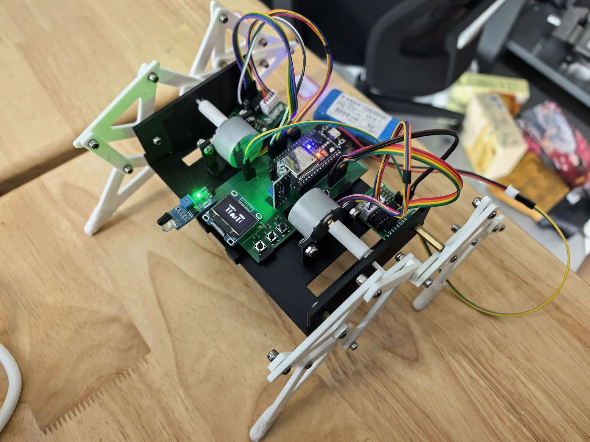
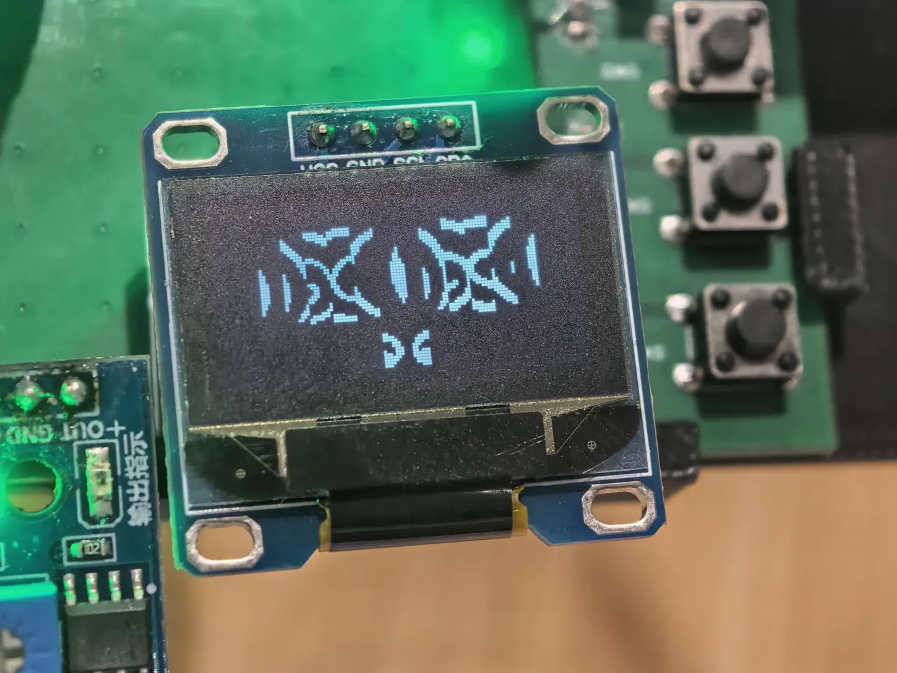


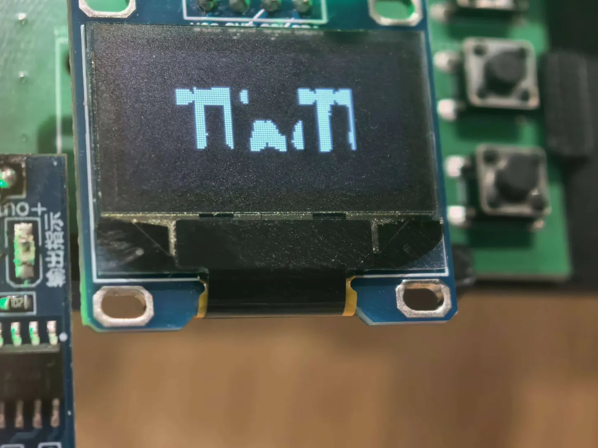
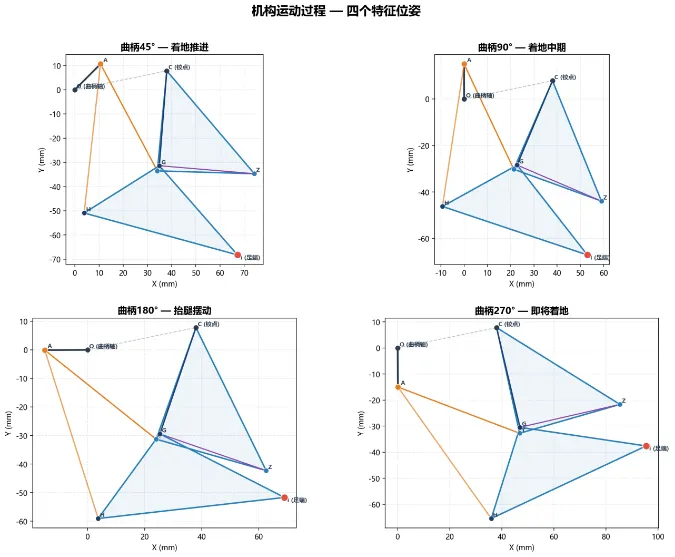


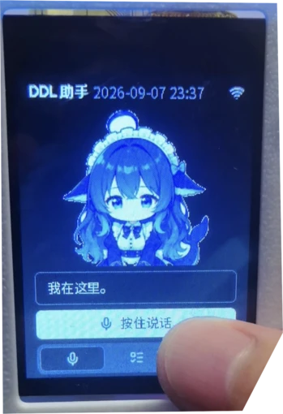
02.DDL Reminder说出一个截止日期，桌上的小装置就能记下来。DDL Reminder 结合触屏、旋钮、语音和灯光，让提醒从屏幕走到桌面。


面向 ESP32-S3 的语音 DDL 助手。设备本体提供 240×320 触屏、EC11 旋转编码器、麦克风、扬声器和 LED 提醒；云服务端负责 ASR、LLM、TTS、DDL 持久化与定时任务。DDL输入支持网页端输入，Http shortcut快捷输入，语音输入；到点会进行语音，LED和弹窗提醒。网页端和设备本体也支持DDL删改。本体交互方式支持语音交互，触摸屏交互及旋转旋钮交互，具体可实际上手体验（注意可能会有部分卡顿及网络BUG，设备也没有很完善）。另外这是网页端网址：https://ddl.c235com.site/
项目名称：DDL_reminderz
mentor：徐莘宁
基于ESP32-S3的语音DDL助手。设备采用240×320触屏、EC11编码器、麦克风、扬声器和LED提醒；Python服务端负责ASR、LLM、TTS、DDL持久化与定时任务。服务器同时支持受信任局域网中的ws://电脑IP:8888的通信方式和经Nginx/TLS暴露的云端wss://域名/ws的通信方式。
这张四格漫画对应一次完整交互：
1. 说出 DDL：ESP32-S3 通过 INMP441 采集 16 kHz 单声道 PCM，设备先负责录音、界面和交互反馈。
3. 理解并保存：服务端依次完成 ASR 转写、LLM 意图解析和 DDL 持久化，只有保存成功才返回成功回执；需要播报时再由 TTS 生成音频流。
4. 同步与提醒：设备根据回执刷新 LCD、播放语音并驱动 LED；最近一次 DDL 快照写入 SPIFFS，因此服务器暂时不可用时仍能查看并进行只读提醒。
对应到代码与存储层，整体结构如下：
Plain Text
ESP32-S3
├─ LVGL / shadcn 风格 UI
├─ INMP441 → PCM 16 kHz
├─ MAX98357A ← PCM 16 kHz
├─ NVS：网络与设备设置
└─ SPIFFS：最近一次 DDL 快照
│
▼
Python Server
├─ ASR：DashScope / FunASR / Whisper
├─ LLM：Qwen / GLM / DeepSeek / OpenAI
├─ TTS：Edge-TTS / DashScope
├─ DDL 存储、提醒与爬虫
└─ Docker + Nginx + TLS（可选）
> 代码模块功能说明（Deepseek版)
>
>
EC11旋转编码器原理
> 先A后B为顺时针，先B后A为逆时针，EC11实际是纯粹机械结构的元器件
>
>
1. 电源与 LDO (Power)
作用：将 USB 输入的 +5V 电压转换为 3.3V，为 ESP32、屏幕、麦克风等低压器件供电。
关键器件：U7 (AMS1117-3.3) 是核心的 LDO（低压差线性稳压器），配合 C1/C3 等滤波电容，确保输出电压稳定，避免音频或 WiFi 工作时产生干扰。
2. USB 转串口 (CH340C)
作用：充当电脑与 ESP32 之间的“翻译官”，实现程序下载和串口调试。
DTR/RTS 信号通过 Q2/Q3 三极管控制 ESP32 的 BOOT 和 RST 引脚，实现一键自动下载，无需手动按住按键。U0TXD/RXD 直接与 ESP32 的串口相连。
3. 音频输入 (麦克风 - ICS-43434)
作用：采集环境声音，用于语音唤醒或录音。
接口：I2S 数字接口（WS/CLK/SD）。
关键配置：LR 引脚接地，表示工作在左声道模式；SD 引脚通过电阻上拉，使能麦克风。
4. 音频输出 (功放 - MAX98357A)
作用：将 ESP32 输出的 I2S 数字音频信号放大，驱动喇叭发声。
接口：I2S 数字接口（BCLK/LRCLK/DIN）。
关键配置：SD_MODE 通过 1MΩ 电阻上拉至 3.3V，使功放常开，并选择输出通道。GAIN_SLOT 接地，设置功放增益为 12dB。
5. 显示与触摸 (LCD & Touch)
屏幕 (ST7789)：SPI 接口，通过 DC 区分命令/数据，RST 复位，BL 控制背光。
触摸 (FT6336U)：I2C 接口，TP_INT 为触摸中断信号（低电平有效），TP_RST 用于复位。
6. USB Type-C 接口
作用：提供 +5V 电源输入，并通过 D+/D- 与 CH340C 通信。
关键配置：CC1/CC2 下拉电阻 5.1kΩ，用于识别为从设备（Sink），确保能从电脑或充电器取电。
优先把整个供电系统考虑完全，依情况甚至可以全部用通孔通到底层去，节省下来的顶层空间可以大大方便信号线的布局，我因为后面才想到所以其实布局做得一坨
我图接线方便把所有元器件挤在左下角，因此布局不太合理，LDO模块放到边缘方便散热，ESP32要用WIFI，留了天线区，结果计算失误离板子边缘太远了，特意准备了1U型号的ESP32S3方便接天线出去
还有几个不满的地方：麦克风位置比较神秘，FPC排插离芯片太远了，下方排布过密，但我板子已经打了，也已经把所剩无几的元器件焊上去了，没招了，只得后续建模补救了
机械结构设计说明
感觉我这个3D打印外壳纯是功能性设计，其实也没有什么亮点之类的。
因为之前考虑过要不要实现横屏竖屏转换，所以横竖长度是一样的。
基本上每个孔都留了0.3mm余量，每个可能紧密连接的位置也留了空隙，防止出现装不上的情况，右边和上边留空间为软排线的折叠留好位置，零件基本采用螺丝紧固
两个失策：按钮整太大了和PCB碰上了；旋转编码器的盖子和铜柱有干涉，装不上去
喇叭朝外固定防止漏音，麦克风整了个管道也是防止漏音，Type-C口开打了些方便Type-C插入
预留空间方便LCD屏幕插入，并参考Echo-Mate采用背后挡块固定LCD屏幕
这整个项目我经历了多次方向调整
1. 复刻Echo-Mate项目——>参考较简单的小智S3自行设计
原因：被mentor提醒，决定采用更能handle，有更多资料的ESP32S3
2. 拉取已有的小智服务器——>参考较简单的复现项目自行搭建服务器
原因：小智服务器经过多层封装调优，非常复杂且难以进行个性化调整
3. 面包板或模块式接线——>PCB稳定接线
原因：面包板接线经常出现麦克风录音识别有误，功放有噪音，LCD白屏的问题，模块化则感觉完成度不高也比较简单，如果PCB无法按时完成则可随时回退回模块化
> 面包板时代的遗迹
>
>
4. 仅满足基本需求的简陋UI——>经过设计与整合的UI布局
原因：原UI被同学吐槽“界面好复古”，本人也相当不满意，遂寻找资料，并发给gpt，让它帮我重新设计UI并引入了鲸鱼娘AI助手形象
before:（这是面包板时期经常白屏的画面，后面换为PCB板后白屏问题基本解决）
after:（这是弹窗错误时期的画面，后面经过插入报错信息，发现是调用LVGL函数后弹窗恢复成了默认的130×130，最后修复成功）
所有方向调整都是根据当前项目状态进行的方向动态调整，也是和同学，AI交流讨论之后的结果，目标都是一个，做完这个项目，并尽可能让这个项目更好，这整段动态调整既要做加法，也要做减法。
1. 有想法之后先问AI有没有什么可以参考的项目，自己去大致看过一眼觉得可以采用，就丢给Agent去参考已有的项目生成新代码，AI的输出很大概率取决于输入
2. 不要觉得AI生成完就万事大吉了，要根据实际结果反复迭代，遇到问题就解决问题，想到什么需要注意的和一些新想法就和AI说，要当一个颐指气使，有很多要求的大老板
3. 遇到问题不懂就问，简单问题问网页端AI，复杂问题问接触项目更多的Agent
心得：
花了一个月，做得很开心。真的是慢工出细活，反复与AI交流迭代了无数次，自己也想过很多种不同的实现方式，也碰了很多壁，反复求索后终于做出了还挺像模像样的一版，内心自然是挺开心的。
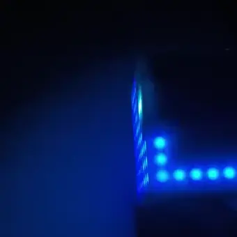
03.cybercube制作一个能够模拟真实液体在容器中流动状态的LED艺术装置。
装置能够根据当前姿态实时改变液面方向，使液面始终垂直于当前重力方向，同时在剧烈运动、失重等情况下模拟液体飞溅效果，使整体观尽可能接近真实物理世界中的液体。其中，水立方的侧面和顶面能够通过LED点阵灯带显示水位和液面，顶部只有在有“水”接触时以及模拟水“溅出”时才会点亮。
 04.桌面音乐盒
04.桌面音乐盒像操作一台小唱机一样旋动实体旋钮，就能在歌曲、音量和显示模式之间切换。这台 DIY 音乐盒把角色动画、黑胶界面与局域网点歌结合起来。


这是一款以《紫罗兰永恒花园》中的薇尔莉特为主题的DIY音乐盒，将音乐、角色动画与实体旋钮操作融为一体。作品以ESP32-S3开发板为核心，自主设计外围PCB，集成SD卡存储、数字D类功放、供电控制及屏幕接口，完成软硬件整合。系统可读取并解码SD卡中的MP3、FLAC音乐，通过扬声器播放；TFT彩屏经SPI通信循环呈现薇尔莉特GIF动画，OLED屏幕则显示曲目、音量、进度及播放模式，并提供黑胶唱片与动态波形两种界面。用户通过旋转、单击、连击和长按旋钮完成调音、选曲及模式切换，也可在局域网网页中点歌、暂停、上传歌曲或边传边播。PCB上的角色线稿与主题网页呼应作品风格，让它成为兼具电子制作探索与情感表达的桌面音乐装置。
该项目的灵感来源于一首我很喜欢听的纯音乐（《寂静的冬夜》），当时就想着自己做一个播放器，能够随时随地地播放自己喜欢的音乐，后续经过一代代迭代下来，最终形成了两个版本（左为version2双声道彩屏，右为version2单声道单屏）
音乐盒将音乐信息存储在SD卡中，使用esp32s3为开发板进行实时解码，通过一个旋转编码器实现复杂的复合操作，如上下切歌，调整音量，切换模式，切换UI，甚至部署网页进行实时控制，远程烧写等（下图为网页端界面）
元件具体选型是esp32s3（N16R8）开发板，数字功放芯片MAX98357A，功率电子开关，SD卡座，TFT彩屏，OLED小屏，5V2A锂电池，单/双声道扬声器
从面包板模块化搭建跑通代码，再到集成到一块PCB板精炼空间，到最后有了双声道彩屏，有了网页端，有了外壳，这个项目经历了数次迭代更新，可以说是一个在不断尝试添加新东西进去的逐渐成长型项目。
在迭代过程中，我如果有想到有趣的创新点或者看到有趣的功能，都会尝试加进这个音乐盒项目里，过程中少不了和AI的交流，讨论功能的具体实现方式，然后尝试动手加进去；碰到如噪声过大，无法正常播放人声歌曲等BUG，暂时无法找到问题根源的我仍坚持优化这个项目，后来在一个巧合下偶然发现并解决了这一系列bug（阻抗匹配），在实践中逐渐提升了解决问题的能力。
AI工具在这个项目中帮助了我很多，尤其是软件嵌入式的部分，它用过硬的软件编码技术帮助我规避了很多坑，以及碰到硬件上不懂怎么解决的bug，我也会积极和AI交流，解决问题。
经过开发这一个项目，我学会了很多嵌入式的相关技术，以及有关声学以及硬件功放的相关知识，更重要的是我体会到了自己从头到尾开发一个项目的快感，那是和借鉴开源学习完全不一样的体验，需要自己去规划，去选型，去解决问题，去提升作品，去为自己的作品负责，我希望今后能始终带着这份初心和热忱，继续在自己所喜爱的领域尽情创造。
 05.头戴式蓝牙操控器
05.头戴式蓝牙操控器该项目通过头部的简单动作组合，在 Windows 电脑上触发自定义命令，例如打开网站或软件。
该项目分为硬件、软件部分。硬件部分主要基于XIAOESP32与MPU6050陀螺仪，通过绑带把装置固定在额头后，陀螺仪采集头部朝向并转换成四元数，通过一系列算法，识别点头、抬头、左倾斜、右倾斜的头部动作，如果动作组合和自定义组合匹配（比如点头+抬头），就向电脑发送相应的指令。设备和电脑通过蓝牙（BLE）连接，命令通过HID协议向电脑发送。此外，可以开启“鼠标模式”，把头部动作映射成鼠标光标移动。设备旁边的铜箔可以作为鼠标左键使用，手指靠近触发左键。三个LED指示灯代表电池剩余电量，绿色最高，红色最低。

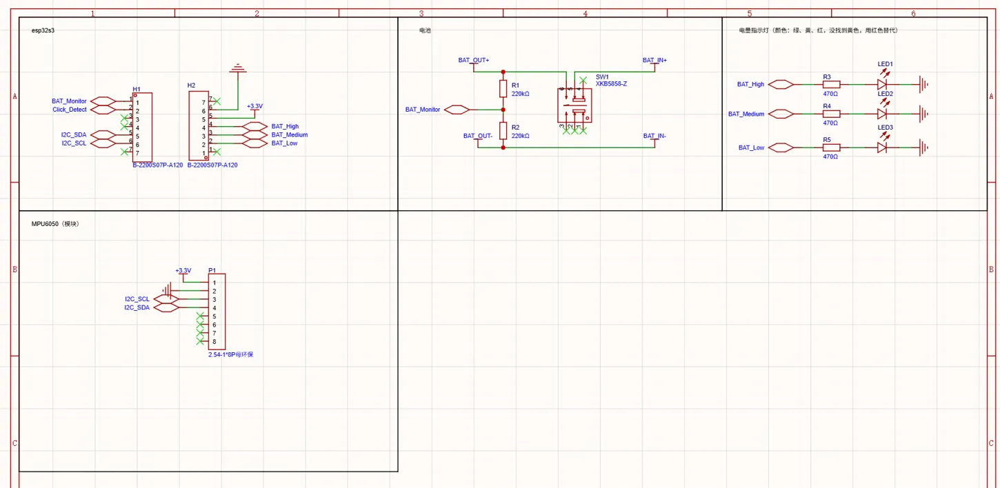


软件部分负责电脑和设备的连接、设置自定义命令。
1、戴上设备，推荐戴在头部
2、打开配置软件，连接设备，并进行校准（一般只需要静止校准，如果识别较差可以进行其他校准）
3、确认配置，可以新建、删除
4、通过动作组合触发指令；点击“命令配置”上面的“模拟鼠标”后可以通过“左倾+右倾”开始用头部动作控制光标移动，“左倾+右倾+鼠标左键”退出。
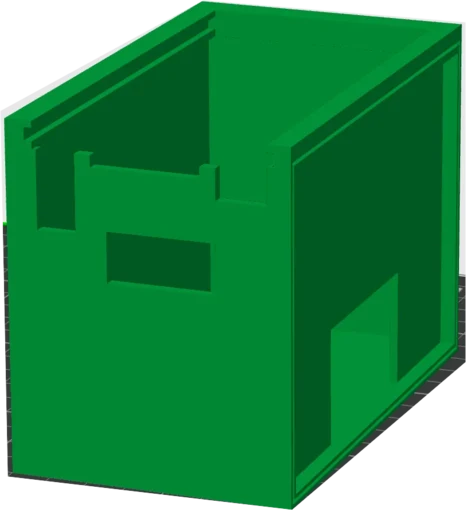
06.自然光唤醒灯把闹钟响起前的一段时间交给光。床头灯用可调的亮度曲线模拟日出，墨水屏同时显示时间、室温和湿度。


自然光唤醒灯面向晨间起床场景，通过逐步增强的灯光模拟日出，让使用者在光线由暗到亮的过程中醒来，兼具时间显示、温湿度监测功能。项目以 STM32 为主控，使用 DS3231 实时时钟提供日期和时间，SHT30 传感器采集室内温度与湿度，墨水屏集中显示这些信息，便于在床边查看。照明部分采用 5 V LED，由主控输出 PWM 信号调节亮度。亮度曲线可自定义，用于改变各阶段的亮度和变化节奏，呈现不同的日出效果。整体外壳由3D打印实现。
项目名称：NaturalLight 自然光唤醒灯
mentor：巩子杰
传统闹钟以声音在某一时刻突然介入。NaturalLight 将唤醒过程前移：系统以 DS3231 的实时时间为基准，在闹钟前进入渐亮窗口，按照平方曲线逐步提高 LED 亮度；到点后保持全亮，并允许用户通过实体按键停止当天唤醒。
核心功能
时间与闹钟：每秒读取 DS3231，支持校时、每日闹钟启停。
环境感知：SHT30 每 10 秒采样温湿度，并对温度和湿度数据分别进行 CRC 校验。
晨光控制：TIM3_CH3 输出 1 kHz PWM，通过平方曲线完成柔和渐亮，到点后进入全亮保持。
本地交互：四枚低有效按键采用内部上拉和 30 ms 消抖，用于编辑时间、闹钟与启用状态。
状态显示：SSD1677 驱动 800 × 480 墨水屏，显示时间、闹钟、环境数据与运行状态。
异常保护：上电先将输出归零；时间无效、PWM 异常或墨水屏超时时，系统回到安全状态。
关键技术规格
时间线说明：
first save、second save：对vscode编程环境，stm32相关插件进行简单配置，同时在vscode中配置codex，并进行简单试验；
USART1 test：串口调试代码编写；
I2C Demo：对STM32的I2C模块进行开发试验，使用DS3231时钟模块进行；
TEMP&HUMI:I2C逻辑验证成立后，进行另一个I2C设备SHT30的开发；
SHT30+INK_DONE：对SHT30部分代码进行修改；对墨水屏进行开发；
PWMlight:灯光渐亮方式代码的编写；
DONE_1：最终版代码；
C
typedef enum
{
I2C_SCAN_WAITING = 0,
I2C_SCAN_RUNNING,
I2C_SCAN_COMPLETE,
I2C_SCAN_FAILED
} I2C_ScanState;
typedef enum
{
SHT30_WAITING_FOR_SCAN = 0,
SHT30_RESET_WAIT,
SHT30_IDLE,
SHT30_MEASURING,
SHT30_UNAVAILABLE
} SHT30_State;
typedef enum
{
EPD_TEST_WAITING = 0,
EPD_TEST_POWER_WAIT,
EPD_TEST_RESET_LOW_WAIT,
EPD_TEST_RESET_HIGH_WAIT,
EPD_TEST_WAIT_READY_BEFORE_RESET,
EPD_TEST_WAIT_READY_AFTER_RESET,
EPD_TEST_TRANSFER_IMAGE,
EPD_TEST_WAIT_REFRESH,
EPD_TEST_SLEEP_WAIT,
EPD_TEST_COMPLETE,
EPD_TEST_FAILED
} EPD_TestState;
typedef enum
{
EPD_REFRESH_FULL = 0,
EPD_REFRESH_PARTIAL
} EPD_RefreshMode;
typedef enum
{
RTC_WAITING_FOR_SCAN = 0,
RTC_READY,
RTC_UNAVAILABLE
} RTC_State;
typedef enum
{
WAKE_IDLE = 0,
WAKE_SUNRISE,
WAKE_FULL_HOLD,
WAKE_STOPPED,
WAKE_ERROR
} WakeState;
typedef enum
{
SETTING_NONE = 0,
SETTING_TIME_HOUR,
SETTING_TIME_MINUTE,
SETTING_ALARM_HOUR,
SETTING_ALARM_MINUTE,
SETTING_ALARM_ENABLE
} SettingField;
typedef enum
{
KEY_ID_SET = 0,
KEY_ID_UP,
KEY_ID_DOWN,
KEY_ID_OK_STOP,
KEY_ID_COUNT
} KeyId;
typedef struct
{
GPIO_TypeDef *port;
uint16_t pin;
uint8_t raw_pressed;
uint8_t stable_pressed;
uint32_t raw_changed_ms;
} KeyDebounce;
typedef struct
{
char character;
uint8_t columns[5];
} EPD_Glyph;
/* USER CODE END PTD */
/* Private define ------------------------------------------------------------*/
/* USER CODE BEGIN PD */
/* E-paper interface (SPI transmit-only; PA6 remains a GPIO power control). */
/* Shared I2C bus. */
/* LED MOSFET PWM control. */
/* Active-low keys. */
/* Reserved PCB USART1 header; PA9/PA10 are not initialized in this build. */
(EPD_HEIGHT - EPD_PARTIAL_Y - EPD_PARTIAL_HEIGHT)
/* USER CODE END PD */
/* Private macro -------------------------------------------------------------*/
/* USER CODE BEGIN PM */
/* USER CODE END PM */
/* Private variables ---------------------------------------------------------*/
/* USER CODE BEGIN PV */
I2C_HandleTypeDef hi2c1;
SPI_HandleTypeDef hspi1;
TIM_HandleTypeDef htim3;
volatile uint8_t g_i2c_ready = 0U;
volatile uint8_t g_i2c_scan_complete = 0U;
volatile uint8_t g_i2c_device_count = 0U;
volatile uint8_t g_i2c_stored_address_count = 0U;
volatile uint8_t g_i2c_found_addresses[I2C_SCAN_MAX_STORED_DEVICES] = {0U};
volatile uint32_t g_i2c_error_count = 0U;
volatile uint32_t g_i2c_last_error = HAL_I2C_ERROR_NONE;
volatile I2C_ScanState g_i2c_scan_state = I2C_SCAN_WAITING;
static uint8_t i2c_scan_address = I2C_SCAN_FIRST_ADDRESS;
static uint32_t i2c_scan_wait_started_ms = 0U;
static uint32_t i2c_scan_last_step_ms = 0U;
volatile uint8_t g_sht30_ready = 0U;
volatile uint8_t g_sht30_data_valid = 0U;
volatile uint8_t g_sht30_address = 0U;
volatile int16_t g_sht30_temperature_tenths_c = 0;
volatile uint16_t g_sht30_humidity_tenths_rh = 0U;
volatile uint32_t g_sht30_success_count = 0U;
volatile uint32_t g_sht30_init_error_count = 0U;
volatile uint32_t g_sht30_read_error_count = 0U;
volatile uint32_t g_sht30_crc_error_count = 0U;
volatile SHT30_State g_sht30_state = SHT30_WAITING_FOR_SCAN;
static uint32_t sht30_state_started_ms = 0U;
static uint32_t sht30_last_read_ms = 0U;
volatile uint8_t g_rtc_ready = 0U;
volatile uint8_t g_rtc_time_valid = 0U;
volatile uint8_t g_rtc_hour = 0U;
volatile uint8_t g_rtc_minute = 0U;
volatile uint8_t g_rtc_second = 0U;
volatile uint8_t g_rtc_weekday = 1U;
volatile uint8_t g_rtc_date = 1U;
volatile uint8_t g_rtc_month = 1U;
volatile uint8_t g_rtc_year = 0U;
volatile uint32_t g_rtc_read_count = 0U;
volatile uint32_t g_rtc_error_count = 0U;
volatile uint32_t g_rtc_last_i2c_error = HAL_I2C_ERROR_NONE;
volatile RTC_State g_rtc_state = RTC_WAITING_FOR_SCAN;
static uint32_t rtc_last_read_ms = 0U;
static uint8_t rtc_last_display_hour = 0xFFU;
static uint8_t rtc_last_display_minute = 0xFFU;
volatile uint8_t g_spi_ready = 0U;
volatile uint32_t g_spi_error_count = 0U;
volatile uint32_t g_spi_last_error = HAL_SPI_ERROR_NONE;
volatile EPD_TestState g_epd_state = EPD_TEST_WAITING;
volatile uint8_t g_epd_refresh_complete = 0U;
volatile uint32_t g_epd_error_code = EPD_ERROR_NONE;
volatile uint32_t g_epd_busy_timeout_count = 0U;
volatile uint32_t g_epd_spi_error_count = 0U;
volatile uint32_t g_epd_total_refresh_count = 0U;
volatile uint32_t g_epd_full_refresh_count = 0U;
volatile uint32_t g_epd_partial_refresh_count = 0U;
volatile EPD_RefreshMode g_epd_refresh_mode = EPD_REFRESH_FULL;
static uint8_t epd_framebuffer[EPD_FRAMEBUFFER_SIZE];
static uint32_t epd_boot_started_ms = 0U;
static uint32_t epd_state_started_ms = 0U;
static uint32_t epd_last_refresh_ms = 0U;
static volatile uint8_t epd_refresh_requested = 0U;
volatile uint8_t g_led_pwm_ready = 0U;
volatile uint8_t g_led_brightness = 0U;
volatile uint16_t g_led_pwm_compare = 0U;
volatile uint32_t g_led_pwm_error_count = 0U;
volatile WakeState g_wake_state = WAKE_IDLE;
volatile uint16_t g_wake_progress_permille = 0U;
volatile uint8_t g_alarm_hour = DEFAULT_ALARM_HOUR;
volatile uint8_t g_alarm_minute = DEFAULT_ALARM_MINUTE;
volatile uint8_t g_alarm_enabled = 1U;
volatile uint8_t g_alarm_stop_latched = 0U;
volatile uint32_t g_alarm_stop_date_key = 0U;
volatile SettingField g_setting_field = SETTING_NONE;
volatile uint8_t g_setting_hour = 0U;
volatile uint8_t g_setting_minute = 0U;
volatile uint8_t g_setting_alarm_hour = DEFAULT_ALARM_HOUR;
volatile uint8_t g_setting_alarm_minute = DEFAULT_ALARM_MINUTE;
volatile uint8_t g_setting_alarm_enabled = 1U;
volatile uint8_t g_setting_save_error = 0U;
volatile uint8_t g_key_stable_mask = 0U;
volatile uint8_t g_key_last_pressed = 0xFFU;
volatile uint32_t g_key_press_count[KEY_ID_COUNT] = {0U};
static KeyDebounce key_buttons[KEY_ID_COUNT] =
{
{KEY_SET_GPIO_Port, KEY_SET_Pin, 0U, 0U, 0U},
{KEY_UP_GPIO_Port, KEY_UP_Pin, 0U, 0U, 0U},
{KEY_DOWN_GPIO_Port, KEY_DOWN_Pin, 0U, 0U, 0U},
{KEY_OK_STOP_GPIO_Port, KEY_OK_STOP_Pin, 0U, 0U, 0U}
};
static const EPD_Glyph epd_font[] =
{
{' ', {0x00U, 0x00U, 0x00U, 0x00U, 0x00U}},
{'%', {0x62U, 0x64U, 0x08U, 0x13U, 0x23U}},
{'-', {0x08U, 0x08U, 0x08U, 0x08U, 0x08U}},
{'.', {0x00U, 0x60U, 0x60U, 0x00U, 0x00U}},
{':', {0x00U, 0x36U, 0x36U, 0x00U, 0x00U}},
{'0', {0x3EU, 0x51U, 0x49U, 0x45U, 0x3EU}},
{'1', {0x00U, 0x42U, 0x7FU, 0x40U, 0x00U}},
{'2', {0x42U, 0x61U, 0x51U, 0x49U, 0x46U}},
{'3', {0x21U, 0x41U, 0x45U, 0x4BU, 0x31U}},
{'4', {0x18U, 0x14U, 0x12U, 0x7FU, 0x10U}},
{'5', {0x27U, 0x45U, 0x45U, 0x45U, 0x39U}},
{'6', {0x3CU, 0x4AU, 0x49U, 0x49U, 0x30U}},
{'7', {0x01U, 0x71U, 0x09U, 0x05U, 0x03U}},
{'8', {0x36U, 0x49U, 0x49U, 0x49U, 0x36U}},
{'9', {0x06U, 0x49U, 0x49U, 0x29U, 0x1EU}},
{'?', {0x02U, 0x01U, 0x51U, 0x09U, 0x06U}},
{'A', {0x7EU, 0x11U, 0x11U, 0x11U, 0x7EU}},
{'B', {0x7FU, 0x49U, 0x49U, 0x49U, 0x36U}},
{'C', {0x3EU, 0x41U, 0x41U, 0x41U, 0x22U}},
{'D', {0x7FU, 0x41U, 0x41U, 0x22U, 0x1CU}},
{'E', {0x7FU, 0x49U, 0x49U, 0x49U, 0x41U}},
{'F', {0x7FU, 0x09U, 0x09U, 0x09U, 0x01U}},
{'G', {0x3EU, 0x41U, 0x49U, 0x49U, 0x7AU}},
{'H', {0x7FU, 0x08U, 0x08U, 0x08U, 0x7FU}},
{'I', {0x00U, 0x41U, 0x7FU, 0x41U, 0x00U}},
{'K', {0x7FU, 0x08U, 0x14U, 0x22U, 0x41U}},
{'L', {0x7FU, 0x40U, 0x40U, 0x40U, 0x40U}},
{'M', {0x7FU, 0x02U, 0x0CU, 0x02U, 0x7FU}},
{'N', {0x7FU, 0x04U, 0x08U, 0x10U, 0x7FU}},
{'O', {0x3EU, 0x41U, 0x41U, 0x41U, 0x3EU}},
{'P', {0x7FU, 0x09U, 0x09U, 0x09U, 0x06U}},
{'R', {0x7FU, 0x09U, 0x19U, 0x29U, 0x46U}},
{'S', {0x46U, 0x49U, 0x49U, 0x49U, 0x31U}},
{'T', {0x01U, 0x01U, 0x7FU, 0x01U, 0x01U}},
{'U', {0x3FU, 0x40U, 0x40U, 0x40U, 0x3FU}},
{'V', {0x1FU, 0x20U, 0x40U, 0x20U, 0x1FU}},
{'Y', {0x07U, 0x08U, 0x70U, 0x08U, 0x07U}}
};
/* USER CODE END PV */
/* Private function prototypes -----------------------------------------------*/
void SystemClock_Config(void);
static void MX_GPIO_Init(void);
static void MX_I2C1_Init(void);
static void MX_SPI1_Init(void);
static void MX_TIM3_Init(void);
void HAL_TIM_MspPostInit(TIM_HandleTypeDef* htim);
/* USER CODE BEGIN PFP */
static HAL_StatusTypeDef UART_SendText(const char *text);
static void UART_SendI2CAddress(uint8_t address);
static void UART_SendI2CSummary(uint8_t count);
static void I2C_ScanSchedule(void);
static void I2C_ScanTask(void);
static uint8_t SHT30_CalculateCrc(const uint8_t *data, uint8_t length);
static uint8_t SHT30_FindAddress(void);
static void SHT30_RecordI2cError(void);
static void Text_AppendUnsigned(char *text, size_t *index, uint32_t value);
static void UART_SendSHT30Reading(void);
static void SHT30_Task(void);
static uint8_t DS3231_BcdToBinary(uint8_t bcd);
static uint8_t DS3231_BinaryToBcd(uint8_t value);
static uint8_t DS3231_IsPresent(void);
static HAL_StatusTypeDef DS3231_ReadTime(void);
static HAL_StatusTypeDef DS3231_WriteTime(uint8_t hour, uint8_t minute);
static HAL_StatusTypeDef DS3231_ReadAlarmConfig(void);
static HAL_StatusTypeDef DS3231_WriteAlarmConfig(void);
static void DS3231_Task(void);
static HAL_StatusTypeDef EPD_SendCommand(uint8_t command);
static HAL_StatusTypeDef EPD_SendData(const uint8_t *data, uint16_t length);
static HAL_StatusTypeDef EPD_SendDataByte(uint8_t data);
static HAL_StatusTypeDef EPD_ConfigureController(void);
static HAL_StatusTypeDef EPD_ConfigurePartialWindow(void);
static HAL_StatusTypeDef EPD_TransferPartialImage(uint8_t ram_command);
static void EPD_SetPixel(uint16_t x, uint16_t y, uint8_t black);
static void EPD_DrawFilledRectangle(uint16_t x, uint16_t y,
uint16_t width, uint16_t height);
static const uint8_t *EPD_FindGlyph(char character);
static void EPD_DrawText(uint16_t x, uint16_t y, const char *text,
uint8_t scale);
static void EPD_BuildTestImage(void);
static void EPD_RequestRefresh(void);
static void EPD_Fail(uint32_t error_code);
static void EPD_TestTask(void);
static void LED_SetBrightness(uint8_t brightness);
static void LED_Fail(void);
static void WakeAlarm_Task(void);
static void Keys_Init(void);
static void Key_HandlePress(KeyId key_id);
static void Keys_Task(void);
/* USER CODE END PFP */
/* Private user code ---------------------------------------------------------*/
/* USER CODE BEGIN 0 */
static HAL_StatusTypeDef UART_SendText(const char *text)
{
/* Logging hook intentionally disabled; inspect volatile globals via SWD. */
(void)text;
return HAL_OK;
}
static void UART_SendI2CAddress(uint8_t address)
{
static const char hex_digits[] = "0123456789ABCDEF";
char line[] = "[I2C] device found at 0x00rn";
size_t length = strlen(line);
line[length - 4U] = hex_digits[(address >> 4U) & 0x0FU];
line[length - 3U] = hex_digits[address & 0x0FU];
(void)UART_SendText(line);
}
static void UART_SendI2CSummary(uint8_t count)
{
static const char prefix[] = "[I2C] scan complete, devices: ";
char line[40];
size_t index;
(void)strcpy(line, prefix);
index = strlen(line);
if (count >= 100U)
{
line[index++] = (char)('0' + (count / 100U));
}
if (count >= 10U)
{
line[index++] = (char)('0' + ((count / 10U) % 10U));
}
line[index++] = (char)('0' + (count % 10U));
line[index++] = 'r';
line[index++] = 'n';
line[index] = '0';
(void)UART_SendText(line);
}
static void I2C_ScanSchedule(void)
{
uint8_t index;
g_i2c_scan_complete = 0U;
g_i2c_device_count = 0U;
g_i2c_stored_address_count = 0U;
for (index = 0U; index < I2C_SCAN_MAX_STORED_DEVICES; index++)
{
g_i2c_found_addresses[index] = 0U;
}
i2c_scan_address = I2C_SCAN_FIRST_ADDRESS;
i2c_scan_wait_started_ms = HAL_GetTick();
i2c_scan_last_step_ms = i2c_scan_wait_started_ms;
g_i2c_scan_state = (g_i2c_ready != 0U) ? I2C_SCAN_WAITING : I2C_SCAN_FAILED;
}
static void I2C_ScanTask(void)
{
HAL_StatusTypeDef status;
uint32_t error_code;
uint32_t now_ms;
if ((g_i2c_ready == 0U) · · (g_i2c_scan_state == I2C_SCAN_COMPLETE)
(g_i2c_scan_state == I2C_SCAN_FAILED))
{
return;
}
now_ms = HAL_GetTick();
if (g_i2c_scan_state == I2C_SCAN_WAITING)
{
if ((uint32_t)(now_ms - i2c_scan_wait_started_ms) < I2C_SCAN_START_DELAY_MS)
{
return;
}
(void)UART_SendText("[I2C] scanning addresses 0x08-0x77...rn");
i2c_scan_last_step_ms = now_ms - I2C_SCAN_STEP_INTERVAL_MS;
g_i2c_scan_state = I2C_SCAN_RUNNING;
}
if ((uint32_t)(now_ms - i2c_scan_last_step_ms) < I2C_SCAN_STEP_INTERVAL_MS)
{
return;
}
i2c_scan_last_step_ms = now_ms;
status = HAL_I2C_IsDeviceReady(&hi2c1, (uint16_t)(i2c_scan_address << 1U),
1U, I2C_SCAN_PROBE_TIMEOUT_MS);
if (status == HAL_OK)
{
if (g_i2c_stored_address_count < I2C_SCAN_MAX_STORED_DEVICES)
{
g_i2c_found_addresses[g_i2c_stored_address_count] = i2c_scan_address;
g_i2c_stored_address_count++;
}
g_i2c_device_count++;
UART_SendI2CAddress(i2c_scan_address);
}
else
{
error_code = HAL_I2C_GetError(&hi2c1);
/*
* In the STM32F1 HAL, HAL_I2C_IsDeviceReady() returns HAL_ERROR for an
* unused address after clearing AF, and ErrorCode can therefore remain
* HAL_I2C_ERROR_NONE. Both NONE and AF mean "no device at this address"
* during a scan; only other status/error combinations indicate a bus
* fault that should stop the scan.
*/
if ((status != HAL_ERROR)
((error_code != HAL_I2C_ERROR_NONE) &&
(error_code != HAL_I2C_ERROR_AF)))
{
g_i2c_error_count++;
g_i2c_last_error = error_code;
g_i2c_scan_complete = 1U;
g_i2c_scan_state = I2C_SCAN_FAILED;
(void)UART_SendText("[ERROR] I2C bus failure; scan stoppedrn");
return;
}
}
if (i2c_scan_address >= I2C_SCAN_LAST_ADDRESS)
{
g_i2c_scan_complete = 1U;
g_i2c_scan_state = I2C_SCAN_COMPLETE;
UART_SendI2CSummary(g_i2c_device_count);
}
else
{
i2c_scan_address++;
}
}
static uint8_t SHT30_CalculateCrc(const uint8_t *data, uint8_t length)
{
uint8_t crc = 0xFFU;
uint8_t byte_index;
uint8_t bit_index;
for (byte_index = 0U; byte_index < length; byte_index++)
{
crc ^= data[byte_index];
for (bit_index = 0U; bit_index < 8U; bit_index++)
{
if ((crc & 0x80U) != 0U)
{
crc = (uint8_t)((crc << 1U) ^ 0x31U);
}
else
{
crc <<= 1U;
}
}
}
return crc;
}
static uint8_t SHT30_FindAddress(void)
{
uint8_t index;
uint8_t address;
for (index = 0U; index < g_i2c_stored_address_count; index++)
{
address = g_i2c_found_addresses[index];
if ((address == SHT30_ADDRESS_PRIMARY)
(address == SHT30_ADDRESS_ALTERNATE))
{
return address;
}
}
return 0U;
}
static void SHT30_RecordI2cError(void)
{
g_sht30_read_error_count++;
g_i2c_error_count++;
g_i2c_last_error = HAL_I2C_GetError(&hi2c1);
}
static void Text_AppendUnsigned(char *text, size_t *index, uint32_t value)
{
char reversed_digits[10];
uint8_t digit_count = 0U;
do
{
reversed_digits[digit_count++] = (char)('0' + (value % 10U));
value /= 10U;
} while ((value != 0U) && (digit_count < sizeof(reversed_digits)));
while (digit_count > 0U)
{
digit_count--;
text[(*index)++] = reversed_digits[digit_count];
}
}
static void UART_SendSHT30Reading(void)
{
static const char temperature_prefix[] = "[SHT30] Temperature: ";
static const char humidity_prefix[] = " C, Humidity: ";
int32_t temperature_tenths = g_sht30_temperature_tenths_c;
uint32_t magnitude;
size_t index;
char line[64];
(void)strcpy(line, temperature_prefix);
index = strlen(line);
if (temperature_tenths < 0)
{
line[index++] = '-';
magnitude = (uint32_t)(-temperature_tenths);
}
else
{
magnitude = (uint32_t)temperature_tenths;
}
Text_AppendUnsigned(line, &index, magnitude / 10U);
line[index++] = '.';
line[index++] = (char)('0' + (magnitude % 10U));
(void)strcpy(&line[index], humidity_prefix);
index += strlen(humidity_prefix);
Text_AppendUnsigned(line, &index, g_sht30_humidity_tenths_rh / 10U);
line[index++] = '.';
line[index++] = (char)('0' + (g_sht30_humidity_tenths_rh % 10U));
line[index++] = ' ';
line[index++] = '%';
line[index++] = 'R';
line[index++] = 'H';
line[index++] = 'r';
line[index++] = 'n';
line[index] = '0';
(void)UART_SendText(line);
}
static void SHT30_Task(void)
{
static const uint8_t reset_command[2] =
{
SHT30_SOFT_RESET_MSB, SHT30_SOFT_RESET_LSB
};
static const uint8_t measurement_command[2] =
{
SHT30_MEASURE_MSB, SHT30_MEASURE_LSB
};
uint8_t received_data[6];
uint16_t raw_temperature;
uint16_t raw_humidity;
uint32_t now_ms;
HAL_StatusTypeDef status;
if ((g_i2c_ready == 0U) · · (g_sht30_state == SHT30_UNAVAILABLE))
{
return;
}
now_ms = HAL_GetTick();
if (g_sht30_state == SHT30_WAITING_FOR_SCAN)
{
if (g_i2c_scan_complete == 0U)
{
return;
}
if (g_i2c_scan_state != I2C_SCAN_COMPLETE)
{
g_sht30_init_error_count++;
g_sht30_state = SHT30_UNAVAILABLE;
(void)UART_SendText("[ERROR] SHT30 unavailable: I2C scan failedrn");
return;
}
g_sht30_address = SHT30_FindAddress();
if (g_sht30_address == 0U)
{
g_sht30_init_error_count++;
g_sht30_state = SHT30_UNAVAILABLE;
(void)UART_SendText("[ERROR] SHT30 not found at 0x44 or 0x45rn");
return;
}
status = HAL_I2C_Master_Transmit(&hi2c1,
(uint16_t)(g_sht30_address << 1U),
(uint8_t *)reset_command,
sizeof(reset_command),
SHT30_I2C_TIMEOUT_MS);
if (status != HAL_OK)
{
g_sht30_init_error_count++;
g_i2c_error_count++;
g_i2c_last_error = HAL_I2C_GetError(&hi2c1);
g_sht30_state = SHT30_UNAVAILABLE;
(void)UART_SendText("[ERROR] SHT30 soft reset failedrn");
return;
}
sht30_state_started_ms = now_ms;
g_sht30_state = SHT30_RESET_WAIT;
return;
}
if (g_sht30_state == SHT30_RESET_WAIT)
{
if ((uint32_t)(now_ms - sht30_state_started_ms) < SHT30_RESET_WAIT_MS)
{
return;
}
g_sht30_ready = 1U;
sht30_last_read_ms = now_ms - SHT30_READ_INTERVAL_MS;
g_sht30_state = SHT30_IDLE;
(void)UART_SendText("[SHT30] initialized successfullyrn");
}
if (g_sht30_state == SHT30_IDLE)
{
if ((uint32_t)(now_ms - sht30_last_read_ms) < SHT30_READ_INTERVAL_MS)
{
return;
}
status = HAL_I2C_Master_Transmit(&hi2c1,
(uint16_t)(g_sht30_address << 1U),
(uint8_t *)measurement_command,
sizeof(measurement_command),
SHT30_I2C_TIMEOUT_MS);
if (status != HAL_OK)
{
SHT30_RecordI2cError();
sht30_last_read_ms = now_ms;
(void)UART_SendText("[ERROR] SHT30 measurement command failedrn");
return;
}
sht30_state_started_ms = now_ms;
g_sht30_state = SHT30_MEASURING;
return;
}
if ((g_sht30_state != SHT30_MEASURING)
((uint32_t)(now_ms - sht30_state_started_ms) < SHT30_MEASUREMENT_WAIT_MS))
{
return;
}
status = HAL_I2C_Master_Receive(&hi2c1,
(uint16_t)(g_sht30_address << 1U),
received_data, sizeof(received_data),
SHT30_I2C_TIMEOUT_MS);
sht30_last_read_ms = now_ms;
g_sht30_state = SHT30_IDLE;
if (status != HAL_OK)
{
SHT30_RecordI2cError();
(void)UART_SendText("[ERROR] SHT30 measurement read failedrn");
return;
}
if ((SHT30_CalculateCrc(&received_data[0], 2U) != received_data[2])
(SHT30_CalculateCrc(&received_data[3], 2U) != received_data[5]))
{
g_sht30_crc_error_count++;
(void)UART_SendText("[ERROR] SHT30 CRC check failedrn");
return;
}
raw_temperature = (uint16_t)(((uint16_t)received_data[0] << 8U)
received_data[1]);
raw_humidity = (uint16_t)(((uint16_t)received_data[3] << 8U)
received_data[4]);
g_sht30_temperature_tenths_c =
(int16_t)(-450L + (int32_t)(((uint32_t)1750U * raw_temperature +
32767U) / 65535U));
g_sht30_humidity_tenths_rh =
(uint16_t)(((uint32_t)1000U * raw_humidity + 32767U) / 65535U);
g_sht30_data_valid = 1U;
g_sht30_success_count++;
UART_SendSHT30Reading();
}
static uint8_t DS3231_BcdToBinary(uint8_t bcd)
{
return (uint8_t)(((bcd >> 4U) * 10U) + (bcd & 0x0FU));
}
static uint8_t DS3231_BinaryToBcd(uint8_t value)
{
return (uint8_t)(((value / 10U) << 4U) · (value % 10U));
}
static uint8_t DS3231_IsPresent(void)
{
uint8_t index;
for (index = 0U; index < g_i2c_stored_address_count; index++)
{
if (g_i2c_found_addresses[index] == DS3231_ADDRESS)
{
return 1U;
}
}
return 0U;
}
static HAL_StatusTypeDef DS3231_ReadTime(void)
{
uint8_t data[7];
uint8_t status_register;
uint8_t hour;
HAL_StatusTypeDef status;
status = HAL_I2C_Mem_Read(&hi2c1, (uint16_t)(DS3231_ADDRESS << 1U),
DS3231_REG_TIME, I2C_MEMADD_SIZE_8BIT,
data, sizeof(data), DS3231_I2C_TIMEOUT_MS);
if (status != HAL_OK)
{
g_rtc_error_count++;
g_rtc_last_i2c_error = HAL_I2C_GetError(&hi2c1);
g_rtc_time_valid = 0U;
return status;
}
if ((data[2] & 0x40U) != 0U)
{
hour = DS3231_BcdToBinary((uint8_t)(data[2] & 0x1FU));
if (hour == 12U)
{
hour = 0U;
}
if ((data[2] & 0x20U) != 0U)
{
hour = (uint8_t)(hour + 12U);
}
}
else
{
hour = DS3231_BcdToBinary((uint8_t)(data[2] & 0x3FU));
}
g_rtc_second = DS3231_BcdToBinary((uint8_t)(data[0] & 0x7FU));
g_rtc_minute = DS3231_BcdToBinary((uint8_t)(data[1] & 0x7FU));
g_rtc_hour = hour;
g_rtc_weekday = DS3231_BcdToBinary((uint8_t)(data[3] & 0x07U));
g_rtc_date = DS3231_BcdToBinary((uint8_t)(data[4] & 0x3FU));
g_rtc_month = DS3231_BcdToBinary((uint8_t)(data[5] & 0x1FU));
g_rtc_year = DS3231_BcdToBinary(data[6]);
if ((g_rtc_second > 59U) · · (g_rtc_minute > 59U)
(g_rtc_hour > 23U) · · (g_rtc_weekday < 1U)
(g_rtc_weekday > 7U) · · (g_rtc_date < 1U)
(g_rtc_date > 31U) · · (g_rtc_month < 1U)
(g_rtc_month > 12U))
{
g_rtc_error_count++;
g_rtc_time_valid = 0U;
return HAL_ERROR;
}
status = HAL_I2C_Mem_Read(&hi2c1, (uint16_t)(DS3231_ADDRESS << 1U),
DS3231_REG_STATUS, I2C_MEMADD_SIZE_8BIT,
&status_register, 1U, DS3231_I2C_TIMEOUT_MS);
if (status != HAL_OK)
{
g_rtc_error_count++;
g_rtc_last_i2c_error = HAL_I2C_GetError(&hi2c1);
g_rtc_time_valid = 0U;
return status;
}
g_rtc_time_valid = ((status_register & DS3231_OSF_BIT) == 0U) ? 1U : 0U;
g_rtc_read_count++;
return HAL_OK;
}
static HAL_StatusTypeDef DS3231_WriteTime(uint8_t hour, uint8_t minute)
{
uint8_t data[3];
uint8_t status_register;
HAL_StatusTypeDef status;
if ((hour > 23U) · · (minute > 59U))
{
return HAL_ERROR;
}
data[0] = 0x00U;
data[1] = DS3231_BinaryToBcd(minute);
data[2] = DS3231_BinaryToBcd(hour);
status = HAL_I2C_Mem_Write(&hi2c1, (uint16_t)(DS3231_ADDRESS << 1U),
DS3231_REG_TIME, I2C_MEMADD_SIZE_8BIT,
data, sizeof(data), DS3231_I2C_TIMEOUT_MS);
if (status != HAL_OK)
{
g_rtc_error_count++;
g_rtc_last_i2c_error = HAL_I2C_GetError(&hi2c1);
return status;
}
status = HAL_I2C_Mem_Read(&hi2c1, (uint16_t)(DS3231_ADDRESS << 1U),
DS3231_REG_STATUS, I2C_MEMADD_SIZE_8BIT,
&status_register, 1U, DS3231_I2C_TIMEOUT_MS);
if (status == HAL_OK)
{
status_register &= (uint8_t)(~DS3231_OSF_BIT);
status = HAL_I2C_Mem_Write(&hi2c1,
(uint16_t)(DS3231_ADDRESS << 1U),
DS3231_REG_STATUS, I2C_MEMADD_SIZE_8BIT,
&status_register, 1U,
DS3231_I2C_TIMEOUT_MS);
}
if (status != HAL_OK)
{
g_rtc_error_count++;
g_rtc_last_i2c_error = HAL_I2C_GetError(&hi2c1);
return status;
}
g_rtc_hour = hour;
g_rtc_minute = minute;
g_rtc_second = 0U;
g_rtc_time_valid = 1U;
rtc_last_read_ms = HAL_GetTick();
return HAL_OK;
}
static HAL_StatusTypeDef DS3231_WriteAlarmConfig(void)
{
uint8_t alarm_data[4];
uint8_t control_register;
uint8_t status_register;
HAL_StatusTypeDef status;
alarm_data[0] = 0x00U;
alarm_data[1] = DS3231_BinaryToBcd(g_alarm_minute);
alarm_data[2] = DS3231_BinaryToBcd(g_alarm_hour);
alarm_data[3] = 0x81U; /* A1M4=1: alarm repeats every day. */
status = HAL_I2C_Mem_Write(&hi2c1, (uint16_t)(DS3231_ADDRESS << 1U),
DS3231_REG_ALARM1, I2C_MEMADD_SIZE_8BIT,
alarm_data, sizeof(alarm_data),
DS3231_I2C_TIMEOUT_MS);
if (status != HAL_OK)
{
g_rtc_error_count++;
g_rtc_last_i2c_error = HAL_I2C_GetError(&hi2c1);
return status;
}
status = HAL_I2C_Mem_Read(&hi2c1, (uint16_t)(DS3231_ADDRESS << 1U),
DS3231_REG_CONTROL, I2C_MEMADD_SIZE_8BIT,
&control_register, 1U, DS3231_I2C_TIMEOUT_MS);
if (status == HAL_OK)
{
control_register · = DS3231_INTCN_BIT;
if (g_alarm_enabled != 0U)
{
control_register · = DS3231_A1IE_BIT;
}
else
{
control_register &= (uint8_t)(~DS3231_A1IE_BIT);
}
status = HAL_I2C_Mem_Write(&hi2c1,
(uint16_t)(DS3231_ADDRESS << 1U),
DS3231_REG_CONTROL, I2C_MEMADD_SIZE_8BIT,
&control_register, 1U,
DS3231_I2C_TIMEOUT_MS);
}
if (status == HAL_OK)
{
status = HAL_I2C_Mem_Read(&hi2c1,
(uint16_t)(DS3231_ADDRESS << 1U),
DS3231_REG_STATUS, I2C_MEMADD_SIZE_8BIT,
&status_register, 1U,
DS3231_I2C_TIMEOUT_MS);
}
if (status == HAL_OK)
{
status_register &= (uint8_t)(~DS3231_A1F_BIT);
status = HAL_I2C_Mem_Write(&hi2c1,
(uint16_t)(DS3231_ADDRESS << 1U),
DS3231_REG_STATUS, I2C_MEMADD_SIZE_8BIT,
&status_register, 1U,
DS3231_I2C_TIMEOUT_MS);
}
if (status != HAL_OK)
{
g_rtc_error_count++;
g_rtc_last_i2c_error = HAL_I2C_GetError(&hi2c1);
}
return status;
}
static HAL_StatusTypeDef DS3231_ReadAlarmConfig(void)
{
uint8_t alarm_data[4];
uint8_t control_register;
uint8_t minute;
uint8_t hour;
HAL_StatusTypeDef status;
status = HAL_I2C_Mem_Read(&hi2c1, (uint16_t)(DS3231_ADDRESS << 1U),
DS3231_REG_ALARM1, I2C_MEMADD_SIZE_8BIT,
alarm_data, sizeof(alarm_data),
DS3231_I2C_TIMEOUT_MS);
if (status == HAL_OK)
{
status = HAL_I2C_Mem_Read(&hi2c1,
(uint16_t)(DS3231_ADDRESS << 1U),
DS3231_REG_CONTROL, I2C_MEMADD_SIZE_8BIT,
&control_register, 1U,
DS3231_I2C_TIMEOUT_MS);
}
if (status != HAL_OK)
{
g_rtc_error_count++;
g_rtc_last_i2c_error = HAL_I2C_GetError(&hi2c1);
return status;
}
minute = DS3231_BcdToBinary((uint8_t)(alarm_data[1] & 0x7FU));
hour = DS3231_BcdToBinary((uint8_t)(alarm_data[2] & 0x3FU));
if (((alarm_data[0] & 0x80U) != 0U)
((alarm_data[1] & 0x80U) != 0U)
((alarm_data[2] & 0xC0U) != 0U)
((alarm_data[3] & 0x80U) == 0U)
(DS3231_BcdToBinary((uint8_t)(alarm_data[0] & 0x7FU)) != 0U)
(minute > 59U) · · (hour > 23U))
{
g_alarm_hour = DEFAULT_ALARM_HOUR;
g_alarm_minute = DEFAULT_ALARM_MINUTE;
g_alarm_enabled = 1U;
return DS3231_WriteAlarmConfig();
}
g_alarm_hour = hour;
g_alarm_minute = minute;
g_alarm_enabled = ((control_register & DS3231_A1IE_BIT) != 0U) ? 1U : 0U;
return HAL_OK;
}
static void DS3231_Task(void)
{
uint32_t now_ms = HAL_GetTick();
if (g_rtc_state == RTC_WAITING_FOR_SCAN)
{
if (g_i2c_scan_state == I2C_SCAN_FAILED)
{
g_rtc_state = RTC_UNAVAILABLE;
return;
}
if (g_i2c_scan_complete == 0U)
{
return;
}
if (DS3231_IsPresent() == 0U)
{
g_rtc_state = RTC_UNAVAILABLE;
return;
}
g_rtc_ready = 1U;
g_rtc_state = RTC_READY;
(void)DS3231_ReadAlarmConfig();
(void)DS3231_ReadTime();
rtc_last_read_ms = now_ms;
rtc_last_display_hour = g_rtc_hour;
rtc_last_display_minute = g_rtc_minute;
EPD_RequestRefresh();
return;
}
if ((g_rtc_state != RTC_READY)
((uint32_t)(now_ms - rtc_last_read_ms) < DS3231_READ_INTERVAL_MS))
{
return;
}
rtc_last_read_ms = now_ms;
if (DS3231_ReadTime() == HAL_OK)
{
if ((g_rtc_hour != rtc_last_display_hour)
(g_rtc_minute != rtc_last_display_minute))
{
rtc_last_display_hour = g_rtc_hour;
rtc_last_display_minute = g_rtc_minute;
EPD_RequestRefresh();
}
}
}
static HAL_StatusTypeDef EPD_SendCommand(uint8_t command)
{
HAL_StatusTypeDef status;
HAL_GPIO_WritePin(EPD_DC_GPIO_Port, EPD_DC_Pin, GPIO_PIN_RESET);
HAL_GPIO_WritePin(EPD_CS_GPIO_Port, EPD_CS_Pin, GPIO_PIN_RESET);
status = HAL_SPI_Transmit(&hspi1, &command, 1U, EPD_SPI_TIMEOUT_MS);
HAL_GPIO_WritePin(EPD_CS_GPIO_Port, EPD_CS_Pin, GPIO_PIN_SET);
if (status != HAL_OK)
{
g_epd_spi_error_count++;
g_spi_error_count++;
g_spi_last_error = HAL_SPI_GetError(&hspi1);
}
return status;
}
static HAL_StatusTypeDef EPD_SendData(const uint8_t *data, uint16_t length)
{
HAL_StatusTypeDef status;
if ((data == NULL) · · (length == 0U))
{
return HAL_ERROR;
}
HAL_GPIO_WritePin(EPD_DC_GPIO_Port, EPD_DC_Pin, GPIO_PIN_SET);
HAL_GPIO_WritePin(EPD_CS_GPIO_Port, EPD_CS_Pin, GPIO_PIN_RESET);
status = HAL_SPI_Transmit(&hspi1, (uint8_t *)data, length,
EPD_SPI_TIMEOUT_MS);
HAL_GPIO_WritePin(EPD_CS_GPIO_Port, EPD_CS_Pin, GPIO_PIN_SET);
if (status != HAL_OK)
{
g_epd_spi_error_count++;
g_spi_error_count++;
g_spi_last_error = HAL_SPI_GetError(&hspi1);
}
return status;
}
static HAL_StatusTypeDef EPD_SendDataByte(uint8_t data)
{
return EPD_SendData(&data, 1U);
}
static HAL_StatusTypeDef EPD_ConfigureController(void)
{
static const uint8_t soft_start[] = {0xAEU, 0xC7U, 0xC3U, 0xC0U, 0x80U};
static const uint8_t driver_output[] =
{
(uint8_t)((EPD_HEIGHT - 1U) & 0xFFU),
(uint8_t)((EPD_HEIGHT - 1U) >> 8U),
0x02U
};
static const uint8_t x_window[] =
{
0x00U, 0x00U,
(uint8_t)((EPD_WIDTH - 1U) & 0xFFU),
(uint8_t)(((EPD_WIDTH - 1U) >> 8U) & 0x03U)
};
static const uint8_t y_window[] =
{
(uint8_t)((EPD_HEIGHT - 1U) & 0xFFU),
(uint8_t)(((EPD_HEIGHT - 1U) >> 8U) & 0x03U),
0x00U, 0x00U
};
static const uint8_t cursor[] = {0x00U, 0x00U};
if ((EPD_SendCommand(0x18U) != HAL_OK)
(EPD_SendDataByte(0x80U) != HAL_OK)
(EPD_SendCommand(0x0CU) != HAL_OK)
(EPD_SendData(soft_start, sizeof(soft_start)) != HAL_OK)
(EPD_SendCommand(0x01U) != HAL_OK)
(EPD_SendData(driver_output, sizeof(driver_output)) != HAL_OK)
(EPD_SendCommand(0x3CU) != HAL_OK)
(EPD_SendDataByte(0x01U) != HAL_OK)
(EPD_SendCommand(0x11U) != HAL_OK)
(EPD_SendDataByte(0x01U) != HAL_OK)
(EPD_SendCommand(0x44U) != HAL_OK)
(EPD_SendData(x_window, sizeof(x_window)) != HAL_OK)
(EPD_SendCommand(0x45U) != HAL_OK)
(EPD_SendData(y_window, sizeof(y_window)) != HAL_OK)
(EPD_SendCommand(0x4EU) != HAL_OK)
(EPD_SendData(cursor, sizeof(cursor)) != HAL_OK)
(EPD_SendCommand(0x4FU) != HAL_OK)
(EPD_SendData(cursor, sizeof(cursor)) != HAL_OK))
{
return HAL_ERROR;
}
return HAL_OK;
}
static HAL_StatusTypeDef EPD_ConfigurePartialWindow(void)
{
static const uint8_t x_window[] =
{
(uint8_t)(EPD_PARTIAL_X & 0xFFU),
(uint8_t)((EPD_PARTIAL_X >> 8U) & 0x03U),
(uint8_t)((EPD_PARTIAL_X + EPD_PARTIAL_WIDTH - 1U) & 0xFFU),
(uint8_t)(((EPD_PARTIAL_X + EPD_PARTIAL_WIDTH - 1U) >> 8U) & 0x03U)
};
static const uint8_t y_window[] =
{
(uint8_t)((EPD_PARTIAL_Y_REVERSED + EPD_PARTIAL_HEIGHT - 1U) & 0xFFU),
(uint8_t)(((EPD_PARTIAL_Y_REVERSED + EPD_PARTIAL_HEIGHT - 1U) >> 8U) & 0x03U),
(uint8_t)(EPD_PARTIAL_Y_REVERSED & 0xFFU),
(uint8_t)((EPD_PARTIAL_Y_REVERSED >> 8U) & 0x03U)
};
static const uint8_t x_cursor[] =
{
(uint8_t)(EPD_PARTIAL_X & 0xFFU),
(uint8_t)((EPD_PARTIAL_X >> 8U) & 0x03U)
};
static const uint8_t y_cursor[] =
{
(uint8_t)((EPD_PARTIAL_Y_REVERSED + EPD_PARTIAL_HEIGHT - 1U) & 0xFFU),
(uint8_t)(((EPD_PARTIAL_Y_REVERSED + EPD_PARTIAL_HEIGHT - 1U) >> 8U) & 0x03U)
};
if ((EPD_SendCommand(0x18U) != HAL_OK)
(EPD_SendDataByte(0x80U) != HAL_OK)
(EPD_SendCommand(0x3CU) != HAL_OK)
(EPD_SendDataByte(0x80U) != HAL_OK)
(EPD_SendCommand(0x44U) != HAL_OK)
(EPD_SendData(x_window, sizeof(x_window)) != HAL_OK)
(EPD_SendCommand(0x45U) != HAL_OK)
(EPD_SendData(y_window, sizeof(y_window)) != HAL_OK)
(EPD_SendCommand(0x4EU) != HAL_OK)
(EPD_SendData(x_cursor, sizeof(x_cursor)) != HAL_OK)
(EPD_SendCommand(0x4FU) != HAL_OK)
(EPD_SendData(y_cursor, sizeof(y_cursor)) != HAL_OK))
{
return HAL_ERROR;
}
return HAL_OK;
}
static HAL_StatusTypeDef EPD_TransferPartialImage(uint8_t ram_command)
{
uint16_t row;
uint32_t offset;
if (EPD_SendCommand(ram_command) != HAL_OK)
{
return HAL_ERROR;
}
for (row = 0U; row < EPD_PARTIAL_HEIGHT; row++)
{
offset = ((uint32_t)(EPD_PARTIAL_Y + row) * EPD_BYTES_PER_ROW) +
(EPD_PARTIAL_X / 8U);
if (EPD_SendData(&epd_framebuffer[offset],
EPD_PARTIAL_BYTES_PER_ROW) != HAL_OK)
{
return HAL_ERROR;
}
}
return HAL_OK;
}
static void EPD_SetPixel(uint16_t x, uint16_t y, uint8_t black)
{
uint32_t index;
uint8_t mask;
if ((x >= EPD_WIDTH) · · (y >= EPD_HEIGHT))
{
return;
}
index = ((uint32_t)y * EPD_BYTES_PER_ROW) + (x >> 3U);
mask = (uint8_t)(0x80U >> (x & 0x07U));
if (black != 0U)
{
epd_framebuffer[index] &= (uint8_t)(~mask);
}
else
{
epd_framebuffer[index] · = mask;
}
}
static void EPD_DrawFilledRectangle(uint16_t x, uint16_t y,
uint16_t width, uint16_t height)
{
uint16_t x_offset;
uint16_t y_offset;
for (y_offset = 0U; y_offset < height; y_offset++)
{
for (x_offset = 0U; x_offset < width; x_offset++)
{
EPD_SetPixel((uint16_t)(x + x_offset), (uint16_t)(y + y_offset), 1U);
}
}
}
static const uint8_t *EPD_FindGlyph(char character)
{
size_t index;
for (index = 0U; index < (sizeof(epd_font) / sizeof(epd_font[0])); index++)
{
if (epd_font[index].character == character)
{
return epd_font[index].columns;
}
}
return EPD_FindGlyph('?');
}
static void EPD_DrawText(uint16_t x, uint16_t y, const char *text,
uint8_t scale)
{
const uint8_t *glyph;
uint16_t cursor_x = x;
uint8_t column;
uint8_t row;
uint8_t x_scale;
uint8_t y_scale;
if ((text == NULL) · · (scale == 0U))
{
return;
}
while (*text != '0')
{
glyph = EPD_FindGlyph(*text);
for (column = 0U; column < 5U; column++)
{
for (row = 0U; row < 7U; row++)
{
if ((glyph[column] & (uint8_t)(1U << row)) != 0U)
{
for (y_scale = 0U; y_scale < scale; y_scale++)
{
for (x_scale = 0U; x_scale < scale; x_scale++)
{
EPD_SetPixel((uint16_t)(cursor_x + (column * scale) + x_scale),
(uint16_t)(y + (row * scale) + y_scale), 1U);
}
}
}
}
}
cursor_x = (uint16_t)(cursor_x + (6U * scale));
text++;
}
}
static void EPD_BuildTestImage(void)
{
char line[40];
size_t index;
int32_t temperature;
uint32_t magnitude;
uint8_t display_hour;
uint8_t display_minute;
(void)memset(epd_framebuffer, 0xFF, sizeof(epd_framebuffer));
EPD_DrawFilledRectangle(0U, 0U, EPD_WIDTH, 4U);
EPD_DrawFilledRectangle(0U, (uint16_t)(EPD_HEIGHT - 4U), EPD_WIDTH, 4U);
EPD_DrawFilledRectangle(0U, 0U, 4U, EPD_HEIGHT);
EPD_DrawFilledRectangle((uint16_t)(EPD_WIDTH - 4U), 0U, 4U, EPD_HEIGHT);
EPD_DrawText(130U, 35U, "NATURAL LIGHT", 5U);
EPD_DrawFilledRectangle(40U, 100U, 720U, 3U);
if (g_setting_field == SETTING_NONE)
{
display_hour = g_rtc_hour;
display_minute = g_rtc_minute;
}
else
{
display_hour = g_setting_hour;
display_minute = g_setting_minute;
}
if ((g_rtc_time_valid != 0U) · · (g_setting_field != SETTING_NONE))
{
line[0] = (char)('0' + (display_hour / 10U));
line[1] = (char)('0' + (display_hour % 10U));
line[2] = ':';
line[3] = (char)('0' + (display_minute / 10U));
line[4] = (char)('0' + (display_minute % 10U));
line[5] = '0';
}
else
{
(void)strcpy(line, "??:??");
}
EPD_DrawText(245U, 125U, line, 10U);
(void)strcpy(line, "ALARM ");
index = strlen(line);
line[index++] = (char)('0' + (g_setting_field != SETTING_NONE ?
g_setting_alarm_hour : g_alarm_hour) / 10U);
line[index++] = (char)('0' + (g_setting_field != SETTING_NONE ?
g_setting_alarm_hour : g_alarm_hour) % 10U);
line[index++] = ':';
line[index++] = (char)('0' + (g_setting_field != SETTING_NONE ?
g_setting_alarm_minute : g_alarm_minute) / 10U);
line[index++] = (char)('0' + (g_setting_field != SETTING_NONE ?
g_setting_alarm_minute : g_alarm_minute) % 10U);
line[index++] = ' ';
if ((g_setting_field != SETTING_NONE ? g_setting_alarm_enabled :
g_alarm_enabled) != 0U)
{
line[index++] = 'O';
line[index++] = 'N';
}
else
{
line[index++] = 'O';
line[index++] = 'F';
line[index++] = 'F';
}
line[index] = '0';
EPD_DrawText(70U, 230U, line, 4U);
EPD_DrawText(70U, 275U, "TEST RAMP 60S HOLD 30S", 3U);
if (g_setting_field == SETTING_TIME_HOUR)
{
EPD_DrawText(70U, 315U, "EDIT TIME HOUR", 3U);
}
else if (g_setting_field == SETTING_TIME_MINUTE)
{
EPD_DrawText(70U, 315U, "EDIT TIME MIN", 3U);
}
else if (g_setting_field == SETTING_ALARM_HOUR)
{
EPD_DrawText(70U, 315U, "EDIT ALARM HOUR", 3U);
}
else if (g_setting_field == SETTING_ALARM_MINUTE)
{
EPD_DrawText(70U, 315U, "EDIT ALARM MIN", 3U);
}
else if (g_setting_field == SETTING_ALARM_ENABLE)
{
EPD_DrawText(70U, 315U, "EDIT ALARM ON OFF", 3U);
}
else if (g_wake_state == WAKE_SUNRISE)
{
EPD_DrawText(70U, 315U, "STATE SUNRISE", 3U);
}
else if (g_wake_state == WAKE_FULL_HOLD)
{
EPD_DrawText(70U, 315U, "STATE FULL", 3U);
}
else if (g_wake_state == WAKE_STOPPED)
{
EPD_DrawText(70U, 315U, "STATE STOPPED", 3U);
}
else if (g_wake_state == WAKE_ERROR)
{
EPD_DrawText(70U, 315U, "STATE LED ERROR", 3U);
}
else
{
EPD_DrawText(70U, 315U, "STATE IDLE", 3U);
}
if (g_setting_save_error != 0U)
{
EPD_DrawText(500U, 315U, "SAVE ERROR", 3U);
}
else if (g_rtc_state == RTC_UNAVAILABLE)
{
EPD_DrawText(500U, 315U, "RTC ERROR", 3U);
}
else if (g_rtc_time_valid == 0U)
{
EPD_DrawText(500U, 315U, "SET TIME", 3U);
}
if (g_sht30_data_valid != 0U)
{
(void)strcpy(line, "TEMP: ");
index = strlen(line);
temperature = g_sht30_temperature_tenths_c;
if (temperature < 0)
{
line[index++] = '-';
magnitude = (uint32_t)(-temperature);
}
else
{
magnitude = (uint32_t)temperature;
}
Text_AppendUnsigned(line, &index, magnitude / 10U);
line[index++] = '.';
line[index++] = (char)('0' + (magnitude % 10U));
line[index++] = ' ';
line[index++] = 'C';
line[index] = '0';
EPD_DrawText(70U, 355U, line, 3U);
(void)strcpy(line, "HUMIDITY: ");
index = strlen(line);
Text_AppendUnsigned(line, &index, g_sht30_humidity_tenths_rh / 10U);
line[index++] = '.';
line[index++] = (char)('0' + (g_sht30_humidity_tenths_rh % 10U));
line[index++] = ' ';
line[index++] = '%';
line[index++] = 'R';
line[index++] = 'H';
line[index] = '0';
EPD_DrawText(70U, 395U, line, 3U);
}
else
{
EPD_DrawText(70U, 375U, "SHT30 DATA INVALID", 3U);
}
}
static void EPD_RequestRefresh(void)
{
epd_refresh_requested = 1U;
}
static void EPD_Fail(uint32_t error_code)
{
g_epd_error_code = error_code;
g_epd_state = EPD_TEST_FAILED;
HAL_GPIO_WritePin(EPD_CS_GPIO_Port, EPD_CS_Pin, GPIO_PIN_SET);
HAL_GPIO_WritePin(EPD_PWR_GPIO_Port, EPD_PWR_Pin, GPIO_PIN_RESET);
(void)UART_SendText("[ERROR] EPD test failed; inspect g_epd_error_codern");
}
static void EPD_TestTask(void)
{
uint32_t now_ms = HAL_GetTick();
uint32_t elapsed_ms;
if (g_epd_state == EPD_TEST_FAILED)
{
return;
}
if ((g_epd_state == EPD_TEST_WAITING)
(g_epd_state == EPD_TEST_COMPLETE))
{
if (g_epd_state == EPD_TEST_WAITING)
{
elapsed_ms = (uint32_t)(now_ms - epd_boot_started_ms);
if (elapsed_ms < EPD_TEST_START_DELAY_MS)
{
return;
}
if ((g_sht30_data_valid == 0U) &&
(elapsed_ms < EPD_SENSOR_WAIT_TIMEOUT_MS) &&
(g_rtc_state == RTC_WAITING_FOR_SCAN))
{
return;
}
g_epd_refresh_mode = EPD_REFRESH_FULL;
}
else
{
if ((epd_refresh_requested == 0U) &&
((uint32_t)(now_ms - epd_last_refresh_ms) <
EPD_REFRESH_INTERVAL_MS))
{
return;
}
g_epd_refresh_mode =
(g_epd_partial_refresh_count >= EPD_PARTIALS_BEFORE_FULL) ?
EPD_REFRESH_FULL : EPD_REFRESH_PARTIAL;
}
epd_refresh_requested = 0U;
if (g_spi_ready == 0U)
{
EPD_Fail(EPD_ERROR_SPI_UNAVAILABLE);
return;
}
/*
* A full refresh can build the new frame immediately. For a partial
* refresh, keep the previous framebuffer until it has been restored to
* the controller RAM after the panel is powered up again.
*/
if (g_epd_refresh_mode == EPD_REFRESH_FULL)
{
EPD_BuildTestImage();
}
g_epd_refresh_complete = 0U;
HAL_GPIO_WritePin(EPD_PWR_GPIO_Port, EPD_PWR_Pin, GPIO_PIN_SET);
HAL_GPIO_WritePin(EPD_CS_GPIO_Port, EPD_CS_Pin, GPIO_PIN_SET);
HAL_GPIO_WritePin(EPD_RST_GPIO_Port, EPD_RST_Pin, GPIO_PIN_SET);
epd_state_started_ms = now_ms;
g_epd_state = EPD_TEST_POWER_WAIT;
if (g_epd_refresh_mode == EPD_REFRESH_FULL)
{
(void)UART_SendText("[EPD] power on; starting full refreshrn");
}
else
{
(void)UART_SendText("[EPD] power on; starting partial refreshrn");
}
return;
}
elapsed_ms = (uint32_t)(now_ms - epd_state_started_ms);
if (g_epd_state == EPD_TEST_POWER_WAIT)
{
if (elapsed_ms < EPD_POWER_WAIT_MS)
{
return;
}
HAL_GPIO_WritePin(EPD_RST_GPIO_Port, EPD_RST_Pin, GPIO_PIN_RESET);
epd_state_started_ms = now_ms;
g_epd_state = EPD_TEST_RESET_LOW_WAIT;
return;
}
if (g_epd_state == EPD_TEST_RESET_LOW_WAIT)
{
if (elapsed_ms < EPD_RESET_LOW_MS)
{
return;
}
HAL_GPIO_WritePin(EPD_RST_GPIO_Port, EPD_RST_Pin, GPIO_PIN_SET);
epd_state_started_ms = now_ms;
g_epd_state = EPD_TEST_RESET_HIGH_WAIT;
return;
}
if (g_epd_state == EPD_TEST_RESET_HIGH_WAIT)
{
if (elapsed_ms < EPD_RESET_HIGH_MS)
{
return;
}
epd_state_started_ms = now_ms;
g_epd_state = EPD_TEST_WAIT_READY_BEFORE_RESET;
return;
}
if (g_epd_state == EPD_TEST_WAIT_READY_BEFORE_RESET)
{
if (HAL_GPIO_ReadPin(EPD_BUSY_GPIO_Port, EPD_BUSY_Pin) == GPIO_PIN_RESET)
{
if (EPD_SendCommand(0x12U) != HAL_OK)
{
EPD_Fail(EPD_ERROR_SOFTWARE_RESET);
return;
}
epd_state_started_ms = now_ms;
g_epd_state = EPD_TEST_WAIT_READY_AFTER_RESET;
return;
}
if (elapsed_ms >= EPD_BUSY_TIMEOUT_MS)
{
g_epd_busy_timeout_count++;
EPD_Fail(EPD_ERROR_BUSY_BEFORE_RESET);
}
return;
}
if (g_epd_state == EPD_TEST_WAIT_READY_AFTER_RESET)
{
if ((elapsed_ms >= EPD_COMMAND_SETTLE_MS) &&
(HAL_GPIO_ReadPin(EPD_BUSY_GPIO_Port, EPD_BUSY_Pin) == GPIO_PIN_RESET))
{
if (EPD_ConfigureController() != HAL_OK)
{
EPD_Fail(EPD_ERROR_CONFIGURATION);
return;
}
g_epd_state = EPD_TEST_TRANSFER_IMAGE;
}
else if (elapsed_ms >= EPD_BUSY_TIMEOUT_MS)
{
g_epd_busy_timeout_count++;
EPD_Fail(EPD_ERROR_BUSY_AFTER_RESET);
}
return;
}
if (g_epd_state == EPD_TEST_TRANSFER_IMAGE)
{
if (g_epd_refresh_mode == EPD_REFRESH_FULL)
{
if ((EPD_SendCommand(0x24U) != HAL_OK)
(EPD_SendData(epd_framebuffer, sizeof(epd_framebuffer)) != HAL_OK)
(EPD_SendCommand(0x26U) != HAL_OK)
(EPD_SendData(epd_framebuffer, sizeof(epd_framebuffer)) != HAL_OK)
(EPD_SendCommand(0x22U) != HAL_OK)
(EPD_SendDataByte(0xF7U) != HAL_OK)
(EPD_SendCommand(0x20U) != HAL_OK))
{
EPD_Fail(EPD_ERROR_IMAGE_TRANSFER);
return;
}
}
else
{
/*
* Deep sleep and PWR-off discard the controller's previous image RAM.
* Restore the last displayed full frame to both RAM planes without
* activating a refresh, then overwrite only the new partial window.
*/
if ((EPD_SendCommand(0x24U) != HAL_OK)
(EPD_SendData(epd_framebuffer, sizeof(epd_framebuffer)) != HAL_OK)
(EPD_SendCommand(0x26U) != HAL_OK)
(EPD_SendData(epd_framebuffer, sizeof(epd_framebuffer)) != HAL_OK)
(EPD_ConfigurePartialWindow() != HAL_OK))
{
EPD_Fail(EPD_ERROR_CONFIGURATION);
return;
}
EPD_BuildTestImage();
if ((EPD_TransferPartialImage(0x24U) != HAL_OK)
(EPD_SendCommand(0x22U) != HAL_OK)
(EPD_SendDataByte(0xFFU) != HAL_OK)
(EPD_SendCommand(0x20U) != HAL_OK))
{
EPD_Fail(EPD_ERROR_IMAGE_TRANSFER);
return;
}
}
epd_state_started_ms = HAL_GetTick();
g_epd_state = EPD_TEST_WAIT_REFRESH;
return;
}
if (g_epd_state == EPD_TEST_WAIT_REFRESH)
{
if ((elapsed_ms >= EPD_REFRESH_MINIMUM_MS) &&
(HAL_GPIO_ReadPin(EPD_BUSY_GPIO_Port, EPD_BUSY_Pin) == GPIO_PIN_RESET))
{
/*
* Keep both SSD1677 RAM planes synchronized with the frame that was
* just displayed. This reduces differential ghosting on the next
* partial refresh after the controller is powered up again.
*/
if (g_epd_refresh_mode == EPD_REFRESH_PARTIAL)
{
if ((EPD_ConfigurePartialWindow() != HAL_OK)
(EPD_TransferPartialImage(0x24U) != HAL_OK)
(EPD_ConfigurePartialWindow() != HAL_OK)
(EPD_TransferPartialImage(0x26U) != HAL_OK))
{
EPD_Fail(EPD_ERROR_IMAGE_TRANSFER);
return;
}
}
if ((EPD_SendCommand(0x10U) != HAL_OK)
(EPD_SendDataByte(0x03U) != HAL_OK))
{
EPD_Fail(EPD_ERROR_SLEEP_COMMAND);
return;
}
epd_state_started_ms = now_ms;
g_epd_state = EPD_TEST_SLEEP_WAIT;
return;
}
if (elapsed_ms >= EPD_BUSY_TIMEOUT_MS)
{
g_epd_busy_timeout_count++;
EPD_Fail(EPD_ERROR_REFRESH_TIMEOUT);
}
return;
}
if ((g_epd_state == EPD_TEST_SLEEP_WAIT) &&
(elapsed_ms >= EPD_SLEEP_WAIT_MS))
{
HAL_GPIO_WritePin(EPD_PWR_GPIO_Port, EPD_PWR_Pin, GPIO_PIN_RESET);
g_epd_refresh_complete = 1U;
g_epd_total_refresh_count++;
if (g_epd_refresh_mode == EPD_REFRESH_PARTIAL)
{
g_epd_partial_refresh_count++;
}
else
{
g_epd_full_refresh_count++;
g_epd_partial_refresh_count = 0U;
}
epd_last_refresh_ms = now_ms;
g_epd_state = EPD_TEST_COMPLETE;
(void)UART_SendText("[EPD] refresh complete; panel powered offrn");
}
}
static void LED_SetBrightness(uint8_t brightness)
{
uint32_t compare;
if (g_led_pwm_ready == 0U)
{
return;
}
compare = ((uint32_t)brightness * LED_PWM_PERIOD_COUNTS) / 255U;
__HAL_TIM_SET_COMPARE(&htim3, TIM_CHANNEL_3, compare);
g_led_brightness = brightness;
g_led_pwm_compare = (uint16_t)compare;
}
static void LED_Fail(void)
{
if (g_wake_state == WAKE_ERROR)
{
return;
}
g_wake_state = WAKE_ERROR;
g_led_pwm_error_count++;
__HAL_TIM_SET_COMPARE(&htim3, TIM_CHANNEL_3, 0U);
g_led_brightness = 0U;
g_led_pwm_compare = 0U;
EPD_RequestRefresh();
}
static void Keys_Init(void)
{
uint32_t now_ms = HAL_GetTick();
uint8_t index;
uint8_t pressed;
g_key_stable_mask = 0U;
for (index = 0U; index < (uint8_t)KEY_ID_COUNT; index++)
{
pressed = (HAL_GPIO_ReadPin(key_buttons[index].port,
key_buttons[index].pin) == GPIO_PIN_RESET) ?
1U : 0U;
key_buttons[index].raw_pressed = pressed;
key_buttons[index].stable_pressed = pressed;
key_buttons[index].raw_changed_ms = now_ms;
if (pressed != 0U)
{
g_key_stable_mask · = (uint8_t)(1U << index);
}
}
}
static void Key_HandlePress(KeyId key_id)
{
HAL_StatusTypeDef time_status;
HAL_StatusTypeDef alarm_status;
g_key_last_pressed = (uint8_t)key_id;
g_key_press_count[key_id]++;
if (g_setting_field == SETTING_NONE)
{
if (key_id == KEY_ID_SET)
{
g_setting_hour = (g_rtc_time_valid != 0U) ? g_rtc_hour : 12U;
g_setting_minute = (g_rtc_time_valid != 0U) ? g_rtc_minute : 0U;
g_setting_alarm_hour = g_alarm_hour;
g_setting_alarm_minute = g_alarm_minute;
g_setting_alarm_enabled = g_alarm_enabled;
g_setting_save_error = 0U;
g_setting_field = SETTING_TIME_HOUR;
EPD_RequestRefresh();
return;
}
if (key_id == KEY_ID_OK_STOP)
{
LED_SetBrightness(0U);
g_alarm_stop_latched = 1U;
g_alarm_stop_date_key = ((uint32_t)g_rtc_year << 16U)
((uint32_t)g_rtc_month << 8U)
g_rtc_date;
g_wake_state = WAKE_STOPPED;
EPD_RequestRefresh();
}
return;
}
if (key_id == KEY_ID_SET)
{
if (g_setting_field == SETTING_ALARM_ENABLE)
{
g_setting_field = SETTING_TIME_HOUR;
}
else
{
g_setting_field = (SettingField)((uint8_t)g_setting_field + 1U);
}
EPD_RequestRefresh();
return;
}
if ((key_id == KEY_ID_UP) · · (key_id == KEY_ID_DOWN))
{
if (g_setting_field == SETTING_TIME_HOUR)
{
g_setting_hour = (key_id == KEY_ID_UP) ?
(uint8_t)((g_setting_hour + 1U) % 24U) :
(uint8_t)((g_setting_hour + 23U) % 24U);
}
else if (g_setting_field == SETTING_TIME_MINUTE)
{
g_setting_minute = (key_id == KEY_ID_UP) ?
(uint8_t)((g_setting_minute + 1U) % 60U) :
(uint8_t)((g_setting_minute + 59U) % 60U);
}
else if (g_setting_field == SETTING_ALARM_HOUR)
{
g_setting_alarm_hour = (key_id == KEY_ID_UP) ?
(uint8_t)((g_setting_alarm_hour + 1U) % 24U) :
(uint8_t)((g_setting_alarm_hour + 23U) % 24U);
}
else if (g_setting_field == SETTING_ALARM_MINUTE)
{
g_setting_alarm_minute = (key_id == KEY_ID_UP) ?
(uint8_t)((g_setting_alarm_minute + 1U) % 60U) :
(uint8_t)((g_setting_alarm_minute + 59U) % 60U);
}
else
{
g_setting_alarm_enabled = (g_setting_alarm_enabled == 0U) ? 1U : 0U;
}
EPD_RequestRefresh();
return;
}
if (g_rtc_ready == 0U)
{
g_setting_save_error = 1U;
EPD_RequestRefresh();
return;
}
g_alarm_hour = g_setting_alarm_hour;
g_alarm_minute = g_setting_alarm_minute;
g_alarm_enabled = g_setting_alarm_enabled;
time_status = DS3231_WriteTime(g_setting_hour, g_setting_minute);
alarm_status = DS3231_WriteAlarmConfig();
if ((time_status == HAL_OK) && (alarm_status == HAL_OK))
{
g_setting_save_error = 0U;
g_setting_field = SETTING_NONE;
g_alarm_stop_latched = 0U;
rtc_last_display_hour = 0xFFU;
rtc_last_display_minute = 0xFFU;
}
else
{
g_setting_save_error = 1U;
}
EPD_RequestRefresh();
}
static void Keys_Task(void)
{
uint32_t now_ms = HAL_GetTick();
uint8_t index;
uint8_t pressed;
for (index = 0U; index < (uint8_t)KEY_ID_COUNT; index++)
{
pressed = (HAL_GPIO_ReadPin(key_buttons[index].port,
key_buttons[index].pin) == GPIO_PIN_RESET) ?
1U : 0U;
if (pressed != key_buttons[index].raw_pressed)
{
key_buttons[index].raw_pressed = pressed;
key_buttons[index].raw_changed_ms = now_ms;
}
else if ((pressed != key_buttons[index].stable_pressed) &&
((uint32_t)(now_ms - key_buttons[index].raw_changed_ms) >=
KEY_DEBOUNCE_MS))
{
key_buttons[index].stable_pressed = pressed;
if (pressed != 0U)
{
g_key_stable_mask · = (uint8_t)(1U << index);
Key_HandlePress((KeyId)index);
}
else
{
g_key_stable_mask &= (uint8_t)(~(uint8_t)(1U << index));
}
}
}
}
static void WakeAlarm_Task(void)
{
uint32_t now_seconds;
uint32_t alarm_seconds;
uint32_t ramp_seconds;
uint32_t hold_seconds;
uint32_t sunrise_start;
uint32_t elapsed_seconds;
uint32_t current_date_key;
uint64_t numerator;
uint64_t denominator;
uint8_t brightness;
WakeState previous_state = g_wake_state;
if (g_led_pwm_ready == 0U)
{
LED_Fail();
return;
}
if ((g_rtc_time_valid == 0U) · · (g_alarm_enabled == 0U)
(g_setting_field != SETTING_NONE))
{
LED_SetBrightness(0U);
g_wake_progress_permille = 0U;
g_wake_state = WAKE_IDLE;
if (g_wake_state != previous_state)
{
EPD_RequestRefresh();
}
return;
}
current_date_key = ((uint32_t)g_rtc_year << 16U)
((uint32_t)g_rtc_month << 8U) · g_rtc_date;
if ((g_alarm_stop_latched != 0U) &&
(g_alarm_stop_date_key != current_date_key))
{
g_alarm_stop_latched = 0U;
}
if (g_alarm_stop_latched != 0U)
{
LED_SetBrightness(0U);
g_wake_progress_permille = 0U;
g_wake_state = WAKE_STOPPED;
if (g_wake_state != previous_state)
{
EPD_RequestRefresh();
}
return;
}
now_seconds = ((uint32_t)g_rtc_hour * 3600UL) +
((uint32_t)g_rtc_minute * 60UL) + g_rtc_second;
alarm_seconds = ((uint32_t)g_alarm_hour * 3600UL) +
((uint32_t)g_alarm_minute * 60UL);
ramp_seconds = WAKE_RAMP_DURATION_SECONDS;
hold_seconds = WAKE_FULL_HOLD_SECONDS;
sunrise_start = (alarm_seconds + SECONDS_PER_DAY - ramp_seconds) %
SECONDS_PER_DAY;
elapsed_seconds = (now_seconds + SECONDS_PER_DAY - sunrise_start) %
SECONDS_PER_DAY;
if (elapsed_seconds < ramp_seconds)
{
numerator = (uint64_t)elapsed_seconds * (uint64_t)elapsed_seconds *
255ULL;
denominator = (uint64_t)ramp_seconds * (uint64_t)ramp_seconds;
brightness = (uint8_t)(numerator / denominator);
LED_SetBrightness(brightness);
g_wake_progress_permille =
(uint16_t)(((uint64_t)elapsed_seconds * 1000ULL) / ramp_seconds);
g_wake_state = WAKE_SUNRISE;
}
else if (elapsed_seconds < (ramp_seconds + hold_seconds))
{
LED_SetBrightness(255U);
g_wake_progress_permille = 1000U;
g_wake_state = WAKE_FULL_HOLD;
}
else
{
LED_SetBrightness(0U);
g_wake_progress_permille = 0U;
g_wake_state = WAKE_IDLE;
}
if (g_wake_state != previous_state)
{
EPD_RequestRefresh();
}
}
/* USER CODE END 0 */
/
* @brief The application entry point.
* @retval int
*/
int main(void)
{
/* USER CODE BEGIN 1 */
/* USER CODE END 1 */
/* MCU Configuration--------------------------------------------------------*/
/* Reset of all peripherals, Initializes the Flash interface and the Systick. */
HAL_Init();
/* USER CODE BEGIN Init */
/* USER CODE END Init */
/* Configure the system clock */
SystemClock_Config();
/* USER CODE BEGIN SysInit */
/* USER CODE END SysInit */
/* Initialize all configured peripherals */
MX_GPIO_Init();
MX_SPI1_Init();
MX_I2C1_Init();
MX_TIM3_Init();
/* USER CODE BEGIN 2 */
I2C_ScanSchedule();
epd_boot_started_ms = HAL_GetTick();
Keys_Init();
LED_SetBrightness(0U);
/* USER CODE END 2 */
/* Infinite loop */
/* USER CODE BEGIN WHILE */
while (1)
{
/* USER CODE END WHILE */
/* USER CODE BEGIN 3 */
I2C_ScanTask();
DS3231_Task();
SHT30_Task();
Keys_Task();
WakeAlarm_Task();
EPD_TestTask();
}
/* USER CODE END 3 */
}
/
* @brief TIM3 Initialization Function
* @param None
* @retval None
*/
static void MX_TIM3_Init(void)
{
TIM_OC_InitTypeDef sConfigOC = {0};
htim3.Instance = TIM3;
htim3.Init.Prescaler = LED_PWM_PRESCALER - 1U;
htim3.Init.CounterMode = TIM_COUNTERMODE_UP;
htim3.Init.Period = LED_PWM_PERIOD_COUNTS - 1U;
htim3.Init.ClockDivision = TIM_CLOCKDIVISION_DIV1;
htim3.Init.AutoReloadPreload = TIM_AUTORELOAD_PRELOAD_DISABLE;
if (HAL_TIM_PWM_Init(&htim3) != HAL_OK)
{
g_led_pwm_ready = 0U;
g_led_pwm_error_count++;
return;
}
sConfigOC.OCMode = TIM_OCMODE_PWM1;
sConfigOC.Pulse = 0U;
sConfigOC.OCPolarity = TIM_OCPOLARITY_HIGH;
sConfigOC.OCFastMode = TIM_OCFAST_DISABLE;
if (HAL_TIM_PWM_ConfigChannel(&htim3, &sConfigOC, TIM_CHANNEL_3) != HAL_OK)
{
g_led_pwm_ready = 0U;
g_led_pwm_error_count++;
return;
}
HAL_TIM_MspPostInit(&htim3);
if (HAL_TIM_PWM_Start(&htim3, TIM_CHANNEL_3) != HAL_OK)
{
g_led_pwm_ready = 0U;
g_led_pwm_error_count++;
return;
}
__HAL_TIM_SET_COMPARE(&htim3, TIM_CHANNEL_3, 0U);
g_led_pwm_ready = 1U;
}
/
* @brief SPI1 Initialization Function
* @param None
* @retval None
*/
static void MX_SPI1_Init(void)
{
hspi1.Instance = SPI1;
hspi1.Init.Mode = SPI_MODE_MASTER;
hspi1.Init.Direction = SPI_DIRECTION_1LINE;
hspi1.Init.DataSize = SPI_DATASIZE_8BIT;
hspi1.Init.CLKPolarity = SPI_POLARITY_LOW;
hspi1.Init.CLKPhase = SPI_PHASE_1EDGE;
hspi1.Init.NSS = SPI_NSS_SOFT;
hspi1.Init.BaudRatePrescaler = SPI_BAUDRATEPRESCALER_4;
hspi1.Init.FirstBit = SPI_FIRSTBIT_MSB;
hspi1.Init.TIMode = SPI_TIMODE_DISABLE;
hspi1.Init.CRCCalculation = SPI_CRCCALCULATION_DISABLE;
hspi1.Init.CRCPolynomial = 7U;
if (HAL_SPI_Init(&hspi1) == HAL_OK)
{
g_spi_ready = 1U;
}
else
{
g_spi_ready = 0U;
g_spi_error_count++;
g_spi_last_error = HAL_SPI_GetError(&hspi1);
}
}
/
* @brief I2C1 Initialization Function
* @param None
* @retval None
*/
static void MX_I2C1_Init(void)
{
hi2c1.Instance = I2C1;
hi2c1.Init.ClockSpeed = 100000;
hi2c1.Init.DutyCycle = I2C_DUTYCYCLE_2;
hi2c1.Init.OwnAddress1 = 0;
hi2c1.Init.AddressingMode = I2C_ADDRESSINGMODE_7BIT;
hi2c1.Init.DualAddressMode = I2C_DUALADDRESS_DISABLE;
hi2c1.Init.OwnAddress2 = 0;
hi2c1.Init.GeneralCallMode = I2C_GENERALCALL_DISABLE;
hi2c1.Init.NoStretchMode = I2C_NOSTRETCH_DISABLE;
if (HAL_I2C_Init(&hi2c1) == HAL_OK)
{
g_i2c_ready = 1U;
}
else
{
g_i2c_ready = 0U;
g_i2c_error_count++;
g_i2c_last_error = HAL_I2C_GetError(&hi2c1);
}
}
/
* @brief System Clock Configuration
* @retval None
*/
void SystemClock_Config(void)
{
RCC_OscInitTypeDef RCC_OscInitStruct = {0};
RCC_ClkInitTypeDef RCC_ClkInitStruct = {0};
/ Initializes the RCC Oscillators according to the specified parameters
* in the RCC_OscInitTypeDef structure.
*/
RCC_OscInitStruct.OscillatorType = RCC_OSCILLATORTYPE_HSI;
RCC_OscInitStruct.HSIState = RCC_HSI_ON;
RCC_OscInitStruct.HSICalibrationValue = RCC_HSICALIBRATION_DEFAULT;
RCC_OscInitStruct.PLL.PLLState = RCC_PLL_NONE;
if (HAL_RCC_OscConfig(&RCC_OscInitStruct) != HAL_OK)
{
Error_Handler();
}
/ Initializes the CPU, AHB and APB buses clocks
*/
RCC_ClkInitStruct.ClockType = RCC_CLOCKTYPE_HCLK · RCC_CLOCKTYPE_SYSCLK
RCC_CLOCKTYPE_PCLK1 · RCC_CLOCKTYPE_PCLK2;
RCC_ClkInitStruct.SYSCLKSource = RCC_SYSCLKSOURCE_HSI;
RCC_ClkInitStruct.AHBCLKDivider = RCC_SYSCLK_DIV1;
RCC_ClkInitStruct.APB1CLKDivider = RCC_HCLK_DIV1;
RCC_ClkInitStruct.APB2CLKDivider = RCC_HCLK_DIV1;
if (HAL_RCC_ClockConfig(&RCC_ClkInitStruct, FLASH_LATENCY_0) != HAL_OK)
{
Error_Handler();
}
}
/
* @brief GPIO Initialization Function
* @param None
* @retval None
*/
static void MX_GPIO_Init(void)
{
GPIO_InitTypeDef GPIO_InitStruct = {0};
/* USER CODE BEGIN MX_GPIO_Init_1 */
/* USER CODE END MX_GPIO_Init_1 */
/* GPIO Ports Clock Enable */
__HAL_RCC_GPIOA_CLK_ENABLE();
__HAL_RCC_GPIOB_CLK_ENABLE();
__HAL_RCC_GPIOE_CLK_ENABLE();
/* Establish safe output levels before changing the pin modes. */
HAL_GPIO_WritePin(GPIOA, EPD_DC_Pin · EPD_SCK_Pin · EPD_PWR_Pin · EPD_MOSI_Pin,
GPIO_PIN_RESET);
HAL_GPIO_WritePin(GPIOA, EPD_RST_Pin · EPD_CS_Pin, GPIO_PIN_SET);
HAL_GPIO_WritePin(LED_PWM_GPIO_Port, LED_PWM_Pin, GPIO_PIN_RESET);
/* Safe GPIO defaults; HAL_SPI_Init later changes PA5/PA7 to SPI1 AF output. */
GPIO_InitStruct.Pin = EPD_RST_Pin · EPD_DC_Pin · EPD_CS_Pin · EPD_SCK_Pin
EPD_PWR_Pin · EPD_MOSI_Pin;
GPIO_InitStruct.Mode = GPIO_MODE_OUTPUT_PP;
GPIO_InitStruct.Pull = GPIO_NOPULL;
GPIO_InitStruct.Speed = GPIO_SPEED_FREQ_LOW;
HAL_GPIO_Init(GPIOA, &GPIO_InitStruct);
/* BUSY is read-only and requires no internal pull resistor. */
GPIO_InitStruct.Pin = EPD_BUSY_Pin;
GPIO_InitStruct.Mode = GPIO_MODE_INPUT;
GPIO_InitStruct.Pull = GPIO_NOPULL;
HAL_GPIO_Init(EPD_BUSY_GPIO_Port, &GPIO_InitStruct);
/* The unconnected USART header pins are disabled as analog inputs. */
GPIO_InitStruct.Pin = UART_TX_Pin · UART_RX_Pin;
GPIO_InitStruct.Mode = GPIO_MODE_ANALOG;
GPIO_InitStruct.Pull = GPIO_NOPULL;
HAL_GPIO_Init(GPIOA, &GPIO_InitStruct);
/* Hold the MOSFET command low until TIM3_CH3 takes control of PB0. */
GPIO_InitStruct.Pin = LED_PWM_Pin;
GPIO_InitStruct.Mode = GPIO_MODE_OUTPUT_PP;
GPIO_InitStruct.Pull = GPIO_NOPULL;
GPIO_InitStruct.Speed = GPIO_SPEED_FREQ_LOW;
HAL_GPIO_Init(LED_PWM_GPIO_Port, &GPIO_InitStruct);
/* All keys are active-low and use the STM32 internal pull-ups. */
GPIO_InitStruct.Pin = KEY_SET_Pin · KEY_UP_Pin · KEY_DOWN_Pin · KEY_OK_STOP_Pin;
GPIO_InitStruct.Mode = GPIO_MODE_INPUT;
GPIO_InitStruct.Pull = GPIO_PULLUP;
HAL_GPIO_Init(GPIOE, &GPIO_InitStruct);
/* USER CODE BEGIN MX_GPIO_Init_2 */
/* USER CODE END MX_GPIO_Init_2 */
}
/* USER CODE BEGIN 4 */
/* USER CODE END 4 */
/
* @brief This function is executed in case of error occurrence.
* @retval None
*/
void Error_Handler(void)
{
/* USER CODE BEGIN Error_Handler_Debug */
/* User can add his own implementation to report the HAL error return state */
__disable_irq();
while (1)
{
}
/* USER CODE END Error_Handler_Debug */
}
/
* @brief Reports the name of the source file and the source line number
* where the assert_param error has occurred.
* @param file: pointer to the source file name
* @param line: assert_param error line source number
* @retval None
*/
void assert_failed(uint8_t *file, uint32_t line)
{
/* USER CODE BEGIN 6 */
/* User can add his own implementation to report the file name and line number,
ex: printf("Wrong parameters value: file %s on line %drn", file, line) */
/* USER CODE END 6 */
}
代码共分为如下几个部分
1. 头文件、宏定义和全局配置：STM32CubeMX生成的文件说明，引入main.h和字符串处理库。
定义I²C扫描、SHT30、DS3231、墨水屏、闹钟、设置界面和按键状态、串口引脚。
定义I²C扫描、SHT30和DS3231地址、命令、读取周期及超时时间。
定义墨水屏分辨率、帧缓冲、局刷区域、刷新周期和错误码。
定义1 kHz PWM、60秒测试渐亮、30秒全亮保持、默认07:00闹钟及30 ms按键消抖。
2. 全局变量和数据存储：保存SHT30地址读取内容、DS3231读取内容。
保存SPI及墨水屏状态，并分配48,000字节单色帧缓冲。
保存LED亮度、闹钟时间、闹钟开关、当天停止标志和设置界面临时值。
保存按键状态、按下次数以及墨水屏5×7点阵字体。
3. 函数声明：集中声明I²C、SHT30、DS3231、墨水屏、PWM、按键和闹钟函数。
4. 串口格式化接口：保留原串口文本格式化接口，但当前串口已禁用，不会实际输出数据。
5. I²C扫描 + SHT30温湿度检测：I²C扫描状态机，分步扫描0x08～0x77并保存检测到的设备地址。
SHT30 CRC校验、地址识别、错误记录和数据文本转换辅助函数。
SHT30状态机，每10秒启动一次测量，读取温湿度并进行CRC校验。
6. DS3231时间与闹钟管理 DS3231 BCD数据转换，并在I²C扫描结果中查找0x68地址。
读取DS3231时间、日期和状态寄存器，判断时间是否有效。
通过按键校时后，将小时和分钟写入DS3231，并把秒清零。
把闹钟小时、分钟和ON/OFF状态写入DS3231 Alarm1寄存器。
上电读取已保存的每日闹钟；没有有效配置时使用默认07:00 ON。
DS3231周期任务，每秒读取一次时间，分钟变化时请求墨水屏刷新。
7. 墨水屏显示系统 墨水屏SPI底层通信，分别发送控制命令和图像数据。
配置SSD1677控制器、全屏窗口、局刷窗口和反向Y坐标。
传输局部图像，并实现像素、矩形、字符和字符串绘制。
生成墨水屏界面，显示当前时间、闹钟、状态、测试时长和温湿度。
处理墨水屏刷新请求和SPI、BUSY、刷新超时等错误。
墨水屏刷新状态机，执行上电、复位、传图、局刷、全刷、休眠和断电。
8. LED PWM亮度控制 将亮度转换成TIM3比较值，并在PWM错误时关闭LED。
9. 按键检测和设置功能 读取四个按键的上电初始状态。
处理按键功能，包括校准时间、修改闹钟、保存设置和停止当天闹钟。
按键扫描和30 ms软件消抖，每次按下只产生一次事件。
10. 每日闹钟状态机 根据DS3231时间执行平方曲线渐亮、全亮保持和自动关闭。
11. 主函数和硬件初始化 初始化GPIO、SPI、I²C和PWM，并循环调度所有功能任务。
配置TIM3_CH3，通过PB0输出1 kHz PWM，初始占空比为0%。
配置SPI1为2 MHz单线发送，用于驱动墨水屏。
配置I²C1为100 kHz，用于连接DS3231和SHT30。
配置墨水屏、LED和按键GPIO的安全上电状态，按键使用内部上拉。
12. 系统级严重错误处理 关闭中断并停留在死循环。
该电路可以分为以下几个部分：
1. 电源输入
Type-C接口只用于5V供电，D+、D−未连接，因此不能通过该接口下载程序或进行串口通信。CC1、CC2各接5.1kΩ下拉电阻，用于让USB电源识别设备。C1、C2负责电源滤波。
2. STM32核心板
Type-C提供的5V直接给STM32F103ZET6核心板供电，核心板内部再产生3.3V，为墨水屏、DS3231和SHT30供电。所有模块必须共地。
3. 墨水屏电路
STM32通过PA5-PA7和墨水屏进行通信。C3、C4用于稳定墨水屏的3.3V电源。
4. DS3231时钟模块
DS3231通过I²C连接：
PB6：SCL PB7：SDA 3.3V：供电 GND：地
5. SHT30温湿度模块
SHT30同样使用PB6和PB7，与DS3231共用I²C总线。两个器件地址不同，因此可以同时工作。SCL、SDA需要上拉到3.3V，本模块自身已经带有上拉电阻。
6. 按键电路
四个按键分别连接PE2、PE3、PE4、PE5，按键另一端统一接地。用于校准时间、设置每日闹钟以及停止闹钟。
7. LED驱动电路
PB0输出1kHz PWM，经R1的100Ω电阻送到PWM_OUT。R2的10kΩ电阻将控制信号下拉到地，保证单片机复位或断电时LED默认关闭。MOS模块根据PWM占空比控制LED亮度
8. 测试点
P2～P7分别引出了5V、3.3V、GND、PWM_OUT、SCL和SDA，方便使用万用表或示波器检查电源、PWM和I²C信号。
采用滑轨结构固定墨水屏，留出SHT30温湿度传感器模块放置区域
采用凹槽结构插入亚克力灯罩
1. 最小工程建立
首先建立STM32F103ZET6最小编译工程，集中定义全部引脚，并设置安全上电状态：LED关闭、墨水屏电源关闭、按键输入上拉。验证工程能够正常编译并通过ST-Link烧录。
2. ST-Link下载调试
本阶段出现了各种问题。初期出现“Target no device found”错误。首先尝试升级固件，未能升级成功，得知已是最新固件；然后检查SWDIO、SWCLK、RST、GND接线、BOOT0置低、核心板正常供电以及目标芯片型号，仍未成功烧录。经过各种方式的排查得出结论：此版本ST-Link无法被电脑识别，于是我更换了一个ST-Link，最终成功下载。
虽然本阶段的调试花费了大量时间，但对于接线、电路的检查在接下来的调试中也是必要的，相当于提前进行了风险排查。
3. 串口功能尝试
曾配置USART1，使用PA9和PA10输出启动信息、心跳和错误日志。但USB Type-C接口只有供电功能，不能直接传输串口数据，需要额外USB转TTL模块。由于没有该模块，后续取消了串口功能。
4. I²C总线接入
配置PB6为SCL、PB7为SDA，建立100kHz I²C总线。检查3.3V供电、共地和SCL/SDA上拉，为连接SHT30和DS3231做好准备。
5. SHT30温湿度读取
接入SHT30后，实现初始化、测量命令发送、数据读取和CRC校验，并将原始数据换算为温度和相对湿度。采用定时任务读取，传感器读取失败不会影响其他功能运行。
6. 墨水屏显示调试
接入Waveshare 4.26英寸800×480黑白墨水屏，使用PA1～PA7完成电源控制、复位、BUSY检测和单向SPI通信。初步实现测试文字及温湿度数据显示。
初期出现全白、不刷新以及大面积噪点等问题。通过检查PWR、BUSY、SPI时序、屏幕初始化和刷新命令，使屏幕能够稳定完成全屏刷新。
增加定时局部刷新，使温湿度和时间可以周期更新。针对字符重叠和残影问题，调整显示区域、文字间距及刷新方式，并采用“若干次局刷后进行一次全刷”的策略。局刷后非常淡的残影属于电子纸特性，无法完全消除。
7. PWM与LED驱动
使用PB0对应的TIM3_CH3产生1kHz PWM，经100Ω电阻送入MOS驱动模块，并使用10kΩ下拉保证上电时LED默认关闭。完成LED亮度控制和渐亮测试。
通过状态机实现渐亮过程，避免使用长时间阻塞延时。为了方便验证，先使用较短的测试周期，例如渐亮60秒、全亮保持30秒。
8. DS3231实时时钟接入
DS3231与SHT30共用PB6/PB7，通过不同I²C地址通信。实现时间读取、BCD格式转换和异常判断，并将小时、分钟等信息显示到墨水屏。
9. 断电计时验证
DS3231安装电池后，即使拔掉外部电源仍会继续计时。此时STM32和墨水屏不工作，因此屏幕显示保持在断电前的内容；重新上电后，STM32会读取DS3231的最新时间并更新屏幕。本阶段验证了在总体无电源接入的情况下，模块仍在计时。
10. 按键功能接入
使用PE2～PE5连接SET、UP、DOWN和OK/STOP按键。按键采用内部上拉、低电平有效和30ms软件消抖，用于校准当前时间、设置闹钟以及停止当天闹钟。
11. 每日闹钟逻辑
将闹钟时间作为每日固定配置保存于运行参数中。若用户不重新设置，系统每天都会在相同时间执行；需要改变时间时，再通过按键进入设置界面修改。
12. 显示界面优化
墨水屏最终显示当前时间、闹钟时间、启用状态、渐亮和保持时间、温度、湿度及当前运行状态。通过重新规划坐标和行距解决文字重叠，并控制局刷次数以降低残影。
功能演示：
项目前置工作，如硬件模块选择，项目可行性分析等通过与AI交互完成，如墨水屏型号最终确定：
对于各模块功能实现方法的学习主要依靠AI完成
通过在vscode中配置codex实现总体代码的编写
对于引脚分配和电源输入的部分电路参考AI建议
奇奇怪怪的问题通过与学长交流得出解决方案
自然光唤醒灯交互方式
观众可在墨水屏上查看日期、当前时间和室内温湿度，并观察灯体从暗到亮的变化。
正视图 侧视图
使用方法：
1. 进入设置 按下按键 1，进入当前时间的小时设置。
2. 调整时间 在设置状态下，按键 2 增加数值，按键 3 减少数值，按键 1 切换到下一项。设置顺序为当前时间的小时、分钟，再到闹钟时间的小时、分钟。
3. 保存设置 全部调整完成后，按下按键 4 保存设置，闹钟默认开启。再次按下按键 4 可关闭闹钟。
4. 体验灯光唤醒 闹钟开启后，当当前时间到达设定的闹钟时间，LED 开始由暗到亮。为便于现场演示，渐亮过程持续 60 秒，达到最大亮度后保持 30 秒。在最亮阶段，按下按键 4 可关闭闹钟，灯光随即熄灭。
 07.植物渴了吗
07.植物渴了吗《植物渴了吗》是一款面向宿舍小盆栽的土壤湿度检测与提醒装置。作者希望把难以直观判断的土壤干湿状态，转化为屏幕上的数值和灯光提示，帮助养护者判断何时需要浇水，减少浇水过多或过少带来的困扰。
装置通过土壤湿度传感器采集数据，在 OLED 屏幕上显示湿度百分比，并用红、黄、绿三色 LED 区分干燥、适中与湿润状态。使用者可以通过按键开启或关闭检测。项目记录了从面包板连线、电路设计到外壳装配的过程，以及湿度校准、按键响应和空间布局中的设计思考。


项目名称：植物渴了吗
mentor：骆佳静
- 针对宿舍养护小盆栽无法直观判断土壤干湿、浇水过多 / 过少易养死绿植的痛点，搭建一个检测提醒装置：通过土壤湿度传感器采集数据，搭配 OLED 实时显示湿度数值，缺水时灯光警示，替代手指戳土、定时浇水的低效养护方式。
- 基础功能
- 土壤湿度实时采集
- OLED 屏幕持续显示当前土壤湿度数值
- 湿度低于阈值时，红色警示灯常亮
- 稳定 5V 供电
- 进阶功能
- 三色 LED 分级提示：绿（水分充足）、黄（轻度干燥）、红（严重缺水）
- 湿度持续过高时提示，防止烂根
- 防水外壳，适配阳台潮湿环境【？】
- 按键手动触发单次湿度检测，降低设备功耗
- 按键切换不同模式适应不同水分需求的植物【？】
C++
//引脚定义
//oled配置
Adafruit_SSD1306 display(SCREEN_WIDTH, SCREEN_HEIGHT, &Wire, OLED_RESET);
// 校准值
const int DRY_VALUE = 3200; // 空气中的读数
const int WET_VALUE = 1430; // 水中的读数
//阈值
const float DRY = 30.0; // 低于此干燥
const float WET = 60.0; // 高于此湿润
//检测状态
bool sensorEnabled = false;//检测是否开启，初始未开启
bool lastButtonState = HIGH;//检测按键上一次状态，初始未按下
bool buttonState = HIGH;//检测按键此时状态，初始未按下
unsigned long lastDebounceTime = 0;
const unsigned long debounceDelay = 50;// 按键消抖
unsigned long lastSampleTime = 0;
const unsigned long sampleInterval = 200;// 采样
//初始化
void setup() {
Serial.begin(115200);
analogReadResolution(12);
pinMode(LED_RED, OUTPUT);
pinMode(LED_YELLOW, OUTPUT);
pinMode(LED_GREEN, OUTPUT);
turnOffLEDs();
pinMode(SW_PIN, INPUT_PULLUP);
pinMode(AO_PIN, INPUT);
//oled初始化
Wire.begin(OLED_SDA, OLED_SCL);
if (!display.begin(SSD1306_SWITCHCAPVCC, SCREEN_ADDRESS)) {
Serial.println("OLED 初始化失败！");
while (1);
}
// 上电时清屏
display.clearDisplay();
display.display();
}
//主循环
void loop() {
bool reading = digitalRead(SW_PIN); // 读取按键当前状态
if (reading != lastButtonState) { // 检测到按键状态发生变化
lastDebounceTime = millis(); // 记录状态变化时间
}
if (millis() - lastDebounceTime > debounceDelay) { // 状态稳定超过消抖时间
if (reading != buttonState) { // 稳定状态与之前保存状态不同
buttonState = reading; // 更新按键稳定状态
if (buttonState == LOW) { // 检测到按键按下
sensorEnabled = !sensorEnabled; // 切换检测状态
if (sensorEnabled) { // 如果开启检测
Serial.println(">>> 开始实时检测"); // 串口输出开始检测提示
lastSampleTime = 0; // 让程序立即进行一次检测
}
else { // 如果关闭检测
Serial.println(">>> 停止检测"); // 串口输出停止检测提示
turnOffLEDs(); // 关闭所有LED
display.clearDisplay(); // 清空OLED
display.display(); // 更新OLED显示
}
}
}
}
lastButtonState = reading; // 保存本次按键读取状态
if (!sensorEnabled) { // 如果检测功能没有开启
return; // 不执行后面的湿度检测
}
if (millis() - lastSampleTime >= sampleInterval) { // 判断是否到达下一次采样时间
lastSampleTime = millis(); // 更新采样时间
readAndDisplayHumidity(); // 读取湿度并更新LED和OLED
}
}
//检测细节
void readAndDisplayHumidity() {
int raw = analogRead(AO_PIN); // 读取传感器ADC原始值
float humidity = map(raw, WET_VALUE, DRY_VALUE, 100, 0); // 将ADC值转换为0~100%湿度
humidity = constrain(humidity, 0.0, 100.0); // 限制湿度范围在0~100%
Serial.print("Raw: "); // 输出ADC原始值
Serial.print(raw);
Serial.print(" · Humidity: "); // 输出湿度
Serial.print(humidity, 1);
Serial.println("%"); // 输出百分号并换行
turnOffLEDs(); // 每次检测前先关闭所有LED
if (humidity < DRY) { // 湿度低于30%
digitalWrite(LED_RED, HIGH); // 点亮红色LED
}
else if (humidity > WET) { // 湿度高于60%
digitalWrite(LED_GREEN, HIGH); // 点亮绿色LED
}
else { // 湿度在30%~60%之间
digitalWrite(LED_YELLOW, HIGH); // 点亮黄色LED
}
display.clearDisplay(); // 清空OLED显示
display.setTextColor(SSD1306_WHITE); // 设置文字颜色为白色
display.setTextSize(1); // 设置标题文字大小
display.setCursor(25, 0); // 设置标题位置
display.print("SOIL MOISTURE"); // 显示标题
display.setTextSize(3); // 设置湿度数字大小
display.setCursor(15, 16); // 设置湿度显示位置
display.print((int)humidity); // 显示湿度整数值
display.print("%"); // 显示百分号
display.setTextSize(1); // 设置状态文字大小
display.setCursor(30, 52); // 设置状态文字位置
if (humidity < DRY) { // 湿度低于30%
display.print("STATUS: DRY"); // OLED显示干燥状态
}
else if (humidity > WET) { // 湿度高于60%
display.print("STATUS: WET"); // OLED显示湿润状态
}
else { // 湿度在30%~60%之间
display.print("STATUS: NORMAL"); // OLED显示正常状态
}
display.display(); // 更新OLED显示
}
//LED全关函数
void turnOffLEDs() {
digitalWrite(LED_RED, LOW); // 关闭红色LED
digitalWrite(LED_YELLOW, LOW); // 关闭黄色LED
digitalWrite(LED_GREEN, LOW); // 关闭绿色LED
}
用面包板连接实现最基础的电路
初代板子（集大成者）
此时还是有蜂鸣器的，后来觉得太吵不实用故去除
构思的时候觉得挺简单的，功能清晰，等到真正开始做的时候，每个细节都不能放过，外壳怎样和板子更吻合，板子怎样能空间利用最高，传感器的模拟输出怎么转化为百分比，按键功能的开发等等问题都需要一个一个去解决。
这是一个长期需要耐心与精力投入，不断迭代改造的过程，而不是像期末周赶工速成（bushi）
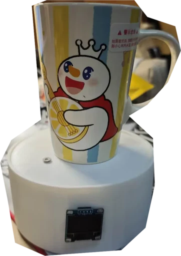
08.HydroSense-ESP32杯子拿起又放回，前后重量差能告诉我们什么？HydroSense 通过称重区分杯子的几种状态，并根据稳定读数记录可能的饮水行为。


本项目完成了基于 ESP32、称重传感器和 HX711 的重量采集系统。实现传感器去皮和砝码校准，使装置能够输出实际重量。对重量数据进行了滤波，减少桌面振动、传感器漂移造成的数值抖动。能够判断水杯的基本状态，包括无杯、杯子放置、杯子拿起和杯子放回。通过比较杯子拿起前和放回后的稳定重量，识别一次可能的饮水行为。使用 OLED 或串口或电脑桌宠软件或手机网页显示当前重量、设备状态和饮水次数，并可与桌宠进行互动，在控制面板查看饮水记录和设定每日饮水目标
项目名称：HydroSense-ESP32：基于压力传感器的桌面饮水行为检测装置
mentor：巩子杰
本项目完成了基于 ESP32、称重传感器和 HX711 的重量采集系统。实现传感器去皮和砝码校准，使装置能够输出实际重量。对重量数据进行了滤波，减少桌面振动、传感器漂移造成的数值抖动。能够判断水杯的基本状态，包括无杯、杯子放置、杯子拿起和杯子放回。通过比较杯子拿起前和放回后的稳定重量，识别一次可能的饮水行为。使用 OLED 或串口显示当前重量、设备状态和饮水次数。
第一版：使用3d打印结构+m4、m5紧固件作为基础结构，有外壳与oled安装窗口，但调试异常，数据不随重量变化且原始输出在几个数值间不连续跳动，经查阅资料、询问AI、mentor和传感器商家后推测可能是代码中HX711库的引用不恰当、3d打印结构件强度过低导致重量数据噪声过大。
第二版：保留3d打印结构、m4、m5紧固件作为基础结构，暂不安装外壳与oled，仅通过串口调试，对嵌入式代码进行了修改与优化，加入去皮按键，尝试完成基础称重功能，但大概率是3d打印结构的影响，即使进行了校准后测量误差仍极大，无法完成最低称重目标，尝试换用亚克力材料。
第三版：亚克力还没到货T_T
亚克力已到货，通过m4，m5紧固件安装好后进行无外壳测试，完成了预定任务。
目前的项目简介：
本项目是一个基于 ESP32、HX711 和称重传感器的智能饮水监测装置。它通过杯子重量变化识别饮水和补水行为，并利用 OLED、网页和 Windows 桌宠展示数据、保存记录和发送提醒。
一、基础称重
- 实时读取称重传感器数据并在 OLED 显示重量。
- 支持使用标准砝码进行校准。
- 支持按键、网页和桌宠远程去皮。
- 校准系数保存在 ESP32 中，断电后不会丢失。
二、饮水行为检测
- 用户先放置空杯并按下 SW1，系统自动去皮。
- 杯子被拿起后，在 15 秒内放回才进行事件判断。
- 放回后重量减少超过 5 g，记录一次饮水事件。
- 饮水量取拿起前后重量差，并始终记录为正值。
- 放回后重量增加超过 5 g，记录一次补水事件。
- 重量变化不超过 5 g 时忽略，降低误判。
- 拿起超过 15 秒才放回时不记录该次事件。
- 支持查看最近的饮水和补水记录。
三、提醒功能
- 饮水监测开始后，超过 10 分钟没有饮水会触发提醒。
- OLED 播放饮水提示动画。
- Windows 桌宠自动弹出并发出系统提示。
- 检测到杯子接近空杯后，等待 30 秒仍未补水则提醒补水。
- 空杯提醒会按一定间隔重复，直到检测到补水。
- 提醒可以通过网页或桌宠关闭。
四、每日目标与记录
- 每日饮水目标可设置为 100–10000 g，默认 2000 g。
- 网页和桌宠使用同一个目标值。
- 显示今日饮水量、完成百分比、饮水次数和补水次数。
- 每条记录包含事件编号、类型、饮水量、日期和时间。
- ESP32 在 NVS 中保存最近 100 条记录。
- 到第二天 0 点自动开启新的今日统计。
- 跨日只清零今日数据，历史记录不会删除。
- 旧版无日期记录可以迁移保留，但日期和时间显示为空。
五、OLED 与按键交互
- 上电后进入功能选择页面。
- SW1：进入电子秤，或在设置阶段确认空杯。
- SW2：进入饮水监测或查看饮水记录。
- SW3、SW4：翻阅记录和返回上级页面。
- OLED 可显示重量、监测状态、事件结果、历史记录和提醒动画。
六、网页控制端
ESP32 会创建独立热点：
Plain Text
Wi-Fi：WaterWatching
网页支持：
- 查看实时重量和杯中水量。
- 查看今日饮水进度。
- 设置每日饮水目标。
- 查看带日期和时间的历史记录。
- 执行远程去皮。
- 显示并关闭饮水、空杯提醒。
- 网页打开后可使用访问设备的本地时间辅助校时。
七、Windows 桌宠
桌宠采用 Python + PySide6 + pyserial 实现：
- 自动识别并连接 ESP32 串口。
- 常驻 Windows 系统托盘。
- 可显示、隐藏、拖动和点击互动。
- 双击桌宠打开饮水数据面板。
- 饮水、补水和异常状态触发不同提示。
- 显示今日进度及最近记录。
- 可设置每日目标、去皮和关闭提醒。
- 支持当前用户开机自动启动。
- 每 30 秒向 ESP32 同步一次电脑本地时间。
- 使用 USB 通信，不受校园网认证和客户端隔离影响。
八、数据与通信架构
Plain Text
称重传感器
↓
HX711
↓
ESP32
├── OLED 显示
├── 按键操作
├── NVS 数据保存
├── Wi-Fi 热点 → 手机/电脑网页
└── USB 串口 → Windows 桌宠
当前嵌入式程序整体采用“配置参数 + 状态机 + 功能模块 + setup/loop 调度”的结构。
1. 硬件配置模块
- HX711：DOUT=GPIO18，SCK=GPIO5
- OLED：SCL=GPIO22，SDA=GPIO23
- SW1：GPIO35
- SW2：GPIO34
- SW3：GPIO39/VN
- SW4：GPIO36/VP
- OLED 地址：0x3C
- 所有按钮按下时为低电平，由外部电阻上拉
这一部分还定义了检测阈值：
- 有效饮水变化：大于 5 g
- 判断杯子被拿起：重量下降至少 30 g
- 判断杯子放回：重量回升至少 30 g
- 放回时间窗口：15 秒
- 连续稳定样本：3 次
- 无饮水提醒：10 分钟
2. 页面与状态机模块
Page 管理当前页面：
- MENU：功能选择
- SCALE：电子秤
- DRINK_SETUP：放置空杯并去皮
- DRINK_MONITOR：饮水监测
- HISTORY：历史记录
DrinkState 管理杯子状态：
- WAITING：杯子放在底座上，等待拿起
- LIFTED：检测到杯子被拿起，等待放回
ReminderAnimation 管理提醒：
- NONE：无提醒
- DRINK：饮水提醒
- EMPTY_CUP：空杯补水提醒
这样可以避免把所有判断都堆在 loop() 中。
3. 数据结构模块
- Button：保存按钮引脚、消抖状态和变化时间
- DrinkRecord：保存事件类型、饮水量、编号、日期和具体时间
- LegacyDrinkRecord：兼容旧版无日期记录
程序最多保存最近 100 条记录。记录满后采用环形缓冲区覆盖最旧数据，避免无限占用存储空间。
4. OLED 显示模块
- prepareDisplay()：清屏并设置基础字体
- drawHeader()：绘制统一标题和分隔线
- drawMenu()：显示功能菜单和网页地址
- drawRawValue()：未校准时显示 HX711 原始值
- drawWeight()：显示电子秤重量
- drawDrinkSetup()：提示放置空杯
- drawDrinkMonitor()：显示水量、饮水次数和检测状态
- drawHistory()：浏览历史事件
- drawReminderAnimation()：播放饮水或空杯动画
显示刷新间隔为 200 ms，不会在每次 loop() 都重绘屏幕。
5. 按键输入模块
它会：
- 轮询四个按钮
- 使用 40 ms 软件消抖
- 只在稳定的按下边沿产生一次事件
- 将按钮结果组合为位掩码
handleButtons() 根据当前页面解释按键。例如 SW1 在菜单中进入电子秤，在电子秤中则执行去皮。
6. 称重与校准模块
核心函数包括：
- tareScale()：读取当前空载值并去皮
- calibrateScale()：根据已知质量计算比例系数
- readScaleValue()：读取并平均 HX711 数据
- clearCalibration()：删除已有校准值
每次读数取 5 个样本平均；绝对值小于 0.5 g 时归零，减少零点附近跳动。校准系数保存在 ESP32 NVS 中，断电后仍可恢复。
7. 饮水检测模块
主要流程为：
Plain Text
稳定杯重
↓ 重量下降至少30g
杯子被拿起
↓ 15秒内重新放回
等待重量稳定
├─ 重量减少超过5g → 饮水事件
├─ 重量增加超过5g → 补水事件
└─ 变化不超过5g → 忽略
程序保存拿起前的基准重量，并在放回稳定后计算差值。饮水量通过绝对值保存，确保记录始终为正数。
8. 提醒模块
它负责：
- 10 分钟没有有效饮水时触发饮水提醒
- 检测到杯中水量低于 5 g 后进入空杯等待
- 30 秒没有补水时触发空杯提醒
- 空杯提醒每 60 秒可以再次出现
- 饮水或补水后清除对应提醒
startAnimation() 除了启动 OLED 动画，还会向桌宠发送 JSON 提醒事件。
9. 时间与跨日模块
主要函数：
- isLeapYear()：判断闰年
- daysInMonth()：取得当月天数
- nextDateKey()：计算下一天
- currentClock()：根据电脑同步时间和 millis() 推算当前时间
- syncLocalClock()：接收电脑发送的本地日期和时间
- updateDateBoundary()：检测是否跨过 0 点
- ensureDailyDate()：新的一天清零今日统计
ESP32 断电后没有独立 RTC，因此桌宠连接时会立即校时，此后每 30 秒重新同步。
10. 数据持久化模块
NVS 中保存：
- 校准系数
- 最近 100 条事件
- 下一个事件编号
- 历史累计饮水量和次数
- 当前每日目标
- 当前统计日期
- 今日饮水量、饮水次数和补水次数
当检测到旧版 20 条记录结构时，会迁移到新结构，旧记录日期留空。
11. USB 串口通信模块
支持的命令包括：
Plain Text
PING
GET_STATUS
GET_RECORDS
TARE
DISMISS
SYNC_TIME 20260913 36000
SET_GOAL 2000
c 500
x
ESP32 每秒主动发送一次 JSON 状态，饮水、补水和提醒发生时也会立即发送事件。桌宠只解析带有：
Plain Text
{"source":"water_watching"}
的消息，普通串口调试文本会被忽略。
12. Wi-Fi 与网页模块
ESP32 当前创建热点：
Plain Text
SSID: WaterWatching
主要接口：
- GET /api/status：实时状态和今日统计
- GET /api/records：带日期的历史记录
- POST /api/tare：远程去皮
- POST /api/dismiss：关闭提醒
- POST /api/goal：设置每日目标
- POST /api/time：通过浏览器同步时间
当前 WIFI_STA_SSID 为空，因此尚未主动登录校园网络。
13. 主程序调度
setup() 依次完成：
Plain Text
串口 → 按键 → OLED → NVS → HX711 → 去皮 → Wi-Fi网页 → 菜单
loop() 持续执行：
Plain Text
处理网页请求
→ 更新网络地址
→ 检查跨日
→ 读取按钮
→ 处理串口命令
→ 发送周期状态
→ 读取重量
→ 运行饮水检测
→ 检查提醒
→ 刷新OLED
因此整个嵌入式代码的核心可以概括为：以页面状态机管理人机交互，以饮水状态机分析重量变化，以 NVS 保存目标和记录，再通过 OLED、网页和 USB 桌宠输出同一套设备状态。
（简化版）
原有3d打印设计：PCB固定座、圆柱外壳（含内部支撑结构、OLED开口......）、中间固定盘、平行梁传感器上下垫块、顶盘
亚克力方案：开放式（无圆柱外壳、PCB固定座），上下支撑盘、亚克力垫块
初版
1、从想法到计划的过程使用了ai辅助，用于快速确定方案
2、搜集开源资料的过程使用了ai辅助，用于提高搜索效率
3、代码构筑的过程使用了ai辅助，用于弥补我薄弱的C语言基础与快速投入使用
4、我是人机
交流
（碎碎念）
我忏悔，这个项目一开始机械设计部分我就不太知道怎么搞，因为结构有点简单，而且搜了一圈没见到除了电子秤以外的类似产品，。。然后机械结构和PCB、传感器、接线等等应该是高度挂钩的，但是回学校还没拿到东西就把模建了打印了初版，只能用上次页牌的PCB，又赶上短学期，分到了任务爆多的班，原本想着趁着短学期有空把他做好，结果到了9月11还没完成，调试真的闹心，不过看了csdn上很多人写的文档，总算是有一点头绪。中间赶上6-Astra发布，又到处研究了些有的没的。感谢我的mentor，希望我能在开会前做好功能，丑就丑点吧。。
9.13：目前项目功能已经基本完善，但是之前想做的手机、手表应用适配还没有研究明白。目前只有网页和电脑客户端两个方向了
 09.Typhoon Capsule 飓风胶囊
09.Typhoon Capsule 飓风胶囊同一颗风机，换上尘杯可以收桌面碎屑，换上气嘴又能充气。飓风胶囊让人通过更换或自行设计附件，探索风的不同用途。
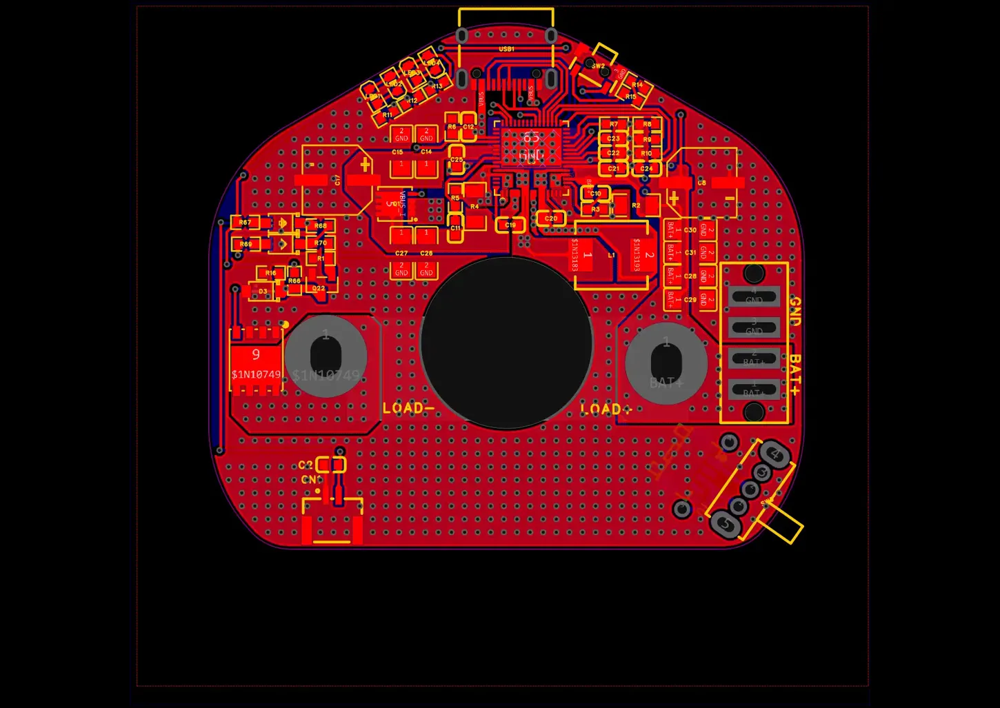

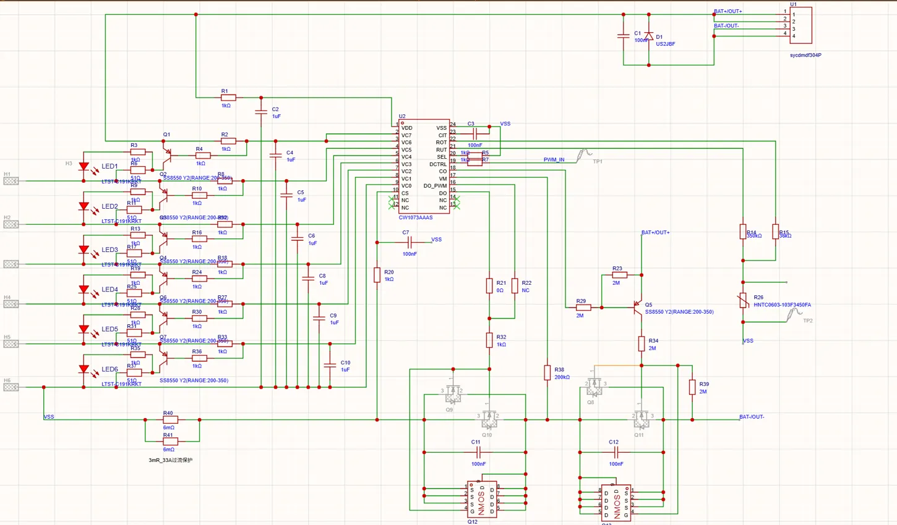
把一阵风装进“胶囊”，能做什么？
Typhoon Capsule 飓风胶囊是一台便携式模块化吹吸工具：接上尘杯与滤芯，它能收集桌面碎屑；换上气嘴，它能低压充气、抽走收纳袋里的空气。
从重新设计保护板、点焊电池包，到修改漏风中框，飓风胶囊在一次次返工中成形。它的另一半，是一个让建模新手也能参与创造的参数化网页。选择模板、调整尺寸、预览形状，再导出模型进行3D打印，就能尝试为自己的需求制作附件。 它也留下一个开放的邀请：下一种用途，由你来定义。
一台气流主机，多种生活用途；一个参数化网页，让不会建模的人也能制作自己的附件。
作者：卢阳
Mentor：苗翔宇
项目形式：便携式模块化吹吸工具 + 360° 展示网页 + 参数化附件网页
轴流风扇vs离心风扇
> 📷
>
>
飓风胶囊是一台以戴森 V8 高速风机为核心的便携式模块化工具。它通过更换附件，完成吹风、带尘杯过滤的吸尘、低压充气（吹气球、桨板、充气泳池）和真空收纳袋抽气；同时，它还能通过 USB-C 为内置电池充电，或为手机、电脑供电。
这个项目最吸引我的地方，是同一套风机和电源可以适应不同场景。桌面有碎屑时，连接尘杯和吸头进行清理；需要充气或抽气时，换上相应转接附件；临时需要补电时，还可以使用 USB-C 输出。普通档与强档提供不同的气流强度，四颗 LED 用于显示电量。
项目的灵感来自“台风小药丸”及相关开源模型。我参考了已有项目的建模结构与空间布置，在制作过程中完成了电池保护板设计，并完成充电板的适配。我参与了原理图绘制、PCB 布局、焊接、调试和装配；结构建模则借助开源项目与 AI 辅助推进。
模块或功能 · 使用方式与成果
吹风与两档控制 · 使用戴森 V8 风机及原装驱动板，支持普通档和强档
吸尘与过滤 · 适配购买的尘杯和滤芯，实现吸入、过滤和收集
低压充气与抽气 · 通过不同附件完成低压充气、真空收纳袋抽气
USB-C 双向供电 · 可给电池组充电，也可给手机或电脑供电；电路按 45W 配置
电量显示 · 通过四颗 LED 显示电量状态
360° 展示网页 · 旋转、缩放查看外观，并了解主要接口的位置与用途
参数化附件网页 · 调整附件参数、预览模型、导出 STL；已完成附件打印并装到实机上。自然语言设计功能也已实现，需配置大模型 API
我希望飓风胶囊的用途能够随着需求增加。风机、电池和供电电路构成主机，不同附件负责适应不同对象。这样，每出现一种新需求，可以先考虑设计一个合适的附件，而不必重新制作整台设备。
这种模块化也要求各部分真正配合：附件需要装得上、连接处需要密封，尘杯与滤芯需要适配，电池和电路板也必须放进有限的外壳空间。制作过程中，我逐渐认识到，“可替换”只是起点，能稳定连接并完成实际用途才是模块化的价值。
> 📷
>
>
我已经从网页导出附件，完成实际打印，并将打印件装到了机器上。这让参数化网页从展示工具走到了实体制作环节。不过，某一个附件能够装配，并不意味着任意参数组合都经过了验证；新的附件仍需要检查实际配合和使用效果。
📷
另一个网站是 360° 外观展示页。它支持自动旋转、拖动查看、滚轮缩放和恢复视角，也能查看进风口、出风口、Type-C 接口和按钮等位置的说明。
它解决的是展示中的一个问题：仅靠一张照片，很难解释主机两端和接口之间的关系。通过交互模型，老师和同学可以自己转动视角，理解设备的外形与布局。这个模型用于外观讲解，不作为制造尺寸或装配依据。
📷
模块 · 最终选择 · 选型与实现考虑
风机与驱动 · 戴森 V8 风机、原装驱动板 · 作为吹吸主机的气流核心，沿用现有驱动完成运行与档位控制
电池组 · 6 节亿纬 21700、单节 4000mAh，串联组成电池包 · 从第一版 5S 方案迭代，增加储能，并重新适配内部空间
电池保护板 · 自行设计的 6S 保护板 · 配合六串电池采样、保护及整机结构布局需求
USB-C 充电板 · 参考开源方案的 IP2369 双向充电板，45W 配置 · 将电池充电和对外供电集中在同一个 USB-C 接口
外壳与中框 · PLA Basic 3D 打印件 · 借助开源模型与 AI 辅助建模，通过实物装配修改尺寸
尘杯与滤芯 · 购买后适配 · 与主机和吸头连接，形成吸尘过滤链路
交互控制 · 实体开关、四颗电量 LED · 完成日常操作与基本电量提示，暂未另加单片机
暑假前期我还参加了电赛，留给这个项目的时间比较紧张。因此，本期沿用风机原装驱动板，将时间主要投入供电、电路制作、结构装配和附件功能。另加单片机进行状态监测与控制，仍是未来的发展方向。
第一版使用了 5 节力神 4000mAh 电芯。实际使用时，我发现强档下的持续时间太短，不能很好地满足展示需求，因此决定重新设计电池部分。
第二版改用 6 节亿纬 21700、4000mAh 电芯，并重新设计六串电池保护板。这个变化涉及电池、电路和结构三个部分：增加一节电池后，需要相应的保护与充电配置，内部空间也要重新安排。
这里有一个我在介绍中需要说明的区别：串联增加电芯数量后，电池包容量仍为 4000mAh，增加的是总电压和总储能。若按相同单节标称电压与容量计算，六串相对于五串的理论储能增加约 20%；但实际续航还受到风机功率、电芯表现和保护条件等因素影响。
*第二版六串电池保护板 PCB。板形、中心避让空间和连接位置需要同时满足电路与整机装配需求。*
*保护板以 CW1073AAAS 为核心，围绕电芯采样、保护控制、功率通路和温度检测等部分展开设计。图中参数表示设计内容，不代表各项保护阈值均已完成实测验收。*
电气规格合适，并不意味着零件一定能装进去。厂家定制的电池包不能很好地适配现有模型，这让我意识到，外壳并不是最后套上去的一层包装，它会直接影响电池的排列和连接方式。
为了适应结构，我使用点焊机连接镍片与锂电池，重新制作了一体式电池包。这一步把原本分开考虑的事情放到了一起：电芯怎么排、连接位置在哪里、保护板怎么放，以及最终能否装入中框。
对我而言，这次返工是一次很直接的学习：硬件制作既要关注电路功能，也要关注真实的形状、位置与装配关系。
> 📷 电池包迭代照片
>
>
第一版中框存在漏风问题。零件虽然能够组合起来，但连接处不够严密，气流会从缝隙泄漏。
我随后修改了中框尺寸，并在零件结合处补充密封处理，其中使用了 502 胶封住部分结合缝隙。这是制作中实际采用的修补方式；如果后续继续优化，我希望把密封更多地融入结构本身，同时保留需要拆卸维护的位置。
这次调试让我体会到，风机的能力只是整机表现的一部分。连接处、风道和附件配合都会影响最终使用效果，机械结构也需要像电路一样反复检查和修改。
为了把电路放进便携式机身，PCB 上有很多间距较近的 0603 贴片元件。画图时它们只是屏幕上的小方块，到了实际焊接环节，操作空间和焊点检查就变得很具体。
焊接是整个过程中比较费力的一部分，也让我开始从“能否布下元件”之外考虑设计：焊接是否方便、器件是否容易辨认、出现问题后是否有空间检查和返修。这些细节会直接影响一个设计最终能不能顺利做出来。
*充电板 PCB：在有限空间中同时安排充电电路、连接端子和整机控制相关器件。*
*参考开源方案完成的 IP2369 充电板：用于 USB-C 与六串电池之间的双向电能转换，和电池保护板分工配合。*
> 📷 焊接过程照片
>
>
本项目主要使用了 ChatGPT 和 Codex，参与范围包括设计检查、故障排查、建模辅助和网页设计。AI 的帮助降低了我理解陌生模块、组织思路以及实现网页交互的门槛。
AI 参与内容 · 在项目中的作用 · 我的工作与判断
电路理解与设计检查 · 辅助解释模块作用、检查原理图和梳理疑点 · 对照原理图、器件连接和实际情况反复核对
故障排查 · 帮助整理可能原因与检查思路 · 结合焊接、装配和调试现象判断哪些解释成立
建模辅助 · 配合开源模型，辅助结构与附件设计 · 通过打印、装配和使用检查实际效果
AI 也出现过误判。在检查 45W 充电板原理图时，它曾分析错几个器件的作用。我多次追问、补充说明，它才逐渐理解到位。这件事让我认识到，回答写得完整、解释听起来顺畅，并不能证明它已经正确读懂了电路。
我学到的是把 AI 当作可以反复讨论的助手：它能帮助提出思路，但结论仍要回到原理图、器件资料和实物上核对；对于硬件表现，还需要实际测试。反复提问能帮助澄清误解，却不能代替验证本身。
项目中的开源模型、电路参考、AI 辅助与本人完成的制作工作各有分工。我希望把这些来源说明白，也把自己从中学到的内容说明白。
这个项目给我最大的收获，是理解了结构和电路必须放在一起考虑。第一版电池的强档持续时间不够，促使我修改供电方案；定制电池与模型不适配，促使我重新安排电芯并制作电池包；中框漏风，则让我继续修改尺寸与密封。每个看起来局部的问题，都可能牵动其他模块。
另一个收获是学会用实物验证 AI。AI 可以帮助我快速接触以前不熟悉的知识，但不能替我判断一块板是否焊好、一个附件是否装得上，也不能替我完成真实测试。把屏幕上的设计做成能拿在手里使用的东西，仍然需要耐心、动手和反复核对。
相比单个功能，我更想继续完善模块化与参数化附件这条路线。它让设备可以适应新的需求，也让不会建模的人有机会参与扩展。我已经体验过从网页调整参数，到打印出附件，再装到机器上的过程；这也是我最希望别人能通过这个项目体验到的部分。
特别感谢苗翔宇 Mentor。在项目推进过程中，他经常和我沟通进展，了解我遇到的阻力。即使人在美国、与国内有很长的时差，他也仍然保持联系。这种持续的关注与交流，让我在遇到问题时有人可以讨论，也帮助我继续推进项目。
也感谢相关开源项目提供结构模型与电路参考，让我能够在已有成果上学习、修改并完成自己的版本。
> 📷 交流记录
>
>
- 完善模块化附件：围绕实际需求增加附件，持续检查接口配合、密封和使用效果。
- 增加单片机状态监测：探索电压、电流、温度等状态显示与辅助控制。
- 补齐对照测试：记录两档续航、充放电功率和温升，为下一轮改进提供更明确的依据。
作者：卢阳｜项目：Typhoon Capsule 飓风胶囊
第一版使用五节力神 4000mAh 电芯，强档持续时间感觉不太能满足展示需要；于是做了第二版，改为六节亿纬 21700、4000mAh 电芯，并重新设计保护板。这个变化提出了三个问题：为什么不能只多接一节电池？充电板和保护板为什么要分开？总电压正常，为什么还要检测每节电芯？
本篇用这些问题串起充电、采样、保护与均衡。
电池容量 Ah 表示电荷量，能量 Wh 还需要考虑电压。粗略估算关系是：
Plain Text
标称能量 E（Wh）≈ 标称电压 V（V）× 容量 C（Ah）
六节相同电芯串联，每节都流过同一电流。因此，每节都是 4Ah 时，串联组仍是 4Ah，不是 24Ah。电压相加，储能也随之增加。若仅为比较而假设单节标称电压均为 3.6V，则五串约 72Wh，六串约 86.4Wh，比例为 1.2。
但这不是续航增加 20% 的证明。六串供电可能改变风机输入功率，实际可用能量还受内阻、截止条件、温度和电芯一致性影响。续航应以同一使用任务、相近初始状态和相同停止条件比较。
常见误区：“4000mAh 就说明两组续航相同。”容量相同但电压不同，储能不一定相同；负载功率不同，运行时间也不相同。
恒流是将充电电流维持在设定范围。充电器调节自己的输出，使电池电压随充电逐渐上升，而电流不超过允许值。不是把任意高电压直接接到电池上。
Plain Text
电池状态检查 → 必要时小电流预充 → 恒流 CC → 恒压 CV → 满足条件后终止
电压升高 电流减小
对于本项目按每节 4.2V 配置的六串系统，目标总电压是 25.2V。这个数来自六节相加，并不是所有锂电池通用的充电电压。
USB 侧电压和电池侧电压可能不同，需要电源转换。假设输入功率 45W、效率 90%、电池端电压 24V，则电池电流约为：
Plain Text
电池端电流 ≈ 输入功率 × 效率 ÷ 电池端电压
≈ 45 × 0.9 ÷ 24
≈ 1.69 A
这是功率守恒的估算，不是本项目实测；45W 也不是风机功率或电池容量。
部分 · 主要问题 · 不能替代什么
充电电路 · 正常充电应供给多少电流、限制到多少电压 · 不能只看总电压就知道哪一节异常
电池保护电路 · 哪节电压异常，是否过流或过温，何时断开通路 · 不能替代正常充电的 CC/CV 控制
均衡电路 · 怎样减少串联电芯之间的电荷差异 · 不能修复损坏电芯或明显容量衰减
可以把充电器理解为负责日常调节，保护板负责检测越界并控制通路。但不能把“每次都充到保护板断电”当成合理的正常充电终点。
设串联组从负端开始的节点为 B0～B6：
Plain Text
B0 ─[电芯1]─ B1 ─[电芯2]─ B2 ─ … ─ B5 ─[电芯6]─ B6
第三节电压是 V(B3)-V(B2)，不是 V(B3)-V(B0)。后者包含前三节的电压。PCB 上的 4.2V、8.4V 等是理想满电情况下的累计节点标注，运行中不恒定。
举例：六节为 4.30、4.10、4.10、4.10、4.10、4.10V，总和为 24.80V，低于 25.2V，但第一节已高于该电芯假设的正常上限。这是必须逐节监测的原因，而不是可执行的充电实验。
采样输入前的电阻、电容可限制干扰进入检测端。它们会引入动态响应，参数不能只凭“滤得越平越好”增大。连接顺序、空置通道处理也必须按芯片应用要求执行。
保护并非只有“高了断、低了开”。完整描述至少包括：检测对象、阈值、持续时间和恢复条件。
例如教学设定为“超过某阈值持续 T 秒后断开”，短暂噪声与持续异常就会得到不同处理。恢复阈值可以与触发阈值不同，这种差值称为迟滞，作用是避免在边界附近反复开关。具体数值要按电芯、负载及芯片版本确定。
过流检测常将分流电阻上的压降换算为电流：
Plain Text
采样电压 = 电流 × 采样电阻
保护触发电流 ≈ 检测电压阈值 ÷ 采样电阻
我的原理图 R40、R41 各为 6mΩ，并联得到 3mΩ。若假设检测阈值为 100mV，则计算值约 33.3A。这解释了图中“33A”标注的可能依据，但不证明所购后缀实际采用 100mV，更不代表 PCB 可以长期通过 33A。
同样电阻在 20A 下产生 60mV 压降和 1.2W 总损耗。检测电阻自身也需要额定功率、焊盘和散热条件。
被动均衡通过受控耗能支路，让某些电芯流过额外的旁路电流，消耗部分能量。它没有把这部分能量搬给低电量电芯。主动均衡才涉及电感、电容等方式的能量转移。
理想化单节旁路中，若 4.2V 加在 100Ω 上：
Plain Text
旁路电流 I = 4.2 ÷ 100 = 0.042 A = 42 mA
电阻功耗 P = 4.2² ÷ 100 = 0.1764 W
NTC 的电阻随温度升高通常下降。芯片将阻值变化解释为温度信息，但前提是型号曲线匹配、连接正确、传感器与被测对象有合理热接触。
保护板图上有 NTC；充电板图上 NTC 输入却标注使用固定 10kΩ 电阻。固定电阻不能反映电池真实温度。也不能因为另一块板有 NTC，就自动认为电芯、功率器件和外壳都被准确测到了。应记录传感器实际安装位置和响应，而不是只在框图上写“温度保护”。
1. 用自己的话说明：充电板与保护板为什么不能相互替代？
2. 若 B2=8.05V、B3=12.12V，第三节电压是多少？
3. 两个 6mΩ 并联，在 15A 下计算压降及总损耗。
4. 以 4.2V、150Ω 理想旁路估算均衡电流、功耗，以及消除 84mAh 差异的连续工作时间。
5. 图上有“33A 过流保护”，列出至少三个仍需确认的条件。
6. 给自己的保护板建立一张“已知／待查”表，至少包括芯片后缀阈值、采样电阻、均衡电流和 NTC 位置。只读资料，不进行过充或短路实验。
1. 正常充电调节与异常通路切断不同；总压管理也不能替代单体检测。
2. 12.12-8.05=4.07V。
3. 3mΩ；45mV；0.675W。
4. 28mA；0.1176W；3 小时。实际启停和分时会改变时间。
5. 后缀检测阈值与误差、延迟、分流电阻实际阻值、寄生压降、MOSFET 和 PCB 的温升能力等；任列三项并解释即可。
6. 数值必须带来源；找不到就写待查，不能用芯片系列范围冒充具体器件配置。
- 能区分 Ah、Wh、充电功率与负载功率。
- 能解释 CC、CV、终止的先后关系。
- 能用相邻节点差计算单体电压。
- 能把保护条件说完整，而不只背一个电流数字。
- 能解释均衡的能力边界，以及芯片支持不等于实板验证。
- 上文 CW1073 手册重点读均衡与串数配置；搜索引擎标题可能误标 CW2017，应以 PDF 正文型号为准。
作者：卢阳｜项目：Typhoon Capsule 飓风胶囊
风机主回路可能流过较大电流，普通小按钮不一定适合直接承载。保护芯片也不能自己让全部负载电流穿过内部逻辑电路，需要功率器件执行通断。
MOSFET 正是需要掌握的器件。本篇围绕“怎样打开、为什么发热、为什么关了还可能导电、为什么两颗反向连接”四个问题展开。
以增强型 N 沟道功率 MOSFET 为例：G 是栅极，D 是漏极，S 是源极。栅极控制沟道状态，但控制量不是“栅极相对随便一个地的电压”，而是：
Plain Text
VGS = VG − VS
栅源电压 = 栅极电位 − 源极电位（电位须相对同一参考点）
若 G 对电池负端为 10V，S 对电池负端也为 10V，则 VGS=0V，不能说它被 10V 打开了。若 G=12V、S=2V，则 VGS=10V。
这在保护板断开、输出负端浮动时尤其重要。图上写 VSS、BAT-、OUT- 的地方，不应仅凭名字都视为同一节点。应沿导线确认 MOSFET、采样电阻把哪些节点分开。
P 沟道器件的控制极性不同，不能套用 N 沟道的正栅压开通结论。读图的第一步应是查清器件类型与引脚。
假设某器件阈值为 2V，却只在 VGS=10V 时保证某个低导通电阻。用 3.3V 控制它，不能仅凭“3.3 大于 2”就认定可用。它可能已有电流，但压降和损耗仍很大。
可以把“开始通”和“适合当低损耗开关”分开记。以后加入单片机时，也不能默认 GPIO 可以直接驱动现有全部功率管；还要核对驱动电压、栅极电荷和切换速度。
开关充分导通时，可用导通电阻近似计算：
Plain Text
VDS ≈ I × RDS(on)
导通压降 ≈ 电流 × 导通电阻
导通损耗 ≈ I² × RDS(on)
≈ 电流的平方 × 导通电阻
假设 20A 流过 5mΩ，压降为 0.1V，损耗为 2W。电流增加到 30A，同样电阻下损耗变为 4.5W。电流只增加一半，损耗却超过两倍。
两瓦损耗不意味着温度只升高两度。温升还取决于封装、焊接、铜面积、环境及气流。
数据手册中的额定电流通常依赖特定散热条件。器件标题写很大的电流，不代表焊到任何小板上都能达到它。本项目的便携外壳限制了散热空间，因此导通损耗必须与板子、线材、连接器一起考虑。
常见分立 N 沟道功率 MOSFET 的体二极管从源极指向漏极，即阳极在 S、阴极在 D。关断沟道后，若外部电压使该二极管正向偏置，电流仍可能通过。
Plain Text
单管关断：沟道关闭，但体二极管还在
双向隔离：必须分别检查两个电流方向是否都被阻断
充分开通时，沟道可允许双向电流流动；不要因此又误认为关断也能双向阻断。需要区分“沟道导通方向”与“体二极管方向”。
在电池系统中，充电和放电方向相反。只放一颗 MOSFET 时，可能能切断一个方向，却允许反方向经过体二极管。判断电路时应分别画出充电、放电路径。
状态 · 能得出的结论
两管都关断 · 在额定条件内可阻断两个方向；仍有漏电，并非机械空气间隙
两管都开通 · 电流通过两段导通电阻，损耗需要相加
一开一关 · 必须沿具体体二极管方向判断，不能一概说完全断开
若每颗都是 5mΩ，串联后为 10mΩ；20A 下总导通损耗为 4W。保护能力增加，也带来电阻和热量，这就是器件选型与散热必须一起考虑的原因。
栅极稳态电流很小，但切换时要充放电，不能理解为完全不需要驱动能力。用简化关系 t≈Qg/I 估算，30nC 栅极电荷、10mA 平均驱动电流，对应约 3μs；这里只帮助认识数量级，不替代真实驱动波形和米勒平台分析。
切换太慢时，器件可能在较大电流与较大 VDS 同时存在的区间停留更久；太快又可能增加振铃和干扰。因此驱动电阻并非越小越好。
栅源下拉为控制端未驱动时提供确定的关断状态，并释放残留电荷。串联栅极电阻用于影响充放电速度和振铃。数值要结合驱动器、栅电荷与布局决定，不能照着另一块板随意替换。
稳压管常用于限制栅源电压，但必须看实际两端连接。
电池包电压 25.2V 不意味着允许把 25.2V 直接加到栅源之间。VDS 与 VGS 是不同的额定值。
按下面顺序读图：
1. 找到元件位号和完整型号。Q 是位号前缀，不保证它一定是 MOSFET。
2. 核对符号和型号：本图 SS8550 是 PNP 三极管，不能套用 G、D、S。
3. 确认功率管的 S、D、G，沿线找到控制端和主电流端。
4. 单独画出体二极管方向，再分别判断充放电路径。
5. 检查辅助驱动管、电阻与稳压管，计算相对于源极的控制量。
6. 将“原理图画了什么”与“实板焊了什么”分开记录。
纸面检查可先完成器件类型、额定值和电流路径核对。实际测试时，关注 VGS、导通压降、温升及切换波形，而不是只看风机是否转动。
普通台式示波器探头地夹通常与保护地相连，不能随意夹到浮动功率节点；应由具备条件的人选择合适的差分或隔离测量方案。电池也不能用万用表电流档直接跨接两端测“能输出多大电流”。这些都不是本篇作业要求。
1. G 对参考点为 11V，S 对同一参考点为 8V，VGS 是多少？能否仅据此判定充分导通？
2. 一颗管在当前条件下为 4mΩ，通过 25A，求压降和损耗；两颗串联呢？
3. 为什么“栅极拉低”有时不能完全阻止电流？请画出单管体二极管。
4. 某管只提供 10V 下的 RDS(on) 保证值，VGS(th)=2V。能否直接认定 3.3V GPIO 驱动可用？
1. 3V；还需数据手册在此驱动下的导通能力等信息。
2. 单颗 0.1V、2.5W；两颗串联 0.2V、5W，假设温度和电阻不变。
3. 沟道关闭但体二极管仍存在；N 沟道常见分立管标 S 为阳极、D 为阴极，并解释偏置方向。
4. 不能。阈值是小电流条件，不能替代低导通电阻保证；还要评估驱动动态能力。
5. 看不清或缺型号就标待查。若选择 SS8550，必须纠正它属于三极管，不能给它编造 S/D/G。
- 判断开通先算 VGS，不只看栅极对地电压。
- 阈值、导通电阻、耐压与额定电流不是一回事。
- 会计算导通损耗，知道两管串联损耗相加。
- 能说明体二极管与背靠背连接的作用。
- 能分清位号、网络名称、型号和实装状态。
- 上文 Nexperia AN11158：重点读阈值、导通电阻、热参数和安全工作区；不要把不同测试条件的数据混在一起。
- 上文 Nexperia 应用手册：按 reverse battery protection、body diode、gate drive 等关键词阅读，先理解原理，再回到自己器件的手册。
作者：卢阳｜项目：Typhoon Capsule 飓风胶囊
飓风胶囊把电池、电路板和风机装进有限空间。制作时，既遇到了定制电池不能适配模型的问题，也遇到了密集贴片焊接的困难。这些问题说明，电路图里的“同一个节点”，到了实物上会变成铜皮、焊点、镍片、导线和连接器；每段都有电阻，也需要空间。
本篇将 PCB 与电池包连接放在一起学习：它们都在解决如何把较大的电流可靠送到负载，同时控制压降、发热与机械应力。点焊部分讲原理和质量判断，不提供脱离设备、电芯端盖及连接片规格的通用参数。
导体电阻的简化关系为：
Plain Text
R = ρ × L ÷ A
电阻 = 电阻率 × 长度 ÷ 横截面积
压降 = I × R
损耗 = I² × R
其中 ρ 为电阻率，L 为长度，A 为横截面积。导体越长，电阻通常越大；截面积增加，电阻通常减小。铜皮截面积是“宽度×厚度”，不能只看屏幕上画得宽不宽。
假设整条连接路径有 10mΩ，在 20A 下压降 0.2V，发热 4W。若一个不良接头额外增加 5mΩ，又会集中产生 2W 热量。这解释了为什么有时整体线材看起来够粗，某个焊点却很热。
电池到负载的路径至少应检查：电芯连接片、焊接点、端子、导线、PCB 收窄位置、采样电阻、MOSFET 以及回程。只优化正端而忽略负端，回路仍然存在瓶颈。
大片铜皮若在端子附近收窄，主电流仍要穿过那一小段。看 PCB 时应沿电流方向逐段找最窄处，而不是数红色面积有多少。过孔、焊盘颈部和器件引脚处也可能限制通流。
开孔会迫使电流绕行。本项目中间有较大避让空间，布局时需要同时考虑两侧通路、器件摆放及结构强度。
过孔可将电流或热量引到另一层，但它不是无阻抗的柱子。孔径、孔壁铜厚、数量、位置和上下层铜形状都会影响效果。多个过孔分担电流，也需要合理分布，不能把所有过孔都挤在远离实际换层位置的地方。
大铜面散热好，但手工焊接时也会带走热量。热焊盘的细连接可以改善可焊性，却也改变通流与散热路径。大电流端子是否使用这种连接，要根据通流、工艺与温升一起判断，不是一律取消或一律保留。
采样电阻常只有毫欧级，电压只有几十毫伏。若测量线从远处取点，就可能把铜皮压降也算进去。
例如真实分流电阻 3mΩ，20A 时压降 60mV；测量路径若混入 1mΩ 铜阻，读到 80mV。仍按 3mΩ 换算，就得到 26.7A，明显偏高。
Plain Text
主电流 ─────[ 采样电阻 ]───── 主电流
│ │
└─测量─┘ 从电阻两端独立取样
在本板中，R40/R41 并联后还涉及两个电阻的连接对称性。不能只把两条细线接到任意一个“大铜面”就认为完成了 Kelvin 取样；应对照芯片参考布局、实际焊盘与电流方向检查。
电流变化快的路径会受到寄生电感影响。用关系 V=L·di/dt 认识其数量级：若寄生电感 10nH、电流在 100ns 内变化 10A，对应约 1V 的感应电压。实际波形还取决于完整寄生网络，这个计算只是说明短导线也可能重要。
因此，要从开关器件、输入/输出电容和功率节点构成的闭合回路分析布局。不能把“电感靠近芯片”当成全部要求，也不能把开关节点铜皮无限放大。高 dv/dt 区域过大可能增加耦合。
从正端到负载只是半个回路，还需要返回电源。若地平面被槽或断裂隔开，回流可能绕远，增加回路面积。敏感采样线经过噪声回路附近，即使电气连接正确，也可能得到不稳定信号。
“所有地最终相连”不代表它们在快速变化时完全等电位。布局要考虑电流实际走哪条路，而不是只检查网络名相同。
常用简化估算为 ΔT≈P·Rθ，但热阻必须对应相近的安装与散热条件。不同铜面积、封装焊接、外壳和气流下，不能照搬同一个温升值。
本机有风机，不代表每个器件都会被有效冷却。PCB 若位于气流绕过的位置，风量再大也不能直接证明其温度合格。散热过孔还需要连接到有作用的铜面，芯片底部焊盘也需要形成合理热通路。
电气图要求前一节正端连接后一节负端；机械排列则要考虑圆柱电芯怎么放、正负极朝向、镍片跨接位置以及线束出口。
本项目厂家定制的电池包不能很好适配模型，因此重新排列并用点焊方式制作一体式电池包。这个经验可转换成设计方法：先用不带电的尺寸模型确认布局，编号电芯和节点，再绘制连接关系，最后由具备条件的人实施装配。不要到焊接时才临时决定哪条镍片跨到哪里。
六串单并结构每一串都承受整机电流，不会因为有六节电池，就让每节只承担六分之一。电芯、连接片和端子都要按实际主回路条件选型。
同时要区分主电流线与电压采样线。细采样线用于读取节点信息，不承担风机主电流；它的绝缘和防磨损仍然重要，因为连接的是不同电池节点。
电阻点焊通过电极施压和短时大电流，使连接界面局部发热并形成焊接。可用 Q≈I²Rt 理解热量与电流、时间、电阻的关系，但焊接中接触电阻会变化，实际控制还依赖压力、材料、表面状态和电极形状。
外观只是一个角度：焊痕并不直接等于低电阻和足够强度。工艺验证还要考虑试样的机械强度、接头电阻、重复性和是否造成端盖损伤。机械破坏性检查应在规定试样上完成，不要求对成品电芯做剥离实验。
正极端附近、连接片边缘、采样线跨越处和 PCB 背面，应按实际结构安排绝缘与防磨损措施。打印外壳不能自动替代电池专用绝缘，502 等胶也不能被当作未经验证的主要电气绝缘方案。
机械固定应避免振动把力传到焊点。线束出口需要留合理余量和应力释放；螺丝、毛刺、尖角不能压向电芯或绝缘层。装配空间还要包含绝缘厚度、焊点高度和线材弯曲，而不只是裸电芯的直径。
如果为了便携把元件挤得过紧，焊接和返修会困难。本项目 0603 元件密集的经历说明，在 PCB 上留操作空间有直接价值。
1. 20A 流过新增 5mΩ 接触电阻，压降和发热各是多少？为什么这比同样热量均匀分散更值得关注？
2. 真实 3mΩ 采样电阻串入 0.5mΩ 寄生测量路径，实际电流 18A。按 3mΩ 换算会得到多少？
4. 为六串电池画不带尺寸的节点图和机械草图，说明两张图为什么不能相互替代。
5. 为什么“焊点有痕迹”“镍片更厚”“过孔更多”都不能单独作为可靠性的证明？
6. 写一份本项目装配前尺寸检查表，不少于六项。此题只做纸面检查，不要求重新点焊电池。
7.
1. 0.1V、2W；热量集中在小区域，可能造成局部高温，且接触状态可能进一步变化。
2. 测到 18×0.0035=0.063V，换算 21A，比真实值高约 16.7%。
3. 主回路必须包含返回路径；截图不能确认铜厚、孔壁、底层完整连接及实装状态。
4. 节点图保证电气串联正确；机械草图检查朝向、跨接、绝缘、出口和空间。
5. 分别缺少强度/电阻证据、工艺适配证据、位置与制造参数证据。
6. 可包括电芯实际尺寸、绝缘厚度、连接片和焊点高度、保护板高度、线束弯曲空间、端子位置、紧固件侵入、装配顺序和检修空间。
- 能用压降和损耗理解毫欧级电阻的影响。
- 看 PCB 会沿完整回路找瓶颈，而不只看铜皮面积。
- 能解释 Kelvin 采样和回流路径。
- 知道点焊参数依赖材料、端盖与设备，不能凭经验数值通用。
- 能把电池连接、绝缘、固定和空间一起纳入设计。
- 上文 TI 两份布局资料：先读电流采样与功率回路，不必一次掌握全部开关电源设计。
- 上文 AMADA 资料：重点理解材料与焊接质量的关系，不直接移植工业设备参数。
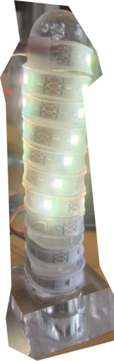
10.心流塔心流塔是一款结合时间可视化与桌面氛围的轻量级互动装置。针对长时间学习或创作时容易忘记时间、忽略休息的痛点，本装置采用Arduino为主控，通过WS2812灯带、OLED屏幕与物理按键，将抽象的时间流逝转化为直观的灯光反馈。它既是一个能帮你感知时间进度的辅助工具，也是一款能安静陪伴的桌面摆件。

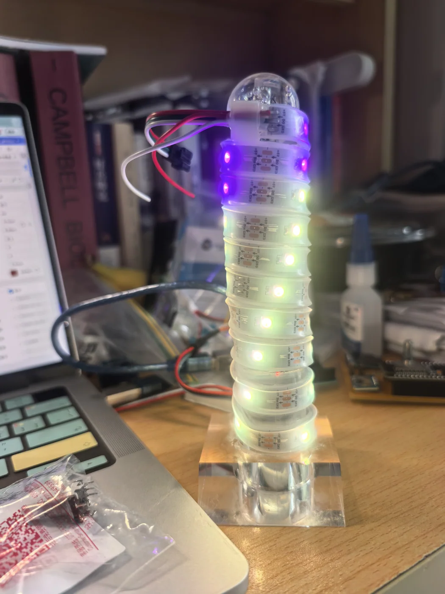

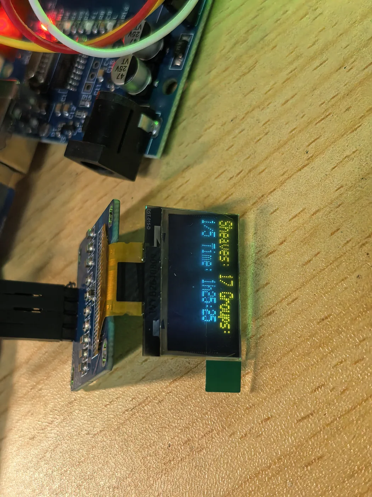
1. 正计时（记录模式）： 短按按键启动，灯带颜色沿色环平滑渐变，每完成一个预设周期，灯柱向上攀爬一格，OLED屏幕直观记录沉浸时长，轮数等。
2. 倒计时（限时模式）： （需通过代码重新烧录切换）启动后，灯带随剩余时间逐灯熄灭，OLED同步显示剩余时间。
3. 基础控制： 短按按键可随时暂停/继续，长按3秒重置归零。
简单点来说交互就是按钮和电脑烧录而已。
（把硬件寄回家了目前还不在手边）
1. 正计时（记录模式）： 短按按键启动，灯带颜色沿色环平滑渐变，每完成一个预设周期，灯柱向上攀爬一格，OLED屏幕直观记录沉浸时长，轮数等。
2. 倒计时（限时模式）： （需通过代码重新烧录切换）启动后，灯带随剩余时间逐灯熄灭，OLED同步显示剩余时间。
3. 基础控制： 短按按键可随时暂停/继续，长按3秒重置归零。
简单点来说交互就是按钮和电脑烧录而已。
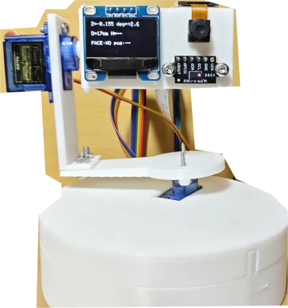
11.桌面坐姿检测器这是一款能够检测并追踪面部位置的桌面坐姿检测装置。当使用者坐在装置前，摄像头会寻找面部位置，云台随之转动，帮助观察和判断当前坐姿。
装置由底座、云台和摄像头三部分构成，摄像头跟随云台调整方向，即使面部偏离正前方，也能尝试继续追踪。云台上固定了一块 OLED 屏幕，使用者可以通过按键切换显示内容，查看面部坐标或摄像头捕捉到的画面。
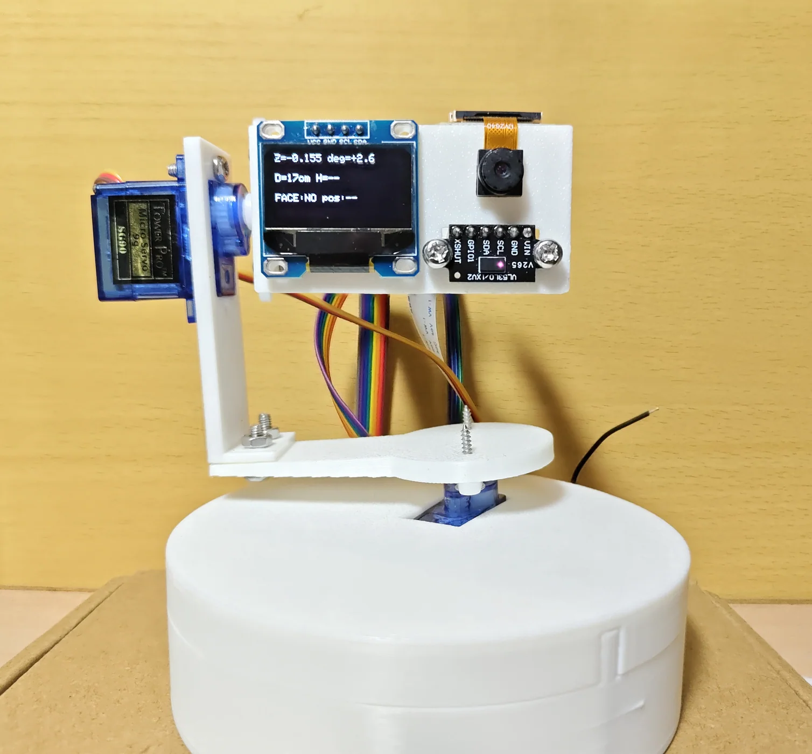

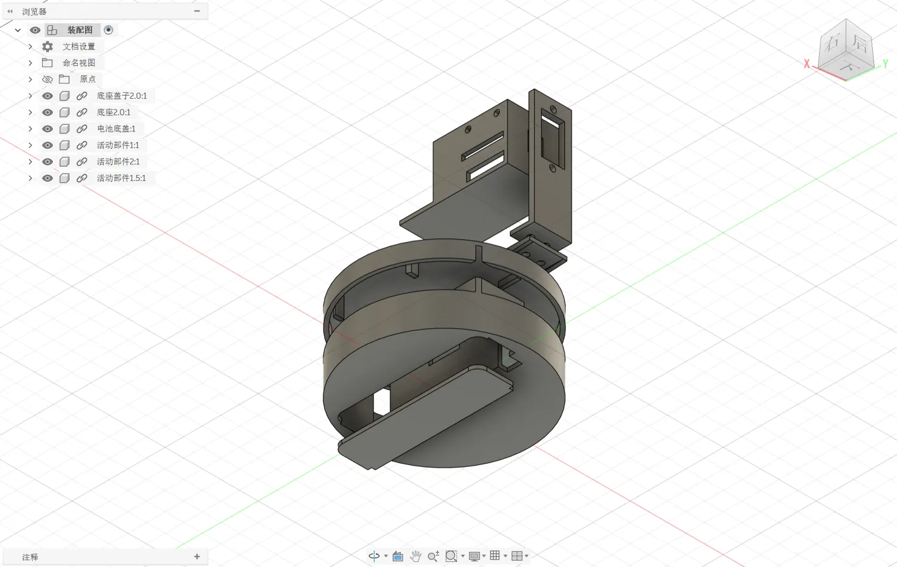
除了屏幕上的信息，装置还通过外置 LED 灯和蜂鸣器提供坐姿反馈，让提醒出现在日常学习与工作的桌面环境中。项目展示了传感器、支架结构与电路之间的配合方式。
项目名称：桌面姿态提醒器
mentor：徐莘宁
一款放置在桌面的装置，包含一个放置电池的底座和一个二轴云台，可以实时检测面部与桌面的距离来判断坐姿是否端正，并通过OLED屏幕显示当前坐姿是否健康，并给出提醒。
OLED屏幕会一直显示如下信息：摄像头朝向，是否检测到人脸，脸部距离桌面高度。
---
9.12
新增了通过按键切换 OLED 屏幕显示内容的功能，按下按键并松开，会显示摄像头实时捕捉的画面，再按下按键切换回原来的显示模式。
---
装置的整体机械结构如下图所示。
在装置底部预留了可以放置锂电池的位置。而控制云台的两台电机将分别安装在底座的中部和摄像头的侧边。摄像头、OLED屏幕、加速度传感器、激光测距元件均放置在云台顶部的长方形小舱。
电路图在7月16日完成绘制，但是由于疏忽，直到9月8日调试时才发现按键未添加上拉电阻。上图为添加上拉电阻后的电路原理图。在实际的焊接过程中， LED 灯、电池暂未焊接。
项目使用 ESP32-S3-CAM 单片机，包含40个针脚，且自带24p的FPC接口，可连接摄像头。单片机通过 I2C 连接了 OLED 屏幕、激光测距装置、加速度传感器和舵机。单片机会通过摄像头采集到的图像，检测人脸当前位置，根据人脸在画面中的位置，控制舵机旋转，将人脸调整至画面中央后，启动激光测距装置测量，获取人脸到装置距离后，再将其换算成人脸到桌面的距离，从而判断坐姿是否健康。
为了避免舵机因为单片机运行人脸检测模型时大量耗电而发生异常抖动，舵机的正负极接入了 470μF 的电容，用于缓冲。
按键、LED 灯和蜂鸣器直接连接在单片机附近。按键设置两个，负责摄像头开关和切换 OLED 显示模式。但是由于按键未添加上拉电阻，对应功能未实现。LED 设置三个，分别负责提醒当前装置是否正常运行、人脸检测是否成功、坐姿是否健康。蜂鸣器会在检测到坐姿不健康时响起。
代码全部由 AI 生成，我只理解了其中一小部分的含义。代码功能的解释是由 AI 提供的。
- <Arduino.h>：提供setup()、loop()等基础函数
- <wire.h>：实现 I2C 通讯
- <Adafruit_GFX.h>：提供绘图的函数
- <Adafruit_SSD1306.h>：驱动 SSD1306 OLED 屏幕，和上一个库结合使用，实现在 OLED 屏幕上显示图像。
- <Adafruit_VL53L0X.h>：驱动 VL53L0X
- <Servo.h>：驱动舵机，通过 PWM 信号驱动标准舵机。驱动连续旋转舵机时需要对信号值进行换算
- <eloquent_esp32cam.h>：提供 ESP32摄像头和人脸检测的封装函数，实现获取图片和运行模型的功能。
- <eloquent_esp32cam/face/detection.h>：提供一个两级的人脸检测神经网络
- waitMs(uint32_t ms)：使用millis()实现等待ms毫秒，从而避开使用delay()
- pollSpeedTune()：允许直接通过串口更改舵机转速值，便于调试。
- calibrateLevelBaseline()：收集20次 MPU6050 采集到的数据，并据此返回基准值。该值会作为水平基准。因此，装置在启动时必须保证云台水平放置。
- renderPreviewToOled()：将输入人脸检测模型的图片压缩为 OLED 屏幕的128x64的尺寸，这是为了便于在 OLED 屏幕上呈现出输入到人脸检测模型内的画面，在当前代码中未调用，未来会在实现按键功能当中使用到。
- mpu_init_bare()：唤醒 MPU6050 ，并返回一个bool值判断是否唤醒。没有使用 Adafruit 库，是为了避免与其他库发生冲突（AI 的解释）。
- mpu_read_accel(float *ax, float*ay,float *az)：读取 MPU6050 采集到的三轴加速度，并换算为比力。
- setup()阶段
等待2秒，待电源与串口稳定后，建立 I2C 连接，确认所有元件应答并初始化，同时使用calibrateLevelBaseline()完成水平校准。之所以要校准，是因为 MPU6050 的固定不牢，每次重新上电后位置会发生一定移动。
- loop()阶段
按照 启动测距 -> 启动人脸检测 -> 控制舵机旋转 -> 读取 MPU6050 数据 -> 计算高度 -> OLED屏幕刷新 的次序循环工作。
该项目 3D 模型的制作和电路板绘制是同时进行的，电路板先绘制完成，随后完成模型的建模。
第一次 3D 打印时，因为我估错了各元件的尺寸大小，且未考虑到杜邦线的安置，装置没有一个地方可以正常安装，因此我调整了模型的尺寸后重新打印，并得到了一个可拼装的版本。之后我就没再对 3D 建模作任何改动。后续等待电路板到货并焊接完成。之后我让 AI 生成了嵌入式代码，但未开始调试。
随后我下单 FPC 软排线、螺丝等元件，并等待到货后完成整个装置的拼装，此时我发现装置未预留摄像头的放置位置，因此我选择用双面胶固定摄像头位置。
嵌入式代码我全部交给 AI 生成，使用了 Vscode 的 PlatformIO 向单片机拷入程序并调试。一开始为了使用 ESP32 官方的人脸检测模型，使用了 ESP-IDF 框架。调试发现两个主要问题：舵机无法正常旋转，且单片机始终检测不到人脸。我把问题以及串口的反馈提交给 AI 继续修改，多次修改后，第二个问题改善，但第一个问题始终无法解决。
我认为舵机无法正常旋转是因为供电不足，我购买的舵机支持4.8-6V的工作电压。但多次测量后发现舵机的电源线和地线间始终是5V左右，供电正常。AI 认为是因为舵机的供电线偶尔会因为单片机运行人脸检测模型耗电而被干扰，需要对舵机独立供电，因此我重新绘制了一块电路板，将电源线分为了主电源线和舵机电源线并使用两个 Type-C 口供电，每个供电口串联一个锂电池升压模块为后续的锂电池供电作准备。但是焊接完成后发现舵机电源线的升压模块似乎有问题，我也没有多的升压模块，改用旧电路板进行调试。
为了解决舵机问题，我尝试阅读对应的代码，发现 AI 将舵机理解为了180°舵机，PWM信号与旋转角度对应。实际上我购买的舵机是连续旋转舵机，PWM信号与转速和旋转方向有关，因此我让 AI 进行修改，修改后发现舵机可以正常旋转。
第二个问题，即始终检测不到人脸，我直觉上认为是代码问题。我让 AI 不断修改，但总是无法稳定检测人脸，并且在这个过程中，我意外发现激光测距元件无法正常读取数值，且多次修改代码后无法解决该问题。
我不知道接下去该干什么，AI 生成的代码我基本看不明白。所以我让 AI 先换框架，将原代码全部改为 Arduino 框架下的代码。最新的人脸检测模型不支持 Arduino 框架，改用一个叫 Eloquent 的模型。
修改框架后，激光测距元件意外可以正常使用，但是依然无法正常检测人脸。这时我重新烧录 IDF 框架下的代码，仍然无法检测人脸，激光测距元件无法使用；我再烧录 Arduino 框架下的代码，发现激光测距元件又无法使用了。
至此，我认为电路本身可能存在一定问题，也许是某条线路接触不良等，导致相同代码的运行结果不一样。于是，我重新焊接了原电路板，但问题依然没有得到改善。
转机发生在一次我偶然拿下眼镜（我有近视），发现舵机会发生转动。我突然有了一个猜测：会不会是因为我带着眼镜，导致摄像头捕捉到的人脸很不清楚。于是我让 AI 编写了一段实时提取输入人脸检测模型的画面的代码，并将画面呈现在 OLED 屏幕上。
由此我发现两件事情：第一是环境亮度太低会让摄像头一片漆黑；第二是摄像头捕捉到的画面大小非常有限，因此当舵机转动的时候，下一次人脸检测还未启动，舵机就已经转过头了。
至此，问题就变得不太可以立刻解决了。
首先是环境亮度的问题。我计划为装置增加一个柔和的发光条带，这样应该可以一定程度上提高亮度。
而舵机转过头的问题，因为连续旋转舵机有死区，转动速度有一个最小值，在最小值下，舵机仍然会转动过头，而解决方案我想到两个：一是购买焦距更小的摄像头，但是这样可能导致远处的人脸检测很困难；二是换用其他电机，比如旋转角度舵机或者步进电机，这样可以解决转过头的问题。但是这些方案都需要购置新零件，一时半会儿完成不了。
这时 AI 提出了一种看法：它说可以在代码上实现让舵机“一顿一顿”地旋转，从而变相降低舵机的平均旋转速度。我让它按照它的想法编写程序，发现可以运行，效果聊胜无。
随后，我让 AI 设计完成推算人脸到桌面距离的代码。整个项目的开发与调试到此结束。
除了上一个小节提到的舵机旋转过头的问题外，该装置还存在以下问题：一是由于装置重量不均以及被杜邦线拉扯的原因，舵机的旋转结构存在弯折，导致摄像头倾斜。二是由于云台上未设计摄像头的放置位置，目前摄像头十分容易脱落。三是电池和 LED 灯均未完成焊接。四是按键因为新板子还没到货，仍然处于有问题的状态。五是电路板、杜邦线等完全裸露在外。
---
9.12
为按键添加了上拉电阻的电路板到货了。测量电压后，发现按键的3.3V网络和电路板的3.3V网络竟然是断开的，原因是在设计电路原理图的时候，前者命名为了“+3.3V”，后者命名为了“3.3V”，其中“+3.3V”网络还连接了 OLED 屏幕，因此按键功能依然无法正常使用，该网络上电压测量值约为1.6V。但是 OLED 屏幕可以运行。
由于在设计原理图的过程当中，我回滚过版本，导致原本连接在某引脚上的 LED 移动到了另一个与 PSRAM 冲突的引脚，导致 LED 灯无法正常点亮。之前发生过单片机无故重启的情况，很有可能就是 LED 导致的。
电路原理图已经更改完成。我目前的计划是，先为旧电路板的“+3.3V”和“3.3V”飞线。LED 灯暂时去除，只保留接线正确的 LED 灯，等以后下单新的电路板。
---
9.13
舵机到货了。还未替换，已经完成了旧电路板的飞线。
---
AI 在电路和嵌入式代码上为我提供了大量帮助。
旧电路板的设计过程中，AI 帮我完成了如下任务：
- 帮我挑选元件型号。单片机 ESP32-S3-CAM 、锂电池升压模块 IP5306-CK、加速度传感器 MPU6050 和摄像头 ov2640 都是由 AI 帮我确认型号。
- 帮我挑选被动元件。激光测距元件的 10kΩ 上拉电阻、舵机的 470μF 滤波电容和二极管 SS12 由 AI 提醒我添加。
- 校验电路原理图。在调试嵌入式代码期间，我让 AI 帮我确认电路原理图是否存在问题，AI 检查后认为原理图不存在问题。
新电路板的设计过程中，AI 的工作与之类似，但最终我没有采用新电路板。
- 完成全部的代码设计和修改。我只完成了编译和烧录。最终采用的是 Arduino 框架下的代码。
- 负责了部分的调试。有些时候我会让 AI 直接监听串口，并根据串口的输出来改进代码。
- 写了一份详细的介绍该项目代码的文件，供我阅读学习。
 12.机械臂
12.机械臂这是一只可以通过遥控完成抓取动作的四自由度机械臂，操作方式类似一台小型抓娃娃机。使用者通过摇杆和按键调整各关节的位置，配合末端夹持结构，尝试完成对小物件的抓取与移动。
作者使用 SolidWorks 设计机械结构，以 ESP32 接收控制信号，通过 PCA9685 驱动舵机。项目围绕关节配合、舵机角度标定和结构干涉展开设计与调试，并在程序中加入角度限幅、逐路上电与归位控制，将机械建模、电路连线和嵌入式控制结合在同一次动手实践中。

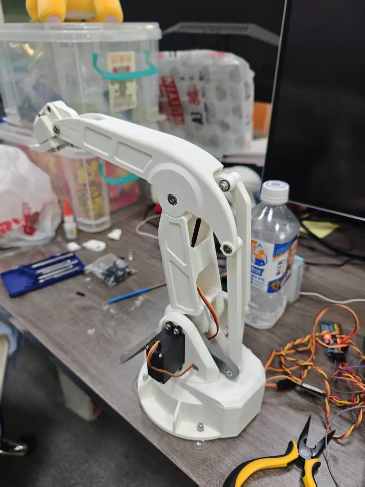
1了解自己是否喜欢和擅长做机械设计
2思考控制配置和电路配置，了解自己是否适合学电力电子和电路电子硬件工科
1阿奇solidworks操作课程（main）
2阿奇solidworks机械建模课程（main）
3轴承
4电力电子课程
PN结 通过调整内电场 开关
2整流电路 以及滤波处理
3稳压电路（开关电源）
5claude code 学习（）搭建AI工作流便于写代码）
6学会控制舵机和相关代码含义
能自己完成想要设计稍微美观的机械结构和嵌套结构，并擅长处理各种干涉问题和SoLidWorks bugs
能自己完成ESP32引脚查询引用和电路杜邦线连线
能自己看懂代码
我比较喜欢机械但是不擅长，比较擅长电路但是其实更喜欢钱
代码其实学起来比硬件轻松些，因为雷点都在bug，硬件bug更烦人，但是做出东西的成就感更强
阿巴阿巴
项目名称：阿巴阿巴软体机械臂（软体没做完）
mentor：鄢瑞贤
/(ㄒoㄒ)/~~没做
方案一：
方案二：
四自由度机械臂可以完成遥控抓取物体，类似小抓娃娃机
---
1C轴摇杆出现重大失误，磨损严重，更换
2遥控按钮和esp32之间数据无法传输到pac9685中，缺少一个库进行通讯协议转接
3C轴舵机初始位置和B轴舵机初始位置干涉，引起舵机损坏，在机械臂的嚎叫和电机的发热过载中终于调整位姿出来了
1. 总体架构 — loop() 中 6 个非阻塞任务的协作关系图（串口→按键→摇杆→逐路上电→舵机输出→健康看门狗），以及三条核心设计原则：统一角度入口 setTarget() 限幅、target/cur 双角度数组、用"限同时运动舵机数"控尖峰电流。
2. USER CONFIG 配置区 — 所有可调参数位置，含 SERVO[4] 当前标定值（大臂 65°~115° 等）。
3. 10 个功能模块（A~J）函数清单：
- A 角度安全层 · B I2C/PCA9685 驱动 · C 看门狗与掉线自动恢复（PRE_SCALE 回读、9 时钟总线抢救）
- D 启停状态机（pcaOk/outEnabled/runMode 三标志）· E 350ms 逐路上电
- F 摇杆采集/自校准/互斥仲裁（先动者先得、顶限位自动交接、归位期限 1 轴）
- G 按键消抖归位 · H 舵机输出调度（rampMask 逐轴斜坡、hold/free 松手策略）
- I 全部串口命令及对状态的影响 · J setup/loop 主流程
4. 关键全局状态速查表 — 每个状态变量的位置和含义。
5. 时序一览表 — 20ms 控制周期到 1s 看门狗的全部定时参数。
6. 安全机制汇总 — 角度限幅、电流控制、急停、总线自恢复、棕断诊断、接线自检、标定保护等 8 项
无pcb
直接遥控模块X2---》ESP32---》PCA9685--->舵机MG996RX3 + 舵机SG90X1
/方案2：PCB方案
机械结构设计说明
见项目成长
出电路方案过程中使用和AI debate
嵌入式代码主要由claude code 实现
心得：
追风赶月莫停留
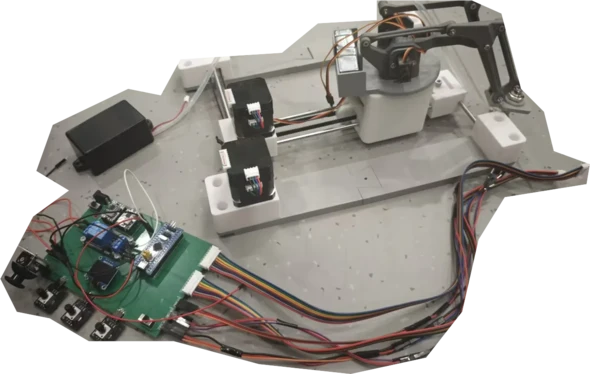
13.五自由度气泵吸盘机械臂五自由度气泵吸盘机械臂由“双轴平台”+“气泵机械臂”两个模块复合而成，能在上料区通过气泵吸附纸板，旋转90°移动到工作区再释放；加工完成后，机械臂再吸附纸板、旋转90°移动到下料区，释放。


提前感谢大家的阅读!
> 这个项目解决什么问题？
>
>
五自由度气泵吸盘机械臂可以实现对大而薄纸板的抓取（吸取）
> 掌握它后，你可以学会什么？（可看“涉及原理一览”目录）
>
>
机械部分：
1.你将掌握机械臂的一种机械结构和对应运动原理；
2.了解同步带机构的传动方式，并搭建一个带张紧机构的同步带传动平台。
电路部分：
1.你将学会如何利用摇杆操控2个步进电机的正反转；
2.如何利用电位器操控舵机；
3.如何利用继电器模块实现对气泵吸盘的控制以及气泵吸盘的原理；
4.如何将12V的电压降为5V和3.3V。
嵌入式部分：
1.你将了解STM32F103C8T6的引脚信息与功能
2.掌握上述电路的代码实现，并大致了解背后代码的原理。
机械臂本体由固定底座、旋转底座、大臂、小臂、三角形连杆等若干元件组成。其中底座上的舵机1通过第一组平行四边形连杆驱动大臂转动,大臂末端又通过第二组平行四边形连杆连到末端执行器,两级四边形通过共用连杆耦合在一起。由于旋转底座上平行四边形一组对边的对地夹角固定，因此三角形连杆的对地夹角也固定，利用第二个平行四边形就可以保证末端机构与地平行。通俗来讲，舵机1可以控制机械臂末端的前伸和后退，舵机2可以控制机械臂末端的升降。
同步带是一条内侧均匀分布着齿形的环形皮带,套在两个(或多个)带齿的带轮上,靠皮带上的齿与带轮上的齿槽相互啮合来传递运动和动力。由于齿形啮合是刚性配合,皮带和带轮之间不会打滑,主动轮每转过一个齿,皮带就严格前进一个齿距,从动轮也严格转过一个齿。这就让它把电机轴的旋转角度精确地按固定比例传递到负载端。
从结构上看,同步带的带体一般用橡胶或聚氨酯制成,内部埋有钢丝绳或玻璃纤维/凯夫拉纤维做成的强力层:齿面负责传递切向力,强力层负责承受张紧拉力。带轮齿形要和带齿匹配,常见的有梯形齿(如 MXL、XL、L)和圆弧齿(如 HTD、GT等)。同步带工作时不需要润滑,传动效率高、噪声小,但如果负载超过啮合能力或张紧不足,会发生"跳齿"造成定位丢失,所以使用时要保证合适的张紧力和负载余量。
本项目选用了2GT 6mm 20齿（齿距2mm，GT圆弧齿，带宽6mm）的同步轮以及配套的惰轮，由于步进电机的轴直径为5mm，所以所有的轮的孔径也都选为5mm。
步进电机是一种把电脉冲信号直接转换成固定角度位移的执行电机:驱动器每收到一个脉冲,电机轴就转过一个固定的角度(步距角),转过的总角度严格等于脉冲数 × 步距角,转速等于脉冲频率 × 步距角。项目使用的 42 步进电机(两相四线混合式)标准步距角是1.8°,即每圈 200 个脉冲——之前调试时算的"1 转/秒 = 200Hz ×细分倍数"就是由此而来,这保证了开环情况下转角和转速都是精确可知的。
从结构上看,它的转子是一块带齿的永磁体(通常 50 齿),定子上有 8 个磁极,绕成 A、B 两相线圈(每相 4 个极)。给 A相通电时,定子 A 相磁极产生磁性,转子齿被磁力吸引转到与 A 相对齐的位置;然后断开 A 相、给 B 相通电,转子就会再转过 1.8°去对齐 B 相。按 A→B 的顺序不断换相通电,转子就一步一步连续旋转;把换相顺序反过来,电机就反转。所谓"步进"就是它只在换相的瞬间转一小步,其余时间被磁力锁定在原地。
驱动板内部实现了功率换向、斩波恒流、细分、保护与隔离四件事。
功率换相:内部有两个 H 桥分别接电机的 A、B 两相线圈,H桥可以让电流在每相线圈里双向流动,于是每收到一个 STEP脉冲,驱动板内部逻辑就自动按节拍切换两相电流的方向和通断,完成前面说的"A→B轮流通电"的换相过程——这一步原本是控制者要做的,现在被驱动板接管了,MCU只需要数脉冲；
斩波恒流:它不会把电源电压直接压在线圈上,而是用高频 PWM把线圈电流稳定在拨码开关设定的值上,保证不同转速下力矩平稳、电机和驱动板不过热；
细分（本项目不涉及）:细分模式下精确控制两相电流的大小比值,把转子"托"在两个整步位置之间,实现半步、1/4步等更精细的运动；
保护与隔离:过流、过热保护,以及输入端的光耦隔离,防止电机侧的干扰或故障反串烧坏单片机。
STEP 是脉冲输入端,也是电机"走多少、走多快"的唯一来源:驱动器每检测到 STEP 上出现一个脉冲边沿(通常是上升沿),电机就转过一个(细分后的)步距角。所以脉冲的个数决定转过的角度,脉冲的频率决定转速——项目代码里 STP 就是由定时器 PWM 输出的(PB6/PA8)。
DIR 是方向选择端,只用高低电平表示方向:比如高电平顺时针、低电平逆时针。驱动器是在 STEP 脉冲的边沿处采样 DIR电平的,所以换向时一定要先改 DIR、再发脉冲,不能边发脉冲边改方向,否则可能出现某个脉冲方向不确定。高/低电平具体对应哪个转向因接线和驱动器而异,实际装好后若方向反了,对调 DIR 电平或修改相关代码即可。
EN 是使能端,本项目驱动板是低电平有效:EN 拉低时,驱动器给电机两相线圈通电,电机可以响应 STEP脉冲,并且停住时有保持力矩(轴被锁住);EN 拉高时,驱动器关断输出,线圈断电,电机轴处于自由状态（用手可以转动）,此时发 STEP 脉冲也不会有反应。
摇杆内部其实就是两个十字布置的电位器:横轴(Vx)和纵轴(Vy)各一个,电位器两端接 3.3V 和GND,中间抽头输出的电压正比于推杆拨动的位置——推到正中间时约为 1.65V,推满一端是 3.3V,另一端是 0V。这个 0~3.3V的连续电压就是"模拟量"。
STM32F103C8T6内部是一个 12 位逐次逼近型(SAR)ADC,它把模拟电压变成数字量的过程分两步:第一步是采样保持,内部开关闭合,让 ADC 内部的采样电容充电到输入电压的大小(你代码里 adc.c 设置采样时间为 239.5 个 ADC 时钟周期,ADC 时钟 72MHz÷6=12MHz,约20µs,这是为了让电容充分充到和信号一致,保证精度);第二步是逐次较,ADC用二分法把采到的电压和内部由参考电压生成的比较电压逐位比较,从最高位到最低位一共比 12 次,得到 12位二进制结果——好比用天平称重,每次都拿"区间中值"去比,12 次就能把 0~3.3V 均分到 1/4096 的分辨率。参考电压就是 VDDA=3.3V,所以数字量的范围是 0~4095,换算关系是 数字值 = 电压 ÷ 3.3V × 4095,即 0V 对应 0、3.3V 对应 4095、摇杆中位1.65V 对应约 2048,每一个数字台阶(1 LSB)约等于 0.8mV。
本项目中0-180°和360°两种舵机的机械骨架一样:内部都是直流电机 + 减速齿轮组 + 一块控制小板 + 一个反馈电位器,区别只在反馈电位器"接没接"和机械限位"留没留",这决定了0-180°是位置舵机、360°是速度舵机。
MG90S是闭环位置舵机。反馈电位器通过齿轮和输出轴机械相连,输出轴转到哪,电位器就跟着转到哪,所以电位器的电压就是角度的真实测量值。控制小板把接收到的 PWM 脉宽翻译成目标角度(500µs=0°、1500µs=90°、2500µs=180°),再和电位器测到的当前角度比较,有偏差就驱动电机朝减小偏差的方向转,偏差归零就停住——这就是内部闭环 PID 定位。
MG996R是开环速度舵机。相比于前者拔掉了机械限位柱让输出轴能连续整圈转,并且把反馈电位器和输出轴脱开,电位器固定在中位不动。这样控制小板内部比较的时候,它永远"以为"输出轴停在 90° 的位置:收到 1500µs脉宽时目标角=实际角(固定中位),偏差为零,电机不转;收到大于 1500µs 的脉宽时,它认为"目标在 90°之后",就朝一个方向持续转,脉宽偏离 1500µs 越远转速越快,而且它转多少圈电位器也不知道,永远不会自己停;脉宽小于 1500µs则反向。所以对 360° 舵机来说,脉宽编码的是转速和方向,不是角度。
0-180° MG90S
360° MG996R
本项目中电位器读取模拟量（0-3.3V电压）并将其输入stm32，并以此控制舵机的旋转角度。
继电器本质上是一个用低压小电流控制高压大电流回路的电磁开关。核心部件是一组线圈和一个衔铁:线圈通电后产生磁场,把衔铁吸过来,衔铁带动触点从常闭(NC)位置切到常开(NO)位置;线圈断电,弹簧把衔铁弹回,触点复原。
本项目中使用的气泵吸盘需要12V的供电。上电后气泵就可以不断抽真空，让气泵吸盘持续吸附纸板。使用继电器，我们就能用单片机 3.3V、几 mA的信号驱动线圈,就能控制 12V、几百 mA 的气泵回路的通断,而且控制端(单片机)和负载端(气泵)在电气上完全隔离,气泵侧的干扰不会反串进单片机。
继电器的输入有DC+，DC-，IN三个接口，主要是给继电器供电和控制开关。接线为（VCC——DC+，GND——DC-，IN——GPIO），这里可以选高电平/低电平触发：若是高电平触发，则当IN端输入高电平，继电器的另一端就导通，气泵工作；低电平则为IN输入低电平时导通，气泵工作。
输出则有NO（常断）、COM（公共）、NC（常开）三个接口，为气泵供电。接线为（COM——12V，NO——气泵输入），高电平触发时，NO与COM在IN端为高电平时导通，IN端为低电平时断开。
本项目实际上购买了一个气泵吸盘套件，在推进中发现只需要继电器控制供电与否就可以实现套件的吸附释放控制。
出于学习的目的，在项目完成后我去了解了气泵的工作原理：气泵本体是一台微型隔膜泵——电机带动偏心轮,让橡胶隔膜往复运动,进气口一侧不断抽气、出气口一侧不断排气,持续运转就在进气口维持负压.
本项目的气泵盒自带电磁阀。
电磁阀在气动系统里的角色,可以理解为"控制气路通断的电开关"——继电器是在电路里用低压信号切大电流,电磁阀则是在气路里用低压号切气流,两者结构上都是"电磁线圈 + 机械运动件",只不过继电器动的是金属触点,电磁阀动的是阀芯。
在真空吸盘系统中,电磁阀起到快速释放的作用 :如果只是把气泵断电,泵停了,但气泵到吸盘之间的管路里还残留着负压,纸板不会马上掉下来,要等负压慢慢泄漏消散。如果有电磁阀,释放时把阀切到"通大气"的位置,外界空气瞬间涌入吸盘,负压立刻消失,纸板应声而落——即"破真空",是拾取-放置类系统里电磁阀最核心的价值。
系统总电源是 12V 10A 适配器(步进电机驱动器需要较高的电机电压),但舵机要 5V 供电,单片机、电位器、摇杆、OLED 逻辑要3.3V,所以需要两级降压。
降压有两种思路:
线性稳压(LDO、7805)相当于一个自动调节的可变电阻,把多余的电压以热量形式耗掉,效率 = 输出电压÷输入电压,12V降到 5V 只有约 42%、降到 3.3V 只有约 27%,电流稍大就严重发热,但优点是纹波小、电路简单;
开关降压(Buck)用高频开关配合电感电容"搬运"能量,效率可达 85%~95%。
本项目电机、舵机电流大,所以选成品Buck模块MP1584EN。
>
>
复述一遍选型判断：小压差+低噪声选LDO线性稳压；大压差+大电流选DC-DC
2. 看到 TIM_CH → 输出PWM（舵机、电机）或测脉冲
3. 看到 TIM_CHN → 高级定时器互补输出，电机H桥专用
4. 看到 USART → 串口通信，PA9/PA10必须留作调试。
5. 看到 SPI → 高速通信（屏幕、无线模块）
6. 看到 I2C → 低速通信（陀螺仪）
那么现在就可以很好的理解当初AI给的引脚分配表是怎么选择引脚的了：
这个嵌入式代码是最简单的，只需要把PB12引脚拉高。
> 检验知识点是否学会的任务
>
>
1.步进电机中STEP，DIR，EN的作用分别是？
2.PWM是什么？PWM舵机的原理是？0-180°舵机和360°舵机有什么区别？
3.电位器的原理？
4.继电器的原理？
5.降压模块LDO和DC-DC的适用场景？
> 学完文档后应当掌握的内容
>
>
理解本项目的机械、电路、嵌入式原理，并知道如何调试、有信心复现这个项目。
项目名称：五自由度气泵吸盘机械臂
mentor：孔繁晔（空翻也！）
本项目由“双轴平台”+“气泵机械臂”两个模块复合而成，能在上料区通过气泵吸附纸板，旋转90°移动到工作区再释放；加工完成后，机械臂再吸附纸板、旋转90°移动到下料区，释放。
双轴平台：通过2个42步进电机驱动同步带，实现机械臂的“固定底座”在xy平面内的移动；2个步进电机通过1个摇杆进行控制。
气泵机械臂：由2个MG90S舵机（0-180°）+1个MG996R舵机（360°）分别控制大臂、小臂、旋转底座的运动；各自通过一个电位器控制。
（右方电路板）各按键功能说明：
1.开关SW1（左上）：控制整块板子的供电，左开右关；
2.左下摇杆：控制步进电机的运动，人站在步进电机一侧，俯视机械臂时，摇杆的上下左右移动即对应机械臂整体在水平面xy方向的移动；
3.电位器1（左）：控制大臂对应MG90S 180°舵机的运动，向右机械臂前伸，向左回缩；
4.电位器2（中）：控制小臂对应MG90S 180°舵机的运动，向左下放，向右上移；
5.电位器3（右）：控制固定底座内MG996R 360°舵机的运动，电位器居于中位附近时停止转动，向左逆时针转动，向右则顺时针转动；
6.开关SW2（右下）：控制气泵吸盘的吸与放，左开右关。
---
构建"迭代与改错"记录，可仅截屏展示
其实单独的机械臂就可以基本实现我的项目需求，受kfy学长电赛项目的启发，我尝试利用双轴平台给予机械臂在xy平面更加灵活的运动能力 （双平行四边形结构的机械臂的活动范围非常有限）。参考比较了一些项目后，我最终选择了下面两个项目进行了集成和改进。
后续根据选择的MR996R舵机和同步带连接的需要设计了固定底座、旋转底座；设计了榫卯结构的连接件固定双轴平台；根据气泵吸盘的尺寸设计了气泵吸盘连接件。
2.机械臂项目只能找到stl文件，我测量了其尺寸并设计了适配气泵吸盘的机械臂连接件
1.电源：由12V 10A的电源适配器输入12V电压，通过两个DC-DC降压模块获得3.3V和5V的电压给其余元件供电；其中继电器需要用杜邦线连接，因此留出了相应的12V+GND排母。有指示灯确认板子上电状态；
2.芯片：选取stm32f103c8t6，控制3个舵机、2个步进电机、1个气泵吸盘；
3.张大头步进电机：自带驱动板，12V供电，通过一个摇杆模块进行控制；
4.PWM舵机：5V供电，分别通过电位器进行控制；
5.气泵吸盘：借助继电器模块弱电控制强电（输出侧12V——COM、气泵——常开端NO；输入侧3.3V——DC+、GND——DC-、stm32——SW2——IN）；
6.OLED：实时显示舵机与步进电机的运动状态，便于调试
在Keil5环境中进行stm32的开发，几乎所有代码书写都由claude完成，参考了kfy学长的舵机、步进电机、继电器代码。
由于商家给出的双轴平台bom表没有采购链接，我在理解了同步带的运动原理和装配的顺序后买齐了元件；在同步带系统的装配上，我发现了商家自攻螺丝的固定方案非常麻烦，便采用502胶水代替。
机械臂的旋转底座进行了一次迭代，因为旋转底座与固定底座之间是没有螺钉固定的，装上气泵吸盘后机械臂的重心不稳，权衡后决定通过加大底座并引入配重块的方式使其更加稳定。
在调试步进电机时，发现由于机械臂的质量大惯性大，出现“平台动而机械臂不动” 的情况。因此我希望设计长335mm的连接件固定双轴平台的x方向，考虑到3D打印机的大小限制，设计了燕尾形状的榫卯结构来连接双轴平台的基座并限制其x轴方向的运动，实测发现螺纹固定的效果不如502胶水。
在我对stm32了解不多、只大概了解各个元件控制原理的情况下，我使用AI帮我完成了引脚的初步规划，并通过单独调试+面包板联调一步步确认了这个方案的可行性。在项目推进上，这帮助我早早画出了pcb并送去打板。
首先，我通过学长分享、询问商家等途径收集参考代码和各元件的手册，并整理到文件夹中让AI读取分析，书写代码。在这个过程中，我需要尽可能给出明确充分的信息和清晰的需求，遇到问题时，向AI反映我看到的现象，并根据它的建议debug。
分享我印象最深的一次调试：
> 用面包板跑通了电路之后，我把舵机安装到了机械臂上，但是控制舵机时发现机械臂抽搐严重。我向AI反馈了问题，它在软件层面进行了一些优化，效果不尽人意。
>
> 我猜测可能是由于MG90S舵机在机械臂上运动的角度是有限的，但此时电位器0-3.3V对应的舵机角度仍然是0-180°，这会导致两个问题：
>
> 1.舵机会因为限位而卡死 2.单位电压对应的舵机旋转角度更大，控制精度降低。
>
> 于是我估计了舵机在机械臂上需要运动的角度，让AI写了一个可以让0-3.3V全程映射给定舵机运动角度范围的工程。我一开始选定的运动范围是90°-180°，调试发现机械臂运动有所改善，但在3.3V边界时偶尔会触发复位导致抽搐。而通过改变安装时的初始角度，可以把运动范围改为45°-135°，这就解决了边界堵转复位的问题。
>
>
下面是我之前的部分调试记录：
由于我对于电路原理的认知程度还不足以支持我判断AI的正确性，如有错误恳请学长和同学们指正！
0.思路构建部分
AI协助我确认了基于stm32控制众多元件的电路可行性；帮助我估计了扭力并进行舵机选型。
1.机械部分
我向AI发送了最初参考的开源项目阿奇机械臂的图片，得知了其结构为“双平行四边形结构”，后续通过这个关键词进一步搜索开源项目。
2.电路部分
上面电路里基本都提到了，此处省略。
3.嵌入式部分
上面嵌入式里基本都提到了，此处省略。
心得：
机械方面
1.设计时应有意识地考虑到装配方面的问题，如螺钉连接时需要留出能让手伸进去拧紧螺钉的空间；
2.尽可能轻量化建模以减少打印成本，非常复杂而难以正常打印的结构（如本项目中的固定底座）可以采用光固化的3D打印方式；
3.总有一些问题是难以预料和估计的（如本项目中机械臂重心不稳），为兼顾进度和可靠性，需要权衡解决方法。
电路方面
1.先逐个跑通每一个元件，用面包板集成功能，最后再送去打板；
2.如果电路涉及不同电压12V，5V，3.3V，由于其大压差、大电流，考虑使用DC-DC降压模块；
3.打板时可以加入指示灯显示板子通电状态，记得预留调试的GND、VCC排母/排针；
4.舵机、电机放在板子边缘，特别要考虑元件间可能存在的物理干涉。
嵌入式方面
1.先分别跑通所有子模块的代码，再进行整合；
2.清晰地为AI提供信息和需求，写好prompt；
3.尽可能搞懂代码背后的控制原理（正在恶补ing）。
写在最后：非常非常感谢孔繁晔学长对我暑期项目的指导！在8月中旬到9月的这段时间里，我和kfy、dzy每天都来未来学习中心推进各自的任务，结束后也会约饭（有时候还有yqr、软件的zyq）、约麻将......虽然我还没有组队做项目的体验，但这两周的经历已经让我感受到了做硬件的快乐，也收获弥足珍贵的情谊。
STM32 引脚 · 复用功能 · 连接对象 · 信号说明
PA0 · ADC1_IN0 · 摇杆 X 轴输出 · 模拟量 0~3.3V
PA1 · ADC1_IN1 · 摇杆 Y 轴输出 · 模拟量 0~3.3V
PA2 · ADC1_IN2 · 电位器 1(关节 1) · 模拟量 0~3.3V
PA3 · ADC1_IN3 · 电位器 2(关节 2) · 模拟量 0~3.3V
PA4 · ADC1_IN4 · 电位器 3(关节 3) · 模拟量 0~3.3V
PA6 · TIM3_CH1 · 舵机 1 PWM 信号线 · 50Hz PWM,0.5~2.5ms
PA7 · TIM3_CH2 · 舵机 2 PWM 信号线 · 50Hz PWM,0.5~2.5ms
PB0 · TIM3_CH3 · 舵机 3 PWM 信号线 · 50Hz PWM,0.5~2.5ms
PB6 · TIM4_CH1 · 电机 1 驱动器 STP · 脉冲,频率可变(转速)
PB8 · GPIO 输出 · 电机 1 驱动器 DIR · 方向,高/低电平
PB10 · GPIO 输出 · 电机 1 驱动器 EN · 使能,低电平有效
PA8 · TIM1_CH1 · 电机 2 驱动器 STP · 脉冲,频率可变(转速)
PB9 · GPIO 输出 · 电机 2 驱动器 DIR · 方向,高/低电平
PB11 · GPIO 输出 · 电机 2 驱动器 EN · 使能,低电平有效
PB12 · GPIO 输出 · 气泵继电器控制 · 高=开,低=关;经单刀双掷开关接继电器 IN(高电平触发模块)
PB14 · GPIO(软件 I2C SCL) · OLED 显示屏 SCL · 4.7kΩ 上拉到 3.3V(模块自带可省)
PB15 · GPIO(软件 I2C SDA) · OLED 显示屏 SDA · 4.7kΩ 上拉到 3.3V(模块自带可省)
PA9 · USART1_TX · 调试串口 TX · 保留,不接负载
PA10 · USART1_RX · 调试串口 RX · 保留,不接负载
PA13 · SWDIO · 调试器 SWDIO · 必须保留
PA14 · SWCLK · 调试器 SWCLK · 必须保留
功能引脚共 17 个,占用 17 个 GPIO;C8T6 共 37 个可用 GPIO,资源充足。PB13 已释放,可留作扩展。
外设 · 占用 · 说明
ADC1 · 5 路(IN0~IN4) · 共 10 路外部通道,余 5 路
TIM3 · 3/4 通道 · 舵机 PWM:PSC=71,ARR=19999 → 50Hz;CCR 500~2500 对应 0.5~2.5ms
TIM4 · 1/4 通道 · 电机 1 STP(CH1),50% 占空比,改变频率调速
TIM1 · 1/4 通道 · 电机 2 STP(CH1),与 TIM4 频率独立;TIM1 为高级定时器,代码中需调用 TIM_CtrlPWMOutputs() 使能主输出
TIM2 · 空闲 · 可留作后续扩展(编码器、串口等)
I2C1、I2C2 · 未使用 · OLED 采用软件 I2C(PB14/PB15);硬件 I2C 外设留作扩展
引脚 · 接法
BOOT0 · 10kΩ 下拉,留跳线便于 ISP 烧录
NRST · 10kΩ 上拉 + 100nF 对地
VBAT、VDDA · 接 3.3V;VDDA 经 10Ω 电阻 + 100nF/1µF 电容滤波
VDD×2 · 接 3.3V,就近各放 100nF 去耦电容
VSS×2 · 接 GND
PD0 / PD1 · 8MHz 无源晶振 + 两个 20pF 负载电容(可选,内部 RC 振荡器也能工作)
1. 摇杆供电接 3.3V,不能接 5V
摇杆输出 0~5V 超出 ADC 上限(3.3V)会损坏引脚。摇杆内部就是两个 10kΩ 电位器,3.3V 供电时输出自然变为 0~3.3V,安全可用。
2. 42 步进电机必须经驱动器
STM32 只输出 STP/DIR/EN 信号;驱动模块的 VCC 按模块说明接逻辑电源或电机电源(电机电源通常为 12V/24V,单只 42 电机电流 1~2A),绝不能从开发板取电,且所有电源共地。
3. 舵机独立 5V 电源
3 个舵机堵转电流可达 2~3A,必须单独 5V 供电。3.3V PWM 信号一般能驱动 SG90/MG996R;个别舵机不响应时,把对应引脚改为开漏输出并加 5V 上拉。
4. 气泵开关接法(单刀双掷)
- 继电器模块选用高电平触发型:IN=高电平吸合,IN=低电平/悬空断开;
- 接线:开关掷1 → PB12,开关刀(公共端)→ 继电器 IN,开关掷2 → GND;
- 拨到 PB12 档:代码控制,高=开、低=关;拨到 GND 档:手动强制关闭(急停),代码无法干预;
- 代码初始化时将 PB12 置低,默认关泵;PB12 复位/上电前为悬空输入,高电平触发模块 IN 悬空=断开,气泵默认关闭,不会误开;
- 开关选型:SS-12D10L5(3 脚 SPDT、ON-ON 两档、先断后通、2.54mm 直插立式,额定约 DC 30V/0.3A,以规格书为准)。开关只走 3.3V/约 2~3mA 的继电器 IN 信号,余量充足;气泵大电流走继电器触点,不经过开关;
- 焊接前用万用表蜂鸣档确认中间脚为公共端(刀),拨左=左-中通、拨右=右-中通;PCB 丝印标注"代码控制 / 急停"两档,方向与实物不符时交换两掷接线;
- 掷2 必须接 GND,不要悬空:悬空时 IN 状态由模块内部电路决定,且易受步进/舵机 PWM 走线杂散耦合干扰而误触发;接地才能保证急停档硬件级确定断开(IN 接地无电流、无额外功耗);
- 若想用代码调节吸力(PWM):机械继电器吸合/释放约 5~10ms,做不了 PWM 斩波,需改为 MOSFET 低边驱动气泵(泵两端并续流二极管),继电器仅作总开关;
- 气泵电源按额定电压/电流从继电器触点侧接入,触点容量留 2 倍余量;触点侧完全隔离,气泵电源不必与系统共地(共地亦可)。
5. 继电器不能直连 GPIO
GPIO 输出电流约 8~25mA,驱动不了继电器线圈(约 70mA)。使用带三极管/光耦驱动的继电器模块(IN 端直接接 PB12),或自搭三极管 + 续流二极管电路;气泵电源从继电器触点侧接入。
6. 所有电源共地
12/24V(步进)、5V(舵机/继电器)、OLED 电源、3.3V(STM32)的 GND 必须连在一起,否则信号无法构成回路。
7. ADC 引脚非 5V 容忍
PA0~PA7、PB0、PB1 不可输入超过 3.3V 的电压。
8. OLED 采用软件 I2C(PB14/PB15)
- I2C1/I2C2 硬件引脚均已被步进电机占用(默认 PB6/PB7、重映射 PB8/PB9、I2C2 的 PB10/PB11),故用软件模拟 I2C,对 OLED 刷新(几十 Hz)完全够用;
- OLED 模块若没有板载上拉电阻,SCL/SDA 各加 4.7kΩ 上拉到 3.3V;
- PB14/PB15 为 5V 容忍引脚,OLED 5V 供电时信号兼容(建议实测);
- 若坚持用硬件 I2C,可启用 I2C1 重映射(PB8/PB9)并相应挪动电机 DIR 引脚。
摇杆 X、Y 两轴各是一个电位器,3.3V 供电时中点约 1.65V(12 位 ADC 读数约 2048)。每轴按 ADC 读数分成三个区:
区域 · 条件 · 电机动作
正转区 · 读数 > 中点 + 死区 · DIR 置正转方向,脉冲频率随偏离量增大(推得越远转得越快)
死区(停止) · 中点 ± 死区以内 · 停止输出脉冲,电机保持当前位置(驱动器仍使能)
反转区 · 读数 < 中点 − 死区 · DIR 置反转方向,脉冲频率随偏离量增大
- 映射关系:X 轴 → 电机 1,Y 轴 → 电机 2,两轴互不影响
- 死区建议 ±80~150 个 ADC 计数(约 ±65~120mV),用于滤除摇杆中点偏差和 ADC 噪声
- 速度 = 脉冲频率:偏离量线性映射到频率(如 200Hz~5kHz),上限按电机不失步实测调整
- 两个电机脉冲分别由 TIM4、TIM1 产生,频率互不干扰,可同时以不同速度运行
- 上电后可对中点做一次采样校准(摇杆回中时读数存为基准),或直接用固定值 2048 加较大死区
> 对应工程:STM32_3Servo_OLED(主工程,常开设计)+ STM32_Relay_Test(验证工程,通断循环)
> 本模块链路:PB12(GPIO 推挽输出)→ 光耦隔离继电器模块(高电平触发)→ 常开触点串在气泵 12V 回路 → 气泵持续抽气维持吸盘负压
> 核心收获:继电器是最简单的执行器(1 bit 通/断);"先 WritePin 再 Init"还是"先 Init 再 WritePin",取决于负载的响应时间尺度。
内容 · 文件 · 行号
PB12 初始化+常开(主工程) · STM32_3Servo_OLED/Core/Src/gpio.c · 44~49
OLED 第 4 行 PUMP:ON 显示 · STM32_3Servo_OLED/Core/Src/main.c · 288
DEBUG_SHOW_P3 切换显示 · STM32_3Servo_OLED/Core/Src/main.c · 77
继电器宏封装 MAGNET_ON/OFF/TOGGLE · STM32_Relay_Test/Core/Inc/main.h · 63~69
上电断开 + 吸 2s/放 2s 循环 · STM32_Relay_Test/Core/Src/main.c · 36~49
接线说明注释(COM/NO/续流) · STM32_Relay_Test/Core/Src/main.c · 1~23
c
/* PB12 气泵继电器控制:常开(高电平触发模块) */
GPIO_InitStruct.Pin = GPIO_PIN_12;
GPIO_InitStruct.Mode = GPIO_MODE_OUTPUT_PP;
GPIO_InitStruct.Speed = GPIO_SPEED_FREQ_LOW;
HAL_GPIO_Init(GPIOB, &GPIO_InitStruct);
HAL_GPIO_WritePin(GPIOB, GPIO_PIN_12, GPIO_PIN_SET);
主工程只在初始化写了一次高电平,之后主循环永远不再碰 PB12——这就是"常开"的全部代码。为什么敢这么设计:气泵必须持续抽气维持负压(纸板有孔隙漏气,泵一停负压就散,工件掉落),所以"吸住"才是默认状态。OLED 第 4 行的 PUMP:ON(main.c:288)不是动态读引脚,而是打印常量字符串——泵的状态从初始化之后就没变过。若以后改成"只有吸取时才开泵",把 WritePin 搬进业务逻辑即可,写法参照验证工程。
宏封装(main.h:63~69):
c
宏的作用是给 GPIO 操作起业务名字:代码里写 MAGNET_ON() 读起来是"吸合",而不是"把某端口某引脚写高"。与主工程 Servo360_SetPulse() 同一种封装思想。
主循环(main.c:36~49):
c
MAGNET_OFF(); /* 上电先确保断开 */
while (1)
{
MAGNET_ON(); /* 吸合 */
HAL_GPIO_WritePin(GPIOC, GPIO_PIN_13, GPIO_PIN_RESET); /* 灯亮=吸合 */
HAL_Delay(2000);
MAGNET_OFF(); /* 断开 */
HAL_GPIO_WritePin(GPIOC, GPIO_PIN_13, GPIO_PIN_SET); /* 灯灭 */
HAL_Delay(2000);
}
两个要点:①MAGNET_OFF() 在 while 之前——"上电先到安全状态"的老规矩;②用 PC13 灯同步指示继电器状态——给看不见的执行器一个可见反馈,是调试"听个响才知道动没动"的器件的标准做法。
阻塞 vs 非阻塞延时:HAL_Delay(2000) 是阻塞延时,这 2 秒里 CPU 除了数时间什么都不干。验证工程只有一个任务,无所谓;主工程要同时管摇杆、三舵机、OLED,所以用 tick 计数(tick % 5 == 0 才刷新 OLED)的非阻塞写法。同一个"等一段时间"的需求,单任务用 Delay、多任务用计数——嵌入式基本功。
步进模块是先 WritePin 再 Init:
c
HAL_GPIO_WritePin(GPIOB, M1_EN_Pin, GPIO_PIN_SET); /* 先写 */
HAL_GPIO_Init(GPIOB, &GPIO_InitStruct); /* 再配置 */
继电器这里是先 Init 再 WritePin。原因藏在负载响应速度里:
- 驱动器输入是电子电路,纳秒级响应:Init 把引脚切成输出的瞬间,输出数据寄存器是默认值 0(低),EN 低=使能,会被驱动器立即当真——所以必须先写后切,让"切过去的一瞬间就是高"。
- 继电器是机械器件,吸合要 ~10ms:Init 后那几微秒的低电平它物理上反应不过来;且 0(断开)→1(吸合)恰好是"先断开后吸合"的安全方向,先 Init 再写不仅无害,还白捡一个安全时序。
同样是顺序问题,对电子负载是纳秒级生死,对机械负载是毫秒级无所谓——写代码时脑子里要有这两条时间线。
- 模块 IN 接 PB12;跳线必须拨高电平触发档(拨错档位曾误判为代码问题)。
- 负载侧:气泵电源正 → COM,NO → 气泵正极,气泵负极 → 电源负。感性负载建议反并续流二极管(模块已自带)。
- 模块 VCC 接 3.3V,与 STM32 共地。
宏/参数 · 值 · 位置 · 作用
RELAY_Pin · GPIO_PIN_12 · Relay_Test main.h:63 · PB12
MAGNET_ON/OFF/TOGGLE · 宏 · Relay_Test main.h:67~69 · 吸合/断开/翻转
DEBUG_SHOW_P3 · 1 · 主工程 main.c:77 · 1=显示 P3 电压;0=显示 PUMP:ON
延时 · 2000ms · Relay_Test main.c:44/48 · 吸/放各 2s
1. 万用表通断档量 NO 与 COM:上电应导通(常开吸合);把主工程 gpio.c 里 PB12 的 SET 改 RESET 重烧,应断开——验证整条控制链路。
2. 把主工程 DEBUG_SHOW_P3 改 0,OLED 第 4 行应显示 S3:xxx PUMP:ON。
3. Relay_Test 工程把 HAL_Delay(2000) 改 200,听继电器"哒哒"声变密,PC13 灯同步——理解阻塞延时的节奏控制。
4. 思考题:在主工程加"按一下按键气泵开、再按一下关",需要哪几样东西?(输入引脚 + 状态变量 + 防抖——即状态机三件套)
> 对应工程:STM32_3Servo_OLED(主工程)
> 本模块链路:主循环格式化 4 行文本 → 与上屏缓存比较 → 变化行经软件 I2C(PB14=SCL、PB15=SDA)→ SSD1315 显示
> 核心收获:I2C 协议用普通 GPIO"演"出来的全过程;ACK 是"设备存在"的物理证据;硬件外设输出不依赖 CPU(阻塞延时期间电机照转、软件轮询暂停)。
内容 · 文件 · 行号
地址宏与引脚操作宏 · Core/Src/oled.c · 17~25
位延时(总线速度) · Core/Src/oled.c · 29~34
START/STOP 时序 · Core/Src/oled.c · 36~53
发字节+读 ACK · Core/Src/oled.c · 56~75
写命令/批量写数据 · Core/Src/oled.c · 77~96
光标定位 · Core/Src/oled.c · 98~104
显示字符/字符串(8x16 字模) · Core/Src/oled.c · 117~131
地址探测(0x78/0x7A 各试 3 次) · Core/Src/oled.c · 133~161
OLED_Init(300ms 等待+探测+初始化序列+自检) · Core/Src/oled.c · 163~222
4 行格式化+只刷变化行 OLED_Update · Core/Src/main.c · 272~304
主循环 OLED 块(刷新/心跳/重试/报警) · Core/Src/main.c · 464~495
初始化调用与缓存清零 · Core/Src/main.c · 366~369
I2C 只有两根线:SCL(时钟)和 SDA(数据),一主多从,每个从机有一个 7 位地址,靠地址点名。三条规则:
- SCL 是节拍器,由主设备(STM32)控制;数据位只在 SCL 低电平期间变化,SCL 高电平期间 SDA 必须稳定——从设备在高电平时读取数据位;
- 每发完一个字节,第 9 个时钟拍由从设备把 SDA 拉低表示"收到"(ACK),主设备读这一拍就能知道对方在不在线;
- 两个特殊信号:SCL 高电平时 SDA 的下降沿 = START、上升沿 = STOP——正常数据不允许在 SCL 高电平时变化,这两个"违规边沿"被协议约定为标志。
硬件上两根线都是开漏 + 上拉:设备只能拉低、不能主动推高,松手后由上拉电阻拉回高电平,多设备共享总线不会短路冲突(OLED 模块板上自带上拉)。
软件 I2C vs 硬件 I2C:芯片内有专门的 I2C 外设能自动完成全部时序;本项目用软件 I2C——PB14/PB15 当普通 GPIO,按协议手动翻转电平。好处是引脚随便选、不占外设;代价是 CPU 要花时间"演戏"。
c
宏把"写 PB14/PB15"包装成"写 SCL/SDA"(业务命名)。OLED_I2C_Delay 约 3µs 忙等,决定总线速度约 70~100kHz(标准 I2C 100~400kHz,刷屏绰绰有余)。
c
static void OLED_I2C_Start(void)
{
OLED_W_SDA(1); OLED_W_SCL(1); OLED_I2C_Delay();
OLED_W_SDA(0); OLED_I2C_Delay(); /* SCL 高时 SDA 下降沿 = START */
OLED_W_SCL(0);
}
STOP 反过来(SCL 高时 SDA 上升沿)。发字节核心循环:
c
for (i = 0; i < 8; i++)
{
OLED_W_SDA(Byte & (0x80 >> i)); /* 先放数据位(从最高位开始) */
OLED_W_SCL(1); /* SCL 拉高:从设备读取该位 */
OLED_I2C_Delay();
OLED_W_SCL(0); /* SCL 拉低:准备下一位 */
OLED_I2C_Delay();
}
OLED_W_SDA(1); /* 释放 SDA,让从设备来拉低 */
OLED_W_SCL(1);
ack = (OLED_R_SDA() == GPIO_PIN_RESET); /* 读到 0 = 从设备回 ACK */
发数据时 SDA 是输出,读 ACK 时同一根线切换成输入——开漏结构让"双向单线"成为可能。ACK 就是"设备存在"的物理证据,探测、重试全靠它。
OLED_Init 流程:配置 PB14/PB15 为开漏输出+内部上拉 → 拉高两根线等 300ms 让模块上电稳定 → OLED_ProbeAddress 依次试 0x78、0x7A(各 3 次,发地址字节看有无 ACK)→ 失败返回 0 → 成功写入初始化命令序列。
初始化命令(0xAE、0x81、0xFF……)是照官方例程抄的"配置咒语",把 SSD1315 的对比度、扫描方向、充电泵等配好,最后 0xAF 开显示。值得记的两帧:0xAE/0xAF(关/开显示——先写好数据再开屏,避免花屏)和自检 0xA5(全屏点亮 200ms 再恢复,即"上电闪一下")。两个地址是因为模块 SA0 引脚接法不同(接地 0x78、接高 0x7A),代码自动识别。
SSD1315 上电后内部复位要一段时间,STM32 启动极快,探测可能发生在模块还没"醒"时——总线无应答,OLED_Init 返回 0。这就是"上电稍等或按 RESET 才显示"的根源。两层对策:
- Init 里先 HAL_Delay(300) 等模块稳定(挡大部分情况);
- 主循环 tick % 50 == 0(main.c:487)每秒重试一次 OLED_Init,模块什么时候准备好屏幕什么时候亮,全程不用重启单片机。
配合重试的两个细节:重试成功后 memset(oled_last, 0, ...) 清空上屏缓存——显示逻辑是"内容变了才写屏",缓存留着旧内容的话新初始化的空白屏幕永远不会被写;PC13 诊断灯用闪烁频率编码状态——慢闪 1Hz = 正常,快闪 5Hz = OLED 无应答(main.c:481~494),即"灯的摩尔斯码"。
SSD1315 显示内存是 128×64 点阵,按 8 行一组分成 8 页。4 行 8×16 大字符,每行占 2 页,正好铺满 8 页。OLED_ShowChar = 定位页地址 → 写字模上半 8 字节 → 下一页写下半 8 字节(字模在 oled_font.h,ASCII 从空格索引,不支持中文)。
主工程 OLED_Update(main.c:272~304):snprintf 把每行格式化成 16 字符,与上屏缓存 oled_last 逐行 strcmp,没变的行跳过,只写变化的行——软件 I2C 每字节都要 CPU 忙等,少写一行省几十 µs,屏幕也不会整体闪烁。
重试 OLED_Init 时的 HAL_Delay(300)+HAL_Delay(200) 会阻塞主循环约半秒,但舵机和步进完全不受影响——它们的波形是定时器硬件在输出,不依赖 CPU;受影响的是软件轮询的东西:ADC 采集、状态机、摇杆投票暂停半秒。所以 OLED 一直没接好时,症状是"摇杆每隔一秒卡一下、舵机3 偶尔反应迟钝",而电机照转。硬件外设和软件轮询的这条界线,是本模块捎带的最重要一课。
宏/参数 · 值 · 位置 · 作用
OLED_ADDR_DEFAULT/ALT · 0x78 / 0x7A · oled.c:17~18 · 从机地址(SA0 接法)
OLED_I2C_Delay · 60 次 NOP ≈3µs · oled.c:32 · 位延时,决定总线速度
探测重试 · 每地址 3 次 · oled.c:138/149 · 抗瞬时干扰
上电等待 · 300ms · oled.c:178 · 等模块 POR 完成
自检点亮 · 200ms · oled.c:217 · 上电闪屏
重试周期 · 1s(tick%50) · main.c:487 · POR 竞争兜底
心跳/报警 · 1Hz / 5Hz · main.c:481/493 · PC13 诊断灯
刷新周期 · 100ms(tick%5) · main.c:468 · 内容变才实际写屏
DEBUG_SHOW_P3 · 1 · main.c:77 · 1=P3 电压;0=PUMP:ON
1. 拔掉 OLED 的 VCC:PC13 应变 5Hz 快闪,插回后约 1 秒内屏幕恢复(全程不重启)——验证重试逻辑与灯的语言。
2. 万用表直流档量 PB14/PB15 空闲电压:应为 3.3V 左右(上拉);有示波器可看刷屏时的 SCL 方波。
3. 把 OLED_I2C_Delay 的 60 改 600 重烧,刷新明显变慢但正常——理解"时钟越快越省时、越慢越稳"。
4. DEBUG_SHOW_P3 改 0,第 4 行变 PUMP:ON——理解条件编译。
5. 思考题:OLED 一直没接好时,为什么步进照转、摇杆卡顿?(答案见第六节)
> 对应工程:STM32_3Servo_OLED(主工程)
> 本模块完整链路:电位器3(PA4)→ ADC 采 12 位 → 4 样本均值 + 5 循环中值 → mV → 滞回阈值判断 → 3 次投票 → 状态切换才写 CCR → TIM3_CH3 50Hz PWM → 360° 舵机(PB0)
> 核心收获:连续量用"死区"防抖,离散量用"滞回 + 投票"防抖。
内容 · 文件 · 行号
三档电压阈值与滞回宏 · Core/Src/main.c · 41~44
三档脉宽宏 · Core/Src/main.c · 50~53
投票次数宏 S3_DEBOUNCE · Core/Src/main.c · 75
状态枚举 ServoState_t · Core/Src/main.c · 79~85
写脉宽 Servo360_SetPulse · Core/Src/main.c · 96~100
三路电位器采集+滤波 Pot_ReadAll · Core/Src/main.c · 102~167
主循环状态机块(滞回+投票) · Core/Src/main.c · 373~413
上电写停止脉宽 · Core/Src/main.c · 337
TIM3 初始化(与 180° 共用) · Core/Src/tim.c · 19~54
360° 舵机的脉宽编码的是转速和方向,不是角度:1500µs 停,偏离越多转得越快,方向看偏哪边。本工程三档:1350µs 逆时针 / 1500µs 停 / 1650µs 顺时针(±150 偏移,正反转等速,PULSE_OFFSET 越小越慢)。
180° 舵机路径是"电位器电压 → 角度"的连续映射,电压每一毫伏都有意义。但 360° 舵机没有位置反馈,电位器3 扮演的角色不是"角度命令",而是模式选择器——用户拧它只表达三个意图:正转、停、反转。把连续电压压成三个离散状态,程序结构就应该是"状态机":一个记录当前状态的变量,每轮根据"当前状态 + 新读数"决定"要不要换状态、换到哪"。
c
typedef enum
{
SERVO_STOP = 0,
SERVO_CW = 1, /* 正转 */
SERVO_CCW = 2 /* 反转 */
} ServoState_t;
enum 把三个状态变成三个有名字的整数,s3_state 变量就是状态机的"记忆",初始化为 SERVO_STOP(值 0,安全默认)。
最朴素的想法是两条 if:≤700 正转、≥2600 反转。但电位器停在 700mV 附近时,读数噪声 ±10mV 的晃动会让状态每个循环来回翻转,舵机疯狂抖。代码用进入阈值和退出阈值错开 ±40mV 解决:
c
switch (s3_state)
{
case SERVO_STOP:
if (mv3 <= POT_CW_MAX_MV - POT_HYST_MV) /* ≤660mV 才进入正转 */
new_state = SERVO_CW;
else if (mv3 >= POT_CCW_MIN_MV + POT_HYST_MV) /* ≥2640mV 才进入反转 */
new_state = SERVO_CCW;
break;
case SERVO_CW:
if (mv3 >= POT_CW_MAX_MV + POT_HYST_MV) /* ≥740mV 才退出正转 */
new_state = SERVO_STOP;
break;
default: /* SERVO_CCW */
if (mv3 <= POT_CCW_MIN_MV - POT_HYST_MV) /* ≤2560mV 才退出反转 */
new_state = SERVO_STOP;
break;
}
注意 switch 是按当前状态分支的,不是按电压——这是状态机的标志性写法。效果:进入正转要 ≤660mV,退出正转要 ≥740mV,中间 660~740mV 是"死胡同",已经正转就保持正转,已经停就保持停。噪声在这个区间内怎么晃都不会翻转状态,只有真实的大幅度拧动才能跨过去。"进入/退出条件不对称"的技巧叫滞回(hysteresis),与室温空调"26°C 开机、24°C 关机"同原理。
滞回挡得住边界附近的小噪声,但挡不住电源瞬态——步进电机启停的浪涌可能一次就把读数打偏几百 mV,直接跨过滞回区("推摇杆导致舵机3 误转"就是这类实测故障)。对策是连续 3 个循环(60ms)一致才切换:
c
if (new_state == s3_state)
{
s3_vote = 0; /* 和目标一致:计数器清零(保证"连续") */
}
else if (++s3_vote >= S3_DEBOUNCE) /* 连续 3 次想要同一个新状态 */
{
s3_state = new_state; /* 才真正切换 */
s3_vote = 0;
if (s3_state == SERVO_CW)
Servo360_SetPulse(PULSE_CW); /* 1650µs */
else if (s3_state == SERVO_CCW)
Servo360_SetPulse(PULSE_CCW); /* 1350µs */
else
Servo360_SetPulse(PULSE_STOP); /* 1500µs */
}
毛刺的特点是一两个循环就消失,而人拧电位器产生的状态变化会持续存在——3 次投票把"只持续 1~2 个循环"的假信号全滤掉。s3_vote = 0 放在"一致"分支里,保证 3 次必须连续,不是累计。
输出时机:Servo360_SetPulse 只在状态切换成功的那一刻被调用,状态不变时一个 CCR 都不写——输出只由状态决定,状态没变,输出就没必要动。
c
Servo360_SetPulse(PULSE_STOP); /* 先写停止脉宽 */
...
htim3.Instance->EGR = TIM_EGR_UG; /* 立即生效 */
HAL_TIM_PWM_Start(&htim3, TIM_CHANNEL_3);
和 180° 路径同一套防乱动逻辑:先写 CCR、触发更新、再启动 PWM——舵机3 上电第一帧就是停止脉宽,不会先转半圈。初始状态变量 SERVO_STOP 与这个脉宽一致,软件状态和硬件输出从一开始就是同步的。
· 180° 舵机 · 360° 舵机
控制范式 · 连续映射 · 三档状态机
输入处理 · 线性映射到限位区间 · 阈值比较(带滞回)
防抖手段 · 2° 更新死区 · 40mV 滞回 + 3 次投票
输出时机 · 变化 ≥2° 才写 CCR · 状态切换才写 CCR
共同点 · 同一套 ADC 中值滤波、同一颗 TIM3、同一套上电防乱动 ·
宏 · 值 · 位置 · 作用
POT_CW_MAX_MV · 700 · main.c:42 · 正转区上界(≤0.70V 正转)
POT_CCW_MIN_MV · 2600 · main.c:43 · 反转区下界(≥2.60V 反转)
POT_HYST_MV · 40 · main.c:44 · 滞回 ±40mV
PULSE_STOP · 1500 · main.c:50 · 停止脉宽 µs
PULSE_OFFSET · 150 · main.c:51 · 正反转偏移(越小越慢)
PULSE_CCW · 1350 · main.c:52 · 逆时针脉宽
PULSE_CW · 1650 · main.c:53 · 顺时针脉宽
S3_DEBOUNCE · 3 · main.c:75 · 连续 3 循环(60ms)一致才切换
DEBUG_SHOW_P3 · 1 · main.c:77 · OLED 第 4 行显示 P3 电压
1. 推演:舵机3 正转中,电位器慢慢拧回,读数 2550mV → new_state 仍是 CW(≥740 才能退)→ 继续正转;拧过 740mV → 连续 3 个循环后切 STOP,写 1500µs。
2. 实测:OLED 第 4 行观察 S3 状态,电位器3 停在 0.7V 附近缓慢来回微拧(±20mV),状态应纹丝不动——这就是滞回在工作。
3. 改 POT_HYST_MV 为 0,重复上面操作,观察状态在边界抖动,理解滞回的价值。
4. 改 S3_DEBOUNCE 为 1,推摇杆(制造电源瞬态),观察舵机3 是否出现误转,理解投票的价值。
> 对应工程:STM32_3Servo_OLED(主工程)
> 本模块完整链路:摇杆(PA0/PA1)→ ADC 采 12 位 → 中值滤波 → 减中点得偏差 → 死区判断 → 3 次投票 → 定时器输出 STEP(PB6/PA8)+ DIR(PB8/PB9)→ 驱动器 → 电机
内容 · 文件 · 行号
主函数 main() · Core/Src/main.c · 308 起
主循环(20ms 周期) · Core/Src/main.c · 371~499
摇杆→步进控制块 · Core/Src/main.c · 433~462
偏差→频率(死区判断) · Core/Src/main.c · 172~178
单轴输出(方向/频率) · Core/Src/main.c · 191~214
摇杆采样+中值滤波 · Core/Src/main.c · 224~239
上电中点校准 · Core/Src/main.c · 243~261
初始化序列(防乱动时序) · Core/Src/main.c · 321~364
参数宏(中点/死区/频率/方向) · Core/Inc/main.h · 75~77、85、92~95
DIR/EN 引脚初始化 · Core/Src/gpio.c · 52~59
STEP 定时器初始化(TIM4/TIM1) · Core/Src/tim.c · 57~91
STEP 输出引脚复用 · Core/Src/tim.c · 121~138
ADC 初始化与单次采集 · Core/Src/adc.c · 18~63
c
HAL_GPIO_WritePin(GPIOB, M1_DIR_Pin · M2_DIR_Pin, GPIO_PIN_RESET);
HAL_GPIO_WritePin(GPIOB, M1_EN_Pin · M2_EN_Pin, GPIO_PIN_SET);
GPIO_InitStruct.Pin = M1_DIR_Pin · M2_DIR_Pin · M1_EN_Pin · M2_EN_Pin;
GPIO_InitStruct.Mode = GPIO_MODE_OUTPUT_PP;
HAL_GPIO_Init(GPIOB, &GPIO_InitStruct);
注意顺序:先 WritePin 再 Init。引脚从默认的浮空输入切成推挽输出的瞬间,输出的电平就是输出数据寄存器里预先写好的值——这里预先写了 EN=高(失能)、DIR=低。如果先 Init 再写,中间会有一瞬间 EN 是低电平(使能),驱动器已经通电,这是一个隐患窗口。这四行是"上电防乱动"的第一道锁。
c
htim->Init.Prescaler = 71; /* 72MHz / 72 = 1MHz 计数 */
htim->Init.Period = 1999; /* 初始 500Hz,运行时改 */
htim->Init.AutoReloadPreload = TIM_AUTORELOAD_PRELOAD_DISABLE;
...
sConfigOC.Pulse = 0; /* 初始无脉冲,防上电误动 */
sConfigOC.OCMode = TIM_OCMODE_PWM1;
sConfigOC.OCPolarity = TIM_OCPOLARITY_HIGH;
三个关键点:
- PSC=71,计数频率 72MHz÷72=1MHz,即每 1µs 计一个数,后面算 ARR 时就能直接用 1000000÷频率;
- AutoReloadPreload = DISABLE 是动态调频的基石——ARR 的预装载被关掉,运行时写 ARR 立刻生效,不用等当前周期结束;
- 初始 Pulse=0:PWM1 模式下"计数值 < CCR 时输出高电平",CCR=0 意味着计数器永远不会小于它,引脚恒低——上电时 STEP 线是一条平线,电机不可能动。Period=1999(500Hz)只是占位值,真正频率由运行时改 ARR 决定。
12 位逐次逼近,单通道软件触发(不用扫描模式——F103 扫描模式 EOC 只在整组结束时置位一次,多通道轮询会全读到最后一个通道的值);ADC 时钟 72MHz÷6=12MHz(默认 ÷2=36MHz 超频必须改);采样时间 239.5 周期;上电后跑一次 HAL_ADCEx_Calibration_Start 内部校准。PA0/PA1 在 adc.c:74~77 配置为模拟输入。
c
for (i = 0; i < 16; i++) {
sx += ADC_ReadChannel(ADC_CHANNEL_0);
sy += ADC_ReadChannel(ADC_CHANNEL_1);
}
int32_t cx = (int32_t)(sx / 16);
if (cx > JOY_CENTER - JOY_CAL_TOLERANCE && cx < JOY_CENTER + JOY_CAL_TOLERANCE)
centerX = cx;
上电采 16 次求平均作为摇杆中点,但只有落在 2048±200 以内才采信——防止上电时手正推着摇杆,把"推偏的位置"误当成中点,那样之后松手它反而会朝反方向转。采信失败就用固定值 2048。
c
for (i = 0; i < JOY_MED_WINDOW; i++) {
ringX[i] = (uint16_t)centerX;
ringY[i] = (uint16_t)centerY;
}
把 5 个历史槽位全填成中点值,避免前几个循环里 0 把中值拉低(否则刚上电时 Median5 会输出 0,dev 突然变成 -2048,电机可能被误触发)。
c
HAL_GPIO_WritePin(M1_EN_GPIO_Port, M1_EN_Pin, GPIO_PIN_RESET);
HAL_GPIO_WritePin(M2_EN_GPIO_Port, M2_EN_Pin, GPIO_PIN_RESET);
到这一步,校准完了、滤波环热了,驱动器才开始响应脉冲。初始化阶段结束。
c
for (i = 0; i < 4; i++) {
sx += ADC_ReadChannel(ADC_CHANNEL_0);
sy += ADC_ReadChannel(ADC_CHANNEL_1);
}
ringX[joyIdx] = (uint16_t)(sx / 4);
joyIdx = (joyIdx + 1) % JOY_MED_WINDOW;
*adcX = Median5(ringX);
每通道采 4 次取均值(平滑小幅噪声),均值放进 5 格环形缓冲,取中值(丢弃被电源瞬态拉偏的那一轮)。joyIdx 每循环前进一格,到 4 之后 %5 回到 0,五个槽位循环覆盖,中值窗口始终是"最近 100ms 的 5 次结果"。
c
devX = (int32_t)adcX - centerX; /* 必须用有符号类型,差值可为负 */
c
static uint32_t JoystickToFreq(int32_t dev)
{
int32_t mag = (dev >= 0) ? dev : -dev;
if (mag <= JOY_DEADZONE)
return 0;
return STEP_FIXED_FREQ;
}
死区 ±200 计数(约 ±160mV):摇杆在机械中位附近本来就有微小晃动,没有死区电机会不停地"抖一下停一下"。出死区一律返回 600(固定转速模式),推多深都一样快,只有方向区别——优点是不受摇杆模拟量漂移影响。
c
if (JoystickToFreq(devX) == 0) {
joyVoteX = 0;
m1_freq = Stepper_SetSpeed(&axisM1, devX, M1_DIR_CCW, M1_DIR_CW);
} else if (++joyVoteX >= JOY_DEBOUNCE) {
m1_freq = Stepper_SetSpeed(&axisM1, devX, M1_DIR_CCW, M1_DIR_CW);
}
非对称防抖:出死区要连续 3 个循环(60ms)都满足才启动;回到死区则立即执行停止,零等待。这种"启动慢半拍、刹车不犹豫"的写法是安全习惯——误启动顶多慢 60ms,误不停止则可能出事故。投票计数器在死区时清零,保证"3 次"是连续的而不是累计的。
c
static uint32_t Stepper_SetSpeed(StepperAxis *ax, int32_t dev,
GPIO_PinState ccwLevel, GPIO_PinState cwLevel)
{
uint32_t freq = JoystickToFreq(dev);
if (freq == ax->lastFreq) /* 状态没变:一个寄存器都不碰 */
return freq;
ax->lastFreq = freq;
if (freq == 0) { /* 停:CCR=0 → 引脚恒低,脉冲消失 */
__HAL_TIM_SET_COMPARE(ax->htim, TIM_CHANNEL_1, 0);
ax->htim->Instance->EGR = TIM_EGR_UG;
return freq;
}
HAL_GPIO_WritePin(ax->dirPort, ax->dirPin,
(dev > 0) ? ccwLevel : cwLevel); /* 先 DIR 后脉冲 */
uint32_t arr = 1000000U / freq - 1U; /* 600Hz → 1666 个计数 */
__HAL_TIM_SET_AUTORELOAD(ax->htim, arr); /* ARPE 已禁用,立即生效 */
__HAL_TIM_SET_COMPARE(ax->htim, TIM_CHANNEL_1, arr / 2); /* 50% 占空比 */
ax->htim->Instance->EGR = TIM_EGR_UG; /* CNT 归零,当周期生效 */
return freq;
}
逐行拆解:
- freq == lastFreq 短路:死区里停着的时候每 20ms 都会调进来,如果每次都写一遍 CCR 和 EGR,虽然值相同,但 EGR 会强制计数器归零,正在输出的脉冲会被拦腰截断产生毛刺,驱动器可能误计一个脉冲。所以"状态没变就什么都不做"不是优化,是正确性要求。
- 停:CCR=0 + EGR=UG。PWM 模式下 CCR 始终预装载,写 CCR 只是放进影子寄存器,必须靠 UG 事件把它加载进活动寄存器、同时计数器归零,引脚才在当周期变成恒低。
- 转:先写 DIR 再动定时器——驱动器在 STEP 的脉冲边沿采样 DIR,如果脉冲先出来而 DIR 还没稳定,第一个脉冲的方向就是不确定的。
- arr = 1000000/freq - 1:计数器从 0 数到 ARR 是一共 ARR+1 个计数,每个计数 1µs,所以频率 = 1MHz/(ARR+1)。600Hz → ARR = 1000000/600 - 1 ≈ 1665。
- CCR = ARR/2:占空比 50%。驱动器要的是边沿,只要脉宽满足最小要求(一般 2~5µs),50% 是最稳妥的对称波形。
- 最后一个 EGR=UG:为了立即生效——否则新频率要等旧周期走完才应用,停→转的切换会滞后一个旧周期。
主循环最后 HAL_Delay(20)(main.c:498),整个"采样→决策→输出"流水线每 20ms 转一圈。
宏 · 值 · 位置 · 作用
JOY_CENTER · 2048 · main.h:75 · 摇杆中点 12 位读数(1.65V)
JOY_DEADZONE · 200 · main.h:76 · 死区 ±200 计数(约 ±160mV)
JOY_CAL_TOLERANCE · 200 · main.h:77 · 校准采信容差
JOY_MED_WINDOW · 5 · main.c:219 · 中值滤波窗口
JOY_DEBOUNCE · 3 · main.c:76 · 出死区连续 3 循环才启动
STEP_FIXED_FREQ · 600 · main.h:85 · 固定转速 Hz(值越大越快)
M1_DIR_CCW/CW · RESET / SET · main.h:92~93 · 电机1 方向电平
M2_DIR_CCW/CW · SET / RESET · main.h:94~95 · 电机2 方向电平(与 M1 相反)
1. 推演:推杆推满 → adcX≈4095 → dev≈+2047 → freq=600 → 第 3 个循环投票通过 → 先写 DIR → PB6 开始输出 600Hz 方波。
2. 实测:万用表直流档量 PB6,期望约 1.65V(3.3V 的 50% 占空比);量 PB8 为高或低电平——分别验证"频率"和"方向"两条链路。
3. 改 STEP_FIXED_FREQ 为 300,数 30 秒圈数,反推驱动板细分倍数。
4. 对调 M1_DIR_CCW/CW 宏,验证方向反转,理解"先 DIR 后脉冲"。
> 对应工程:STM32_3Servo_OLED(主工程)
> 本模块完整链路:电位器(PA2/PA3)→ ADC 采 12 位 → 4 样本均值 + 5 循环中值 → 换算 mV → 线性映射 45°~135° → 2° 更新死区 → CCR → TIM3 50Hz PWM → 舵机(PA6/PA7)
内容 · 文件 · 行号
脉宽/死区/限位宏 · Core/Src/main.c · 56~58、61~64
电压→角度映射 Pot_ToAngle · Core/Src/main.c · 68~72
角度→CCR Servo180_SetAngle · Core/Src/main.c · 89~94
三路电位器采集+滤波 Pot_ReadAll · Core/Src/main.c · 102~167
主循环舵机1/2 更新块 · Core/Src/main.c · 415~431
初始化防乱动序列 · Core/Src/main.c · 321~348
TIM3 初始化(50Hz PWM) · Core/Src/tim.c · 19~54
TIM3 输出引脚复用 · Core/Src/tim.c · 105~120
ADC 初始化与单次采集 · Core/Src/adc.c · 18~63
PWM 是一个周期固定的方波,信息编码在"高电平占多少时间"里。两个量描述它:周期 T(频率 1/T)和高电平时间(或占空比 = 高电平÷周期)。
舵机协议:周期 20ms(50Hz),高电平 500~2500µs 线性对应 0~180°(500µs=0°、1500µs=90°、2500µs=180°)。舵机内部解码时只关心高电平的绝对时长(µs),不关心占空比,50Hz 只是协议要求的"每 20ms 来一个脉冲"的节奏。
实用换算:方波平均电压 = 3.3V × 占空比,所以万用表直流档可以直接验证 PWM 输出——大臂 45°(1ms 高电平)时量 PA6 约 0.165V,135°(2ms)时约 0.33V。
定时器本质是一个计数器:按 1MHz 频率往上数(每 1µs 一格),配合三个寄存器工作:
- ARR:数到它就归零,周期 = (ARR+1) µs;
- CCR:比较值。PWM1 模式下 CNT < CCR 输出高、CNT ≥ CCR 输出低;
- CNT:当前计数值,硬件自己跑,CPU 不用管。
所以高电平时间 = CCR µs,周期 = (ARR+1) µs,波形由硬件自动翻转,精度由晶振保证。
c
htim3.Init.Prescaler = 71; /* 72MHz ÷ 72 = 1MHz 计数,CCR 单位=µs */
htim3.Init.Period = 19999; /* 20ms 周期 = 50Hz */
...
sConfigOC.OCMode = TIM_OCMODE_PWM1;
sConfigOC.Pulse = 1500; /* 上电默认 1.5ms(90°/安全位置) */
sConfigOC.OCPolarity = TIM_OCPOLARITY_HIGH;
HAL_TIM_PWM_ConfigChannel(&htim3, &sConfigOC, TIM_CHANNEL_1); /* CH2、CH3 同配置 */
逐行理解:PSC=71 让计数频率降到 1MHz,CCR 的数字直接就是微秒数,写 1500 就是 1.5ms,不用换算;Period=19999 定死 50Hz;PWM1 + 高电平有效对应"CNT<CCR 输出高"的规则;初始 Pulse=1500 是 90° 的脉宽。关键点:CH1/CH2/CH3 三个通道共用同一个计数器,天然同频同相位、各有各的 CCR——一个 TIM3 同时带三个舵机、互不干扰,这正是当初选 TIM3 三通道引脚(PA6/PA7/PB0)的原因。
与步进模块对照:同一种硬件,两种用法。步进是固定 CCR=ARR/2(50% 占空比)、动态改 ARR 调频率;舵机反过来,固定 ARR=19999(50Hz 不变)、动态改 CCR 调脉宽。ARR 和 CCR 谁动谁不动,决定输出的是"变速脉冲串"还是"变宽度舵机信号"。
三个电位器接 PA2/PA3/PA4(ADC1_IN2/3/4),ADC 逐通道单次转换(不用扫描模式——F103 扫描模式 EOC 只在整组结束时置位一次,多通道轮询会全读到最后一个通道的值),采样时间 239.5 周期,ADC 时钟 72MHz÷6=12MHz(默认 ÷2 超频必须改)。
c
for (i = 0; i < 4; i++) { /* 每通道采 4 次取均值:平滑小幅噪声 */
s1 += ADC_ReadChannel(ADC_CHANNEL_2);
s2 += ADC_ReadChannel(ADC_CHANNEL_3);
s3 += ADC_ReadChannel(ADC_CHANNEL_4);
}
...
ring1[idx] = v1; idx = (idx + 1) % POT_MED_WINDOW; /* 5 循环环形缓冲 */
*mv1 = Median5(ring1) * 3300 / 4095; /* 中值 + 换算 mV */
均值平滑小幅纹波,中值直接丢弃被电源瞬态拉偏的个别循环(步进电机启停的电流浪涌是实测问题)。首次调用时整环填同一个值,避免初始 0 拉低中值。最终输出 mV。
c
static uint16_t Pot_ToAngle(uint16_t mv, uint16_t min_deg, uint16_t max_deg)
{
return (uint16_t)(min_deg +
(uint32_t)mv * (max_deg - min_deg) / 3300U);
}
0~3300mV 全程线性映射到限位区间:0V→min_deg、3.3V→max_deg。本工程大臂/小臂均为 45°~135°。
c
static void Servo180_SetAngle(uint32_t channel, uint16_t angle_deg)
{
uint32_t ccr = SERVO_PULSE_0DEG
+ (uint32_t)angle_deg * (SERVO_PULSE_180DEG - SERVO_PULSE_0DEG) / 180U;
__HAL_TIM_SET_COMPARE(&htim3, channel, ccr);
}
SERVO_PULSE_0DEG=500、SERVO_PULSE_180DEG=2500,ccr = 500 + 角度×2000/180:0°→500、90°→1500、180°→2500,线性插值。
c
angle1 = Pot_ToAngle(mv1, ARM1_MIN_ANGLE, ARM1_MAX_ANGLE);
if ((int16_t)(angle1 - last_angle1) >= ANGLE_DEADBAND
(int16_t)(last_angle1 - angle1) >= ANGLE_DEADBAND)
{
Servo180_SetAngle(TIM_CHANNEL_1, angle1);
last_angle1 = angle1;
}
变化 ≥2° 才写 CCR,防止电源纹波引起的 1° 抖动让舵机不停微调(舵机持续微调会发热、耗电,也伤齿轮)。
c
MX_GPIO_Init(); /* 舵机信号线先被拉低 */
Pot_ReadAll(&mv1, &mv2, &mv3); /* 先读电位器 */
angle1 = Pot_ToAngle(mv1, ARM1_MIN_ANGLE, ARM1_MAX_ANGLE);
...
MX_TIM3_Init();
Servo360_SetPulse(PULSE_STOP);
Servo180_SetAngle(TIM_CHANNEL_1, angle1); /* 写入当前位置对应脉宽 */
Servo180_SetAngle(TIM_CHANNEL_2, angle2);
htim3.Instance->EGR = TIM_EGR_UG; /* 预装载立即生效 */
HAL_TIM_PWM_Start(&htim3, TIM_CHANNEL_1); /* 最后才启动 PWM */
四步顺序不能乱:先拉低信号线 → 读电位器算出当前应有角度 → 写 CCR 并触发 UG 让第一个周期就是正确脉宽 → 再启动 PWM。保证上电瞬间舵机直接停在电位器对应的位置,而不是先跳到 90° 再转回来。
Servo180_SetAngle 运行时不写 EGR=UG。PWM 模式下 CCR 始终预装载,新值在当前 20ms 周期结束后自动生效——不会把正在输出的脉冲拦腰截断,最多延迟一个周期(20ms),人眼无感。对比步进模块:那里强制写 UG 是因为"停止必须立刻生效";舵机这里是"平滑切换比立即更重要"。初始化时的 UG 则是唯一一次需要"立刻生效"的场景(启动前 CCR 还没开始输出,预装载不会自己加载,不写 UG 第一个周期会是默认值 1500)。
宏/参数 · 值 · 位置 · 作用
SERVO_PULSE_0DEG · 500 · main.c:56 · 0° 对应脉宽 µs
SERVO_PULSE_180DEG · 2500 · main.c:57 · 180° 对应脉宽 µs
ANGLE_DEADBAND · 2 · main.c:58 · 角度变化 ≥2° 才更新
ARM1_MIN/MAX_ANGLE · 45 / 135 · main.c:61~62 · 大臂限位
ARM2_MIN/MAX_ANGLE · 45 / 135 · main.c:63~64 · 小臂限位
POT_MED_WINDOW · 5 · main.c:108 · 中值滤波窗口
TIM3 PSC / ARR · 71 / 19999 · tim.c:26~28 · 1MHz 计数 / 20ms(50Hz)
1. 推演:电位器1 拧到中间 → mv1≈1650 → 角度≈90° → ccr=1500 → PA6 每 20ms 出一个 1.5ms 高电平。
2. 实测:万用表直流档量 PA6,大臂 45° 时高电平 1ms、占空比 1/20,期望约 0.165V;135° 时约 0.33V——电压随角度线性变化说明脉宽链路正确。
3. 改 ANGLE_DEADBAND 为 10,缓慢拧电位器,感受舵机的"台阶感"。
4. 改 ARM1_MAX_ANGLE 为 150,拧到最大,观察舵机是否堵转(超过机械极限会抖动,说明限位的意义)。
- 由 STM32_Servo180_PotControl 克隆(Keil 工程名/TargetName/OutputName 已全部改为新名)
- 电位器1(PA2)→ 大臂舵机"电机1"(PA6,TIM3_CH1,50Hz)
- 角度控制:全程映射 —— 电位器 0~3.3V 全程对应限位区间 [MIN_ANGLE, MAX_ANGLE],限位只改两个宏
- 上电先按当前电位器位置就位,不乱动
- 现象:电位器拧到 3.3V(对应 180°),机械臂反复回到 90° 位置、再往前到约 120°,快速循环
- 排查:自检/逐步测量,确认软件与 PWM 正常
- 根因(堵转复位循环):
1. 指令 180° → 舵机转到 ~120° 撞机械死点 → 堵转大电流
2. 弱电源(杜邦线+面包板)压降 → 3.3V 失稳 → MCU 复位
3. 复位后 TIM3 以默认 Pulse=1500(=90°)启动 → 舵机被拉回 90°
4. 电流降、电压恢复 → 又读到 3.3V → 再指令 180° → 循环
- 解决:限位必须落在机械臂实测可达范围内。大臂定为 45°~135° 后问题消失
- 经验:限位超出可达范围 = 必堵转;堵转电流是正常数倍,会拖垮整条电源链
- 电机2(小臂舵机)→ PA7(TIM3_CH2),电位器2 → PA3(ADC1_IN3)
- ADC 从单通道连续转换改为逐通道单次转换(F103 扫描模式 EOC 只在整组结束置位,多通道轮询会全读到最后一个通道的值)
- 小臂限位实测定为 60°~120°
- 电机3 → PB0(TIM3_CH3),电位器3 → PA4(ADC1_IN4)
- 三档低速版:≤0.7V 顺时针 / 0.7~2.6V 停止 / ≥2.6V 逆时针
- 正反转等速:共用偏移 PULSE_STOP=1500 + PULSE_OFFSET=±300(逆 1.2ms / 停 1.5ms / 顺 1.8ms),越小越慢;停止档漂移则微调 PULSE_STOP(1450~1550)
- 电位器→舵机改为一一对应:电位器1→舵机1(大臂 45~135°)、电位器2→舵机2(小臂 60~120°)、电位器3→舵机3(360° 三档低速等速)
- 保留了主工程抗干扰层:电位器中值滤波 + ±40mV 滞回 + 连续 3 次投票 + 2° 死区(步进电机电源干扰是实测问题,不能丢)
- OLED 第 4 行调试显示改为 P3 电压
- 第一次排查(误判为舵机电流干扰):以为 360° 舵机转动电流污染摇杆 ADC。加了软件三层防护:摇杆中值滤波(5 循环)+ 出死区连续 3 次投票才启动/回死区立即停 + 死区 100→200
- 最终根因(用户自查):电位器3 被接了 5V 供电(逻辑上应 3.3V)
- PA0~PA7 非 5V 容忍;电位器输出 >3.6V 时引脚保护二极管导通向 VDDA 灌电流
- ADC 基准被扰动 → 同颗 ADC 的摇杆通道(PA0/PA1)读数偏移越死区 → 步进误动
- 特征:电位器3 拧到约 3.3V 以上才出现(灌电流阈值),持续存在,软件滤波挡不住
- 经验:所有电位器/摇杆必须 3.3V 供电;出现"某个模拟量拧到特定位置才影响其他通道"时,优先怀疑灌电流/超压
- 现象:上电时 360° 舵机"时有时无"地抖一下
- 排查:停止档完全静止(中性点正常);改回 3.3V 后 5V 分量消除,残余间歇抖动 = MCU 启动前 PB0 悬空窗口的时序竞争 + 舵机自身上电瞬态
- 结论:无实质危害,暂不优化;以后要处理可选:PB0 对地 10k 下拉(飞线)、改版时舵机电源延时上电
- Keil 误点 Batch Build:本身不破坏烧录,等它跑完或停止后正常 Rebuild 再 Download 即可;报错按错误信息对症(BOOT0、ST-Link 连接、Flash 算法)
- 舵机供电端并 470~1000µF 电容的原理:把舵机瞬态大电流的回路缩短到"电容↔舵机"几厘米内,不让它流经共享电源线/公共地造成压降与地弹;已打板可飞线,电容直接焊在舵机插座 VCC-GND 两脚(电解注意极性,配 100nF 陶瓷)
- 软件抗干扰三板斧(可复用):中值滤波丢弃被拉偏的个别循环、连续投票防单次毛刺、死区/滞回
工程 · 状态
STM32_Servo180_AngleLimit · 大臂(45~135°)+ 小臂(60~120°)+ 360° 三档低速等速,全部实测通过
STM32_3Servo_OLED · 摇杆双步进(固定转速)+ 三舵机(新规则)+ OLED,舵机/步进逻辑已就绪
遗留 · 上电抖一下(可接受);单机版摇杆工程未回搬中值滤波+投票(需要时从主工程移植)
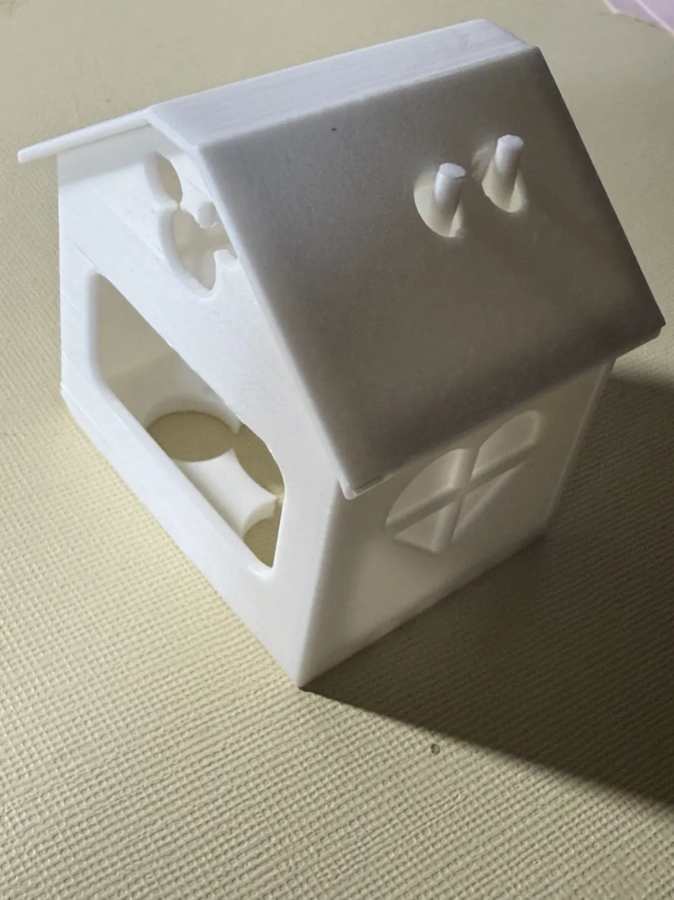
14.智能天气时钟把时间和天气放到桌面上。除了读时和查看预报，这只时钟也能通过实体按键翻页，断网后仍可依靠本地时钟走时。
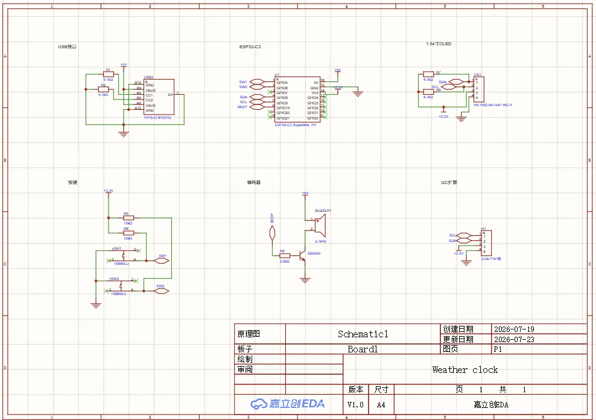


本项目是一款基于 ESP32-C3 的桌面智能天气时钟，集时间显示、天气预报、本地 RTC 走时、按键交互与趣味表情于一体。设备通过 Wi-Fi 联网获取精确时间和实时天气，同时板载 DS3231 高精度 RTC 模块，即使断网或断电，时间依然准确走时。OLED 屏幕常亮显示当前时间、日期、城市、天气状况与温度；用户可通过两个实体按键轻松切换页面，查看未来两天预报、风力风向等详细信息，还能进入图片模式，与可爱的小动画互动。
项目名称：智能天气时钟
mentor：骆佳静
本项目是一款基于 ESP32-C3 的桌面智能天气时钟，集时间显示、天气预报、本地 RTC 走时、按键交互与趣味表情于一体。设备通过 Wi-Fi 联网获取精确时间和实时天气，同时板载 DS3231 高精度 RTC 模块，即使断网或断电，时间依然准确走时。OLED 屏幕常亮显示当前时间、日期、城市、天气状况与温度；用户可通过两个实体按键轻松切换页面，查看未来两天预报、风力风向等详细信息，还能进入图片模式，与可爱的小动画互动。
- 时间显示：NTP 网络授时 + DS3231 本地 RTC 双保障，断网也能精准走时。
- 天气信息：实时获取温度、天气状况、湿度；支持查看未来两天预报、最高/最低温、风力风向。
- 按键交互：两个物理按键，一键循环切换主页、天气详情、未来两天预报。
- 趣味图片：内置笑脸、小花、猫咪三帧简笔画，按键切换，为桌面增添生机。
- 双时间源：NTP 定期校准 RTC，断网自动切换本地走时，时间永不丢失。
- 低成本的桌面伴侣：只需一块 ESP32-C3、OLED 屏、DS3231 和两个按键，即可实现功能完整的智能时钟。
- 可扩展：预留电池接口，可外接锂电池实现便携供电；PCB 已设计 Type-C 与电源管理电路。
---
本项目嵌入式代码基于 ESP32-C3 与 Arduino 框架，采用模块化设计，主要文件为 main.cpp 和 secrets.h。
核心模块包括：系统初始化、Wi-Fi 连接、时间管理（NTP 网络授时 + DS3231 本地 RTC）、天气数据获取（心知天气 API 与 JSON 解析）、OLED 多页面显示（U8g2 驱动 SSD1309，支持倒置）、双按键交互、趣味图片绘制及辅助函数。
启动时初始化外设、RTC 与 OLED，连接 Wi-Fi 后自动用 NTP 校准 RTC 并获取天气；若联网失败则使用 RTC 时间离线运行。
主循环中持续扫描按键实现页面切换与图片模式，每秒刷新时间显示，每 30 分钟刷新天气并同步 RTC。代码具备容错设计：断网时依靠 RTC 走时，API 失败保留上次数据，按键消抖防止误触。整体结构清晰，各模块协同工作，便于扩展与维护。
本项目原理图基于ESP32-C3 设计，包含主控、USB供电、OLED显示、按键、蜂鸣器及I2C扩展六个模块。主控采用ESP32-C3-MINI-1，负责整体控制与外设协调；Type-C接口仅用于5V供电，CC1/CC2通过5.1kΩ下拉，符合USB-C规范；OLED与I2C扩展共用I2C总线（GPIO8/9）；按键带10kΩ上拉和1kΩ限流电阻；蜂鸣器由S8050三极管驱动，并配有续流保护。
第一版打印模型没有考虑到PCB板的尺寸，导致无法正常放入PCB 板；第二版修改尺寸后顺利完成。
在本项目的开发过程中，我使用了DeepSeek、ChatGPT等作为技术咨询与代码调试的辅助手段
使用范围：
1. 代码编写与调试：在ESP32-C3的程序开发中，借助AI生成部分基础代码框架（如Wi-Fi连接、NTP授时、JSON解析、U8g2显示等），并就编译错误、I2C通信异常等问题向AI咨询排查思路。
2. 硬件设计咨询：在原理图设计、PCB布局、电池供电方案等方面，参考了AI给出的建议与注意事项。
所有AI生成的内容均经过我的理解、判断、验证与修改。代码在烧录后经过实际运行测试，硬件电路由我自行搭建、焊接与调试。
 15.伞下无贼
15.伞下无贼门口一排长得一样的伞，怎样认出自己的那把？团队设想把指纹识别装进伞柄，在拿错伞时发出提醒。
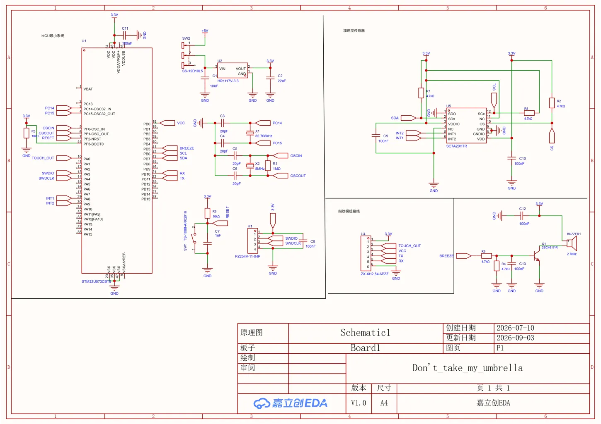

雨天最古老的悬案，不是谁偷了伞，而是——每个人都坚称自己拿错了。
门口那一排长得一模一样的伞，是人类最早的共享经济，也是最没有产权概念的角落。这个项目，就是给这把伞补上一张身份证。
伞柄里塞了一颗指纹传感器。按一下，比对：是主人，它就是一把普通的伞，安静、体面、不吭声；不是你，它会在替你尖叫，响到整层楼都回头看。
它能存 50 枚指纹——够一个宿舍，绝不够一整栋楼。
硬件上它也不是玩具：STM32U073 主控、ZW101 指纹模组、SC7A20 加速度计负责判断"伞被拿起来了"，再加一颗有源蜂鸣器，负责让对方社交性死亡。
这个项目不是一把锁，而是让"拿错伞"这件事，第一次需要解释。
项目名称：雨伞守卫者
mentor：夏俊劼
给我的伞加上指纹识别，在别人拿我的伞时触发报警，让他们社死，以此保卫我的雨伞。
现在因为尺寸问题，没有放到伞柄里面。只有一块张牙舞爪的板子。
---
没有打外壳，电路板努力缩小了，还是太大，无法放在雨伞的伞柄尺寸中
这个板子其实已经是第二版了，很努力地把元件之间的间距减小，但是还要走线，实在做不到
焊板子的时候也是花了一些时间，最开始使用电烙铁，后面发现0603用电烙铁太难了，还有一个封装在底下的芯片，选择用加热台，自己买了个小小的，结果到手一看自己有的充电头不支持PD协议，还要配个充电头，又去买。到手了，开始焊接了，其他的都很好解决，MCU有连锡了，嗯对的，我没开钢网，我那时候觉得几块板子不用开钢网，结果就是我唯一的MCU烧坏了，又去买又等物流。大部分的时间都花在物流上了。
还得迭代，还要努力把板子画小，现在在想着把丝印去掉
代码是用AI写的，然后自己在学习了电路相关知识之后，用AI帮助检查
心得：
1.买东西之前还要确认一些配套的内容，最好一次配齐；
2.买件的时候，最好多买个备份；
3.还要不断迭代。
4.不要想着卡DDL，总是有很多意外的，等物流最烦了。
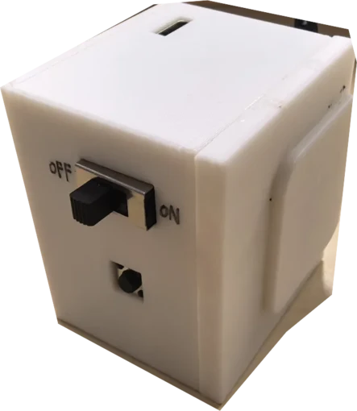
16.说开就开说一句话，舵机就替你拨动原来的墙壁开关。装置还支持实体操作和手机控制，滑轨外壳便于拆装。


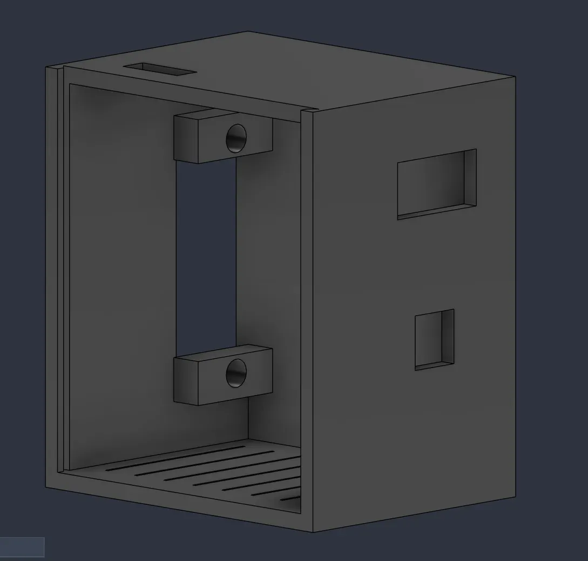
本项目是一款支持语音、实体与手机远程控制的智能墙壁开关装置，通过舵机模拟人手拨动开关，无需改动原有开关电路，即可为传统开关增添智能控制功能，让日常开关灯更加便捷。
装置以 ESP32-C3 Mini 为核心，结合 SU-03T 离线语音识别模块，实现语音指令识别、WiFi 手机端控制及扬声器语音回复。系统采用可充电锂电池供电，配备充电保护与升压模块，并结合定制 PCB 和 3D 打印外壳完成集成。外壳采用滑轨安装思路，便于拆装与维护。
项目经历了需求分析、电路设计、结构建模、焊接装配及故障排查等过程，在反复测试中逐步优化供电与机械结构。制作过程中借助 AI 辅助方案设计与迭代，并通过实际应用验证可行性，探索以较低成本转化为日常生活可用实物。
项目名称：说开就开
mentor：巩子杰
本项目是一款基于 ESP32-C3 和 su03T 的便捷墙壁开关控制器。系统通过 WiFi 手机端或离线语音模块或实体按钮接收控制指令，再由 ESP32-C3 控制 MG90 舵机通过拨杆模拟人手拨动墙壁开关，实现传统开关的远程控制与语音控制，从而满足了不需要改动原电路就能远程控制传统开关的需求。装置通过锂电池供电，也可以通过外接USB口充电。
---
下面对关键功能部分代码进行说明
功能说明：ESP32 上电后自动创建 WiFi 热点，无需依赖路由器，手机连接后即可访问控制网页。针对 SuperMini 板载天线较弱的问题，将发射功率设为 8.5dBm，保证热点能被手机稳定搜索到。
主要代码：
C++
// 热点参数配置
const char* AP_SSID = "ESP32-Servo"; // 热点名称
// setup() 中执行：
WiFi.mode(WIFI_AP); // 切换到热点模式
if (!WiFi.softAP(AP_SSID, AP_PASSWORD)) { // 创建热点
Serial.println("AP create FAILED!");
}
WiFi.setTxPower(AP_TX_POWER); // 设置发射功率
功能说明：MG90 舵机由 PWM 信号驱动，角度范围 0°~180°。程序定义三个关键位置：中位、开灯位、反向位。执行开灯 / 关灯动作时，舵机先转到目标位置，停留 0.5 秒后自动回到中位。servoForward() 和 servoBackward() 封装了完整动作流程，供三种控制方式共用。
主要代码：
C++
// 引脚与角度定义
// 初始化：绑定引脚并回中位
myServo.attach(SERVO_PIN);
myServo.write(ANGLE_CENTER);
// 开灯动作：转到开灯位 → 停 0.5s → 回中位
void servoForward() {
myServo.write(ANGLE_FORWARD);
delay(HOLD_MS);
myServo.write(ANGLE_CENTER);
}
// 关灯动作同理：转到反向位 → 停 0.5s → 回中位
void servoBackward() {
myServo.write(ANGLE_BACKWARD);
delay(HOLD_MS);
myServo.write(ANGLE_CENTER);
}
功能说明：语音识别模块与 ESP32 通过 UART 通信（9600bps、8 数据位、无校验、1 停止位；RX=GPIO20、TX=GPIO21）。模块识别到口令后发送5字节固定帧，程序在 loop() 中用状态机逐字节接收并校验，帧头与帧尾全部匹配才判定为有效指令，可抵抗干扰、避免误触发。
主要代码：
C++
// 初始化串口
Serial1.begin(9600, SERIAL_8N1, VOICE_RX, VOICE_TX);
// loop() 中的帧校验状态机（节选）
switch (rxIndex) {
case 0: // 校验帧头1
if (byte == FRAME_HEAD1) { rxBuf[0] = byte; rxIndex = 1; }
break;
case 1: // 校验帧头2（失败则回退，防止丢帧）
if (byte == FRAME_HEAD2) { rxBuf[1] = byte; rxIndex = 2; }
else if (byte == FRAME_HEAD1) { rxBuf[0] = byte; rxIndex = 1; }
else { rxIndex = 0; }
break;
// case 2 存指令字节，case 3、4 依次校验帧尾……
}
// 收到完整帧后按指令字节执行动作
switch (rxBuf[2]) {
case CMD_FORWARD: servoForward(); break; // 0x01 开灯
case CMD_BACKWARD: servoBackward(); break; // 0x02 关灯
}
主要代码：
C++
// 注册路由：请求路径 → 处理函数
server.on("/", handleRoot); // 控制页面
server.on("/forward", handleForward); // 开灯
server.on("/backward", handleBackward); // 关灯
server.on("/center", handleCenter); // 回中位
server.on("/set", handleSet); // 滑块：指定角度
server.begin();
// 处理函数示例：开灯
void handleForward() {
servoForward();
server.send(200, "text/plain", "✅ 正转，已回中位");
}
// 滑块处理：解析角度并直接转动舵机
void handleSet() {
if (server.hasArg("angle")) {
int angle = server.arg("angle").toInt();
if (angle < 0) angle = 0; // 限制范围 0~180
if (angle > 180) angle = 180;
myServo.write(angle);
server.send(200, "text/plain", String("OK angle=") + angle);
} else {
server.send(400, "text/plain", "Missing angle");
}
}
功能说明：外接按钮用于在舵机挡住开关时手动切换状态：每按一次在"开灯 ↔ 关灯"之间切换一次。程序采用软件防抖：电平变化后持续 50ms 保持稳定才判定为有效按压，且只在按下瞬间触发一次，避免抖动或长按造成重复触发。
主要代码：
C++
pinMode(BUTTON_PIN, INPUT_PULLUP); // 内部上拉，按下为低电平
void handleButton() {
bool btnNow = digitalRead(BUTTON_PIN);
// 电平变化 → 记录时间，开始防抖计时
if (btnNow != btnLastState) { lastDebounce = millis(); btnLastState = btnNow; }
// 电平稳定超过 50ms → 判定为有效变化
if ((millis() - lastDebounce) > DEBOUNCE_MS) {
if (btnNow == LOW && !btnTriggered) { // 按下瞬间
btnTriggered = true; // 标记已触发，防止长按重复触发
toggleForward = !toggleForward; // 切换开 / 关状态
if (toggleForward) servoForward();
else servoBackward();
}
if (btnNow == HIGH) btnTriggered = false; // 松开后允许下一次触发
}
}
---
整体电路设计思路其实非常明确，“ESP32”和“语音模块”的部分为排针负责外接对应模块实现相应功能；“按钮”作为代替实体替代原开关以应对远程控制方案暂时失效的情况；“舵机”“麦克风接口”“喇叭接口”和对应外设连接实现主要功能；“电源排针”负责和锂电池连接供电；“滑动总开关”负责PCB 5V总线的通断
---
总体框架展示
其中：
- 1孔为pcb滑动开关的预留孔，用于控制pcb通电的开断；
- 2孔为实体替代按钮的预留孔，可以直接控制舵机；
- 3孔为充电模块的type-c预留口，用于给锂电池充电；
- 4孔为舵机预留口，舵机从此处伸出与外接交互，两个圆孔为热熔螺母预留口用于固定舵机；
- 5处多条细长隙口用于辅助内部散热，同时有助于与语音模块麦克风和喇叭的声音交互
开口处滑槽展示
滑槽用于和下方盖板配合，方便打开与封闭，利于实现内部器件的装配与后续调试优化
盖板展示
上方凹槽提供着力点便于将盖板拉出
独立滑槽展示
下平面通过胶粘固定在主框架后面，滑槽部分可以和底座上的滑槽配合，用于方便将装置从墙上拆装
底座宽面通过胶粘固定在开关旁，尽可能小地对墙体产生影响，较窄面与独立滑槽配合
不同部分配合动画展示
本次项目设计主要经历过以下几项调试与迭代：
1. 打印过程如何处理出现大量悬空又不想加支撑的情况
此前思路主要是调整打印方向，在本次项目中get到两个新tips：一是通过调整打印参数比如流量来使悬空处变形尽可能小；二是将打印对象分割成多个方便打印的实体，这也是本次项目采取的方法
2. 配合公差调整
这个感觉没什么好方法，只能是多打多调，试出最佳的配合公差，本项目主要是对孔洞和滑槽配合处的公差做了较多调整迭代
主要是在供电端的调试：
本次项目pcb供电端出现过两次问题，一是无法通过type-c线经tp4056给锂电池供电，这个大概率是C口内配置不匹配问题，换根普通的（非快充）线就ok了；二是通过稳压电源接电源排针无法给pcb正常供电，但是通过锂电池经排针或直接给esp32供电又功能正常，主要是逐步排查问题点，通过万用表测量，尝试过补电容、补焊等过程，最后换了个稳压电源（其实一直没排查到这个点误打误撞碰上的）就没问题了，应该是电源到排针这一块接触不良的问题；
另外针对500mah锂电池0.5C的推荐充电电流，通过阅读数据手册对购买的tp4056上的相关电阻进行了更换调整了最大充电电流从而延长电池的使用寿命
1. 手机远程控制esp32的方案有过多种尝试，但考虑到校网环境与稳定性最终还是考虑esp32自身创造路由热点供手机连接，但该方案也出现了手机找不到热点名称的情况，经过查找资料最终在B站找到了解决方案调大了发射功率解决了问题
2. 另外因为购买的主控板esp32c3supermini属于比较特殊的板子，所以在platformio的板子型号选取和引脚选择上也做了比较多的调查与实践最终确认了能够正确映射的型号
使用ai：claude接deepseek、codex
主要用途：
如项目介绍文档嵌入式部分介绍的完成：
该项目中的网页设计代码不是此项目重点，故主要由ai负责完成
以及在春夏学期已尝试过的按钮防抖功能代码的实现也会选择交由ai完成
心得：
通过本项目，主要对项目式设计有了更加系统的认识，积累了从需求分析、方案设计、结构建模、电路制作到实物测试的完整思路和经验。在实际制作过程中，遇到了千奇百怪的问题，通过查阅资料、借助 AI 分析、询问学长并反复测试，逐步定位原因并完善方案。这一过程提升了我的耐心、问题分析能力和迭代改进能力，同时项目推进的过程也让我深刻感受到如今 AI 工具的强大，它极大降低了学习和 DIY 实践的成本。但与此同时，一个有创意的idea、独立判断能力和批判性思维也变得更加重要，只有对 AI 提供的建议进行分析、验证和取舍，才能真正将其转化为可靠的项目成果。
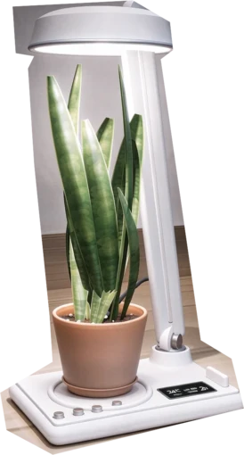
17.室内自动绿植养护装置本项目是一套基于ESP32开发的全自动智能植物养护设备，面向家庭盆栽自动化养护场景。系统集成定时浇水、周期循环浇水、定时补光、水位缺水报警、参数可视化设置功能。设备完成首次网络对时之后，日常运行完全关闭WiFi，依靠硬件时钟计时，全部配置参数断电保存，实现无人值守自动养护植物。


项目名称：室内绿植自动养护装置
mentor：黄千格
基础功能
1. 定时定量浇水：支持用户自定义设置浇水间隔、每日浇水时刻和单次水泵工作时长。
2. 定时补光：支持LED灯条定时自动开关，模拟自然日照，避免绿植徒长。 设置白光与红蓝光两种光照模式，每个模式有三种亮度可调。
3. 过流保护：短路或电流过大时保险丝熔断，避免烧坏。
4. 水位监测：水位过低时自动提醒补水。
5. 用户友好交互：通过按键设置参数并在OLED上显示（如当前时间、浇水参数，光照参数等）。
---
C++
const char *WIFI_SSID = "Selina Mate70pro";
const char *WIFI_PASSWORD = "12345678";
constexpr uint8_t RTC_IO = 17, RTC_SCLK = 18, RTC_CE = 16;
constexpr uint8_t PUMP_PIN = 23, LED_WHITE_1 = 25, LED_RED_BLUE = 26, LED_WHITE_2 = 27;
constexpr uint8_t SENSOR_POWER = 14, SENSOR_ADC = 32;
constexpr uint8_t KEY1 = 36, KEY2 = 34, KEY3 = 39, KEY4 = 35;
constexpr uint32_t LONG_PRESS_MS = 2000;
ThreeWire rtcWire(RTC_IO, RTC_SCLK, RTC_CE);
RtcDS1302<ThreeWire> rtc(rtcWire);
Adafruit_SSD1306 display(128, 64, &Wire, -1);
Preferences prefs;
struct Settings { uint8_t mode = 0, t1 = 8, t2 = 20, interval = 6, pumpHalfSeconds = 6, ledOn = 8, ledOff = 20, ledMode = 0, brightness = 60; } settings;
struct Button {
uint8_t pin;
bool raw, stable;
bool eventPending;
uint32_t changedAt, pressedAt, releasedDuration;
explicit Button(uint8_t buttonPin) : pin(buttonPin), raw(HIGH), stable(HIGH), eventPending(false), changedAt(0), pressedAt(0), releasedDuration(0) {}
};
Button buttons[] = {Button(KEY1), Button(KEY2), Button(KEY3), Button(KEY4)};
enum Page { HOME, FIXED_PAGE, INTERVAL_PAGE, PUMP_PAGE, LED_PAGE, SLEEP_PAGE };
Page page = HOME;
tm cachedTime{};
bool rtcValid = false, lowWater = false, rtcSet = false, pumpRunning = false, sensorSampling = false, syncInProgress = false, syncFailed = false;
uint32_t lastRtcRead = 0, lastDisplay = 0, pumpStarted = 0, pumpDurationMs = 0, sensorPoweredAt = 0, intervalStartEpoch = 0;
uint8_t fixedRunDay = 255, fixedRunMask = 0, sampleHour = 255, pendingEvents = 0;
void saveSettings() { prefs.begin("plant", false); prefs.putBytes("settings", &settings, sizeof(settings)); prefs.putULong("intervalStart", intervalStartEpoch); prefs.end(); }
void loadSettings() { prefs.begin("plant", true); if (prefs.getBytesLength("settings") == sizeof(settings)) prefs.getBytes("settings", &settings, sizeof(settings)); intervalStartEpoch = prefs.getULong("intervalStart", 0); rtcSet = prefs.getBool("rtc_is_set", false); prefs.end(); }
bool validDate(const RtcDateTime &value) { return value.Year() >= 2020 && value.Year() <= 2099 && value.Month() >= 1 && value.Month() <= 12; }
uint32_t epochNow() { return rtcValid ? mktime(&cachedTime) : 0; }
void readRtc() {
RtcDateTime value = rtc.GetDateTime(); rtcValid = validDate(value);
if (!rtcValid) { Serial.println("RTC date invalid"); return; }
cachedTime = {}; cachedTime.tm_year = value.Year() - 1900; cachedTime.tm_mon = value.Month() - 1; cachedTime.tm_mday = value.Day(); cachedTime.tm_hour = value.Hour(); cachedTime.tm_min = value.Minute(); cachedTime.tm_sec = value.Second();
if (cachedTime.tm_hour == 0 && cachedTime.tm_min == 0 && cachedTime.tm_sec == 0) { fixedRunMask = 0; sampleHour = 255; }
}
void switchWifiOff() { WiFi.disconnect(true); WiFi.mode(WIFI_OFF); }
bool syncNtp() {
syncInProgress = true; syncFailed = false; display.clearDisplay(); display.setCursor(0, 0); display.print("TIME SYNC..."); display.display(); WiFi.mode(WIFI_STA); WiFi.begin(WIFI_SSID, WIFI_PASSWORD); uint32_t started = millis();
while (WiFi.status() != WL_CONNECTED && millis() - started < 15000) yield(); bool success = false;
if (WiFi.status() == WL_CONNECTED) { configTime(0, 0, "pool.ntp.org", "time.nist.gov"); started = millis(); tm networkTime{}; while (millis() - started < 15000 && !getLocalTime(&networkTime, 100)) yield(); if (networkTime.tm_year >= 120 && networkTime.tm_year <= 199) { rtc.SetDateTime(RtcDateTime(networkTime.tm_year + 1900, networkTime.tm_mon + 1, networkTime.tm_mday, networkTime.tm_hour, networkTime.tm_min, networkTime.tm_sec)); prefs.begin("plant", false); prefs.putBool("rtc_is_set", true); prefs.end(); rtcSet = true; success = true; readRtc(); } }
switchWifiOff(); syncInProgress = false; syncFailed = !success; Serial.println(success ? "NTP sync OK" : "NTP sync failed"); return success;
}
void pwm(uint8_t pin, uint8_t value) { analogWrite(pin, value); }
void stopOutputs() { pwm(PUMP_PIN, 0); pwm(LED_WHITE_1, 0); pwm(LED_RED_BLUE, 0); pwm(LED_WHITE_2, 0); digitalWrite(SENSOR_POWER, LOW); pumpRunning = false; sensorSampling = false; }
void startPump() { if (pumpRunning · · page == SLEEP_PAGE) return; pumpRunning = true; pumpStarted = millis(); pumpDurationMs = uint32_t(settings.pumpHalfSeconds) * 500; pwm(PUMP_PIN, 255); }
void updateButtons() {
uint32_t now = millis(); pendingEvents = 0;
for (uint8_t i = 0; i < 4; ++i) { Button &button = buttons[i]; bool reading = digitalRead(button.pin); if (reading != button.raw) { button.raw = reading; button.changedAt = now; } if (now - button.changedAt >= 20 && reading != button.stable) { button.stable = reading; if (reading == LOW) button.pressedAt = now; else { button.releasedDuration = now - button.pressedAt; button.eventPending = true; pendingEvents · = 1 << i; } } }
}
bool shortEvent(uint8_t index) { return buttons[index].eventPending && buttons[index].releasedDuration < LONG_PRESS_MS; }
bool longEvent(uint8_t index) { return buttons[index].eventPending && buttons[index].releasedDuration >= LONG_PRESS_MS; }
void clearButtonEvents() { for (Button &button : buttons) button.eventPending = false; pendingEvents = 0; }
bool waitingForCombo(uint8_t first, uint8_t second) {
return (longEvent(first) && buttons[second].stable == LOW) · · (longEvent(second) && buttons[first].stable == LOW);
}
void handleKeys() {
if (page == SLEEP_PAGE) { if (longEvent(0)) { page = HOME; clearButtonEvents(); } return; }
bool comboSync = longEvent(0) && longEvent(3), comboInterval = longEvent(1) && longEvent(2);
if (page == HOME) {
if (comboSync) { syncNtp(); clearButtonEvents(); return; }
if (comboInterval) { page = INTERVAL_PAGE; clearButtonEvents(); return; }
if (waitingForCombo(0, 3) · · waitingForCombo(1, 2)) return;
if (longEvent(0)) { page = SLEEP_PAGE; stopOutputs(); clearButtonEvents(); return; }
if (longEvent(1)) page = FIXED_PAGE; else if (longEvent(2)) page = PUMP_PAGE; else if (longEvent(3)) page = LED_PAGE;
}
else if (page == FIXED_PAGE) { if (shortEvent(1)) settings.t1 = (settings.t1 + 1) % 24; if (shortEvent(2)) settings.t2 = (settings.t2 + 1) % 24; if (longEvent(1)) { settings.mode = 0; saveSettings(); page = HOME; } }
else if (page == INTERVAL_PAGE) { if (shortEvent(1)) settings.interval = settings.interval >= 23 ? 1 : settings.interval + 1; if (shortEvent(2) && settings.interval > 1) --settings.interval; if (longEvent(1)) { settings.mode = 1; intervalStartEpoch = epochNow(); saveSettings(); page = HOME; } }
else if (page == PUMP_PAGE) { if (shortEvent(1) && settings.pumpHalfSeconds < 20) ++settings.pumpHalfSeconds; if (shortEvent(2) && settings.pumpHalfSeconds > 1) --settings.pumpHalfSeconds; if (longEvent(2)) { saveSettings(); page = HOME; } }
else if (page == LED_PAGE) { if (shortEvent(1)) settings.ledMode = !settings.ledMode; if (shortEvent(0)) settings.brightness = settings.brightness == 30 ? 60 : settings.brightness == 60 ? 100 : 30; if (shortEvent(2)) settings.ledOn = (settings.ledOn + 1) % 24; if (shortEvent(3)) settings.ledOff = (settings.ledOff + 1) % 24; if (longEvent(3)) { saveSettings(); page = HOME; } }
clearButtonEvents();
}
bool inLedWindow() { if (settings.ledOn == settings.ledOff) return true; return settings.ledOn < settings.ledOff ? cachedTime.tm_hour >= settings.ledOn && cachedTime.tm_hour < settings.ledOff : cachedTime.tm_hour >= settings.ledOn · · cachedTime.tm_hour < settings.ledOff; }
void runLed() { if (page == SLEEP_PAGE · · !rtcValid · · !inLedWindow()) { pwm(LED_WHITE_1, 0); pwm(LED_RED_BLUE, 0); pwm(LED_WHITE_2, 0); return; } uint8_t value = settings.brightness * 255 / 100; pwm(LED_WHITE_1, settings.ledMode ? 0 : value); pwm(LED_WHITE_2, settings.ledMode ? 0 : value); pwm(LED_RED_BLUE, settings.ledMode ? value : 0); }
void runWaterSampling() { if (page == SLEEP_PAGE · · !rtcValid) return; if (!sensorSampling && (cachedTime.tm_hour == 8 · · cachedTime.tm_hour == 20) && cachedTime.tm_min == 0 && cachedTime.tm_sec == 0 && sampleHour != cachedTime.tm_hour) { sampleHour = cachedTime.tm_hour; sensorSampling = true; sensorPoweredAt = millis(); digitalWrite(SENSOR_POWER, HIGH); } if (sensorSampling && millis() - sensorPoweredAt >= 100) { lowWater = analogRead(SENSOR_ADC) < 500; digitalWrite(SENSOR_POWER, LOW); sensorSampling = false; } }
void runWatering() { if (page == SLEEP_PAGE · · !rtcValid) return; if (pumpRunning) { if (millis() - pumpStarted >= pumpDurationMs) { pwm(PUMP_PIN, 0); pumpRunning = false; } return; } if (settings.mode == 0 && cachedTime.tm_min == 0 && cachedTime.tm_sec == 0) { if (fixedRunDay != cachedTime.tm_yday) { fixedRunDay = cachedTime.tm_yday; fixedRunMask = 0; } if (cachedTime.tm_hour == settings.t1 && !(fixedRunMask & 1)) { fixedRunMask · = 1; startPump(); } if (cachedTime.tm_hour == settings.t2 && !(fixedRunMask & 2)) { fixedRunMask · = 2; startPump(); } } else if (settings.mode == 1 && intervalStartEpoch && epochNow() >= intervalStartEpoch + uint32_t(settings.interval) * 3600) { intervalStartEpoch = epochNow(); saveSettings(); startPump(); } }
void drawScreen() {
if (millis() - lastDisplay < 250) return; lastDisplay = millis(); display.clearDisplay(); display.setTextSize(1); display.setTextColor(SSD1306_WHITE); display.setCursor(0, 0);
if (syncInProgress) display.print("TIME SYNC..."); else if (syncFailed) display.print("TIME SYNC FAIL"); else if (!rtcValid) display.print("RTC INVALID"); else { char line[24]; snprintf(line, sizeof(line), "%04d-%02d-%02d %02d:%02d", cachedTime.tm_year + 1900, cachedTime.tm_mon + 1, cachedTime.tm_mday, cachedTime.tm_hour, cachedTime.tm_min); display.print(line); }
if (page == SLEEP_PAGE) { display.display(); return; }
display.setCursor(0, 16); if (page == FIXED_PAGE) { display.print("FIXED T1:"); display.print(settings.t1); display.print(" T2:"); display.print(settings.t2); } else if (page == INTERVAL_PAGE) { display.print("INTERVAL:"); display.print(settings.interval); display.print("h"); } else if (page == PUMP_PAGE) { display.print("PUMP:"); display.print(settings.pumpHalfSeconds / 2); display.print(settings.pumpHalfSeconds % 2 ? ".5s" : ".0s"); } else if (page == LED_PAGE) { display.print("LED ON:"); display.print(settings.ledOn); display.print(" OFF:"); display.print(settings.ledOff); } else { display.print(settings.mode ? "INT " : "FIX "); display.print(settings.mode ? settings.interval : settings.t1); display.print("h P:"); display.print(settings.pumpHalfSeconds / 2); display.print(settings.pumpHalfSeconds % 2 ? ".5s" : ".0s"); display.setCursor(0, 32); display.print("LED "); display.print(settings.ledOn); display.print("-"); display.print(settings.ledOff); display.print(settings.ledMode ? " RB " : " WH "); display.print(settings.brightness); display.print("%"); display.setCursor(0, 48); if (lowWater) display.print("LOW WATER WARNING"); } display.display();
}
void setup() { Serial.begin(115200); pinMode(PUMP_PIN, OUTPUT); pinMode(LED_WHITE_1, OUTPUT); pinMode(LED_RED_BLUE, OUTPUT); pinMode(LED_WHITE_2, OUTPUT); pinMode(SENSOR_POWER, OUTPUT); digitalWrite(SENSOR_POWER, LOW); for (Button &button : buttons) pinMode(button.pin, INPUT); Wire.begin(21, 22); display.begin(SSD1306_SWITCHCAPVCC, 0x3C); display.clearDisplay(); display.display(); rtc.Begin(); loadSettings(); readRtc(); if (!rtcSet) syncNtp(); else switchWifiOff(); }
void loop() { updateButtons(); handleKeys(); if (millis() - lastRtcRead >= 1000) { lastRtcRead = millis(); readRtc(); } runWaterSampling(); runWatering(); runLed(); drawScreen(); }
- Settings：所有可配置参数（浇水模式、时间点、间隔、泵时长、LED参数）
- Preferences save/load：参数与 rtc_is_set、intervalStartEpoch 掉电保存
- readRtc()：每秒从 DS1302 取时间并缓存到 cachedTime，所有业务只用缓存
- syncNtp()：开 WiFi → NTP → 合法则写 DS1302 和 rtc_is_set=true → 无论成败都关 WiFi
- updateButtons()：20ms 非阻塞消抖，生成短按/长按事件基础数据
- handleKeys()：页面切换、参数修改、组合键功能（NTP同步/进入间隔设置）
- runWaterSampling()：08:00 / 20:00 上电采样一次，ADC<500 置缺水，状态保持到下次采样
- runWatering()：
- 定点模式：T1/T2 整点触发，单日防重复
- 间隔模式：从保存时刻起每 N 小时触发
- runLed()：按开关灯时间窗决定是否点亮，模式控制白光/红蓝，亮度按百分比映射 PWM
- drawScreen()：根据页面显示时间、配置、告警、同步状态
- SLEEP_PAGE：软件休眠，停业务，仅显示第一行时间，长按 SW1 退出
C++
*// ========================= 用户配置 =========================*
const char *WIFI_SSID = "Selina Mate70pro";
const char *WIFI_PASSWORD = "12345678";
*// DS1302*
constexpr uint8_t RTC_IO = 17, RTC_SCLK = 18, RTC_CE = 16;
*// 输出*
constexpr uint8_t PUMP_PIN = 23;
constexpr uint8_t LED_WHITE_1 = 25;
constexpr uint8_t LED_RED_BLUE = 26;
constexpr uint8_t LED_WHITE_2 = 27;
*// 水位传感器*
constexpr uint8_t SENSOR_POWER = 14;
constexpr uint8_t SENSOR_ADC = 32;
*// 按键（SW1~SW4）*
constexpr uint8_t KEY1 = 36;* // SW1*
constexpr uint8_t KEY2 = 34;* // SW2*
constexpr uint8_t KEY3 = 39;* // SW3*
constexpr uint8_t KEY4 = 35;* // SW4*
constexpr uint32_t LONG_PRESS_MS = 2000;
*// OLED*
Adafruit_SSD1306 display(128, 64, &Wire, -1);
*// RTC*
ThreeWire rtcWire(RTC_IO, RTC_SCLK, RTC_CE);
RtcDS1302<ThreeWire> rtc(rtcWire);
*// NVS*
Preferences prefs;
*// ========================= PWM(LEDC) =========================*
constexpr uint8_t CH_PUMP = 0;
constexpr uint8_t CH_W1 = 1;
constexpr uint8_t CH_RB = 2;
constexpr uint8_t CH_W2 = 3;
void pwmInit() {
ledcSetup(CH_PUMP, 5000, 8);
ledcSetup(CH_W1, 5000, 8);
ledcSetup(CH_RB, 5000, 8);
ledcSetup(CH_W2, 5000, 8);
ledcAttachPin(PUMP_PIN, CH_PUMP);
ledcAttachPin(LED_WHITE_1, CH_W1);
ledcAttachPin(LED_RED_BLUE, CH_RB);
ledcAttachPin(LED_WHITE_2, CH_W2);
}
void pwm(uint8_t pin, uint8_t value) {
if (pin == PUMP_PIN) ledcWrite(CH_PUMP, value);
else if (pin == LED_WHITE_1) ledcWrite(CH_W1, value);
else if (pin == LED_RED_BLUE) ledcWrite(CH_RB, value);
else if (pin == LED_WHITE_2) ledcWrite(CH_W2, value);
}
*// ========================= 数据结构 =========================*
struct Settings {
uint8_t mode = 0;* // 0=定点，1=间隔*
uint8_t t1 = 8;* // 定点1小时*
uint8_t t2 = 20;* // 定点2小时*
uint8_t interval = 6;* // 间隔小时(1~23)*
uint8_t pumpHalfSeconds = 6;* // 0.5s步进，范围1~20 => 0.5~10.0s*
uint8_t ledOn = 8;
uint8_t ledOff = 20;
uint8_t ledMode = 0;* // 0=白光(1+3), 1=红蓝(2)*
uint8_t brightness = 60;* // 30/60/100*
} settings;
struct Button {
uint8_t pin;
bool raw, stable;
bool eventPending;
bool longReported;* // 防止按住时重复触发*
uint32_t changedAt, pressedAt, releasedDuration;
explicit Button(uint8_t p)
: pin(p), raw(HIGH), stable(HIGH), eventPending(false), longReported(false),
changedAt(0), pressedAt(0), releasedDuration(0) {}
};
Button buttons[] = { Button(KEY1), Button(KEY2), Button(KEY3), Button(KEY4) };
enum Page { HOME, FIXED_PAGE, INTERVAL_PAGE, PUMP_PAGE, LED_PAGE, SLEEP_PAGE };
Page page = HOME;
*// ========================= 全局状态 =========================*
tm cachedTime{};
bool rtcValid = false;
bool rtcSet = false;
bool lowWater = false;
bool pumpRunning = false;
bool sensorSampling = false;
bool syncInProgress = false;
bool syncFailed = false;
uint32_t lastRtcRead = 0;
uint32_t lastDisplay = 0;
uint32_t pumpStarted = 0;
uint32_t pumpDurationMs = 0;
uint32_t sensorPoweredAt = 0;
uint32_t intervalStartEpoch = 0;
uint16_t fixedRunDay = 65535;* // tm_yday: 0~365*
uint8_t fixedRunMask = 0;* // bit0=t1, bit1=t2*
uint8_t sampleHour = 255;* // 防同一采样点重复*
uint8_t pendingEvents = 0;
*// ========================= 工具函数 =========================*
bool validDate(const RtcDateTime &v) {
return v.Year() >= 2020 && v.Year() <= 2099 &&
v.Month() >= 1 && v.Month() <= 12 &&
v.Day() >= 1 && v.Day() <= 31;
}
uint32_t epochNow() {
if (!rtcValid) return 0;
tm t = cachedTime;
return (uint32_t)mktime(&t);
}
void saveSettings() {
prefs.begin("plant", false);
prefs.putBytes("settings", &settings, sizeof(settings));
prefs.putULong("intervalStart", intervalStartEpoch);
prefs.end();
}
void loadSettings() {
prefs.begin("plant", true);
if (prefs.getBytesLength("settings") == sizeof(settings)) {
prefs.getBytes("settings", &settings, sizeof(settings));
}
intervalStartEpoch = prefs.getULong("intervalStart", 0);
rtcSet = prefs.getBool("rtc_is_set", false);
prefs.end();
* // 保护边界*
if (settings.interval < 1) settings.interval = 1;
if (settings.interval > 23) settings.interval = 23;
if (settings.pumpHalfSeconds < 1) settings.pumpHalfSeconds = 1;
if (settings.pumpHalfSeconds > 20) settings.pumpHalfSeconds = 20;
if (!(settings.brightness == 30 · · settings.brightness == 60 · · settings.brightness == 100)) {
settings.brightness = 60;
}
settings.t1 %= 24;
settings.t2 %= 24;
settings.ledOn %= 24;
settings.ledOff %= 24;
settings.ledMode = settings.ledMode ? 1 : 0;
settings.mode = settings.mode ? 1 : 0;
}
void readRtc() {
RtcDateTime v = rtc.GetDateTime();
rtcValid = validDate(v);
if (!rtcValid) {
Serial.println("RTC date invalid");
return;
}
cachedTime = {};
cachedTime.tm_year = v.Year() - 1900;
cachedTime.tm_mon = v.Month() - 1;
cachedTime.tm_mday = v.Day();
cachedTime.tm_hour = v.Hour();
cachedTime.tm_min = v.Minute();
cachedTime.tm_sec = v.Second();
mktime(&cachedTime);* // 刷新tm_yday等字段*
* // 每天零点重置防重复标记*
if (cachedTime.tm_hour == 0 && cachedTime.tm_min == 0 && cachedTime.tm_sec == 0) {
fixedRunMask = 0;
sampleHour = 255;
}
}
void switchWifiOff() {
WiFi.disconnect(true);
WiFi.mode(WIFI_OFF);
}
bool syncNtp() {
syncInProgress = true;
syncFailed = false;
display.clearDisplay();
display.setTextSize(1);
display.setTextColor(SSD1306_WHITE);
display.setCursor(0, 0);
display.print("TIME SYNC...");
display.display();
WiFi.mode(WIFI_STA);
WiFi.begin(WIFI_SSID, WIFI_PASSWORD);
uint32_t started = millis();
while (WiFi.status() != WL_CONNECTED && millis() - started < 15000) {
delay(2);
}
bool success = false;
if (WiFi.status() == WL_CONNECTED) {
configTime(0, 0, "pool.ntp.org", "time.nist.gov");
tm netTime{};
started = millis();
while (millis() - started < 15000) {
if (getLocalTime(&netTime, 100)) break;
delay(2);
}
if (netTime.tm_year >= 120 && netTime.tm_year <= 199) {* // 2020~2099*
rtc.SetDateTime(RtcDateTime(
netTime.tm_year + 1900,
netTime.tm_mon + 1,
netTime.tm_mday,
netTime.tm_hour,
netTime.tm_min,
netTime.tm_sec
));
prefs.begin("plant", false);
prefs.putBool("rtc_is_set", true);
prefs.end();
rtcSet = true;
readRtc();
success = true;
}
}
switchWifiOff();
syncInProgress = false;
syncFailed = !success;
Serial.println(success ? "NTP sync OK" : "NTP sync failed");
return success;
}
void stopOutputs() {
pwm(PUMP_PIN, 0);
pwm(LED_WHITE_1, 0);
pwm(LED_RED_BLUE, 0);
pwm(LED_WHITE_2, 0);
digitalWrite(SENSOR_POWER, LOW);
pumpRunning = false;
sensorSampling = false;
}
void startPump() {
if (pumpRunning · · page == SLEEP_PAGE) return;
pumpRunning = true;
pumpStarted = millis();
pumpDurationMs = (uint32_t)settings.pumpHalfSeconds * 500UL;
pwm(PUMP_PIN, 255);
}
*// ========================= 按键 =========================*
void updateButtons() {
uint32_t now = millis();
pendingEvents = 0;
for (uint8_t i = 0; i < 4; ++i) {
Button &b = buttons[i];
bool reading = digitalRead(b.pin);
if (reading != b.raw) {
b.raw = reading;
b.changedAt = now;
}
if ((now - b.changedAt >= 20) && (reading != b.stable)) {
b.stable = reading;
if (reading == LOW) {
b.pressedAt = now;
b.longReported = false;
} else {
b.releasedDuration = now - b.pressedAt;
b.eventPending = true;
pendingEvents · = (1U << i);
}
}
}
}
bool shortEvent(uint8_t idx) {
return buttons[idx].eventPending && buttons[idx].releasedDuration < LONG_PRESS_MS;
}
bool longEventRelease(uint8_t idx) {
return buttons[idx].eventPending && buttons[idx].releasedDuration >= LONG_PRESS_MS;
}
bool isHeldLong(uint8_t idx, uint32_t now) {
return buttons[idx].stable == LOW && (now - buttons[idx].pressedAt >= LONG_PRESS_MS);
}
void clearButtonEvents() {
for (auto &b : buttons) b.eventPending = false;
pendingEvents = 0;
}
void handleKeys() {
uint32_t now = millis();
* // 休眠页：仅响应SW1长按退出*
if (page == SLEEP_PAGE) {
if (isHeldLong(0, now) && !buttons[0].longReported) {
buttons[0].longReported = true;
page = HOME;
clearButtonEvents();
}
return;
}
* // 主界面组合键（按住达到2s即触发）*
if (page == HOME) {
bool comboSync = isHeldLong(0, now) && isHeldLong(3, now);* // SW1+SW4*
bool comboInt = isHeldLong(1, now) && isHeldLong(2, now);* // SW2+SW3*
if (comboSync && !(buttons[0].longReported · · buttons[3].longReported)) {
buttons[0].longReported = buttons[3].longReported = true;
syncNtp();
clearButtonEvents();
return;
}
if (comboInt && !(buttons[1].longReported · · buttons[2].longReported)) {
buttons[1].longReported = buttons[2].longReported = true;
page = INTERVAL_PAGE;
clearButtonEvents();
return;
}
* // 单键长按（主界面）*
if (isHeldLong(0, now) && !buttons[0].longReported) {* // SW1*
buttons[0].longReported = true;
page = SLEEP_PAGE;
stopOutputs();
clearButtonEvents();
return;
}
if (isHeldLong(1, now) && !buttons[1].longReported) {* // SW2*
buttons[1].longReported = true;
page = FIXED_PAGE;
clearButtonEvents();
return;
}
if (isHeldLong(2, now) && !buttons[2].longReported) {* // SW3*
buttons[2].longReported = true;
page = PUMP_PAGE;
clearButtonEvents();
return;
}
if (isHeldLong(3, now) && !buttons[3].longReported) {* // SW4*
buttons[3].longReported = true;
page = LED_PAGE;
clearButtonEvents();
return;
}
}
else if (page == FIXED_PAGE) {
* // SW2短按 T1+1，SW3短按 T2+1，SW2长按(松手)保存退出*
if (shortEvent(1)) settings.t1 = (settings.t1 + 1) % 24;
if (shortEvent(2)) settings.t2 = (settings.t2 + 1) % 24;
if (longEventRelease(1)) {
settings.mode = 0;
saveSettings();
page = HOME;
}
}
else if (page == INTERVAL_PAGE) {
* // SW2短按+1，SW3短按-1，SW2长按(松手)保存退出并以当前时间为起点*
if (shortEvent(1)) settings.interval = (settings.interval >= 23) ? 1 : (settings.interval + 1);
if (shortEvent(2) && settings.interval > 1) settings.interval--;
if (longEventRelease(1)) {
settings.mode = 1;
intervalStartEpoch = epochNow();
saveSettings();
page = HOME;
}
}
else if (page == PUMP_PAGE) {
* // SW2短按 +0.5s，SW3短按 -0.5s，SW3长按保存退出*
if (shortEvent(1) && settings.pumpHalfSeconds < 20) settings.pumpHalfSeconds++;
if (shortEvent(2) && settings.pumpHalfSeconds > 1) settings.pumpHalfSeconds--;
if (longEventRelease(2)) {
saveSettings();
page = HOME;
}
}
else if (page == LED_PAGE) {
* // SW2短按切光源，SW1短按切亮度，SW3短按开灯+1h，SW4短按关灯+1h，SW4长按保存退出*
if (shortEvent(1)) settings.ledMode = !settings.ledMode;
if (shortEvent(0)) {
settings.brightness = (settings.brightness == 30) ? 60 :
(settings.brightness == 60) ? 100 : 30;
}
if (shortEvent(2)) settings.ledOn = (settings.ledOn + 1) % 24;
if (shortEvent(3)) settings.ledOff = (settings.ledOff + 1) % 24;
if (longEventRelease(3)) {
saveSettings();
page = HOME;
}
}
clearButtonEvents();
}
*// ========================= 业务逻辑 =========================*
bool inLedWindow() {
if (!rtcValid) return false;
if (settings.ledOn == settings.ledOff) return true;* // 全天*
if (settings.ledOn < settings.ledOff) {
return cachedTime.tm_hour >= settings.ledOn && cachedTime.tm_hour < settings.ledOff;
} else {
return cachedTime.tm_hour >= settings.ledOn · · cachedTime.tm_hour < settings.ledOff;
}
}
void runLed() {
if (page == SLEEP_PAGE · · !rtcValid · · !inLedWindow()) {
pwm(LED_WHITE_1, 0);
pwm(LED_RED_BLUE, 0);
pwm(LED_WHITE_2, 0);
return;
}
uint8_t value = (uint8_t)(settings.brightness * 255 / 100);
if (settings.ledMode == 0) {* // 白光*
pwm(LED_WHITE_1, value);
pwm(LED_WHITE_2, value);
pwm(LED_RED_BLUE, 0);
} else {* // 红蓝*
pwm(LED_WHITE_1, 0);
pwm(LED_WHITE_2, 0);
pwm(LED_RED_BLUE, value);
}
}
void runWaterSampling() {
if (page == SLEEP_PAGE · · !rtcValid) return;
* // 每日 08:00:00 和 20:00:00 触发一次*
if (!sensorSampling &&
(cachedTime.tm_hour == 8 · · cachedTime.tm_hour == 20) &&
cachedTime.tm_min == 0 &&
cachedTime.tm_sec == 0 &&
sampleHour != cachedTime.tm_hour) {
sampleHour = cachedTime.tm_hour;
sensorSampling = true;
sensorPoweredAt = millis();
digitalWrite(SENSOR_POWER, HIGH);
}
* // 上电稳定后读取ADC*
if (sensorSampling && (millis() - sensorPoweredAt >= 100)) {
int adc = analogRead(SENSOR_ADC);
lowWater = (adc < 500);
digitalWrite(SENSOR_POWER, LOW);
sensorSampling = false;
}
}
void runWatering() {
if (page == SLEEP_PAGE · · !rtcValid) return;
if (pumpRunning) {
if (millis() - pumpStarted >= pumpDurationMs) {
pwm(PUMP_PIN, 0);
pumpRunning = false;
}
return;
}
* // 定点模式：整点触发，单日防重复*
if (settings.mode == 0 && cachedTime.tm_min == 0 && cachedTime.tm_sec == 0) {
if (fixedRunDay != (uint16_t)cachedTime.tm_yday) {
fixedRunDay = (uint16_t)cachedTime.tm_yday;
fixedRunMask = 0;
}
if (cachedTime.tm_hour == settings.t1 && !(fixedRunMask & 0x01)) {
fixedRunMask · = 0x01;
startPump();
return;
}
if (cachedTime.tm_hour == settings.t2 && !(fixedRunMask & 0x02)) {
fixedRunMask · = 0x02;
startPump();
return;
}
}
* // 间隔模式：从 intervalStartEpoch 起每N小时*
if (settings.mode == 1 && intervalStartEpoch != 0) {
uint32_t now = epochNow();
uint32_t step = (uint32_t)settings.interval * 3600UL;
if (now >= intervalStartEpoch + step) {
intervalStartEpoch = now;* // 以当前时刻作为新基点*
saveSettings();
startPump();
}
}
}
*// ========================= 显示 =========================*
void drawScreen() {
if (millis() - lastDisplay < 250) return;
lastDisplay = millis();
display.clearDisplay();
display.setTextSize(1);
display.setTextColor(SSD1306_WHITE);
* // 第1行：时间 / 同步状态*
display.setCursor(0, 0);
if (syncInProgress) {
display.print("TIME SYNC...");
} else if (syncFailed) {
display.print("TIME SYNC FAIL");
} else if (!rtcValid) {
display.print("RTC INVALID");
} else {
char line1[24];
snprintf(line1, sizeof(line1), "%04d-%02d-%02d %02d:%02d",
cachedTime.tm_year + 1900, cachedTime.tm_mon + 1, cachedTime.tm_mday,
cachedTime.tm_hour, cachedTime.tm_min);
display.print(line1);
}
if (page == SLEEP_PAGE) {
display.display();
return;
}
* // 第2行：浇水相关*
display.setCursor(0, 16);
if (page == FIXED_PAGE) {
display.print("FIXED T1:");
display.print(settings.t1);
display.print(" T2:");
display.print(settings.t2);
} else if (page == INTERVAL_PAGE) {
display.print("INTERVAL:");
display.print(settings.interval);
display.print("h");
} else if (page == PUMP_PAGE) {
display.print("PUMP:");
display.print(settings.pumpHalfSeconds / 2);
display.print(settings.pumpHalfSeconds % 2 ? ".5s" : ".0s");
} else if (page == LED_PAGE) {
display.print("LED ON:");
display.print(settings.ledOn);
display.print(" OFF:");
display.print(settings.ledOff);
} else {
display.print(settings.mode ? "INT " : "FIX ");
if (settings.mode) {
display.print(settings.interval);
display.print("h ");
} else {
display.print("T1:");
display.print(settings.t1);
display.print(" T2:");
display.print(settings.t2);
display.print(" ");
}
display.print("P:");
display.print(settings.pumpHalfSeconds / 2);
display.print(settings.pumpHalfSeconds % 2 ? ".5s" : ".0s");
}
* // 第3行：LED参数（HOME页显示）*
if (page == HOME) {
display.setCursor(0, 32);
display.print("LED ");
display.print(settings.ledOn);
display.print("-");
display.print(settings.ledOff);
display.print(settings.ledMode ? " RB " : " WH ");
display.print(settings.brightness);
display.print("%");
}
* // 第4行：水位警告（HOME页显示）*
if (page == HOME) {
display.setCursor(0, 48);
if (lowWater) display.print("LOW WATER WARNING");
}
display.display();
}
*// ========================= Arduino =========================*
void setup() {
Serial.begin(115200);
pinMode(SENSOR_POWER, OUTPUT);
digitalWrite(SENSOR_POWER, LOW);
pinMode(SENSOR_ADC, INPUT);
* // 输出*
pinMode(PUMP_PIN, OUTPUT);
pinMode(LED_WHITE_1, OUTPUT);
pinMode(LED_RED_BLUE, OUTPUT);
pinMode(LED_WHITE_2, OUTPUT);
* // 按键（建议INPUT_PULLUP；若你已有外部2.2k上拉，也可继续使用INPUT）*
for (auto &b : buttons) pinMode(b.pin, INPUT_PULLUP);
pwmInit();
stopOutputs();
* // OLED*
Wire.begin(21, 22);
display.begin(SSD1306_SWITCHCAPVCC, 0x3C);
display.clearDisplay();
display.display();
* // RTC*
rtc.Begin();
* // 参数*
loadSettings();
* // 读取RTC*
readRtc();
* // 首次未校时则自动NTP*
if (!rtcSet) {
syncNtp();
} else {
switchWifiOff();
}
}
void loop() {
updateButtons();
handleKeys();
if (millis() - lastRtcRead >= 1000) {
lastRtcRead = millis();
readRtc();
}
runWaterSampling();
runWatering();
runLed();
drawScreen();
}
这是引入所需库：
- Arduino.h：Arduino 基础函数
- Wire.h：I2C 通信，用于 OLED
- Adafruit_GFX.h、Adafruit_SSD1306.h：OLED 显示驱动
- Preferences.h：ESP32 的 Flash/NVS 参数存储
- RtcDS1302.h、ThreeWire.h：DS1302 RTC 驱动
- WiFi.h：WiFi 连接与关闭
- time.h：NTP 时间同步、tm 结构体、mktime() 等
用于 NTP 校时的时候连接 WiFi。
定义硬件引脚：
- DS1302：GPIO17 / 18 / 16
- 水泵：GPIO23
- 三路 LED：GPIO25 / 26 / 27
- 水位传感器电源控制：GPIO14
- 水位 ADC：GPIO32
- 四个按键：36 / 34 / 39 / 35
- 长按阈值：2000ms
分别创建：
- OLED 显示对象
- DS1302 三线总线对象
- DS1302 RTC 对象
- Flash 参数存储对象
---
C++
constexpr uint8_t CH_PUMP = 0;
constexpr uint8_t CH_W1 = 1;
constexpr uint8_t CH_RB = 2;
constexpr uint8_t CH_W2 = 3;
ESP32 的 LEDC PWM 通道编号，每个输出对应一个通道。
C++
void pwmInit() {
ledcSetup(CH_PUMP, 5000, 8);
ledcSetup(CH_W1, 5000, 8);
ledcSetup(CH_RB, 5000, 8);
ledcSetup(CH_W2, 5000, 8);
ledcAttachPin(PUMP_PIN, CH_PUMP);
ledcAttachPin(LED_WHITE_1, CH_W1);
ledcAttachPin(LED_RED_BLUE, CH_RB);
ledcAttachPin(LED_WHITE_2, CH_W2);
}
初始化 4 路 PWM：
- 频率 5000Hz
- 分辨率 8 位（0~255）
- 将 PWM 通道绑定到对应 GPIO
- 用于水泵和 LED 调光
保存所有用户可配置参数：
- mode：浇水模式
- 0 = 定点浇水
- 1 = 间隔浇水
- t1 / t2：定点模式下两个浇水小时
- interval：间隔模式的周期小时数
- pumpHalfSeconds：泵时长，单位为 0.5 秒步进
- ledOn / ledOff：LED 开关时间
- ledMode：光源模式
- 0 = 白光
- 1 = 红蓝光
- brightness：亮度百分比
用于每个按键的状态管理：
- raw：当前原始读取电平
- stable：消抖后的稳定电平
- eventPending：是否已经生成一次“松手事件”
- longReported：长按是否已经处理过，防止重复触发
- changedAt：电平变化时间
- pressedAt：按下时间
- releasedDuration：松手时按下持续时间
这些变量表示系统当前运行状态：
- cachedTime：缓存的 RTC 时间
- rtcValid：RTC 读出来的时间是否合法
- rtcSet：Flash 中是否已经标记过 RTC 已校准
- lowWater：最近一次水位检测是否缺水
- pumpRunning：水泵是否正在运行
- sensorSampling：水位传感器是否正在采样
- syncInProgress：正在执行 NTP 同步
- syncFailed：NTP 同步失败
C++
void saveSettings() {
prefs.begin("plant", false);
prefs.putBytes("settings", &settings, sizeof(settings));
prefs.putULong("intervalStart", intervalStartEpoch);
prefs.end();
}
把参数写入 Flash，掉电后还能恢复。
- settings：所有配置
- intervalStartEpoch：间隔模式起点
- rtc_is_set：RTC 是否已经校准过
---
C++
void readRtc() {
RtcDateTime v = rtc.GetDateTime();
rtcValid = validDate(v);
...
}
每秒读一次 DS1302，把时间转存到 cachedTime。
打开串口调试。
水位传感器默认断电。
按键设为上拉输入，更稳定。
初始化 PWM，并让所有输出默认关闭。
初始化 OLED I2C。
初始化 RTC，加载参数，读取当前时钟。
首次上电自动 NTP；如果已经校时过，则默认不联网。
1. 读取按键
2. 处理按键
3. 每秒读一次 RTC
4. 检查水位采样
5. 检查浇水触发
6. 检查 LED 定时
7. 刷新 OLED
- USB1：Type-C 接口
- F1：保险丝
- R1 / R2：5.1k 电阻
- C1 / C2：滤波电容
- VBUS / CC / D+ / D- / GND 等引脚
主控核心
引脚基本分别接到：OLED RTC 按键 LED 控制 水泵控制 水位传感器
- U1：DS1302 时钟芯片
- X1：32.768kHz 晶振
- C3 / C5：晶振相关电容
- U2：可能是时钟模块里的串行/保护连接部分
DS1302 是实时时钟芯片，用于：
- 掉电继续走时
- 提供年、月、日、时、分、秒
DS1302 一般通过三线接口连接 ESP32。
有上拉电阻，作用是：
- 没按键时输入保持高电平
- 按下时拉到低电平
- 避免输入悬空
通常水位传感器输出一个模拟值或电平信号，用来判断：水够不够，是否低水位报警
- D14 作为传感器供电控制
- D32 作为 ADC 采样输入
器件组成PC817 光耦，A03400A MOSFET，电阻，接口
光耦 PC817
- 单片机控制侧与大电流负载侧隔离
- 提高抗干扰能力
- 保护 ESP32
MOSFET
Q1 是功率开关，负责真正带动 LED 负载电流。
电阻
- 限流
- 栅极下拉
- 保证 MOSFET 默认关闭
接口
- 连接外部 LED 负载或灯带。
水泵多一个续流二极管
- 水泵是感性负载，关断瞬间会产生反向电压。二极管用来吸收这个反冲电压，防止 MOSFET 被击穿。
灯座设计：分为灯底座，灯杆，灯罩，连接固定的螺钉几个部分
灯底座还可充当手机支架
内部中空，减少耗材与打印时间
打印参数设置展示
结合数据手册，开源项目，与AI完成电子元器件接线方案
借助AI与网络教程完成嵌入式开发编程
还有不少不全贴出来了
心得：
第一次尝试从头独立完成一个项目，从电路焊接、PCB调试到程序编写，多次遭遇虚焊、难焊、编程出错等难题，但是受到了很多学长学姐的指导和帮助，在排查试错中锻炼了动手能力，也收获了很多知识和技能，觉得很有意义，痛并快乐着（bushi），虽然这个项目目前还没做完，自己也没有底自己到底能做到什么程度，但是愿竭尽所能，勉力一试。
 18.ESP MINI Player
18.ESP MINI PlayerESP MINI Player 把多媒体播放做进一台便携设备。项目围绕 ESP32-S3 展开，探索小体积下的显示、声音与控制。
ESP MINI Player 是一款基于 ESP32-S3 的便携式多媒体播放器，旨在通过 TF 卡读取本地图片和视频，并在 LCD 屏幕上进行显示。
项目集成主控、文件存储、屏幕驱动、媒体解码与播放器控制等模块，基于 ESP-IDF 开发，使用 LVGL 设计交互界面，并结合 FreeRTOS 实现多任务管理。项目实现了 LCD 基础驱动与静态内容显示、TF 卡挂载和文件读取，并搭建了播放器基础框架。
开发过程中，针对视频分辨率适配、PSRAM 数据传输、RGB565 像素格式和 SPI 分块刷屏等问题，通过分析源码、串口日志和实机测试，逐步排查媒体数据从读取、解码到显示的完整链路。
项目不仅希望实现一台小巧、可离线使用的多媒体播放器，也希望展示嵌入式软硬件结合的实际开发过程。后续将继续完善视频播放稳定性、交互控制及外壳设计。
主要功能：
触摸屏操作：通过 LCD 触摸屏点击界面按钮，浏览媒体文件、选择播放内容及进行播放控制。
音量调节：设备右侧设有两个实体按键，分别用于增大和减小音量。
滚轮控制：设备下方设有滚轮按键，可以通过滚轮操作实现快进、后退及停止播放。
电量指示：设备配备四颗 LED 指示灯，通过亮灯数量直观显示电池剩余电量。
屏幕与电源控制：设备顶部设有独立的熄屏开关和电源开关，可以分别控制屏幕显示和整机供电。
倍速播放：音乐播放支持调节播放速度，可以根据需要选择不同倍速。
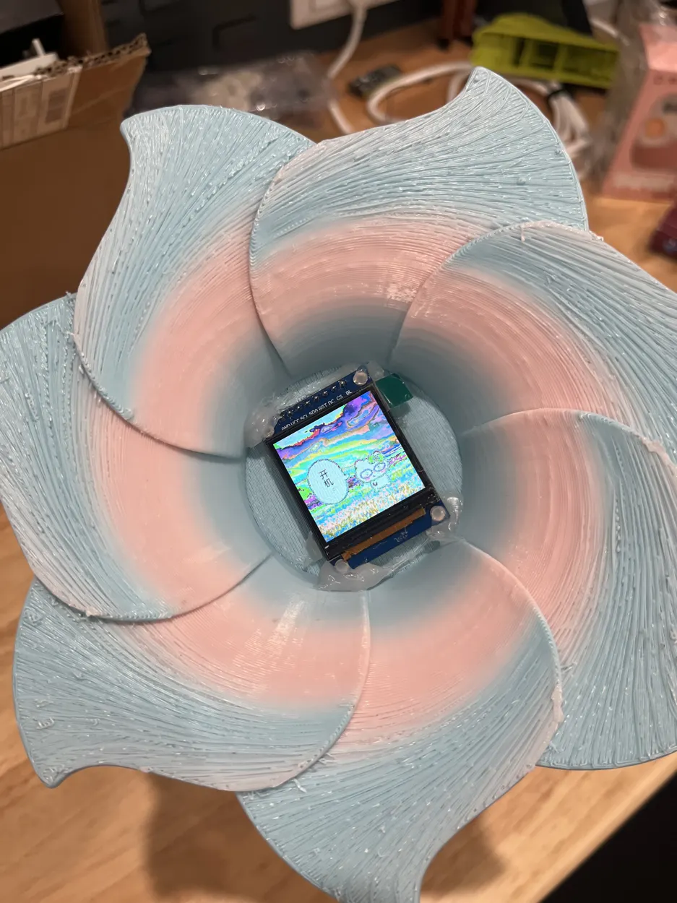
19.机械花一朵可以听见指令的机械花。步进电机与舵机带动花身前倾、旋转或跳舞，屏幕、声音和灯光跟着动作回应。
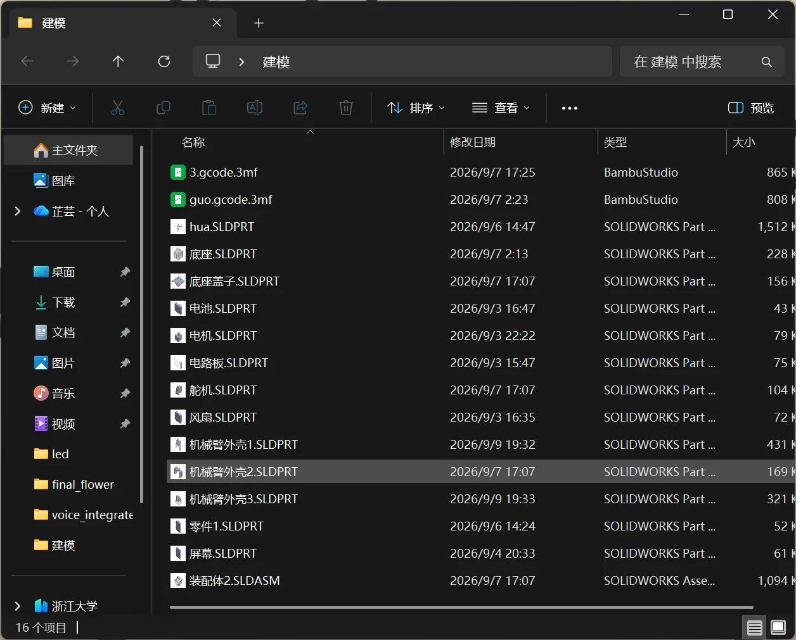


本项目为一款多模态交互桌面仿生机械花机器人，采用 STM32F103C8T6 与 ESP8266 D1-mini 双主控协同架构，实现语音、机械运动、彩屏动画、声光反馈联动交互。STM32 负责离线语音识别，驱动步进电机与舵机完成前倾、旋转、跳舞等仿生动作，同时控制蜂鸣器播放音乐、风扇启停；ESP8266 驱动 1.54 英寸 ST7789 彩屏，存储并播放表情、图片与动画帧，两片单片机通过串口通信、共地保障数据稳定传输。 设备依托离线语音模块接收指令，支持动作控制、模式切换、音乐播放、风扇开关等语音交互；触摸模块可触发多套表情与语音反馈（当前成品暂未启用触摸，替换为磁吸装饰灯）。上电自动加载待机画面，响应直观、交互趣味强，是一套集嵌入式驱动、串口通信、人机交互于一体的小型仿生互动作品。
项目名称：机械大花
mentor：孔繁晔（空翻也）
本项目设计并实现一款多模态交互桌面仿生机械花（桌面小机器人），采用STM32F103C8T6 与 ESP8266 D1‑mini 双主控协同架构，打造集离线语音识别、机械运动、屏幕表情动画、声光反馈于一体的桌面互动设备。
STM32 主控负责处理离线语音指令，驱动步进电机、舵机构成的机械臂结构，完成前倾、后仰、旋转、跳舞等仿生动作，同时控制蜂鸣器音乐播放与风扇开关；ESP8266 主控驱动 1.54 英寸 ST7789 彩屏，播放图片与表情动画；两块单片机通过串口实现数据交互，依靠共地保证通信稳定。
系统支持离线语音指令交互，用户可通过语音完成动作控制、模式切换、音乐播放、风扇控制；触摸传感器可触发多套表情、语音反馈；屏幕实时显示对应画面、动画，实现语音‑机械运动‑屏幕表情‑触摸反馈的联动效果。
一个READ_ME介绍文档
---
第一次把电路模块搭建出来，因为是用面包板，线有点杂乱且有点多，也为我后面电路模块一直出问题埋下隐患。
后面就开始画板子，中间修改过几次 ，基本都是尺寸过大，将其减小
19 点开始焊接第一块板，20 点开始测试，20:01 一通电板子烧坏了冒了一股黑烟，但是我没事。开始找是哪里的问题，我没找到，后来发现是降压模块装反了，把板子烧坏了。21 点我决定再焊一块板，21:40 测试没有任何反应，我猜是 5v 降压模块烧坏了，我猜对了，我又焊了一个模块。22:09 我焊接一块小的电路板发现板子没反应，哦是没留 3.3v 的供电。前前后后总共焊接了 3 次，之后陆陆续续加了语音、风扇模块。
两块板子到了去焊接，就是因为定下来了板子不好修改，导致后面接口有些不够，结合供电的问题，我后续又下单了电池与降压模块，决定头部的板子舍弃，用杜邦线连接。
3 号 4 号 5 号一直在建模与调整，主要难点是将线全部收起来，要预留接线的地方，同时模块有点多，也要考虑能不能放得进去。建模过程中发现已经把开关焊接在板子上了，最后采用将开关焊接在背面，在外壳露孔露出来。5 号建模结束开始打印，之后也反复打印调整了 3 次：第一次考虑了安装但是还是装不进去舵机；第二次发现一次尺寸有误差，重新测量修改，.组装底座的盖子时发现3D打印建模没有预留穿过电线的孔 ；第三次调整了元器件摆放的位置，把头部单独供电的模块放在底部的盒子里，减少上面的重量与空间。建模前测试功能，发现花朵整体无法实现转圈，因为上下模块有线连着，所以不方便转圈，改成左右转一定角度。
开始装配，第一次组装头部的时候结束测试电路，发现屏幕一直不亮，改变了接线之后还是不行，只能拆开，已经无法判断是我拆的时候是线松动还是本来就松开的。后面调整之后屏幕还是一直有问题，怀疑屏幕被我烧坏了，下单了新的屏幕，此时已经是 9.7 号的 2 点多了。
屏幕终于到了，换新屏幕的时候发现依旧没用，后续发现是接地的一些问题——屏幕的 gnd 与 esp 的 gnd 要共同一个地，但是单独供电可以让屏幕亮一些，不然看不清。组装花朵过程中发现屏幕黑屏，还误接了 5v 电压，这个与接地问题是同一件事情。
解决完这个之后，发现触摸模块一直无响应，一直尝试找原因，也无法解决，于是暂时决定先舍弃这个模块，改成磁吸灯，还是觉得先完成再去慢慢改进。
组装底座的盖子时，发现 3D 打印建模没有预留穿过电线的孔；组装机械臂时，发现 3D 打印建模没有预留位置放入机械臂——都是改模型重打。
9.10 下午组装到底座的时候，在封装之前最后测试一遍电路，发现蜂鸣器在播放晴天的时候突然一直鸣叫，并冒起了一阵黑烟。我切断电源之后测试其他模块有无烧坏，发现风扇无法工作、其他正常，更换一块新芯片后风扇正常工作，测试蜂鸣器没被烧坏，最终测试芯片的时候控制这两个的引脚被烧坏了。但为什么烧的根因没找到，用万用表测各个模块，很诡异。最后更换芯片安装好底座，原先的开关在底部，又在底部安装了轮子，保证底部可以平稳的在桌子上。
最后一次测试语音模块时，发现将语音模块放在底座内部会导致无法分辨人声，最后语音模块外露了。
相关代码已全部上传至GitHub，并有一些介绍。
（虽然这块板最后并没有用上...)
这个视频是当时冒完黑烟，巩子杰学长说给它~~拍完遗照就赌一把.~~.
在项目即将截至时冒了 一阵浓烟，我感觉自己已然到达了无喜无悲的状态
尝试玩这个雷霆大花
1. 代码编写
- STM32 侧驱动(voice_integrated/):语音识别 Voice.c(软件 I2C)、蜂鸣器 Buzzer.c、步进电机 Motor.c、双舵机
Servo.c、串口通信 Uart.c,以及主程序 main.c(命令分发逻辑)
- ESP8266 侧(esp8266_screen/src/main.cpp):屏幕显示、动画帧播放、触摸/事件逻辑
- 工具脚本 gen_media.py:视频/图片转 RGB565 帧、写进 LittleFS
2. 代码调试与修改
- 库移植:HAL→标准库、寄存器版→标准库,统一到 SPL
- 具体 bug 修复:舵机无波形(高级定时器需开 MOE 主输出)、肘舵机机械偏差补偿、舵机方向取反、屏幕花屏(降 SPI
频率)、中文路径读取失败、开机串口乱码(帧头协议)、音乐无法打断、存储超限(8 帧降 6 帧)
- 参数调优:电机转速/角度、舵机中立位等
3. 文档编写
- README_操作步骤.md、README.md、esp8266_screen/README.md(接线、烧录、功能手册
AI 主要承担的是:代码编写与软件调试、文档整理上传这类工作。
> 感谢空翻也学长啊（见证了从项目诞生到结束...)！感谢巩子杰学长最后一天帮助我啊！感谢无烟困困困在未学啊！感谢刘🐏☞跟我们打王者啊！感谢✌骑睿一起吃KFC啊！感谢小指锅！
>
>
为了项目而诞生的群甚至可以发一个全勤奖
一个能听懂语音、会做动作、会播视频表情、能摸它互动的桌面小机器人（电子花），
由两块芯片配合完成。
---
芯片 · 负责什么 · 代码位置 · 烧录工具
STM32F103C8T6 · 语音识别、蜂鸣器、步进电机、机械臂 · final_flower/voice_integrated · Keil
ESP8266 D1 mini · 1.54" 彩屏、触摸、动画/图片播放 · esp8266_screen · VS Code + PlatformIO
- 语音模块（WonderEcho）已按 最终语音指令.xlsx 烧录好。
- 视频/图片已转成帧，存在 ESP8266 的 LittleFS 里（esp8266_screen/data）。
---
设备 · 信号 · STM32 引脚
语音模块 · SCL · PB1
语音模块 · SDA · PB12
语音模块 · VCC / GND · 5V / GND
蜂鸣器 · 信号 · PA0（TIM2_CH1）
蜂鸣器 · GND · GND
步进电机 · DIR · PA7
步进电机 · EN · PA5（低电平使能）
步进电机 · STEP · PA6（TIM3_CH1）
肩舵机（底部） · 信号 · PA8（TIM1_CH1）
肘舵机（中部） · 信号 · PA11（TIM1_CH4）
舵机供电 · VCC · 外接 5V 2A（别用板子 3.3V）
舵机 GND · GND · 和外接电源、STM32 共地
风扇（单路驱动模块）：
驱动模块引脚 · 接哪里
DC+ · 开发板 5V（或外接 12V，模块支持 5~24V）
DC- · GND
GND · GND（与 STM32 共地）
IO/PWM · PA1（高电平开、低电平关）
OUT+ / OUT- · 接风扇两端
> 供电可用 5V 或 12V：输出电压 = 输入电压，接 12V 时风扇必须是 12V 规格，
> 且 12V 电源负极要和 STM32 GND 共地。IO 信号用 STM32 的 3.3V 电平即可。
设备 · 引脚 · ESP8266 D1 mini
屏幕 ST7789 · VCC · 3.3V（务必 3.3V，不是 5V）
屏幕 · GND · GND
屏幕 · SCL（=SPI 时钟 SCK） · D5 (GPIO14)
屏幕 · SDA（=SPI 数据 MOSI） · D7 (GPIO13)
屏幕 · RES/RST · D0 (GPIO16)
屏幕 · DC · D2 (GPIO4)
屏幕 · CS · D1 (GPIO5)
屏幕 · BL（背光） · 3.3V
触摸模块 · VCC / GND · 3.3V / GND
触摸模块 · OUT/SIG · D8 (GPIO15)
> 注：触摸模块当前未启用，成品改用磁吸灯（独立装饰，不接电路）；接线保留在此，后续恢复触摸时照此接。
> ⚠ 屏幕上的 SCL 是 SPI 时钟、SDA 是 SPI 数据，不是 I2C，别接错。
ESP8266 · STM32 · 说明
TX (GPIO1) · PA3 · ESP 发 → STM32 收
RX (GPIO3) · PA2 · STM32 发 → ESP 收
GND · GND · 一根杜邦线共地
- ESP8266：5V（USB 或 VIN 脚）；屏幕+触摸从 ESP 的 3.3V 脚取电。
- STM32：5V（USB / ST-Link）；语音模块 5V。
- 舵机：外接 5V 2A 独立电源，GND 和 STM32 共地。
- 风扇：驱动模块 DC+ 接 5V（或外接 12V，模块支持 5~24V），DC-/GND 与 STM32 共地。
- STM32 和 ESP8266 的 GND 必须连一起（共地），否则串口不通。
---
说 · 语音回答 · 动作 · 屏幕
前倾 · 前倾 · 机械臂前倾 · 换一张「收到」图
后仰 · 后仰 · 机械臂向后仰 · 换「收到」图
立正 · 好的 · 机械臂回中位 · 换「收到」图
左转 · 收到 · 电机左转 30° · 换「收到」图
右转 · 收到 · 电机右转 30° · 换「收到」图
跳舞 · 收到 · 慢速左右摇摆 3 次 · 换「收到」图
你会转圈吗 · 收到 · 只回话、不动电机 · 换「收到」图
停下 · 收到 · 电机停 · 停止动画回待机
播放音乐 · 收到 小锅最喜欢听音乐了 · 蜂鸣器播《晴天》 · 循环「听音乐」动画
我好无聊 · 手指跟着屏幕动呀 · — · 播「互动小游戏」
呼叫奶龙 · 奶家人来支持了 · — · 显示「呼叫奶龙」图
切换战斗模式 · 切换战斗模式 · — · 显示「战斗」图
开风扇 · 好的 · 风扇开 · 随机「收到」图
关风扇 · 好的 · 风扇关 · 随机「收到」图
露一手 · 看好咯 · 组合动作演示 · 换「收到」图
介绍自己 · 我是小锅，我最喜欢指锅 · — · —
你认识刘阳志吗 · 阳志最帅 · — · —
好想抽烟 · 暴打无烟子 · — · —
你认识孔繁烨吗 · 孔繁烨是给 · — · —
你认识鹿哈吗 · 我知道 她是指锅最喜欢的学姐 · — · —
你认识西沟吗 · 认识 西沟是个好学长呀 · — · —
你认识辣椒面吗 · 辣椒面最萌了 · — · —
你认识困困困吗 · 困困困是小丑 · — · —
你认识几朵吗 · 几多喜欢奶龙 · — · —
> 播放音乐时，说任意命令词（比如「停下」）都能立刻打断音乐。
>
> 另外还支持系统词（不接动作、纯语音模块自带）：
> 唤醒「小幻小幻」；问候「你好」「再见」；
> 调音量说「增大音量 / 减小音量 / 最大音量 / 中等音量 / 最小音量」；
> 开关语音回复说「开启播报 / 关闭播报」。
触摸操作 · 屏幕表情 · 语音回答
短按一下 · 开心 · 我乐乐了呀
连按第 2 下 · 哭哭 · 我哭哭了呀
连按第 3 下 · 大笑 · 我笑吐吐了呀
连按第 4 下 · 吃饭 · 是啊 吃什么
连按第 5 下 · 疑惑 · 嗯？怎么啦
连按第 6 下 · 走路 · 我走了
连按第 7 下 · 飞飞 · 我飞了
连按第 8 下 · 哭哭（循环） · 我哭哭了呀
长按 ≥1 秒 · 回待机 · 我休息一下
小游戏中摸一下 · 退出游戏 · 游戏结束，下次再玩
> 注：当前成品触摸模块未启用（曾因一直无响应、找不到原因而暂缓），改用磁吸灯（独立装饰）。上表为触摸功能的设计效果，后续排查后可恢复。
上电后屏幕流程：
1. 先显示 「Loading...」（加载中）
2. 加载成功 → 显示「开机」图片，待机一直停在这张图（不再黑屏）
3. 加载失败 → 红屏「NO DATA」（数据没传上，需要重新传数据）
---
1. 两块板接好线、共好地，上电。
2. 屏幕显示「开机」图片，说明一切就绪。
3. 直接说话：「前倾」「左转」「播放音乐」「我好无聊」……
4. 想互动就摸触摸传感器：摸一下看开心表情，连按切换各种表情，长按让它休息。
5. 想让它安静，说「停下」或长按触摸。
> 注：当前成品触摸未启用（改为磁吸灯），第 4、5 步的触摸操作是触摸恢复后的效果。
机械大花 项目介绍视频制作材料
一、项目简介
机械大花是一款多模态交互的桌面仿生机械花机器人，采用 STM32F103C8T6 与 ESP8266 D1 mini 双主控协同架构。STM32 承担离线语音识别，驱动步进电机与舵机构成的机械臂完成前倾、后仰、旋转、跳舞等仿生动作，同时控制蜂鸣器播放音乐、控制风扇启停；ESP8266 驱动 1.54 英寸 ST7789 彩屏，存储并播放表情图片与动画帧。两块单片机通过串口通信、共地保障数据稳定传输。
设备支持离线语音指令交互，用户可通过语音完成动作控制、模式切换、音乐播放与风扇开关；触摸传感器在设计上可触发多套表情与语音反馈（当前样机触摸模块暂未启用，成品改用磁吸装饰灯，本视频不呈现触摸操作）。上电后屏幕自动加载并停留在待机画面，整套系统实现语音—机械运动—屏幕表情—声光反馈的联动，是一件集单片机外设驱动、串口通信、屏幕驱动与离线语音交互于一体的桌面互动作品。
二、视频制作方案
（一）总体定位与规格
（二）叙事结构
视频按四段推进：开场用待机画面与唤醒动作建立“这是一台桌面机器人”的第一印象；第二段集中展示语音指令驱动的机械动作与屏幕表情，用连续实拍证明交互真实可用；第三段拆解技术架构，说明双主控分工与串口通信，回答“怎么做的”；结尾回到待机画面，收束项目名称与团队信息。四段之间用同一机位的推近、拉远衔接，减少跳切。
（三）分镜脚本
表 2 分镜脚本（总时长约 85 秒）
镜号
时间
画面内容
解说／字幕
拍摄要点
1
0:00—0:06
桌面全景，机械大花直立待机，屏幕显示“开机”图片；手入画说出唤醒词
字幕：机械大花｜一款会听、会动、会表达的桌面机器人
侧 45° 机位，背景简洁；保留上电到待机画面的过程
2
0:06—0:20
依次说“前倾”“后仰”“左转”“右转”“立正”“跳舞”，每句指令后机械臂动作到位，屏幕切换“收到”图
解说：说出指令，它能听懂并完成动作
固定机位不移动，动作完整入画；字幕与语音指令同步
3
0:20—0:30
屏幕近景，连续切换“开心”“哭哭”“大笑”等表情画面
解说：1.54 英寸彩屏同步播放表情动画
微距拍摄，避免屏幕反光与摩尔纹；手部不遮挡屏幕
4
0:30—0:42
说“播放音乐”，蜂鸣器响起《晴天》旋律；说“开风扇”，风扇转动
解说：还能播音乐、开风扇，声光反馈同时到位
收录实机音效，风扇镜头用侧逆光拍出转动感
5
0:42—0:54
主板特写：STM32 与 ESP8266 两块板、串口杜邦线、共地线、舵机外接电源
解说：STM32 负责语音与运动，ESP8266 负责屏幕，串口通信、共地协作
俯拍，标注可后期加箭头；线材整理整齐
6
0:54—1:04
结构展示：底座箱体、机械臂关节、肩／肘舵机、花朵部件
解说：底座 14×12×10 厘米，直立最高 32 厘米
环绕低机位缓慢移动，突出机械结构
7
1:04—1:16
说“露一手”演示组合动作；再说“我好无聊”进入互动小游戏画面
解说：支持组合动作与趣味互动模式
一镜到底，不剪辑，体现连贯性
8
1:16—1:25
回到待机画面，镜头缓慢拉远，画面淡出
字幕：机械大花｜指导教师：孔繁晔
定格 2 秒再淡出，方便后期叠字幕
（四）解说文稿
（开场）这是一朵会听、会动、也会表达情绪的桌面机械花，它叫机械大花。
（演示）只要说出指令，它就能听懂：前倾、后仰、左转、右转、立正，还能跟着节拍跳舞。动作到位的同时，屏幕会同步换上一张“收到”的画面，语音、动作、画面三者一起响应。
（功能）除了动作，它还会播放音乐、开关风扇，也能陪你玩一玩互动小游戏。
（技术）这份体验由两块芯片共同完成：STM32 负责离线语音识别和机械运动，ESP8266 负责彩屏上的表情与动画，两块板通过串口通信、共地协作，指令才能从“听到”变成“做到”。
（收尾）底座十四乘十二乘十厘米，直立最高三十二厘米，一台可以摆在桌上的仿生机械花。机械大花，指导教师孔繁晔。
（五）拍摄素材清单
表 3 必拍镜头清单
序号
素材
用途
备注
1
待机全景（含上电加载过程）
开场、结尾
至少 15 秒可用素材
2
六条动作指令完整执行
第 2 镜
每条指令单独录一遍，便于剪辑挑选
3
屏幕表情连续切换
第 3 镜
微距，含“开机”“收到”画面
4
音乐播放与风扇启停
第 4 镜
同步录环境音
5
两块主控板及接线特写
第 5 镜
含串口线、共地线、舵机电源
6
机械结构与花朵部件
第 6 镜
环绕镜头，突出 3D 打印件
7
组合动作与互动小游戏
第 7 镜
一镜到底
8
项目照片 2—3 张
封面、片尾
正面、侧面各一张，光线均匀
三、剪辑与交付要求
剪辑保持真实节奏，不使用夸张转场与花哨特效；画面统一调至亮度一致，屏幕区域避免过曝。字幕置于画面下方安全区内，字号统一，与解说逐句对应；机械动作名称、尺寸数据等关键信息同时以字幕呈现。背景音乐使用无版权素材，音量低于解说，不能盖过蜂鸣器与舵机的工作声。片头不设长时间 Logo 动画，直接进入实物画面。
四、制作注意事项
第一，语音模块需按《最终语音指令》预先烧录，拍摄前逐条试说全部指令，确认识别稳定，避免现场反复重录。第二，舵机使用外接 5V 2A 电源并与 STM32 共地，风扇驱动模块的电源负极同样必须共地，否则串口通信与动作会出现异常。第三，屏幕供电为 3.3V，屏幕上的 SCL、SDA 是 SPI 时钟与数据线，不是 I2C，接线不得混用。第四，触摸模块当前未启用，成品以磁吸装饰灯替代，视频中不呈现触摸操作，触摸相关表情可仅以屏幕画面展示，并在字幕中标注“表情动画”。第五，拍摄前将 LittleFS 中的图片与动画帧完整烧入，若屏幕出现红屏“NO DATA”，需重新上传数据后再拍。
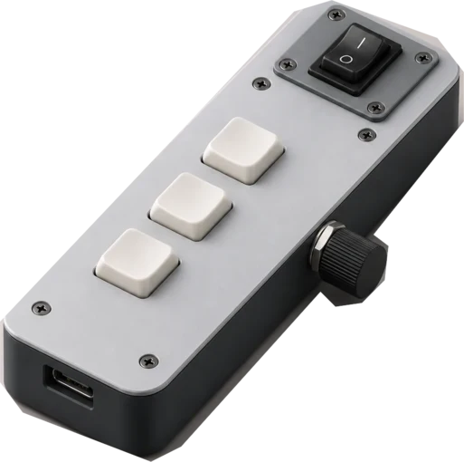
20.Vibe RemoteVibe Remote 是一款面向 Vibe Coding场景设计的单手蓝牙控制器。它将输入、发送或继续、取消、页面滚动和面板切换等常用操作，映射到三个按键和一个可按压的滚轮上，目标是在浏览代码、审阅修改和等待 AI 执行任务时，减少键盘与鼠标之间的切换（让我们畅快摸鱼）。

 21.洗衣机取衣提醒装置
21.洗衣机取衣提醒装置本项目是一款宿舍洗衣机取衣提醒装置，针对洗衣机仅提示一次、易忘取衣、影响室友使用的问题设计。设备基于ESP32主控，采用震动与声音双传感器融合判断洗衣结束，搭配按键归属选择、OLED显示和分级蜂鸣提醒，能够智能分时段提醒取衣，有效提升宿舍洗衣机使用效率。
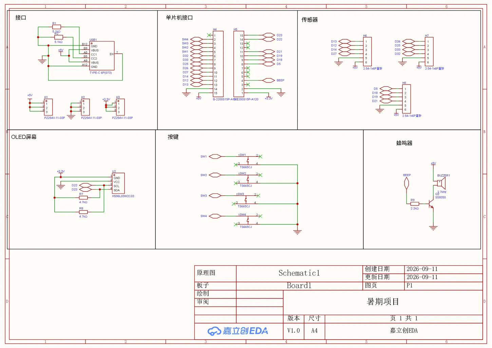
项目名称：洗衣机提示装置
mentor：徐奕
本项目是一款宿舍洗衣机取衣提醒装置，针对洗衣机仅提示一次、易忘取衣、影响室友使用的问题设计。设备基于ESP32主控，采用震动与声音双传感器融合判断洗衣结束，搭配按键归属选择、OLED显示和分级蜂鸣提醒，能够智能分时段提醒取衣，有效提升宿舍洗衣机使用效率。
---
构建"迭代与改错"记录，可仅截屏展示
Plain Text
// ============ 钉钉机器人配置（必填） ============
// 1. WiFi 配置
const char* WIFI_SSID = "HiWiFi_55BD5E";
const char* WIFI_PASSWORD = "sywsxy123";
// 钉钉机器人配置
const String DINGTALK_KEYWORD = "提醒"; // 必须与钉钉机器人安全设置中的关键词一致
const String DINGTALK_SECRET = "";
// @设置（可选）
const String AT_MOBILES = "";
// ============ 对象声明 ============
Adafruit_SSD1306 display(SCREEN_WIDTH, SCREEN_HEIGHT, &Wire, OLED_RESET);
// ============ 系统状态变量 ============
enum SystemState {
STATE_OFF, // 关机状态
STATE_IDLE, // 开机待机
STATE_WORKING // 工作中
};
SystemState currentState = STATE_OFF;
unsigned long buttonPressStartTime = 0;
bool longPressDetected = false;
int lastDisplayNumber = 0;
// ============ 报警状态变量 ============
unsigned long lastAlarmTriggerTime = 0; // 上次触发报警的时间
int alarmCount = 0; // 当前报警次数
bool alarmActive = false; // 报警是否激活
unsigned long lastAlarmSoundTime = 0; // 上次蜂鸣器发声时间
// ============ 蜂鸣器非阻塞控制变量 ============
bool buzzerActive = false; // 蜂鸣器是否正在发声
unsigned long buzzerStartTime = 0; // 蜂鸣器开始时间
unsigned long buzzerDuration = 0; // 蜂鸣器持续时长
unsigned long buzzerLastToggleTime = 0; // 上次切换电平的时间
bool buzzerState = LOW; // 蜂鸣器当前电平状态
// ============ 按键状态管理 ============
struct ButtonState {
int pin;
bool lastState;
unsigned long lastDebounceTime;
bool currentState;
bool stableState;
};
ButtonState buttons[NUM_BUTTONS] = {
{BUTTON_1_PIN, HIGH, 0, HIGH, HIGH},
{BUTTON_2_PIN, HIGH, 0, HIGH, HIGH},
{BUTTON_3_PIN, HIGH, 0, HIGH, HIGH},
{BUTTON_4_PIN, HIGH, 0, HIGH, HIGH}
};
// ============ 传感器状态 ============
bool vibrationDetected = false;
bool soundDetected = false;
unsigned long soundLastTriggerTime = 0;
// ============ 钉钉消息防重发控制 ============
unsigned long lastDingTalkSendTime = 0; // 上次发送钉钉消息的时间
const unsigned long DINGTALK_COOLDOWN = 60000; // 同一报警周期内，钉钉消息最小间隔60秒
bool dingTalkSentForCurrentAlarm = false; // 当前报警周期是否已发送过钉钉
// ============ 函数声明 ============
void updateButtonStates();
void handleLongPress();
void handleShortPress();
void readSensors();
void updateDisplay();
void triggerAlarm();
void handleAlarmPeriodic();
void startBuzzer(unsigned long duration);
void updateBuzzer();
// ============ 钉钉相关函数声明 ============
void connectWiFi();
void sendDingTalkMessage(String content);
String generateDingTalkSign(unsigned long timestamp, String secret);
String urlEncode(String str);
// ============ 初始化 ============
void setup() {
Serial.begin(115200);
Serial.println("System Starting...");
// 连接WiFi（开机即连）
connectWiFi();
// 初始化引脚
pinMode(POWER_BUTTON_PIN, INPUT_PULLUP);
pinMode(BUZZER_PIN, OUTPUT);
pinMode(VIBRATION_SENSOR_PIN, INPUT);
pinMode(SOUND_SENSOR_PIN, INPUT);
for (int i = 0; i < NUM_BUTTONS; i++) {
pinMode(buttons[i].pin, INPUT_PULLUP);
}
Wire.begin(23, 22);
// 初始化OLED
if (!display.begin(SSD1306_SWITCHCAPVCC, 0x3C)) {
Serial.println("SSD1306 allocation failed");
for (;;);
}
display.clearDisplay();
display.setTextSize(1);
display.setTextColor(SSD1306_WHITE);
display.setCursor(0, 0);
display.println("System Ready");
display.display();
// 蜂鸣器初始状态
digitalWrite(BUZZER_PIN, LOW);
delay(1000);
}
// ============ 主循环 ============
void loop() {
// 保持WiFi连接
if (WiFi.status() != WL_CONNECTED) {
static unsigned long lastWiFiCheck = 0;
if (millis() - lastWiFiCheck > 10000) {
Serial.println("WiFi disconnected, reconnecting...");
connectWiFi();
lastWiFiCheck = millis();
}
}
// 1. 处理长按开机/关机
handleLongPress();
// 只有在开机状态下才执行其他功能
if (currentState != STATE_OFF) {
// 2. 更新按键状态（带消抖）
updateButtonStates();
// 3. 处理短按（显示数字）
handleShortPress();
// 4. 读取传感器
readSensors();
// 5. 双重交叉验证触发报警（仅初次激活报警）
if (vibrationDetected && soundDetected) {
triggerAlarm();
}
// 报警激活后持续运行周期提醒逻辑，不再依赖传感器条件
if(alarmActive){
handleAlarmPeriodic();
}
// 6. 更新蜂鸣器状态（非阻塞）
updateBuzzer();
// 7. 更新显示
updateDisplay();
}
delay(10); // 主循环周期
}
// ============ WiFi连接 ============
void connectWiFi() {
if (WiFi.status() == WL_CONNECTED) return;
Serial.print("Connecting to WiFi");
WiFi.begin(WIFI_SSID, WIFI_PASSWORD);
int retry = 0;
while (WiFi.status() != WL_CONNECTED && retry < 30) {
delay(500);
Serial.print(".");
retry++;
}
if (WiFi.status() == WL_CONNECTED) {
Serial.println();
Serial.print("WiFi connected, IP: ");
Serial.println(WiFi.localIP());
// OLED显示WiFi状态
if (currentState != STATE_OFF) {
display.clearDisplay();
display.setTextSize(1);
display.setCursor(0, 0);
display.println("WiFi Connected");
display.print("IP: ");
display.println(WiFi.localIP());
display.display();
delay(1000);
}
} else {
Serial.println("nWiFi connection failed!");
}
}
// ============ 钉钉消息发送 ============
void sendDingTalkMessage(String content) {
if (WiFi.status() != WL_CONNECTED) {
Serial.println("[DingTalk] WiFi not connected, skip sending");
return;
}
// 防重发：同一报警周期内，60秒内只发一次
if (dingTalkSentForCurrentAlarm && (millis() - lastDingTalkSendTime) < DINGTALK_COOLDOWN) {
Serial.println("[DingTalk] Cooldown active, skip sending");
return;
}
WiFiClientSecure client;
client.setInsecure(); // 跳过SSL证书验证（测试用）
HTTPClient http;
// 钉钉要求的时间戳为毫秒级 Unix 时间戳
unsigned long timestamp = millis();
// 如果配置了加签，计算签名并追加到URL
if (DINGTALK_SECRET.length() > 0) {
String sign = generateDingTalkSign(timestamp, DINGTALK_SECRET);
url += "×tamp=" + String(timestamp) + "&sign=" + sign;
}
Serial.println("[DingTalk] Sending message...");
http.begin(client, url);
http.addHeader("Content-Type", "application/json");
http.setTimeout(5000);
// 如果设置了关键词，确保消息内容中包含关键词
String messageContent = content;
if (DINGTALK_KEYWORD.length() > 0 && messageContent.indexOf(DINGTALK_KEYWORD) == -1) {
messageContent = "[" + DINGTALK_KEYWORD + "] " + messageContent;
}
// 构造 JSON 消息体
String jsonPayload = "{"msgtype":"text","text":{"content":"" + messageContent + ""}";
// 添加 @ 设置
jsonPayload += ","at":{"isAtAll":" + String(AT_ALL ? "true" : "false");
if (AT_MOBILES.length() > 0) {
jsonPayload += ","atMobiles":["" + AT_MOBILES + ""]";
}
jsonPayload += "}}";
Serial.println("[DingTalk] Payload: " + jsonPayload);
int httpResponseCode = http.POST(jsonPayload);
if (httpResponseCode > 0) {
String response = http.getString();
Serial.print("[DingTalk] HTTP Code: ");
Serial.println(httpResponseCode);
Serial.println("[DingTalk] Response: " + response);
// 标记已发送
lastDingTalkSendTime = millis();
dingTalkSentForCurrentAlarm = true;
} else {
Serial.print("[DingTalk] Send failed, HTTP Code: ");
Serial.println(httpResponseCode);
}
http.end();
}
// ============ 钉钉加签生成（HMAC‑SHA256 + Base64 + URL编码） ============
String generateDingTalkSign(unsigned long timestamp, String secret) {
String stringToSign = String(timestamp) + "n" + secret;
// HMAC‑SHA256
uint8_t hmacResult[32];
mbedtls_md_context_t ctx;
mbedtls_md_type_t md_type = MBEDTLS_MD_SHA256;
mbedtls_md_init(&ctx);
mbedtls_md_setup(&ctx, mbedtls_md_info_from_type(md_type), 1);
mbedtls_md_hmac_starts(&ctx, (const unsigned char*)secret.c_str(), secret.length());
mbedtls_md_hmac_update(&ctx, (const unsigned char*)stringToSign.c_str(), stringToSign.length());
mbedtls_md_hmac_finish(&ctx, hmacResult);
mbedtls_md_free(&ctx);
// 使用 Arduino base64 库编码
String sign = base64::encode(hmacResult, 32);
// URL encode
return urlEncode(sign);
}
// ============ URL编码辅助函数 ============
String urlEncode(String str) {
String encoded = "";
char c;
for (int i = 0; i < str.length(); i++) {
c = str.charAt(i);
if (c == ' ') {
encoded += "%20";
} else if (c == '+') {
encoded += "%2B";
} else if (c == '/') {
encoded += "%2F";
} else if (c == '=') {
encoded += "%3D";
} else if (c == '&') {
encoded += "%26";
} else if (c == '?') {
encoded += "%3F";
} else if (c == '%') {
encoded += "%25";
} else if (c == '#') {
encoded += "%23";
} else {
encoded += c;
}
}
return encoded;
}
// ============ 长按处理（开机/关机） ============
void handleLongPress() {
static unsigned long lastPressTime = 0;
static bool lastButtonState = HIGH;
bool currentState_btn = digitalRead(POWER_BUTTON_PIN);
// 检测按键按下（低电平有效）
if (currentState_btn == LOW && lastButtonState == HIGH) {
lastPressTime = millis();
}
// 检测按键释放
if (currentState_btn == HIGH && lastButtonState == LOW) {
unsigned long pressDuration = millis() - lastPressTime;
if (pressDuration >= LONG_PRESS_TIME && !longPressDetected) {
// 长按5秒触发开关机
if (currentState == STATE_OFF) {
currentState = STATE_IDLE;
Serial.println("System ON");
display.clearDisplay();
display.setTextSize(2);
display.setCursor(0, 0);
display.println("System ON");
display.display();
longPressDetected = true;
} else {
currentState = STATE_OFF;
Serial.println("System OFF");
display.clearDisplay();
display.setTextSize(2);
display.setCursor(0, 0);
display.println("System OFF");
display.display();
longPressDetected = true;
// 关闭蜂鸣器（如果正在响）
if (buzzerActive) {
digitalWrite(BUZZER_PIN, LOW);
buzzerActive = false;
}
}
}
longPressDetected = false;
}
// 如果按键一直按着但没到5秒，更新状态提示
if (currentState_btn == LOW && (millis() - lastPressTime) >= LONG_PRESS_TIME) {
if (currentState == STATE_OFF) {
static unsigned long lastDisplayUpdate = 0;
if (millis() - lastDisplayUpdate > 1000) {
Serial.print("Long press: ");
Serial.println((millis() - lastPressTime) / 1000);
lastDisplayUpdate = millis();
}
}
}
lastButtonState = currentState_btn;
}
// ============ 按键消抖更新 ============
void updateButtonStates() {
for (int i = 0; i < NUM_BUTTONS; i++) {
bool reading = digitalRead(buttons[i].pin);
if (reading != buttons[i].lastState) {
buttons[i].lastDebounceTime = millis();
}
if ((millis() - buttons[i].lastDebounceTime) > DEBOUNCE_DELAY) {
if (reading != buttons[i].stableState) {
buttons[i].stableState = reading;
}
}
buttons[i].lastState = reading;
buttons[i].currentState = buttons[i].stableState;
}
}
// ============ 短按处理（显示数字1‑4 + 长按停止报警） ============
void handleShortPress() {
static bool prevStates[NUM_BUTTONS] = {HIGH, HIGH, HIGH, HIGH};
static unsigned long pressStartTime[NUM_BUTTONS] = {0, 0, 0, 0};
static bool longPressHandled[NUM_BUTTONS] = {false, false, false, false};
for (int i = 0; i < NUM_BUTTONS; i++) {
// 检测按键按下（低电平有效，且状态稳定）
if (buttons[i].currentState == LOW) {
// 记录按下开始时间（下降沿）
if (prevStates[i] == HIGH) {
pressStartTime[i] = millis();
longPressHandled[i] = false;
}
// ===== 检测长按3秒停止报警 =====
if (!longPressHandled[i] && (millis() - pressStartTime[i]) >= 3000) {
if (alarmActive) {
// 停止报警
alarmActive = false;
alarmCount = 0;
dingTalkSentForCurrentAlarm = false; // 重置钉钉发送标志
if (buzzerActive) {
digitalWrite(BUZZER_PIN, LOW);
buzzerActive = false;
}
Serial.print("Alarm stopped by long press on button ");
Serial.println(i + 1);
// OLED显示停止信息
display.clearDisplay();
display.setTextSize(1);
display.setCursor(0, 0);
display.println("Alarm Stopped");
display.display();
delay(500);
longPressHandled[i] = true;
}
}
// ===== 短按显示数字（下降沿触发） =====
if (prevStates[i] == HIGH) {
int number = i + 1;
lastDisplayNumber = number;
Serial.print("Button ");
Serial.print(number);
Serial.println(" pressed");
// 在OLED上显示数字（长久显示）
display.clearDisplay();
display.setTextSize(4);
display.setCursor(30, 20);
display.print(number);
display.display();
}
prevStates[i] = LOW;
} else {
prevStates[i] = HIGH;
}
}
}
// ============ 读取传感器 ============
void readSensors() {
// 读取震动传感器（低电平触发，根据实际调整）
vibrationDetected = (digitalRead(VIBRATION_SENSOR_PIN) == HIGH);
// 读取声音传感器（高电平触发，根据实际调整）
soundDetected = (digitalRead(SOUND_SENSOR_PIN) == HIGH);
// 输出调试信息（可选）
static unsigned long lastDebugPrint = 0;
if (millis() - lastDebugPrint > 1000) {
Serial.print("Vibration: ");
Serial.print(vibrationDetected ? "YES" : "NO");
Serial.print(" · Sound: ");
Serial.println(soundDetected ? "YES" : "NO");
lastDebugPrint = millis();
}
}
// ============ 初次触发报警（仅传感器条件满足时调用） ============
void triggerAlarm() {
if(alarmActive) return; // 防止传感器抖动重复初始化报警
unsigned long currentTime = millis();
if (vibrationDetected && soundDetected) {
// 首次触发报警
alarmActive = true;
alarmCount = 0;
dingTalkSentForCurrentAlarm = false;
lastAlarmTriggerTime = currentTime;
lastAlarmSoundTime = currentTime;
Serial.println("ALARM ACTIVATED! ");
sendDingTalkMessage("记得拿出衣物！");
startBuzzer(30000); // 响30秒
alarmCount++;
}
}
// ============ 报警周期提醒逻辑，alarmActive为true就持续执行 ============
void handleAlarmPeriodic()
{
unsigned long currentTime = millis();
unsigned long elapsedSeconds = (currentTime - lastAlarmTriggerTime) / 1000;
// ===== 第二次响：触发后5分钟（300秒）
if (alarmCount == 1)
{
if(elapsedSeconds >= 300 &&
(currentTime - lastAlarmSoundTime) >= 30000 &&
!buzzerActive)
{
startBuzzer(30000);
alarmCount++;
lastAlarmSoundTime = currentTime;
Serial.print("Alarm "); Serial.print(alarmCount); Serial.println(" sounded");
String msg = "提醒第" + String(alarmCount) + "次响起，请拿出衣物！";
sendDingTalkMessage(msg);
}
}
// ===== 第三次及以后：每隔1小时响一次
else if (alarmCount >= 2)
{
static unsigned long lastHourlyAlarmTime = 0;
if (alarmCount == 2)
{
lastHourlyAlarmTime = lastAlarmSoundTime;
}
if((currentTime - lastHourlyAlarmTime) >= 3600000 && !buzzerActive)
{
startBuzzer(30000);
alarmCount++;
lastHourlyAlarmTime = currentTime;
Serial.print("Hourly alarm "); Serial.print(alarmCount); Serial.println(" sounded");
String msg = "提醒第" + String(alarmCount) + "次响起，请拿出衣物！";
sendDingTalkMessage(msg);
}
}
}
// ============ 启动蜂鸣器（非阻塞） ============
void startBuzzer(unsigned long duration) {
if (buzzerActive) {
return; // 如果已经在响，不再重复启动
}
buzzerActive = true;
buzzerStartTime = millis();
buzzerDuration = duration;
buzzerLastToggleTime = millis();
buzzerState = LOW;
digitalWrite(BUZZER_PIN, LOW);
Serial.print("Buzzer started for ");
Serial.print(duration / 1000);
Serial.println(" seconds");
}
// ============ 更新蜂鸣器状态（非阻塞） ============
void updateBuzzer() {
if (!buzzerActive) {
return;
}
unsigned long currentTime = millis();
// 检查是否到达停止时间
if (currentTime - buzzerStartTime >= buzzerDuration) {
digitalWrite(BUZZER_PIN, LOW);
buzzerActive = false;
Serial.println("Buzzer stopped");
return;
}
// 每500ms切换一次电平（产生低频方波滴滴响）
if (currentTime - buzzerLastToggleTime >= 500) {
buzzerState = !buzzerState;
digitalWrite(BUZZER_PIN, buzzerState);
buzzerLastToggleTime = currentTime;
}
}
// ============ 更新显示 ============
void updateDisplay() {
// 只有在没有按键按下时才更新状态显示
bool anyButtonPressed = false;
for (int i = 0; i < NUM_BUTTONS; i++) {
if (buttons[i].currentState == LOW) {
anyButtonPressed = true;
break;
}
}
if (!anyButtonPressed && lastDisplayNumber == 0) {
display.clearDisplay();
display.setTextSize(1);
display.setCursor(0, 0);
display.println("ESP32 Sensor System");
display.setTextSize(1);
display.setCursor(0, 20);
display.print("Vib: ");
display.println(vibrationDetected ? "YES" : "NO");
display.print("Snd: ");
display.println(soundDetected ? "YES" : "NO");
// 显示蜂鸣器状态（调试用）
display.setCursor(0, 50);
display.print("Buz: ");
display.println(buzzerActive ? "ON" : "OFF");
// 显示WiFi状态
display.setCursor(0, 40);
display.print("WiFi:");
display.println(WiFi.status() == WL_CONNECTED ? "OK" : "OFF");
display.display();
}
}
一个装配图（实物还在打印中）
右边的大盒子装pcb板子，盖子上的方形孔是显示屏露出孔，四个圆柱用来按按键（原谅我的按键选的太短了），大盒子左侧的孔用来通杜邦线，左侧的盒子是杜邦线的收纳盒（杜邦线有点过长，可根据需要调整线在外部的长短，左侧盒子后还有通孔以便露出传感器。
中间调试没有留档，主要调试点是oled屏幕的显示问题。原因是由于刚开始AI用了delay（），导致有时无法读取到按键信号，oled屏幕上无法及时显示出信息。
AI主要用于写嵌入式代码。
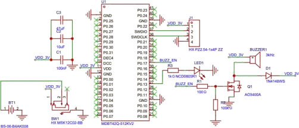
22.低功耗蓝牙蜂鸣寻物标签用手机连接标签，让它响起来。团队围绕纽扣电池供电、蓝牙连接和蜂鸣器控制，制作了一枚低功耗寻物标签。

本项目基于nRF52832芯片，开发了一款可通过手机控制的低功耗蓝牙蜂鸣寻物标签。设备采用CR2032电池供电，由SW1开关控制通断。
在固件逻辑上，系统上电后首先初始化GPIO，将高电平有效的P0.17引脚初始置低，防止蜂鸣器上电误响。针对自制PCB未外接32.768kHz晶振的情况，系统改用芯片内部RC低频时钟，确保BLE协议栈及Nordic_LBS服务的正常初始化与广播。
交互方面，用户通过手机端nRF Connect软件扫描并连接标签，向LBS可写特征发送ON/OFF指令。固件回调函数接收后改变P0.17引脚电平，驱动A03400A MOSFET导通或截止，从而控制蜂鸣器发声或停止。
在寻物定位上，采用“RSSI粗测+蜂鸣精确定位”的双重逻辑：用户先根据手机端RSSI信号强度（数值越接近0距离越近）判断大致方位，最终依靠蜂鸣器的声音在近距离内实现精准寻找。
mentor孔繁晔
本项目设计并实现了一款基于低功耗蓝牙技术的便携式蜂鸣寻物标签。设备可固定在钥匙、耳机盒等容易遗失的物品上。用户通过手机连接标签后，可以远程控制蜂鸣器发声，并结合手机显示的蓝牙信号强度判断大致寻找方向，最终依靠声音完成近距离定位。
项目选用 Raytac MDBT42Q-512KV2 作为主控模块。该模块内部集成 Nordic nRF52832 芯片、32 MHz 高频晶振和2.4 GHz陶瓷天线，具有体积小、功耗低、蓝牙功能完善等特点。nRF52832 内含 512 KB Flash 和 64 KB RAM，能够运行 Zephyr 实时操作系统、低功耗蓝牙协议栈以及本项目的控制程序。与直接使用裸芯片相比，模块化方案减少了高频晶振和射频天线部分的设计难度，更适合小型蓝牙设备的开发。
设备以 CR2032 纽扣电池供电，通过 SW1 机械开关控制整机电源。最终产品的主要运行过程如下：
1. 打开电源开关后，nRF52832 初始化 GPIO、低频时钟和蓝牙协议栈。
2. 固件启动 Nordic LED Button Service，即 LBS，并以“Nordic_LBS”作为设备名称进行蓝牙广播。
3. 手机使用 nRF Connect 等蓝牙调试软件扫描并连接设备。
4. 手机向 LBS 的可写特征写入 ON 或 OFF。
5. 固件中的回调函数接收到写入状态，并将 P0.17 引脚输出为高电平或低电平。
6. P0.17 控制 AO3400A N 沟道 MOSFET导通或截止，进而控制有源蜂鸣器发声或停止。
7. 用户可以观察手机显示的 RSSI 数值。当 RSSI 总体上逐渐接近0时，通常说明手机正在接近标签；进入较近范围后，再通过蜂鸣声完成最终定位。
需要说明的是，RSSI 会受到人体遮挡、物体材质、天线方向、空间反射和环境干扰等因素影响，因此本项目将其作为“远、中、近”和寻找方向的辅助依据，而不把它当作精确的距离测量结果。
项目初期先使用 nRF52 DK 开发板运行 Blinky 和 Nordic peripheral_lbs 官方示例，分别验证 GPIO、编译烧录工具链、BLE 广播、手机连接和 GATT 数据写入功能。开发板测试成功后，再将程序迁移到自制 PCB。
这种方式的目的是建立一条可靠基线：如果官方示例在开发板上可以运行，而迁移到自制板后出现问题，就应重点检查自制板的引脚、时钟、电源、焊接和设备树配置，而不是一开始就怀疑整个 SDK。
官方示例原本通过 DK 开发板专用的 dk_buttons_and_leds 接口控制板载按键和指示灯，但自制 PCB 没有相同的硬件结构，因此不能直接照搬。
项目将其改为 Zephyr 通用 GPIO 接口，通过设备树别名找到自制板上的输出引脚。其中，P0.17 被定义为蜂鸣器使能信号 buzz-en，由手机写入的 ON/OFF 状态直接控制。
与此同时，在 Overlay 中关闭开发板默认的 button1、led0 和 pwm0，防止这些默认设备再次占用项目需要的 GPIO。修改后，P0.17 只承担蜂鸣器控制功能，解决了“一根引脚被多个功能同时使用”的冲突。
一次手动代码修改中，int main(void) 后缺少左花括号。这个局部错误导致编译器无法正确识别函数体，继而产生大量看似无关的错误信息。
最终从编译器输出的第一条错误开始排查，找到缺失的花括号并修复，后续连锁错误随之消失。此次问题说明：编译日志中的第一条错误通常最接近根本原因，后面的几十条错误可能只是语法结构被破坏后的连锁结果。
nRF52 DK 开发板带有外部32.768 kHz低频晶振，而本项目的自制 PCB 没有安装该晶振。程序最初仍沿用了开发板默认配置，导致固件虽然能够完成编译和烧录，但蓝牙初始化或广播可能无法正常进行。
随后在 prj.conf 中加入：
Plain Text
CONFIG_CLOCK_CONTROL_NRF_K32SRC_RC=y
该配置让 nRF52832 使用内部 RC 振荡器产生低频时钟，使程序设置与实际硬件一致。修改后，蓝牙协议栈能够继续完成初始化和广播。
修改 Overlay、Kconfig 或引脚配置后，曾出现“代码已经修改，但运行结果没有变化”的现象。原因是构建目录中保留着旧的 CMake 缓存、设备树生成结果和 Kconfig 配置。
执行 Pristine Build 后，系统删除原构建目录并重新生成所有配置，新的设备树和时钟设置才真正进入固件。
此次问题说明，普通 Build 主要重新编译发生变化的文件，而 Pristine Build 会从干净状态重新配置工程。涉及设备树、板级配置、Kconfig 或构建目标变化时，应优先使用 Pristine Build。
自制 PCB 调试时曾出现以下错误：
Plain Text
Failed to write DebugPort register 0x08
No probes connected via USB
Could not connect to target
调试期间还读到过不断变化的芯片识别码，而稳定连接时应读取到固定的 0x2BA01477。变化的识别码说明 SWD 物理通信存在误码，重点应检查供电、共地、焊点、线长和接触情况。
项目通过检查 VDD、GND、SWDIO、SWDCLK，清理模块焊点、缩短连接线、改善排针接触并降低 SWD 速度，最终成功完成 Program、Verify 和运行。
此外，J-Link Commander、RTT Viewer、烧录任务等程序不能同时争用同一个 J-Link。关闭多余进程后，“探针不存在”或“无法连接目标”的问题明显减少。
自制 PCB 没有配置独立 UART 串口输出，因此项目启用了 SEGGER RTT：
Plain Text
CONFIG_USE_SEGGER_RTT=y
CONFIG_RTT_CONSOLE=y
CONFIG_UART_CONSOLE=n
RTT 通过 J-Link 读取芯片 RAM 中的日志缓冲区，不需要额外串口芯片。调试时可以依次看到：
Plain Text
Starting Bluetooth Peripheral LBS sample
Bluetooth initialized
Advertising successfully started
Connected
LBS output ON
LBS output OFF
这些日志分别证明主程序开始运行、蓝牙协议栈初始化成功、广播启动、手机建立连接，以及控制命令进入应用回调。
项目最初设计了可见光辅助提示，但反复检查连接、极性、GPIO方向、输出寄存器和代码后，仍未获得稳定而有效的显示结果。与此同时，小尺寸发光器件亮度有限，外壳又因 SWD 排针而较高，即使增加开孔和导光管，整机表面的光线仍然很弱。
由于蜂鸣器已经能够提供足够清晰的声音提示，最终取消可见光功能，将产品范围收敛为“BLE 连接控制、蜂鸣寻物和 RSSI 辅助判断”。这一调整减少了无效调试、结构开孔和验收项目，使项目目标更加明确。
---
本项目固件基于 Nordic nRF Connect SDK 3.4.0、Zephyr RTOS 和官方 peripheral_lbs 示例开发。主要代码和配置文件如下。
main.c 负责整个设备的运行流程，包括 GPIO 初始化、蓝牙初始化、LBS 服务注册、广播启动、连接状态处理和蜂鸣器控制。
Plain Text
static const struct gpio_dt_spec buzzer_enable =
GPIO_DT_SPEC_GET(DT_ALIAS(buzz_en), gpios);
这段代码通过设备树别名 buzz-en 获取蜂鸣器对应的 GPIO 信息。具体端口和引脚不直接写死在 C 文件中，而是由 Overlay 描述。
Plain Text
static void app_led_cb(bool led_state)
{
int buzzer_err = gpio_pin_set_dt(&buzzer_enable, led_state);
}
手机向 LBS 可写特征写入 ON 或 OFF 后，Nordic 服务代码调用该函数。虽然函数名 app_led_cb 中保留了官方示例的 LED 命名，但在本项目中，布尔变量实际表示蜂鸣器开关状态。
当 led_state 为1时，P0.17输出高电平，AO3400A 导通，蜂鸣器发声；为0时，P0.17输出低电平，MOSFET 截止，蜂鸣器停止。
Plain Text
static bool app_button_cb(void)
{
return false;
}
官方示例支持开发板按键状态上报，但自制 PCB 没有 GPIO 用户按键。SW1是串联在电源路径中的机械开关，程序无法读取其状态，因此回调固定返回 false。
Plain Text
err = bt_enable(NULL);
该函数启动蓝牙协议栈。返回值为0表示成功，非0表示初始化失败。
Plain Text
err = bt_lbs_init(&lbs_callbacks);
该函数注册 LBS 服务，并把项目定义的回调函数交给服务层。当手机写入特征值时，服务层即可调用项目的蜂鸣器控制函数。
Plain Text
bt_le_adv_start(BT_LE_ADV_CONN_FAST_2,
ad, ARRAY_SIZE(ad),
sd, ARRAY_SIZE(sd));
该函数启动可连接的 BLE 广播。广播数据中包含设备名称 Nordic_LBS，扫描响应中包含 LBS 服务 UUID，使手机能够发现并识别设备。
connected() 在手机连接成功后执行，disconnected() 记录断开原因，recycled_cb() 在旧连接对象释放后重新启动广播，使标签断开后还能再次被手机发现。
Plain Text
k_sleep(K_FOREVER);
完成初始化后，主线程无限期休眠。蓝牙事件、连接事件和 GATT 写入由 Zephyr 的协议栈、回调函数及工作队列处理，不需要在 while(1) 中持续轮询。
Overlay 用于覆盖 nRF52 DK 的默认板级配置，使工程适配自制 PCB。
其中：
Plain Text
buzz-en = &buzz_en;
建立蜂鸣器设备树别名。
Plain Text
buzz_en: buzzer_enable {
gpios = <&gpio0 17 GPIO_ACTIVE_HIGH>;
};
表示蜂鸣器控制信号连接 GPIO0 的17号引脚，即 P0.17，并且高电平有效。
Overlay 还关闭了 button1、led0 和 pwm0，防止开发板默认外设占用自制板所需引脚。
prj.conf 决定哪些 Zephyr 和 Nordic 功能进入最终固件。
主要配置包括：
Plain Text
CONFIG_BT=y
CONFIG_BT_PERIPHERAL=y
启用蓝牙并将设备配置为 BLE 外设。
Plain Text
CONFIG_BT_DEVICE_NAME="Nordic_LBS"
设置手机扫描时显示的设备名称。
Plain Text
CONFIG_BT_LBS=y
启用 Nordic LBS 服务。
Plain Text
CONFIG_CLOCK_CONTROL_NRF_K32SRC_RC=y
使用 nRF52832 内部 RC 低频时钟，匹配自制 PCB 没有外部32.768 kHz晶振的情况。
Plain Text
CONFIG_USE_SEGGER_RTT=y
CONFIG_RTT_CONSOLE=y
CONFIG_UART_CONSOLE=n
启用 RTT 日志并关闭 UART 控制台。
Plain Text
CONFIG_BT_LBS_SECURITY_ENABLED=n
调试阶段暂时关闭配对安全功能，便于反复连接和测试。
Plain Text
find_package(Zephyr REQUIRED HINTS $ENV{ZEPHYR_BASE})
project(peripheral_lbs)
target_sources(app PRIVATE
src/main.c
)
其中 target_sources 将 src/main.c 加入最终应用程序。之后由 CMake 生成构建规则，再由 Ninja 执行编译和链接。
该文件保留了开发板阶段能够正常运行的代码版本，用于和自制 PCB 版本进行比较。当自制板程序发生问题时，可以返回开发板基线，判断问题来自通用 BLE 逻辑，还是自制硬件适配。
---
CR2032纽扣电池提供约3 V电压，经过 SW1 机械开关形成 VDD_3V 电源网络。打开 SW1 后，电池为主控模块、蜂鸣器和外围电路供电；关闭 SW1 后，电池与系统断开。
CR2032体积小、无需充电管理，适合便携式标签，但其内阻相对较大，带载能力有限。蜂鸣器启动或蓝牙发射时可能产生瞬时电流，使电源电压下降，因此电路设置了不同容量的电容进行去耦和储能。
U1采用 MDBT42Q-512KV2 模块，内部包含 nRF52832、32 MHz 高频晶振、射频匹配电路和2.4 GHz陶瓷天线。
nRF52832负责运行程序、执行 BLE 协议栈、接收手机命令并输出 P0.17控制电平。模块通过天线把电信号转换为2.4 GHz电磁波进行发射，也将接收到的电磁波转换为芯片能够处理的电信号。
模块的天线端放在 PCB 边缘，并设置净空区。净空区内避免放置铜箔、走线、元件、电池和其他金属物体，以免吸收无线能量、改变天线谐振点、破坏约50 Ω的射频阻抗匹配或使辐射方向发生明显变化。
P0.17通过100 Ω电阻 R1连接 AO3400A 的栅极。AO3400A 是 N 沟道 MOSFET，在电路中作为低端开关。
电流路径为：
Plain Text
VDD_3V → 蜂鸣器 → AO3400A漏极
AO3400A源极 → GND
当 P0.17输出高电平时，MOSFET 导通，蜂鸣器与地形成完整回路并发声；当 P0.17输出低电平时，MOSFET 截止，电流回路断开，蜂鸣器停止。
之所以不让 GPIO 直接给蜂鸣器供电，是因为 GPIO 的安全输出电流有限，而蜂鸣器属于负载。MOSFET 可以用很小的栅极控制电流开关较大的负载电流，从而保护 MCU。
R1为100 Ω栅极串联电阻。MOSFET 栅极具有电容特性，切换电平时会产生短暂充放电电流。R1用于限制瞬时电流、减弱高速边沿造成的振铃和电磁干扰。
R2为100 kΩ下拉电阻，连接 MOSFET 栅极与 GND。当 MCU 尚未启动、复位或 GPIO 处于高阻态时，R2把栅极稳定拉到低电平，使 MOSFET 默认截止，防止蜂鸣器误响。
D1为1N4148WS二极管，反向并联在蜂鸣器两端。正常供电时二极管反向截止；MOSFET 关断时，如果电磁蜂鸣器产生反向电压尖峰，D1为剩余电流提供释放通路，降低 MOSFET 漏极上的过电压。
C1为100 nF去耦电容，主要处理主控高速开关造成的高频电源波动，应尽量靠近模块电源引脚。
C2为10 μF电容，用于稳定较低频率的电源变化。
C3为47 μF储能电容，在蜂鸣器启动或无线发射产生瞬时电流需求时提供局部能量，减轻 CR2032内阻造成的电压下降。
J1为四针 SWD 调试排针，包含：
Plain Text
VDD_3V
SWDIO
SWDCLK
GND
SWDIO负责双向传输调试数据，SWDCLK提供调试时钟，GND保证调试器与目标板具有共同电位参考。VDD_3V主要提供目标电压参考，让 J-Link 判断目标板的逻辑电平。
该接口用于固件烧录、Flash校验、寄存器读取、CPU暂停与恢复以及 RTT 日志调试。
---
本项目 PCB 尺寸约为39.50 mm × 25.95 mm × 1.60 mm。外壳采用盒体与滑入式顶盖结构，经过多次建模与3D打印调整后，顶盖能够顺畅推入，同时不会轻易脱落；PCB装入后能够被卡住，减少内部晃动。
机械结构设计主要考虑以下因素：
1. PCB 没有专用机械安装孔，因此不适合直接使用螺钉固定。
2. CR2032电池座位于 PCB 底面，占据较大面积和厚度。外壳底部必须为电池座预留足够空间，同时保证电池能够安装和更换。
3. SW1是日常使用的电源开关，PCB需要容易取出以开关。
4. J1使用2.54 mm直排针，便于烧录和调试，但高度较大，直接限制了外壳的最小厚度。
本项目最初还为可见光提示设计了外壳开孔和导光管。但由于发光器件本身较小且发光强度弱、外壳受排针影响较高，光在较长导光路径中又发生反射、散射和吸收，实际亮度过低，因此最终取消了该功能。
---
首先在 nRF52 DK 上烧录 Blinky，确认 SDK、编译器、CMake、Ninja、J-Link和基础 GPIO 均能正常工作。随后运行 peripheral_lbs，使用手机确认设备能够广播、连接并接收 GATT 写入命令。完成开发板基线后，才将程序迁移到自制 PCB。
自制 PCB 焊接完成后，先进行断电检查，包括电源与地是否短路、开关通断是否正确、元件方向是否正确以及关键焊点是否存在连锡。SW1断开时测得很高的电阻，闭合时接近0 Ω，说明机械开关本身正常。断电后测到的残余电压主要来自电容放电、万用表高输入阻抗或调试器连接造成的微弱回馈，不能直接据此判断开关损坏。
接入 J-Link 后，项目经历了 SWD 无法识别、芯片识别码变化、DebugPort 写入失败和探针被占用等问题。通过检查目标供电、共地、SWD接线、焊点和软件占用情况，并降低 SWD 时钟频率，最终稳定识别芯片并完成固件烧录和校验。
固件启动后，通过 RTT 日志逐层确认：
Plain Text
Starting Bluetooth Peripheral LBS sample
证明 CPU 已进入主程序。
Plain Text
Bluetooth initialized
证明蓝牙协议栈初始化成功。
Plain Text
Advertising successfully started
证明固件已经启动 BLE 广播。
手机能够看到 Nordic_LBS，证明广播信号已通过天线发出并被手机接收；手机能够连接，证明链路建立成功；手机写入 ON/OFF 后 RTT 打印对应状态，证明 GATT 写入和应用回调正常；蜂鸣器最终同步发声和停止，证明 P0.17、MOSFET、电源和负载链路全部闭合。
本项目中，AI 主要承担知识辅助、代码分析、故障排查和文档整理四类工作。
在知识学习方面，我使用 AI 辅助理解 MCU、GPIO、引脚悬空、阻抗、晶振、RC 低频时钟、MOSFET、去耦电容、天线净空区、设备树、Kconfig、CMake、SWD、RTT、BLE、GATT、RSSI等概念，并把抽象知识与项目中的 P0.17、AO3400A、蜂鸣器、CR2032 和 MDBT42Q 模块联系起来。
在故障排查方面，AI协助分析了编译错误、配置缓存、低频时钟源不匹配、J-Link 占用、SWD 信号不稳定、RTT 无日志以及蓝牙无法广播等现象，并帮助建立了逐层验证思路：
“源代码检查→编译结果→生成配置→烧录校验→主程序日志→蓝牙初始化→广播→手机连接→回调执行→GPIO 状态→蜂鸣器动作”。
AI的回答并非全部直接采用。例如，调试过程中曾出现过引脚编号、SWD 管脚属性和 VTref 作用理解不准确的情况，之后通过芯片资料、模块原理图、J-Link 日志、寄存器读取和实物测量进行了纠正。因此，本项目将 AI 作为提高检索、分析和总结效率的辅助工具，而不是代替数据手册、实验测量和实物验证。
在文档整理方面，AI协助梳理整体开发过程，反复明确项目运行框架，并将分散的调试记录和故障原因进行整理归纳。
本项目让我完整经历了从需求分析、元件选择、原理图和 PCB 设计，到焊接、烧录调试、结构设计和功能取舍的全过程。
调试过程中最重要的收获，是要在完整的调试链上把每一步都确认无误，才能判断设备已经正常。编译成功只能说明代码通过了编译；烧录成功只能说明程序进入了芯片；看到蓝牙广播才能说明协议栈和射频部分基本运行；手机写入命令后蜂鸣器真正发声，才证明完整功能链路成立。因此，排障时必须逐层收集证据，确定问题究竟位于代码、配置、烧录、通信、电路还是机械结构。此外，这次经历让我有了一些从代价中取得的经验，可能有些蠢，比如接线不稳定的问题，但如果没有从一开始就把这些细节确保做好，后续可能会绕很大的弯子去找原因还找不到，甚至可能往错误的极端方向进行的程序的修改等等等等。
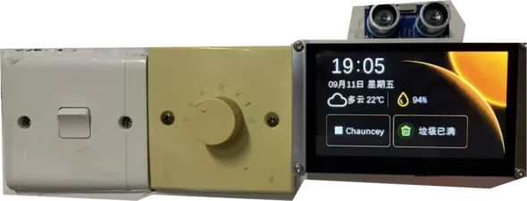
23.寝室值日信息看板寝室值日信息看板：（1）通过超声传感器检测垃圾桶是否已满，将相关信息通过 ESP-NOW 无线传输至看板端，自动显示并提醒值日生倒垃圾（再也不用担心我不好意思提醒室友倒垃圾了）（2）联网获取时间及天气信息，用于向寝室成员推送相关提醒
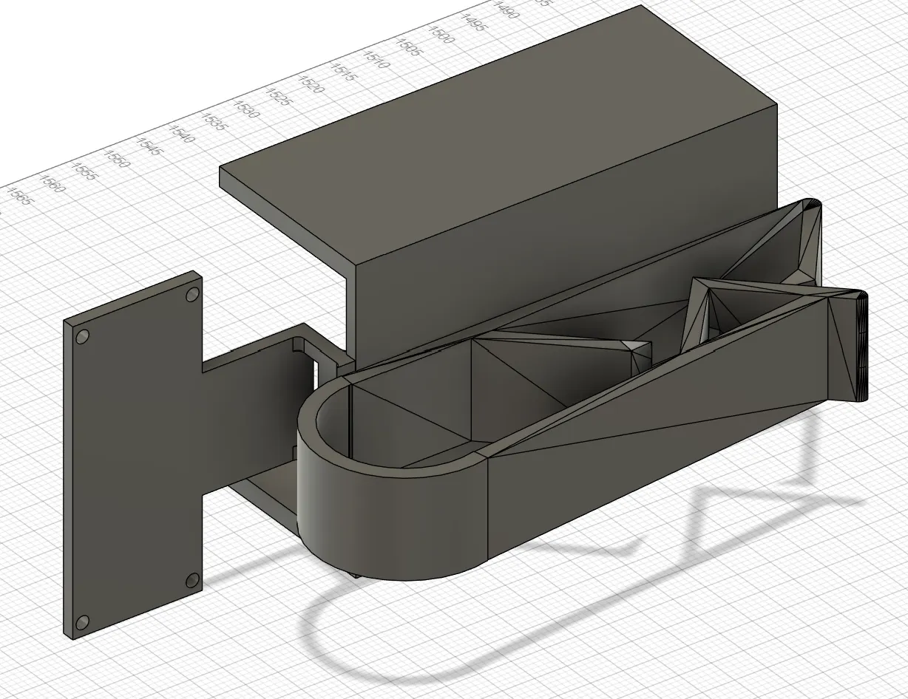

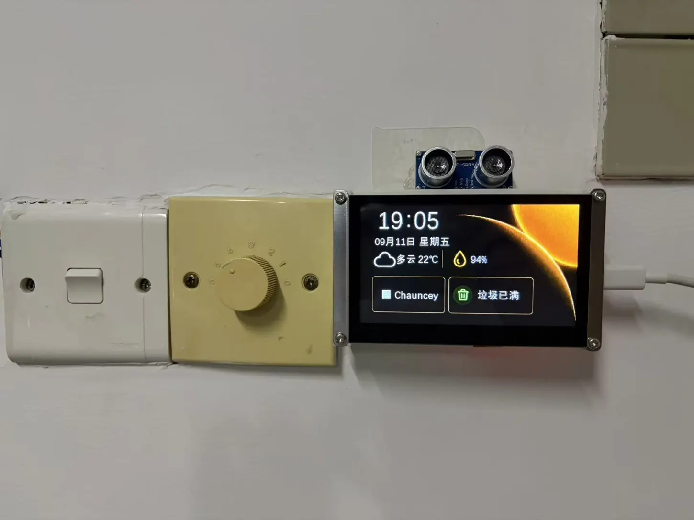
项目名称：寝室日常信息看板
mentor：汪琪峰
作为一个日常看板，它能显示一些很日常的信息（
- 和传感器模块远程互联，计算距离显示垃圾桶有没有满，，以及值日生是谁，及时提醒懒惰的室友倒垃圾
- 连接wifi，利用NTP校时显示目前的时间、日期和星期信息
- 连接wifi，调用天气信息API，显示实时天气信息
- 检测有无人靠近，自动亮屏/息屏
后续经过面谈，觉得这个天气信息还不够准。在佳朔哥的建议下去学习了一个通过超声波测距反馈有无雨滴的测下雨装置，信息通过esp-now远程传输给看板，实现（应该是）最精准的下雨检测。但目前时间不够只完成了电路原理图的学习和设计，打板还没打出来
MCU：ESP32S（显示屏端）/ESP32C（传感器端）
显示屏：4.3寸陶晶驰串口电容屏
传感器（测距用）：HC-SR04超声传感器
> 最开始想用红外传感器测距，但调研后发现红外传感器测距会受到垃圾袋、玻璃瓶、塑料瓶等折射影响，最后选了超声传感器
>
>
- 显示屏端
C++
// ==================== WiFi ====================
const char* ssid = "Chance07";
const char* password = "11335588";
// ==================== QWeather ====================
const char* host = "mg564wvdu3.re.qweatherapi.com";
const char* apiKey = "c47dede5ead644b2a232f27556e5da1b";
// 紫金港经纬度
const char* latitude = "30.30";
const char* longitude = "120.08";
// ==================== 设置 ====================
// 屏幕时间：每30秒刷新
const unsigned long CLOCK_INTERVAL =
30UL * 1000UL;
// 联网：每10分钟
const unsigned long ONLINE_INTERVAL =
10UL * 60UL * 1000UL;
// HC-SR04引脚
const int echoPin = 4;
const int trigPin = 5;
// 自动息屏检测
bool screenOn = false;
unsigned long lastPersonDetected = 0;
const unsigned long SCREEN_ON_TIME = 90UL*1000UL; // 90秒
const float PERSON_DISTANCE = 100.0f; // 1米以内认为有人
C++
// ==================== 淘晶驰 ====================
HardwareSerial tjc(1);
void sendEnd()
{
tjc.write(0xFF);
tjc.write(0xFF);
tjc.write(0xFF);
}
void sendCmd(const String& cmd)
{
tjc.print(cmd);
sendEnd();
}
void sendASCII(
const char* obj,
const String& text
)
{
tjc.print(obj);
tjc.print(".txt="");
tjc.print(text);
tjc.print(""");
sendEnd();
}
void sendGBText(
const char* obj,
const uint8_t* text,
size_t len
)
{
tjc.print(obj);
tjc.print(".txt="");
tjc.write(text, len);
tjc.print(""");
sendEnd();
}
// ==================== GB2312 ====================
// 月
const uint8_t GB_MONTH[] = {
0xD4, 0xC2
};
// 日
const uint8_t GB_DAY[] = {
0xC8, 0xD5
};
// 星
const uint8_t GB_XING[] = {
0xD0, 0xC7
};
// 期
const uint8_t GB_QI[] = {
0xC6, 0xDA
};
// 日 一 二 三 四 五 六
const uint8_t WEEKDAY[7][2] = {
{0xC8, 0xD5},
{0xD2, 0xBB},
{0xB6, 0xFE},
{0xC8, 0xFD},
{0xCB, 0xC4},
{0xCE, 0xE5},
{0xC1, 0xF9}
};
// 垃圾未满
const uint8_t TXT_NOT_FULL[] = {
0xC0, 0xAC,
0xBB, 0xF8,
0xCE, 0xB4,
0xC2, 0xFA
};
// 垃圾已满
const uint8_t TXT_FULL[] = {
0xC0, 0xAC,
0xBB, 0xF8,
0xD2, 0xD1,
0xC2, 0xFA
};
// 晴
const uint8_t GB_QING[] = {
0xC7, 0xE7
};
// 多云
const uint8_t GB_DUOYUN[] = {
0xB6, 0xE0,
0xD4, 0xC6
};
// 阴
const uint8_t GB_YIN[] = {
0xD2, 0xF5
};
// 小雨
const uint8_t GB_XIAOYU[] = {
0xD0, 0xA1,
0xD3, 0xEA
};
// 中雨
const uint8_t GB_ZHONGYU[] = {
0xD6, 0xD0,
0xD3, 0xEA
};
// 大雨
const uint8_t GB_DAYU[] = {
0xB4, 0xF3,
0xD3, 0xEA
};
// ℃
const uint8_t GB_CELSIUS[] = {
0xA1, 0xE6
};
- 串口屏发送格式限制
例如发送文本需要
t1.txt="内容" 0xFF 0xFF 0xFF
- ESP发送的字库为UTF=8，串口屏显示的字库为GB2312，需要提前把要发的文字封装成GB2312的形式再发送，否则会乱码
C++
// ==================== 日期显示 ====================
void sendDate(const struct tm& t)
{
char month[3];
char day[3];
snprintf(
month,
sizeof(month),
"%02d",
t.tm_mon + 1
);
snprintf(
day,
sizeof(day),
"%02d",
t.tm_mday
);
// date.txt="08月28日 星期五"
tjc.print("date.txt="");
tjc.print(month);
tjc.write(
GB_MONTH,
sizeof(GB_MONTH)
);
tjc.print(day);
tjc.write(
GB_DAY,
sizeof(GB_DAY)
);
tjc.print(" ");
tjc.write(
GB_XING,
sizeof(GB_XING)
);
tjc.write(
GB_QI,
sizeof(GB_QI)
);
tjc.write(
WEEKDAY[t.tm_wday],
2
);
tjc.print(""");
sendEnd();
}
// ==================== 更新时间显示 ====================
void updateClock()
{
struct tm t;
// 这里只读取ESP32内部时钟
if (!getLocalTime(&t, 20))
return;
sendCmd(
"hour.val=" +
String(t.tm_hour)
);
sendCmd(
"min.val=" +
String(t.tm_min)
);
sendDate(t);
}
// ==================== NTP 校时 ====================
// 注意：调用这个函数前
// WiFi已经连接成功
bool syncTime()
{
// 北京时间
configTzTime(
"CST-8",
"ntp.aliyun.com",
"ntp1.aliyun.com",
"pool.ntp.org"
);
struct tm timeinfo;
unsigned long start =
millis();
while (
!getLocalTime(
&timeinfo,
1000
)
)
{
if (
millis() - start >
15000
)
{
return false;
}
}
return true;
}
- NTP校时，把实时的日期、星期、时间信息同步到ESP32中
- 日期显示，将实时天气发送给串口屏
C++
// ==================== ESP-NOW 数据 ====================
struct DataPacket
{
float distance1;
};
DataPacket receivedData;
volatile bool newData = false;
// ==================== ESP-NOW 接收 ====================
void onDataReceived(
const uint8_t* mac,
const uint8_t* incomingData,
int len
)
{
if (len != sizeof(DataPacket))
return;
memcpy(
&receivedData,
incomingData,
sizeof(DataPacket)
);
newData = true;
}
// ==================== 垃圾桶状态 ====================
void updateTrash(float distance)
{
if (distance > 25.0f)
{
sendGBText(
"t4",
TXT_NOT_FULL,
sizeof(TXT_NOT_FULL)
);
}
else
{
sendGBText(
"t4",
TXT_FULL,
sizeof(TXT_FULL)
);
}
}
// ==================== 初始化 ESP-NOW ====================
bool initEspNow()
{
WiFi.mode(WIFI_STA);
if (
esp_wifi_set_channel(
ESPNOW_CHANNEL,
WIFI_SECOND_CHAN_NONE
) != ESP_OK
)
{
return false;
}
if (esp_now_init() != ESP_OK)
{
return false;
}
esp_now_register_recv_cb(
onDataReceived
);
return true;
}
- 通过ESP-NOW无线传输方式接受传感器端发送来的数据包DataPacke
并用数据包中的距离数据判断垃圾桶情况
- ESP-NOW初始化的封装函数
启动WIFI模式并确定无线连接信道，注册回调函数
- ESP-NOW数据包接受的封装函数
Java
// ==================== 天气显示 ====================
void showWeather(int code)
{
if (code == 100)
{
sendGBText(
"weather",
GB_QING,
sizeof(GB_QING)
);
}
else if (
code >= 101 &&
code <= 103
)
{
sendGBText(
"weather",
GB_DUOYUN,
sizeof(GB_DUOYUN)
);
}
else if (code == 104)
{
sendGBText(
"weather",
GB_YIN,
sizeof(GB_YIN)
);
}
else if (
code >= 300 &&
code <= 305
)
{
sendGBText(
"weather",
GB_XIAOYU,
sizeof(GB_XIAOYU)
);
}
else if (code == 306)
{
sendGBText(
"weather",
GB_ZHONGYU,
sizeof(GB_ZHONGYU)
);
}
else
{
sendGBText(
"weather",
GB_DAYU,
sizeof(GB_DAYU)
);
}
}
// ==================== 温度显示 ====================
void showTemperature(
int temperature
)
{
tjc.print(
"temp.txt=""
);
tjc.print(
temperature
);
tjc.write(
GB_CELSIUS,
sizeof(GB_CELSIUS)
);
tjc.print(""");
sendEnd();
}
// ==================== 获取天气 ====================
// 注意：调用这个函数前
// WiFi已经连接成功
bool getWeather()
{
WiFiClientSecure client;
client.setInsecure();
HTTPClient http;
String url =
String(host) +
"/weather/v1/current/" +
latitude +
"/" +
longitude +
"?localTime=true&lang=zh";
if (
!http.begin(
client,
url
)
)
{
return false;
}
http.addHeader(
apiKey
);
// 和风天气返回gzip
http.addHeader(
"Accept-Encoding",
"gzip"
);
int httpCode =
http.GET();
if (httpCode != 200)
{
http.end();
return false;
}
// 删除上一次文件
LittleFS.remove(
"/weather.json"
);
// ====================
// Gzip解压
// ====================
GzUnpacker gzip;
bool gzipOK =
gzip.gzStreamExpander(
http.getStreamPtr(),
LittleFS,
"/weather.json"
);
if (!gzipOK)
{
http.end();
return false;
}
http.end();
// ====================
// 打开JSON文件
// ====================
File file =
LittleFS.open(
"/weather.json",
"r"
);
if (!file)
{
return false;
}
// ====================
// JSON解析
// ====================
JsonDocument doc;
DeserializationError error =
deserializeJson(
doc,
file
);
file.close();
if (error)
{
return false;
}
// ====================
// 提取数据
// ====================
int weatherCode =
doc["condition"]["code"]
.as<int>();
int temperature =
round(
doc["temperature"]["value"]
.as<float>()
);
int humidity =
round(
doc["humidity"]
.as<float>() *
100.0f
);
// ====================
// 发给淘晶驰
// ====================
showWeather(
weatherCode
);
delay(20);
showTemperature(
temperature
);
delay(20);
sendASCII(
"rh",
String(humidity) + "%"
);
return true;
}
- 通过调用API请求天气数据
- 将天气数据发送给串口屏
C++
// ==================== 连接 WiFi ====================
bool connectWiFi()
{
WiFi.mode(WIFI_STA);
WiFi.begin(
ssid,
password
);
unsigned long start =
millis();
while (
WiFi.status() !=
WL_CONNECTED
)
{
if (
millis() - start >
20000
)
{
WiFi.disconnect();
delay(300);
// 恢复ESP-NOW信道
esp_wifi_set_channel(
ESPNOW_CHANNEL,
WIFI_SECOND_CHAN_NONE
);
return false;
}
delay(200);
}
return true;
}
// ==================== 断开 WiFi ====================
void disconnectWiFi()
{
WiFi.disconnect();
delay(300);
// 回到ESP-NOW Channel 1
esp_wifi_set_channel(
ESPNOW_CHANNEL,
WIFI_SECOND_CHAN_NONE
);
}
// ==================== 联网更新 ====================
void updateOnlineData()
{
if (!connectWiFi())
{
return;
}
// WiFi刚连上后，给网络一点稳定时间
delay(2000);
// 1. NTP校时
if (syncTime())
{
updateClock();
}
// 2. 获取天气，失败就重试
bool weatherOK = false;
for (int i = 0; i < 3; i++)
{
if (getWeather())
{
weatherOK = true;
break;
}
// 请求失败后先等2秒再试
delay(2000);
}
// 3. 再多保留1秒，确保TJC命令发完
delay(1000);
// 4. 最后再断WiFi
disconnectWiFi();
}
- 连接WIFI的函数封装，处理WIFI和ESP-NOW两种无线通信方式的信道矛盾情况，实现自动切换信道
- 连接WIFI后自动调用之前的NTP校时和天气函数，更新时间和天气数据
JavaScript
// ==================== Setup ====================
void setup()
{
pinMode(trigPin, OUTPUT);
pinMode(echoPin, INPUT);
tjc.begin(
115200,
SERIAL_8N1,
TJC_RX,
TJC_TX
);
delay(1500);
sendCmd("dim=0");
// ====================
// LittleFS
// ====================
LittleFS.begin(true);
// ====================
// 开机先联网一次
//
// NTP + 天气
// ====================
updateOnlineData();
// ====================
// 初始化ESP-NOW
// ====================
initEspNow();
// ====================
// 定时器初始化
// ====================
lastClockUpdate =
millis();
lastOnlineUpdate =
millis();
}
- Setup
初始化引脚和串口屏串口
C++
// ==================== Loop ====================
void loop()
{
unsigned long now =
millis();
// ====================
// ESP-NOW垃圾桶数据
// ====================
if (newData)
{
float distance =
receivedData.distance1;
newData = false;
updateTrash(
distance
);
}
// ====================
// 每30秒刷新屏幕时间
//
// 只读取本地系统时钟
// 不联网
// ====================
if (
now - lastClockUpdate >=
CLOCK_INTERVAL
)
{
lastClockUpdate = now;
updateClock();
}
// ====================
// 每10分钟联网一次
//
// NTP校时
// +
// 获取天气
// ====================
if (
now - lastOnlineUpdate >=
ONLINE_INTERVAL
)
{
lastOnlineUpdate = now;
updateOnlineData();
}
delay(5);
//检测人
static unsigned long lastDistanceCheck = 0;
if (millis() - lastDistanceCheck >= 500)
{
lastDistanceCheck = millis();
float distance = getDistance();
// 1米以内认为有人靠近
if (distance < PERSON_DISTANCE)
{
lastPersonDetected = millis();
if (!screenOn)
{
sendCmd("dim=100");
screenOn = true;
}
}
}
// 90秒没有检测到人
if (
screenOn &&
millis() - lastPersonDetected >= SCREEN_ON_TIME
)
{
sendCmd("dim=0");
screenOn = false;
}
}
- Loop
持续刷新屏幕信息
持续判断有无人靠近控制亮屏息屏
C++
// ==================== WiFi ====================
const char* ssid = "6079";
const char* password = "11335588";
// ==================== QWeather ====================
const char* host = "mg564wvdu3.re.qweatherapi.com";
const char* apiKey = "c47dede5ead644b2a232f27556e5da1b";
// 紫金港经纬度
const char* latitude = "30.30";
const char* longitude = "120.08";
// ==================== 设置 ====================
// 屏幕时间：每30秒刷新
const unsigned long CLOCK_INTERVAL =
30UL * 1000UL;
// 联网：每10分钟
const unsigned long ONLINE_INTERVAL =
10UL * 60UL * 1000UL;
// HC-SR04引脚
const int echoPin = 4;
const int trigPin = 5;
// 自动息屏检测
bool screenOn = false;
unsigned long lastPersonDetected = 0;
const unsigned long SCREEN_ON_TIME = 90UL*1000UL; // 90秒
const float PERSON_DISTANCE = 100.0f; // 1米以内认为有人
// ==================== 淘晶驰 ====================
HardwareSerial tjc(1);
void sendEnd()
{
tjc.write(0xFF);
tjc.write(0xFF);
tjc.write(0xFF);
}
void sendCmd(const String& cmd)
{
tjc.print(cmd);
sendEnd();
}
void sendASCII(
const char* obj,
const String& text
)
{
tjc.print(obj);
tjc.print(".txt="");
tjc.print(text);
tjc.print(""");
sendEnd();
}
void sendGBText(
const char* obj,
const uint8_t* text,
size_t len
)
{
tjc.print(obj);
tjc.print(".txt="");
tjc.write(text, len);
tjc.print(""");
sendEnd();
}
// ==================== 距离检测 ===================
float getDistance()
{
digitalWrite(trigPin, LOW);
delayMicroseconds(2);
digitalWrite(trigPin, HIGH);
delayMicroseconds(10);
digitalWrite(trigPin, LOW);
long duration =
pulseIn(echoPin, HIGH, 30000);
if (duration == 0)
return 999;
return duration * 0.0343f / 2.0f;
}
// ==================== GB2312 ====================
// 月
const uint8_t GB_MONTH[] = {
0xD4, 0xC2
};
// 日
const uint8_t GB_DAY[] = {
0xC8, 0xD5
};
// 星
const uint8_t GB_XING[] = {
0xD0, 0xC7
};
// 期
const uint8_t GB_QI[] = {
0xC6, 0xDA
};
// 日 一 二 三 四 五 六
const uint8_t WEEKDAY[7][2] = {
{0xC8, 0xD5},
{0xD2, 0xBB},
{0xB6, 0xFE},
{0xC8, 0xFD},
{0xCB, 0xC4},
{0xCE, 0xE5},
{0xC1, 0xF9}
};
// 垃圾未满
const uint8_t TXT_NOT_FULL[] = {
0xC0, 0xAC,
0xBB, 0xF8,
0xCE, 0xB4,
0xC2, 0xFA
};
// 垃圾已满
const uint8_t TXT_FULL[] = {
0xC0, 0xAC,
0xBB, 0xF8,
0xD2, 0xD1,
0xC2, 0xFA
};
// 晴
const uint8_t GB_QING[] = {
0xC7, 0xE7
};
// 多云
const uint8_t GB_DUOYUN[] = {
0xB6, 0xE0,
0xD4, 0xC6
};
// 阴
const uint8_t GB_YIN[] = {
0xD2, 0xF5
};
// 小雨
const uint8_t GB_XIAOYU[] = {
0xD0, 0xA1,
0xD3, 0xEA
};
// 中雨
const uint8_t GB_ZHONGYU[] = {
0xD6, 0xD0,
0xD3, 0xEA
};
// 大雨
const uint8_t GB_DAYU[] = {
0xB4, 0xF3,
0xD3, 0xEA
};
// ℃
const uint8_t GB_CELSIUS[] = {
0xA1, 0xE6
};
// ==================== ESP-NOW 数据 ====================
struct DataPacket
{
float distance1;
};
DataPacket receivedData;
volatile bool newData = false;
// ==================== ESP-NOW 接收 ====================
void onDataReceived(
const uint8_t* mac,
const uint8_t* incomingData,
int len
)
{
if (len != sizeof(DataPacket))
return;
memcpy(
&receivedData,
incomingData,
sizeof(DataPacket)
);
newData = true;
}
// ==================== 垃圾桶状态 ====================
void updateTrash(float distance)
{
if (distance > 25.0f)
{
sendGBText(
"t4",
TXT_NOT_FULL,
sizeof(TXT_NOT_FULL)
);
}
else
{
sendGBText(
"t4",
TXT_FULL,
sizeof(TXT_FULL)
);
}
}
// ==================== 初始化 ESP-NOW ====================
bool initEspNow()
{
WiFi.mode(WIFI_STA);
if (
esp_wifi_set_channel(
ESPNOW_CHANNEL,
WIFI_SECOND_CHAN_NONE
) != ESP_OK
)
{
return false;
}
if (esp_now_init() != ESP_OK)
{
return false;
}
esp_now_register_recv_cb(
onDataReceived
);
return true;
}
// ==================== 日期显示 ====================
void sendDate(const struct tm& t)
{
char month[3];
char day[3];
snprintf(
month,
sizeof(month),
"%02d",
t.tm_mon + 1
);
snprintf(
day,
sizeof(day),
"%02d",
t.tm_mday
);
// date.txt="08月28日 星期五"
tjc.print("date.txt="");
tjc.print(month);
tjc.write(
GB_MONTH,
sizeof(GB_MONTH)
);
tjc.print(day);
tjc.write(
GB_DAY,
sizeof(GB_DAY)
);
tjc.print(" ");
tjc.write(
GB_XING,
sizeof(GB_XING)
);
tjc.write(
GB_QI,
sizeof(GB_QI)
);
tjc.write(
WEEKDAY[t.tm_wday],
2
);
tjc.print(""");
sendEnd();
}
// ==================== 更新时间显示 ====================
void updateClock()
{
struct tm t;
// 这里只读取ESP32内部时钟
if (!getLocalTime(&t, 20))
return;
sendCmd(
"hour.val=" +
String(t.tm_hour)
);
sendCmd(
"min.val=" +
String(t.tm_min)
);
sendDate(t);
}
// ==================== NTP 校时 ====================
// 注意：调用这个函数前
// WiFi已经连接成功
bool syncTime()
{
// 北京时间
configTzTime(
"CST-8",
"ntp.aliyun.com",
"ntp1.aliyun.com",
"pool.ntp.org"
);
struct tm timeinfo;
unsigned long start =
millis();
while (
!getLocalTime(
&timeinfo,
1000
)
)
{
if (
millis() - start >
15000
)
{
return false;
}
}
return true;
}
// ==================== 天气显示 ====================
void showWeather(int code)
{
if (code == 100)
{
sendGBText(
"weather",
GB_QING,
sizeof(GB_QING)
);
}
else if (
code >= 101 &&
code <= 103
)
{
sendGBText(
"weather",
GB_DUOYUN,
sizeof(GB_DUOYUN)
);
}
else if (code == 104)
{
sendGBText(
"weather",
GB_YIN,
sizeof(GB_YIN)
);
}
else if (
code >= 300 &&
code <= 305
)
{
sendGBText(
"weather",
GB_XIAOYU,
sizeof(GB_XIAOYU)
);
}
else if (code == 306)
{
sendGBText(
"weather",
GB_ZHONGYU,
sizeof(GB_ZHONGYU)
);
}
else
{
sendGBText(
"weather",
GB_DAYU,
sizeof(GB_DAYU)
);
}
}
// ==================== 温度显示 ====================
void showTemperature(
int temperature
)
{
tjc.print(
"temp.txt=""
);
tjc.print(
temperature
);
tjc.write(
GB_CELSIUS,
sizeof(GB_CELSIUS)
);
tjc.print(""");
sendEnd();
}
// ==================== 获取天气 ====================
// 注意：调用这个函数前
// WiFi已经连接成功
bool getWeather()
{
WiFiClientSecure client;
client.setInsecure();
HTTPClient http;
String url =
String(host) +
"/weather/v1/current/" +
latitude +
"/" +
longitude +
"?localTime=true&lang=zh";
if (
!http.begin(
client,
url
)
)
{
return false;
}
http.addHeader(
apiKey
);
// 和风天气返回gzip
http.addHeader(
"Accept-Encoding",
"gzip"
);
int httpCode =
http.GET();
if (httpCode != 200)
{
http.end();
return false;
}
// 删除上一次文件
LittleFS.remove(
"/weather.json"
);
// ====================
// Gzip解压
// ====================
GzUnpacker gzip;
bool gzipOK =
gzip.gzStreamExpander(
http.getStreamPtr(),
LittleFS,
"/weather.json"
);
if (!gzipOK)
{
http.end();
return false;
}
http.end();
// ====================
// 打开JSON文件
// ====================
File file =
LittleFS.open(
"/weather.json",
"r"
);
if (!file)
{
return false;
}
// ====================
// JSON解析
// ====================
JsonDocument doc;
DeserializationError error =
deserializeJson(
doc,
file
);
file.close();
if (error)
{
return false;
}
// ====================
// 提取数据
// ====================
int weatherCode =
doc["condition"]["code"]
.as<int>();
int temperature =
round(
doc["temperature"]["value"]
.as<float>()
);
int humidity =
round(
doc["humidity"]
.as<float>() *
100.0f
);
// ====================
// 发给淘晶驰
// ====================
showWeather(
weatherCode
);
delay(20);
showTemperature(
temperature
);
delay(20);
sendASCII(
"rh",
String(humidity) + "%"
);
return true;
}
// ==================== 连接 WiFi ====================
bool connectWiFi()
{
WiFi.mode(WIFI_STA);
WiFi.begin(
ssid,
password
);
unsigned long start =
millis();
while (
WiFi.status() !=
WL_CONNECTED
)
{
if (
millis() - start >
20000
)
{
WiFi.disconnect();
delay(300);
// 恢复ESP-NOW信道
esp_wifi_set_channel(
ESPNOW_CHANNEL,
WIFI_SECOND_CHAN_NONE
);
return false;
}
delay(200);
}
return true;
}
// ==================== 断开 WiFi ====================
void disconnectWiFi()
{
WiFi.disconnect();
delay(300);
// 回到ESP-NOW Channel 1
esp_wifi_set_channel(
ESPNOW_CHANNEL,
WIFI_SECOND_CHAN_NONE
);
}
// ==================== 联网更新 ====================
void updateOnlineData()
{
if (!connectWiFi())
{
return;
}
// WiFi刚连上后，给网络一点稳定时间
delay(2000);
// 1. NTP校时
if (syncTime())
{
updateClock();
}
// 2. 获取天气，失败就重试
bool weatherOK = false;
for (int i = 0; i < 3; i++)
{
if (getWeather())
{
weatherOK = true;
break;
}
// 请求失败后先等2秒再试
delay(2000);
}
// 3. 再多保留1秒，确保TJC命令发完
delay(1000);
// 4. 最后再断WiFi
disconnectWiFi();
}
// ==================== 定时变量 ====================
unsigned long lastClockUpdate = 0;
unsigned long lastOnlineUpdate = 0;
// ==================== Setup ====================
void setup()
{
pinMode(trigPin, OUTPUT);
pinMode(echoPin, INPUT);
tjc.begin(
115200,
SERIAL_8N1,
TJC_RX,
TJC_TX
);
delay(1500);
sendCmd("dim=0");
// ====================
// LittleFS
// ====================
LittleFS.begin(true);
// ====================
// 开机先联网一次
//
// NTP + 天气
// ====================
updateOnlineData();
// ====================
// 初始化ESP-NOW
// ====================
initEspNow();
// ====================
// 定时器初始化
// ====================
lastClockUpdate =
millis();
lastOnlineUpdate =
millis();
}
// ==================== Loop ====================
void loop()
{
unsigned long now =
millis();
// ====================
// ESP-NOW垃圾桶数据
// ====================
if (newData)
{
float distance =
receivedData.distance1;
newData = false;
updateTrash(
distance
);
}
// ====================
// 每30秒刷新屏幕时间
//
// 只读取本地系统时钟
// 不联网
// ====================
if (
now - lastClockUpdate >=
CLOCK_INTERVAL
)
{
lastClockUpdate = now;
updateClock();
}
// ====================
// 每10分钟联网一次
//
// NTP校时
// +
// 获取天气
// ====================
if (
now - lastOnlineUpdate >=
ONLINE_INTERVAL
)
{
lastOnlineUpdate = now;
updateOnlineData();
}
delay(5);
//检测人
static unsigned long lastDistanceCheck = 0;
if (millis() - lastDistanceCheck >= 500)
{
lastDistanceCheck = millis();
float distance = getDistance();
// 1米以内认为有人靠近
if (distance < PERSON_DISTANCE)
{
lastPersonDetected = millis();
if (!screenOn)
{
sendCmd("dim=100");
screenOn = true;
}
}
}
// 90秒没有检测到人
if (
screenOn &&
millis() - lastPersonDetected >= SCREEN_ON_TIME
)
{
sendCmd("dim=0");
screenOn = false;
}
}
1. 看板模块电路图比较简单，只有USB电源模块，以及给串口屏和超声传感器预留的接口
2. 后续又增加了测量下雨模块（暂且这样叫）
主控模块：ESP32-WROOM-32D
超声波收发模块：RCWL-9610 + TCT40-16T/R
使用 40 kHz 超声波换能器进行信号发射和接收，RCWL-9610 用于超声波收发控制，与 ESP32 通过 Trigger/Echo 或 I²C 等信号进行通信，负责测距（测有无雨滴落下）
模拟回波处理模块：OPA2354 双运放
接收到的超声波回波通常幅度较小，尤其是雨点这种不强的反射体，因此通过运算放大器及周围的电阻、电容网络进行交流耦合、放大和滤波，之后经过二极管及 RC 网络进行进一步信号处理
显示与环境检测模块
配置了一块 1.8 英寸 TFT 屏幕，用于显示测距结果、波形或系统状态；同时使用 DHT20 温湿度传感器，通过 I²C 与 ESP32 通信，可获取环境温湿度，并可进一步用于超声波声速补偿，提高测距精度。
人机交互与接口模块
使用旋转编码器及按键实现参数调节、菜单切换等操作，并预留 UART 接口方便串口调试和程序下载。
电源模块
通过 USB Type-C 输入电源，经过 AMS1117-3.3 稳压得到 3.3 V，为 ESP32、传感器和外围数字电路供电，并配置滤波电容保证电源稳定。
PCB安装外壳
传感器挂壳
1. 开始加了很多花里胡哨的控件，最后发现要漂亮实现项目功能只需要用到文本控件、触摸控件以及给串口屏发送文本信息的几个模块内容
2. 界面设计的调试最终效果
3. 在串口屏连接过程中开始会出现乱码，后来问ai可能的原因，最终发现是vscode发送utf8而串口屏接受gb2313导致字库不匹配，所以后续专门增添了字库转换的嵌入式代码
1. 调试esp的mac地址，确认信道
2. 完成测试代码的撰写，主要包括esp-now初始化和传感器数据传输
3. 完成无线通信，实现测得近距离显示垃圾满，测得远距离显示垃圾不满
4. 直接用usb线连接esp32供电，经常esp-now会传输失败
后来发现usb的一面是稳定传输，换一面插就不稳定了，觉得是供电原因，因此重新使用了一个供电板，还搭配了电池接口，实现稳定5V供电
ESP32芯片本身可以联网，但如果想放在寝室里只能连校园网。但校园网不存在ssid+password直连的情况，一开始都用热点进行调试
在和mentor沟通后选择尝试用网线接个路由器
开始是想直接爬取网上天气预报的西湖区天气，但是范围实在太大导致天气一点也不精确。后来在网上搜个人天气预报diy，有专门的公司做精确经纬度天气信息的供给，所以采取了调用api的方式请求紫金港这块区域的天气情况
但紫金港实在太大了，有时候还是不准，尤其是下不下雨这块
后续还打算优化制作出测量下雨的装置，给出稳定的信息源
传感器向上则测得远距离变垃圾未满，向下则近距离垃圾已满
同时显示时间、天气等信息
1. UTF8转GB的字库，直接让ai生成了，比自己一个字一个字找过去效率高
2. 调用天气api，因为后续涉及到特定的json正则解析等，需要对数据多次处理，所以直接让ai完成
3. 在遇到esp-now传输不稳定、乱码等错误时，会求助ai给出最可能的错误原因以及排查方案
4. 一些串口屏和传感器的选型，让ai先推荐几个比较优缺点，自己再去搜索敲定选型
5. 连接wifi的部分都是ai生成的，因为是固定程序就不再重复做了
6. 代码最终格式的整理，帮助我把一坨石山整理成赏心悦目的分模块内容，有的地方还贴心的给我标上没写的标注（这个实在太爽了
剩下的涉及到串口屏连接传输、esp-now的传输等等，这些闭源性强点的内容gpt就写的很烂或者干脆乱写，都需要自己学完之后在慢慢写
传感器前未检测到东西时，看板显示“垃圾未满”；检测到垃圾时，说明垃圾高度快超出垃圾桶，显示“垃圾已满”。可以放入A4纸或用手遮挡来模拟情景。
（图片只是对到时候大概样子的说明，不用放到介绍里。展示实物+以上文字流程介绍就可以）
机械蝴蝶桌面摆件
这是一个以“桌面小宠物”为目标的机械蝴蝶。蝴蝶本体保留轻量翅膀、身体LED和触角触摸电极，主控、电池、ToF接近传感器与光敏传感器集中在底座中，结构简单，便于快速制作和调试。
它具备四种基础模式：平时以慢速扇翅和蓝色呼吸灯待机；当手靠近约20厘米时，翅膀加快扇动，灯光转为暖白色，表现“好奇”；触摸触角后，蝴蝶短暂收翅并闪两下粉灯，表现“害羞”；若30秒无互动，则自动回到低功耗慢扇待机。
控制上采用简单状态机，在待机、好奇、害羞和休眠之间平滑切换，并加入少量随机微抖，避免动作过于机械。该版本不追求复杂语音和手势识别，优先保证互动反馈清晰、运行稳定、成本可控。
 25.收纳机械臂
25.收纳机械臂用一只可以折叠的机械臂来收纳游戏手柄。作者从机构设计出发，自己绘制电路板、编写控制软件，并在装配中调整结构。

我设计并制作了一台用于游戏手柄收纳的机械臂，独立完成了机械结构设计、电路板绘制及控制软件开发。
为了让机械臂能够折叠收纳，我用一周时间设计和调整机械结构。电路部分是最具挑战的环节：我使用一块8.4V航模电池统一供电，并自行设计降压电路，满足舵机的8.4V和ESP32的5V供电需求。初期因电路连接设计不当，先后损坏了三块ESP32，经过反复排查与修改，最终实现了稳定供电。
控制方面，我通过蓝牙实现机械臂与电脑联动，可在打开Steam等特定操作触发后，自动送出或收回手柄。同时，我开发了带有3D视图的上位机软件，支持在三维空间中直观编辑机械臂动作。这次项目让我完整经历了从结构、电路到软硬件联调的过程，也加深了我对机电系统设计的理解。
这是一个机械臂，具有5个自由度，可以实现抓取的基本功能。
关于型号，这里我主要采用舵机作为动力装置，而不是步进电机，而在机械爪的处理上，采用软体结构作为手指，通过机械结构实现手指的收拢。
功能方面，现在这个机械臂是作为我桌上的手柄架使用，能够在我需要的时候自动伸出来将手柄递给我，结束时可以收拢。
主板上最初有六个模块，分别是按钮，oled，陀螺仪，步进电机，舵机，电池与降压。按钮负责手动调节状态，oled交互，陀螺仪便于自动调参，步进电机和舵机负责驱动。
第一次变革是因为我开始设计时采用两个电池分别给步进电机，舵机供电，电压分别15v，8v，而8v又经过降压到5v，再给esp及oled等供电.开始测试时降压模块有效果，但是接上15v后，调试步进电机时，因为我个人操作失误，加上通孔设计不合理，导致主板烧毁带走了我的第一块esp。
所以第二次，我只调节了通孔的数量，但是我还是没有变更电压，依旧时15v，8v供电，但是，这一次发现我的步进电机和舵机的调试过程混淆了，舵机体型小，不需要外置的驱动模块，而步进电机需要。所以，这一次我再次更换主板，将步进电机的驱动模块也集成在主板上。
第三次，依旧是驱动模块的问题，这一次是商家的问题，睁着眼睛说瞎话，导致我电路板画错，成功让我在测试过程中烧坏我的第二块esp。
第四次，经过和学长之间的交流，我放弃了将15v集成到电路板的想法，因此，我放弃了使用步进电机作为驱动模式。全部采用舵机。我通过改造杜邦线，成功将oled的两个通讯线路改装成IIC孔，用以连接两个新的舵机，成功在原先的主板上实现机械臂的自由运作。
后面则是设计上位机及程序，我做了一个3D的调节程序，可以直接调节角度。
当然，最初的机械臂是固定在电瓶车上供我撑伞的，但是一方面交通规则不允许，另外一方面电瓶车无法通过抱箍结构固定我的相当重量的结构，所以最终决定放到桌上作为我的手柄架。
AI主要是两方面的运用：
一是作为电路板绘制时的参考，帮我选择电子元器件。
二是程序设计，帮我做上位机。
一是不要在一块版上集成所有，这是三块烧掉得esp告诉我的，如果需要，要用两块板走。
二是机械结构上，设计的厚度要合理，不然极有可能断裂。
 26.律光——手势控制炫彩蓝牙音箱
26.律光——手势控制炫彩蓝牙音箱一段旋律，能否也由光呈现？律光面向校园演出和小型现场，尝试用低成本装置把声音、灯光和手势控制联系起来。

律光 SyncroLight：用灯光看见音乐
律光 SyncroLight 是一款面向校园演出、小型Livehouse及业余音乐创作者的低成本智能声光联动系统，致力于解决中小型演出灯光设备昂贵、操作复杂、声光同步效果不佳等问题，让专业级声光体验触手可及。
项目采用 ESP32 作为核心控制平台，通过256点快速傅里叶变换（FFT）实时解析音频频谱，结合自适应阈值算法识别音乐节奏，实现灯光随音乐动态变化。同时，系统集成手势交互功能，支持非接触式灯效切换，并提供自定义灯光场景设计，降低操作门槛。
项目创新性地提出“Sonic Journey”音乐叙事灯效模式，使灯光不仅能够响应节奏，还能呈现音乐的情绪变化与结构层次。产品采用轻量化设计，兼容DMX灯光设备，目标实现百元级成本与即插即用体验。
目前，项目已完成核心算法与原型机验证，正向产品集成和应用场景拓展推进，旨在为中小型演出提供普惠、智能、易用的灯光控制解决方案。
marshmellow觉得很赞
律光 SyncroLight
- 学院与年级：浙江大学光电科学与工程学院 2025 级
- 项目孵化：浙江大学启真交叉学科创新创业实验室（X-Lab）
- mentor：苗翔宇
项目希望让灯光能够实时“听懂”音乐。系统通过 FFT 频谱分析、分频能量提取、EMA 自适应鼓点检测等方法，分析音乐中的低频、中频、高频、节拍和整体能量，再将结果映射为灯光颜色、亮度和动画变化。最终目标形态是一台百元级、即插即用的智能 DMX 灯光控制器，并通过手机 App 和手势进行模式控制。
当前已完成核心算法验证原型：以 ESP32 为主控，通过蓝牙接收并播放音频，驱动 LED 点阵或灯带随音乐实时变化，并接入 APDS9960 传感器实现手势或接近交互。现阶段尚未打通 DMX512 输出、线路音频输入和手机网页，项目仍处于从“算法可行”走向“产品可用”的阶段。
---
项目经历了“发现演出问题、提出智能灯控设想、缩小范围验证核心算法、制作实体原型”的过程。材料中的时间线显示：2025 年 10 月在演出中发现灯光沟通问题；2026 年 6 月进一步明确需求；2026 年 7 月集中完成 FFT 算法与原型开发；2026 年 8 月完成。
当前原型的软件流程可概括为：
Plain Text
蓝牙音频回调
↓
IIR 能量提取与 FFT 采样缓存
↓
主循环执行 FFT、鼓点/BPM/能量分析
↓
灯光渲染引擎生成图案和颜色
↓
WS2812B LED 输出
主要代码模块与功能如下：
- 蓝牙音频模块：使用 ESP32-A2DP 接收手机音频，并通过 I2S 输出至 DAC、功放和扬声器。
- 频谱分析模块：使用 arduinoFFT 对音频进行频域分析，提取低、中、高频能量。
- 鼓点与节奏检测模块：通过 IIR、EMA 长期能量基线、自适应阈值和节拍间隔限制，提高不同曲风下的触发稳定性。
- 灯光渲染模块：使用 Adafruit_NeoPixel 驱动 WS2812B，支持 Equalizer、Ripple、Glitch、Rainbow、Work、Sonic Journey 等模式。项目大纲记录当前版本共设计 11 种灯光模式。
- 交互模块：使用 SparkFun_APDS9960 读取手势或接近信息，并针对兼容芯片做寄存器级初始化与功能降级。
- 实时性设计：音频回调只完成必要计算，FFT 放在主循环执行；使用双缓冲降低采集与计算之间的阻塞；将渲染与交互逻辑拆分。
文件夹中没有独立的电路原理图文件。根据 PPT 和原型照片，可以还原出当前验证原型的主要连接关系：
Plain Text
手机蓝牙音频 → ESP32 → I2S DAC / 功放 → 扬声器
├→ GPIO → WS2812B LED 点阵 / 灯带
└→ I2C → APDS9960 手势与接近传感器
硬件选型考虑如下：
- ESP32：集成蓝牙和 I2S，算力足以承担实时 FFT 和灯光控制。
- WS2812B：使用单线控制，可逐像素设置颜色，适合快速制作点阵和灯效原型。
- APDS9960：成本约 10 元，可检测接近、环境光、RGB 和手势。
- 扬声器与功放链路：用于验证“同一设备播放音频并实时生成灯光”的完整闭环。
后续产品化计划是在 ESP32 上增加 UART 转 RS485 电路，以输出 DMX512 信号；同时增加 3.5 mm LINE IN、I2S ADC 采样链路，使控制器可直接接入 DJ 台或调音台。
当前原型采用白色半透明外壳，将扬声器、控制板、传感器和 LED 显示部分组合成桌面音箱形态。LED 的扩散光可透过外壳显示，便于观察频谱和动画效果。内部以连接线和小型模块完成快速装配，结构重点是验证音频、灯光和交互的协同工作，而非最终产品的小型化与量产设计。
从现有照片可以看到，原型仍存在接线较多、模块固定方式简易、内部空间利用率有限等特点。PPT 也明确说明当前版本尚未完成最终外壳。下一阶段需要重新规划 PCB、供电、接口位置、散热、LED 扩散层和外壳装配方式。
最初设想是直接制作实时音频驱动的 DMX 舞台灯光控制器，但 DMX 硬件链路、灯具库、音频输入和 App 的工作量较大。项目因此先将核心的“音频解析 + 灯光映射”放到蓝牙音箱原型中验证，降低了第一次实现的复杂度。
早期版本只用固定低频阈值识别鼓点，在电子乐中有效，但换成鼓点较弱的流行音乐会漏检，摇滚或持续贝斯又容易误触发。后续引入 EMA 长期能量基线，以 短期低频能量 > 长期能量 × 1.25 作为动态判断条件，并结合多频段 onset、频谱通量和节拍间隔限制提高稳定性。
简单随机频闪只能表现瞬时节奏，无法体现歌曲的结构。项目进一步设计 Sonic Journey 模式，根据能量、BPM 和频谱亮度判断 INTRO、VERSE、BUILDUP、DROP、BREAKDOWN、OUTRO 等阶段，再为不同阶段切换旋转、粒子、加速、频闪和淡出等视觉风格。
项目计划通过上、下、左、右手势控制音量、歌曲或灯效。但部分 APDS9960 兼容芯片返回 0x9F，官方库无法正常初始化。调试后改用寄存器级初始化，并在完整手势不可用时降级为接近轻拍和悬停操作，使系统仍可稳定交互。
- LED 在鼓点时同时高亮会导致电压跌落并影响扬声器，后续加入全局亮度上限和动态亮度曲线。
- LED 刷新曾出现比音乐慢半拍的问题，优化渲染循环后目标刷新率约为 30 fps。
- BPM 会受噪声影响跳动，后续加入中值滤波与节拍间隔限制。
- 灯光模式增加后代码难以维护，后续将各渲染模式拆分为独立函数，并统一调用接口。
---
现有材料能够确认的 AI 使用主要集中在展示内容制作：
- 项目通过 AI 生成的视觉素材帮助解释 INTRO、VERSE、BUILDUP、DROP、BREAKDOWN、OUTRO 等抽象音乐段落与灯效之间的关系。
- 还有代码。基本由ai完成
---
项目需求来自真实演出经历。这是电音社学长与灯光人员沟通的截图，“我跟灯光师傅商量了一万遍”“上下上下左右左右”等内容直观反映了传统口头沟通方式繁琐、难以精确同步音乐的问题。这些交流促使项目将“降低操作门槛”和“实时自动响应”确定为核心方向。
本项目最大的收获不是完成某一个灯效，而是建立了完整的工程实践过程：从真实场景中发现问题，主动缩小项目范围，搭建最小可验证原型，再通过播放测试逐项解决算法、供电、延迟、兼容性和结构问题。
项目也验证了一个重要判断：范围收缩并不等于放弃目标。先用蓝牙音箱和 LED 原型证明实时声光联动的核心算法可行，为后续接入 DMX512、线路音频和手机 App 提供了更可靠的基础。
律光 SyncroLight
交互方式说明文档 · 项目方案版
一、交互系统概述
律光面向校园演出、小型 Livehouse 与个人音乐创作者，采用“音乐自动驱动 + 手势快捷控制 + 手机 App 配置”的三层交互架构。音乐决定灯光的实时变化，手势用于演出现场的快速干预，App 负责模式选择、参数调整与场景管理。
二、音乐交互：光随律动
系统对输入音频进行 256 点快速傅里叶变换（FFT），分析低、中、高频能量，并结合自适应阈值识别鼓点和节奏变化，形成灯光控制指令。
低频：侧重鼓点与 Bass，关联亮度脉冲、闪烁等效果。
中高频：依据旋律与高频变化，关联色彩、动态速度等参数。
Sonic Journey：规划以音乐段落、能量走势和情绪变化组织灯效的叙事模式，避免仅随节拍随机频闪。
三、手势交互：挥手控光
拟采用 APDS9960 手势传感器识别上下左右挥动，帮助表演者在不操作控制台的情况下切换或调整灯效。以下为建议映射，可在开发阶段调整。
手势
建议功能
向左挥动
上一灯效
向右挥动
下一灯效
向上挥动
提高亮度
向下挥动
降低亮度
四、手机 App 交互：个性化配置
模式管理：切换音乐律动、手动控制及 Sonic Journey 等模式。
参数设置：调整颜色、亮度、节奏灵敏度及灯效速度。
场景编辑：创建、保存和调用自定义灯光场景。
演出快捷操作：在现场快速调用预设，减少复杂的预编排流程。
五、协同逻辑与使用流程
连接音频输入与灯光设备 → 选择自动律动或预设场景 → 系统实时生成灯效 → 表演者通过手势临时切换 → 用户通过 App 进一步配置并保存方案。
交互设计原则：自动运行优先、现场干预便捷、复杂配置后置。目标是在保留创作自由度的同时，让初次使用者也能快速完成声光联动。
六、实现状态与边界
根据现有项目介绍，FFT 音频解析、节奏识别等核心算法已在原型机上验证；手势交互和自定义灯效属于已提出的技术方案。App 的具体界面、手势动作映射、Sonic Journey 的完整实现以及 DMX 设备兼容范围，仍需依据实际开发与测试结果确认。本文不将规划功能表述为已完成产品能力。
 27.小默 Desk Buddy
27.小默 Desk Buddy「小默」把电脑里的待办带到桌面。它能同步 Obsidian 任务，也用屏幕表情、点头和摇头回应使用者。

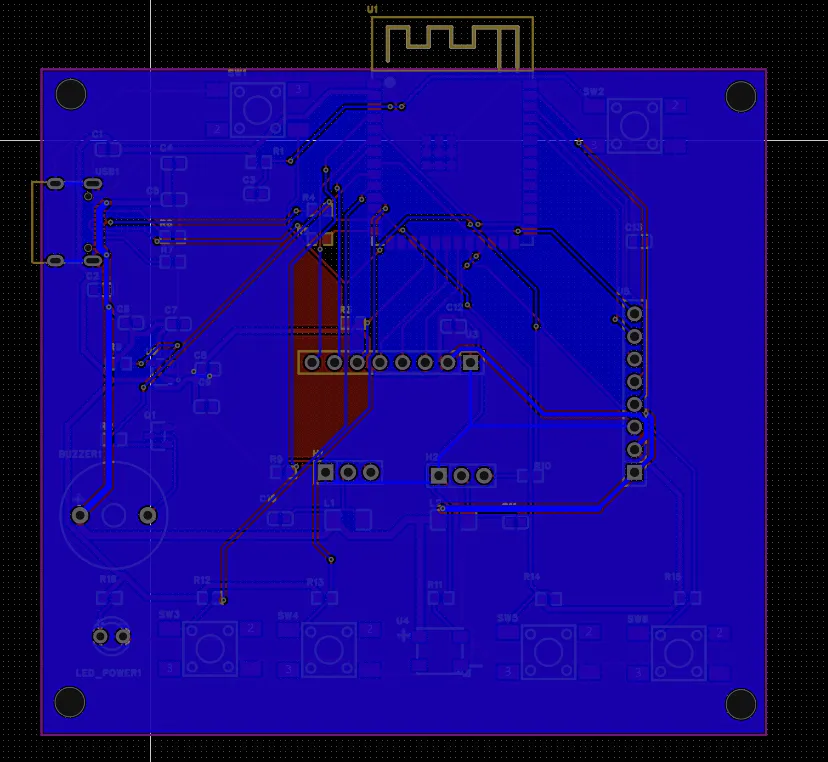
“小默”（Desk Buddy）是一款面向学习与办公场景的桌面陪伴机器人，将待办管理、任务提醒与表情动作互动相结合，让数字化的日程安排转化为直观可感的桌面体验。
项目以 ESP32-S3 为控制核心，搭配自主设计的电路板、lcd液晶屏和双自由度舵机机构，通过表情变化、点头摇头及声光反馈与用户互动。小默与 Obsidian 的待办同步，用户可在电脑端编辑任务，在设备端同步查看待办划去或增添情况并接收提醒，也可通过机身按键进行操作，体验不同的互动反馈。
项目融合电路设计、嵌入式开发、电脑端通信与机械结构设计，兼顾实用功能与陪伴体验。后续将探索 AI 记忆与个性化交互，让小默更好地融入日常学习和工作。
项目名称： 小默 Desk Buddy
项目成员： 林放
Mentor： 应塍冰
记录时间： 2026 年 9 月 11 日
“小默”的起点，是我对日常学习和任务管理的一点思考：任务写进笔记之后，能不能以更直观的形式出现在桌面上，并在状态变化时给出一些有温度的反馈？
围绕这个想法，我把 Obsidian 中的任务记录与一台桌面设备连接起来。电脑负责读取、解析和发送任务，设备负责显示与交互。这样既保留了原有的笔记习惯，也为屏幕表情、按键操作和机械动作提供了统一的数据来源。
这个暑假，我围绕小默逐步开展了嵌入式编程、电脑端工具开发、电路设计、PCB 制作和硬件调试。项目让我把原本分散的编程与硬件知识，放进一个需要真正连起来运行的系统里。
> 【插图 1：开发板原型或项目整体照片】
>
>
>
> 【视频 1：修改 Obsidian 任务后，设备屏幕更新的演示】
>
> 小默的开发板原型，esp32-s3和lcd 只是原来测试demo，具体的还未来得及录制，明天补上
>
>
>
小默的核心链路为：
Plain Text
Obsidian 今日笔记
↓ 文件监听与任务解析
电脑端 Python Companion
↓ WebSocket / JSON
ESP32-S3：数据接收、任务管理与事件处理
↓
LCD 任务页与表情界面
↓ 按设计进一步联动
按键交互、舵机动作、灯光与声音反馈
目前，开发板原型已经完成笔记任务同步到实际 LCD 的验证，能够展示任务内容及完成状态。软件中还包含备注处理、页面切换、任务选择、表情与动作管理等模块；这些功能的验证程度不同，不能仅凭存在驱动代码就认为全部外设已经完成联调。
截至本次记录，自制 PCB 已完成打样及除按键外的主要元件焊接，正在排查首次上电问题。舵机机械联动、实体按键和整机长期稳定性仍是后续工作。
开发板与自制板采用的模块配置需要分别核对，不能直接把原型固件配置当成新板的最终配置。后续烧录前还需确认实装模块的 Flash、PSRAM 与启动参数。
我在学习中逐渐把注意力从“这一段代码能做什么”，转向“数据由谁管理、事件由谁处理、多个任务如何协作”。
项目以 app_main 为启动入口，先完成 NVS、事件和任务模型等基础初始化，再创建输入、通信、动作、显示和串口控制五个任务，由主事件循环处理状态变化与联动请求。
显示相关的处理集中在显示任务中，其他模块通过命令与事件请求更新，减少多个任务直接操作界面的复杂性。GPIO 和屏幕方向等参数集中维护，也便于在开发板与 PCB 之间迁移。
在逐段阅读与调试代码的过程中，我进一步接触了 FreeRTOS 队列、任务栈、NVS 初始化、SPI 数据传输以及 LVGL 刷新机制。理解这些机制之后，启动失败或显示异常不再只是一个笼统的“程序有问题”，而是可以沿初始化顺序和数据流逐步定位。
> 【插图 2：代码目录及主程序任务创建部分】
>
>
>
> 【插图 3：任务页和表情页的实际显示照片】
>
>
>
>
电脑端 Companion 负责监听日记文件，提取任务、完成状态和备注，再生成 JSON 快照发送给设备。项目同时配套了调试工作台，用于查看笔记原文、解析结果、发送状态和设备回执。
这套工具帮助我区分了几个容易混在一起的问题：
- 文件有没有真正保存，监听的是不是当前笔记？
- 任务有没有被正确解析？
- 数据有没有通过网络发送？
- 设备有没有接受当前这次快照？
- 接收之后，屏幕是否实际显示正确？
例如，工作台中的草稿预览只检查解析结果，并不会自动修改原笔记或驱动实体设备。真正验证同步时，需要修改被监听的实际日记文件，再结合设备日志与屏幕观察结果判断。
这种做法让调试从“改一下试试”，逐渐变成了有明确输入、过程和结果的验证。
> 【插图 4：Obsidian、调试工作台与实体屏幕的对应画面】
>
>
硬件设计围绕主控最小系统、电源、USB、显示与交互接口展开。
PCB 复核过程中，我关注了 USB 数据线的引脚对应、去耦电容的位置、地回流、大电流走线和安装空间。历史复核曾提出板框、布局与铺铜方面的问题；这些记录帮助我理解：原理图上的网络连接只是起点，器件摆放和电流回路同样影响实际表现。
采购与焊接也带来了新的认识。例如，缺少 10 μF 和 22 μF 电容时，不能因为手头有 1 μF 就直接全部替换。需要区分稳压器输出电容与普通电源滤波电容，并核对容量、封装和器件要求。最终我找到了相应电容并完成焊接，没有采用随意减小容量的方式。
> 【插图 5：完整原理图】
>
>
>
> 【插图 6：最终下单版本 PCB 顶层、底层及 3D 预览】
>
>
>
>
>
>
>
>
> 【插图 7：实际 PCB 与焊接照片】
>
>
>
>
>
>
>
>
机械部分围绕屏幕承载、主板安装与双舵机姿态反馈展开。设计目标是让屏幕既能稳定展示信息，也为后续点头和转向等动作提供空间。
我需要结合实际结构继续检查屏幕视野、舵机中心位置、运动干涉、线缆余量以及螺丝装配空间。软件虽然已设定保守角度范围，但最终限位必须结合实物重新标定，不能直接套用舵机标称的完整转角。
本节配图后，可进一步说明外壳、支架和转动部件之间的安装关系。
> 【插图 8：机械结构整体模型】
>
> 适当参考了makerworld上面的既有模型
>
>
> 【插图 9：屏幕、舵机和主板的装配关系】
>
> 临时拍的，展示的不是特别好
>
>
> 【插图 10：已有打印件或切片参数截图，如尚未打印可省略】
>
>
>
实机联调时，首次 Wi-Fi 连接尚未完成，通信循环又发起连接请求，出现重复连接报错。处理时先等待首次连接，再进入后续重试逻辑。重新构建、烧录后，当次启动记录中未再出现同样报错。
这让我认识到，网络连接是一个需要等待和判断状态的过程。代码中调用了连接函数，并不意味着下一行执行时网络就已经可用。
LCD 联调不仅需要驱动初始化成功，还需要检查颜色、方向和实际显示区域。项目使用红、绿、蓝、白、黑测试画面辅助判断，并结合实屏校准 RGB/BGR 和反色配置。
这次经历让我学会把“SPI 能通信”“屏幕被点亮”和“显示内容正确”分开验证，也认识到同一驱动型号的屏幕仍可能需要结合具体模块调整参数。
已有联调记录覆盖了任务完成、改名、清空备注和恢复等快照接收检查。后续也在开发板上实际确认了任务列表显示，以及新增笔记任务到 LCD 的更新。
验证中，我使用同步编号对应发送与接收结果，避免把旧回执当作当前操作成功。同时保留一个重要区别：设备确认接收只能证明数据到达，显示和机械动作仍需要单独观察。
实体按键尚未就绪时，利用串口命令模拟页面切换、任务选择和操作，并提供示例数据、颜色与表情测试入口。这样可以先检查上层逻辑，之后再验证实体按键的接线和消抖。
这让我体会到，为项目设计调试入口也是开发工作的一部分。一个容易观察、容易复现问题的系统，往往更容易继续完善。
9 月 11 日，自制 PCB 上电后出现电源指示灯不亮、电脑未识别到 USB 的情况，使用万用表测量时读到 0.000 V。同一根 A-to-C 线和电脑 USB 口能够正常给旧开发板供电，因此目前将排查重点转向新板供电通路和装配情况。
下一步是在断电状态下检查 5 V 对地电阻，再检查 Type-C 插座、VBUS 与 GND 通路，区分短路保护和供电连接不连续等可能原因。最终通过Type-C的多次重焊和补充焊锡电源指示灯亮起。但是具体的usb原生烧录还未调试
这次问题提醒我，硬件调试应先确认供电和基本启动条件，再进入固件与应用功能排查。没有发烫或指示灯不亮，都不能单独作为故障结论。
> 【插图 11：Wi-Fi 修复前后日志或代码差异】
>
>
> 【插图 12：屏幕测试与实际任务同步】
>
>
>
>
小默的开发过程，使我的学习逐渐从单个功能的实现，延伸到实时系统、通信一致性、图形数据通路和电源完整性等方面。项目中的联调要求我把代码行为、硬件条件与实际现象联系起来，也推动我进一步理解这些技术背后的原理。以下内容结合已经阅读的代码、实际调试经历和解析估算展开；涉及性能、供电瞬态与机械响应的分析，仍需要后续实验验证。
小默固件将输入扫描、网络通信、显示刷新、动作控制和串口调试组织为五个任务，由主事件循环协调应用状态与反馈。这种结构让我开始理解实时系统中的执行上下文、任务阻塞和资源归属。
例如，网络连接可能需要较长等待，而按键扫描与显示刷新需要持续推进，因此它们需要具有相对独立的执行节奏。显示模块集中处理 LVGL 操作，其他模块通过事件或显示命令表达更新请求，使界面资源具有明确的访问边界。
结合当前代码，输入扫描和动作推进循环采用 10 ms 延时，显示循环采用 5 ms 延时。这些数值表达了任务主动让出处理器的节奏，并不是已经验证的端到端响应时间保证。任务的实际执行还会受到调度、处理耗时和队列等待影响。
我由此进一步学习任务优先级、栈空间与队列缓冲之间的关系，也认识到采用 RTOS 本身并不保证实时性。后续可以记录“输入事件产生—主循环处理—显示更新”的时间戳，分析响应延迟及抖动；也需要检查队列积压、发送失败和耗时操作对交互的影响。目前尚未完成这些时序指标的系统测量。
小默的数据经过“笔记文件—Python 解析—WebSocket 消息—设备任务模型—LCD”多个环节。围绕这条链路，我开始从状态一致性的角度分析同步问题。
项目使用任务快照描述当前状态，并通过 sync_id 将发送与设备回执关联起来，以判断设备确认的是哪一次更新，避免将旧回执误认为当前操作成功。全量快照使设备能够依据完整任务集合更新状态，减少仅依赖局部变更带来的恢复复杂度。
与此同时，我认识到确认机制具有明确的语义边界：应用层回执证明固件接受了数据，屏幕是否呈现正确仍需检查显示链路。任务改名、同名任务和列表重排，也使我开始关注任务身份与显示文本之间的区别。当前解析规则会将改名视为删除旧任务并新增任务，同名任务则按出现序号区分，这与跨编辑长期保持不变的任务标识仍有区别。
这些具体行为引出了幂等性、状态收敛和身份稳定性等进一步学习的问题。例如，重复收到同一任务状态时，是否会重复触发动作；断线恢复后的快照是否能正确覆盖设备状态；列表重排是否应产生新的业务事件。这些需要分别设计测试，不能仅凭使用 WebSocket 或全量快照就认定问题已经解决。
小默使用 ST7789 屏幕和 LVGL，横屏逻辑分辨率为 320 × 240。采用 RGB565 时，每个像素占 2 字节，一帧原始像素数据需要：
Plain Text
帧数据量 = 320 × 240 × 2
= 153 600 字节
= 150 KiB
20 MHz、单数据线 SPI 的理想连续像素传输时间：
153 600 × 8 ÷ 20 000 000
= 0.06144 秒
≈ 61.4 ms
这一估算将分辨率与内存、传输开销直接联系起来。61.4 ms 只计算完整一帧像素在理想连续传输下占用总线的时间，没有计入命令、间隙、绘制与调度开销，也不是实测刷新时间。局部刷新时传输的数据量不同，因此不能用这个数值概括所有界面的帧率，更不能把显示任务的 5 ms 延时直接理解为 200 FPS。
实际代码并未简单分配两张全屏 DMA 缓冲区，而是配置了两个 30 行的部分缓冲区。按 RGB565 计算，每块为 320 × 30 × 2 = 19 200 字节，两块合计约 37.5 KiB，并以 DMA 能力标志申请内存。这让我理解了分块刷新如何在内存占用与传输组织之间作出取舍。
显示提交使用异步接口，传输完成回调再通知 LVGL 当前缓冲区可继续使用。这对应缓冲区生命周期与数据所有权问题：若传输尚未结束就改写同一块内存，可能破坏正在发送的像素。屏幕颜色和方向校准则进一步涉及 RGB/BGR 顺序、坐标交换、镜像与反色设置，需要与实际面板行为对照。
实机调试曾出现首次 Wi-Fi 连接尚未完成，通信循环就再次发起连接请求的问题。修复时先等待首次连接，再进入后续状态检查与重试流程。
这一问题帮助我理解异步系统中“请求已提交”和“操作已完成”的区别。Wi-Fi 连接、WebSocket 建立和应用数据同步分别具有自己的状态，不能把前一个接口返回成功当作后续条件已经满足。
类似的依赖关系也存在于系统启动中：NVS 需要在 Wi-Fi 等相关功能使用前完成初始化，显示和动作模块也需要先具备可用资源，再接受业务请求。代码中的初始化顺序因此具有实际依赖，而不只是书写习惯。
通过这些具体问题，我开始关注状态迁移的前置条件、等待超时与失败后的恢复路径。后续完善小默时，还需要分别验证无网启动、连接中断和服务端恢复等场景，检查系统能否重新进入可同步状态，而不是只验证一次正常启动。
小默的设计同时包含无线主控、显示与舵机，负载具有不同的用电特征。围绕去耦电容布置和替代件判断，我进一步接触了电源分配网络阻抗、稳压器动态响应，以及电容 ESR、ESL 和直流偏压效应。
其中一个直接认识是：电源网络即使在直流意义上连通，也可能在负载变化时产生局部压降。容量影响储能能力，而安装位置和回流路径影响其对快速变化的响应；较远处的大电容不能完全承担芯片电源脚附近的高频去耦作用。
在简化分析中，可以用下面的关系估算电容单独补充短时电流缺口时的电压变化：
Plain Text
电容放电引起的电压变化 ≈ 电流缺口 × 持续时间 ÷ 有效电容量
ESR 引起的电压变化 ≈ 电流变化 × ESR
电感效应对应的电压 ≈ 等效电感 × 电流变化率
这些关系帮助我理解，标称容量只是选型条件之一，实际有效容量、寄生参数、稳压器响应与布线都可能影响结果。它们是分析工具，不能直接替代整板电源波形测量。
自制板首次上电时，电源灯不亮且测量结果为 0 V，又让我将分析落实到排查顺序中：先通过旧开发板对照检查线材与电脑接口，再检查新板是否存在短路保护或供电通路不连续。只有输入供电恢复后，才适合继续分析 3.3 V 稳压和动态负载。当前故障尚未定位，也不能直接归因于去耦不足。
小默的动作代码使用 PWM 控制舵机，并通过动作管理模块组织目标角度与插值过程。围绕这一实现，我进一步理解了指令轨迹与实际运动之间的区别。
普通位置舵机内部具有位置反馈，但小默主控目前没有读取实际关节角度，因此从主控的观察能力看，尚不能确认实际运动是否跟随指令。程序发送目标位置，并不能证明机构已经到位；指令角度经过平滑插值，也不等于实际速度、加速度和冲击已经得到验证。
这使我开始把机械限位、中心偏差、负载与供电纳入控制问题。当前代码安排了中心保持和小角度自检，并预留了较保守的运动范围；最终仍需通过实物装配和标定确认有效范围，检查动作中的干涉、抖动和供电波动。
后续可以先做单轴、低负载和小幅动作测试，再推进双轴联动，以区分方向或标定错误与机械负载问题。这样才能逐步把软件中的动作序列转化为可靠的整机交互。
这些拓展使我逐渐形成更完整的工程认识：功能实现需要明确的接口，模块协作需要清晰的状态，性能判断需要量化依据，最终结论需要实物验证。小默因此成为我连接软件、电路与机械知识的一次持续实践，也让我能带着具体问题继续学习嵌入式系统与机器人相关知识。
后续优先解决自制板供电和启动问题，再确认新板烧录配置，依次验证显示、按键、舵机及复合负载，最后进行断网恢复和长时间运行测试。
AI 在项目中参与了方案讨论、资料检索、代码生成与修改、逐段解释、调试脚本整理、日志分析和电路复核。本项目有明确的 AI 辅助开发过程，我在报告中如实说明其参与范围。
我逐渐形成的使用方式，是让 AI 的解释与实际代码、厂家资料和实验结果互相对照。对生成的代码，我需要能够说明关键流程；对故障建议，我需要通过测量验证，而不能把推测直接写成结论。
项目也让我意识到 AI 辅助的局限：历史文档可能过时，同名器件可能来自不同厂商，自动测试结果也可能只覆盖软件逻辑。因此，“模拟通过”“收到设备回执”“看到实际显示”和“机械动作完成”必须分别记录。
小默当前的核心是任务同步与嵌入式交互，尚未实现设备端大模型对话功能。
这个暑假，小默让我从学习一个个知识点，逐渐走向组织一个完整项目。过去在面对 C 代码、电路或机械部件时，我更容易把它们看成相互独立的内容；实际开发之后，我开始理解它们之间的约束：显示需要考虑内存与刷新，舵机需要考虑供电和限位，通信需要考虑时序与数据状态，而一块完成布线的 PCB，还需要经过采购、焊接和上电验证。
印象很深的一个时刻，是修改笔记中的任务后，桌面屏幕真的出现了相应内容。那时，文件解析、网络消息、任务模型和显示驱动不再只是目录中的几个模块，而是共同完成了一次真实的交互。这种从想法到可观察结果的过程，是这个项目带给我的成就感。
调试也改变了我处理问题的方式。面对屏幕异常，我开始检查颜色、方向和输入数据；面对同步异常，我会沿文件、解析、发送、接收和显示逐层查找；面对新板没有供电，我需要拿起万用表，先确认最基本的电气条件。相比立即寻找一个“万能修复”，我更愿意先把现象描述清楚，找到可以验证的下一步。
专业知识上的收获，也体现在我开始尝试量化和解释现象：用像素数据量估算显示传输开销，用任务与队列分析交互响应，用同步编号区分消息确认，用电流路径理解供电问题。对尚未完成的部分，我也能够进一步明确需要测什么、为什么测，以及什么结果才足以支持结论。这种从现象追问机制、再用实验检验分析的学习方式，是我希望继续保留的习惯。
从软件联调到最后的手工焊接，这个暑假的投入留下了具体成果：一个已经运行过完整任务同步链路的原型、一套可以继续迭代的代码和调试工具、一块完成制作并进入实测阶段的 PCB，以及逐渐清晰的工程记录。它们也让我看到了自己的不足，例如器件与装配准备、硬件验证时间安排，以及从开发板迁移到自制板时需要重新核对的条件。
提交时，小默还没有达到最终整机状态，自制板供电和机械联动仍需要继续解决。但我已经经历了需求拆解、学习实现、测试修正和实物验证的过程。这个暑假对我而言充实之处，就在于每一阶段都有具体的问题需要理解，也有可以回头检查的成果。接下来，我希望把这些阶段成果逐步连接起来，让小默真正成为一台稳定、可用的桌面陪伴设备。
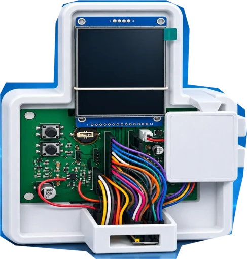
28.桌面陪伴时钟一个可以在桌面倒计时，查找时间，并对外界互动（按键，摸摸，摇晃）做出反应的桌面陪伴时钟，利用LED屏幕设计了本人喜欢的角色
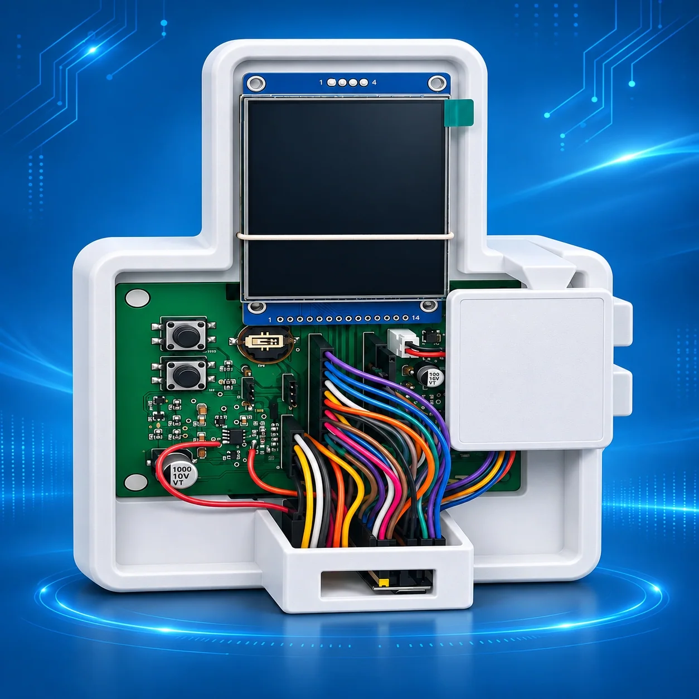
该时钟是一款面向个人学习场景制作的桌面陪伴终端。项目希望解决深夜学习时使用手机计时容易分心、桌面氛围单调以及缺少具有个人特点的桌面设备的问题。
装置以 STM32F411CEU6 为主控，结合屏幕、实时时钟、按键和传感器，实现时钟显示、倒计时、秒表以及简单的情绪反馈。外观和灯光以“砂金”角色的金色、孔雀绿等视觉元素为设计参考。
部分 · 选择 · 选择原因
主控 · STM32F411CEU6 Black Pill · 性能和 GPIO 资源能够满足屏幕、I2C、按键及传感器的连接需求，适合学习嵌入式系统开发
显示 · ST7789 SPI 屏幕 · SPI 接口速度较快，能够显示时钟、倒计时、秒表和反馈表情
时钟 · DS3231 · 提供独立的实时时钟，断电后仍能保持走时（但目前因为缺少合适的纽扣电池和电路设计不合理，未能实现）
灯光（最终删除） · 16 灯 SK6812 RGBW 灯环 · 可实现暖金色常亮、呼吸和关闭等效果，增强桌面氛围
交互 · 四个按键、MPU6050、TTP223 · 分别承担模式与参数控制、摇晃检测和触摸反馈
供电 · 锂电池、IP5306、Type-C · 支持电池供电和 Type-C 充电
- 时钟模式：在调整好时间设置的时候，显示 DS3231 当前时间；
- 倒计时模式：设置时、分、秒，开始、暂停并在结束时进行屏幕、灯光和蜂鸣器提示；
- 秒表模式：开始、暂停、继续和归零；
- 按键交互：K1 切换模式，K2 K3负责设置或确认，K4 进行亮度控制；
- 摇晃反馈：检测到持续摇晃后显示头晕表情；
- 触摸反馈：触摸感应触发开心表情和；
- 电池监测：通过 ADC 读取电池电压，在低电量时给出反馈；
项目起点是一个具体的个人使用需求：学习时希望不依赖手机完成计时，同时希望桌面上有一件具有个人兴趣元素、能够提供简单互动的设备。
在方案阶段，我将需求拆分为显示、计时、交互、传感器和供电等模块，并为每个模块确定接口、器件和备用方案。
硬件部分先完成芯片选型、引脚规划和模块接口确认，再绘制原理图并进行检查。最终系统使用：
- SPI 连接 ST7789 显示屏；
- I2C 总线连接 DS3231 和 MPU6050；
- GPIO 连接按键、蜂鸣器、TTP223 和灯带控制电路；
- ADC 引脚用于电池电压检测；
- 74AHCT1G125 为灯带数据提供电平转换（但最终因为机械限制没有加入灯带模块）
- IP5306 负责锂电池充电和升压供电。
这个过程让我认识到，硬件设计不能只看单个模块能否工作，还要同时检查供电、电平、引脚复用、通信地址和模块之间的相互影响。
固件使用 C/C++，以 PlatformIO 作为开发环境，并按功能拆分为多个模块：
软件模块 · 主要作用
display · 屏幕初始化、文字和界面显示
clock_display · DS3231 时间读取和时钟界面
countdown · 倒计时状态、参数设置和结束判断
stopwatch · 秒表状态和计时显示
button · 按键扫描、消抖、短按和长按判断
led_control · 灯光模式、颜色、亮度和动画刷新
shake_detect · MPU6050 数据读取和摇晃判断
touch_detect · TTP223 触摸状态检测
battery_monitor · 电池电压读取和低电量判断
主循环采用“更新输入—更新计时状态—更新输出—检查反馈”的方式运行。模式切换和倒计时设置使用状态机思路，避免不同功能之间互相覆盖。例如，倒计时设置过程中按 K1 会取消设置，K2 长按才确认当前参数，从而减少误操作。
调试按照“先供电、再单模块、后整体联调”的顺序进行。测试计划将验证过程拆成供电、烧录、屏幕与时钟、按键、倒计时、秒表、灯环、摇晃、触摸和电池 ADC 等步骤。
主要调试思路包括：
1. 上电前先检查电源轨和短路风险；
2. 先验证屏幕、时钟等基础模块，再叠加交互模块；
3. 对按键增加消抖和长按锁定，防止一次长按产生多次输入；
4. 对摇晃触发增加时间间隔限制，减少重复触发；
5. 表情反馈结束后恢复原有灯光颜色和显示状态；
6. 将可选功能通过编译开关控制，便于降级和排查。
AI 主要参与了以下工作：
- 协助梳理需求、功能优先级和项目阶段计划；
- 协助比较主控、显示、时钟、传感器和供电模块的方案；
- 协助检查原理图中的供电、接口、电平和潜在风险；
- 协助搭建固件模块结构，并提供按键、显示、灯光、传感器和计时逻辑的代码建议；
- 根据实际报错和现象提供排查思路；
- 协助整理测试计划、设计文档和项目介绍。
AI 的输出经过了人工判断和实际项目约束筛选。最终采用哪些器件、如何安排引脚、哪些功能进入 V1、哪些功能延期，以及代码是否能够运行，都由我结合原理图、实物和调试结果进行确认。AI 作为辅助工具参与项目，并不替代实际焊接、烧录、测试和最终决策。
这是一次从需求、选型、原理图、固件到调试的完整硬件项目实践。
我最大的收获是学会把一个较大的想法拆成可以逐个验证的模块，并在进度不足时根据优先级进行降级。后续如果继续迭代，我希望完善外壳和装配体验，增加语录或日程功能，并进一步提高系统的稳定性和可维护性。
 29.LumiCube
29.LumiCubeLumiCube是一款集光影、体感与音律交互于一体的智能光立方，由搭载320颗全彩LED的五面立方体与智能底座构成。通过Pogopin触点，底座与立方体实现了分离式的UART通信与充电。底座与立方体均搭载独立可充电电池，用户可随时将立方体拿起把玩而运行不断联。作品能够模拟液体在倾斜晃动下的重力光流，也可以将音乐实时转化为四面跃动的频谱、展示不同的灯光表现。
项目名称：LumiCube
mentor：苗翔宇
LumiCube是以LED为核心发散功能的一款灯光交互产品，由8*8五面LED矩阵和底面构成的立方体与底座组成。
底座包含LCD屏幕，操控用旋钮，允许外部供电（就是充电）；立方体由六块10*10cm正方形PCB组成，底板PCB包含电量计模块、MPU模块、串口语音模块。
底座和立方体均有独立可充电锂电池，底座和立方体的交互通过pogopin与金属焊盘，起到传输数据（UART协议）、充电作用。用户通过旋钮在屏幕的菜单界面操作，相关指令随即经pogopin传至立方体，后者产生相应反馈，此时将立方体拿起，运行模式不受影响。
重要器件型号一览：
器件/电路 · 型号
主控模块 · ESP32-S3-N16R8
升压芯片 · TPS61088
电源路径管理芯片 · BQ24074RGTR
主要LED · WS2812C-2020-V6
LDO线性稳压器 · ME6217C33M5G
串口语音模块 · BY9001
电量计模块 · 5580 MAX17048
MPU模块 · MPU6050
旋转编码器 · PEC11R-4220F-S0024
锂电池保护电路 · DW01A+8205A
[5c708ea4fad912a1dc0ad0303d2aa20c.mp4]
1. LED图案显示：
1. 彩虹：
2. 回形上升：
[e6eb5f48d20c47cb88929b91c01bfbf3.mp4]
3. 笑脸：
2. 模拟重力光流：
模拟重力影响下液体的运动，以灯光方式呈现。只是比较简略的版本，没有很好的考虑到体积碰撞还有惯性。
演示视频：
[f1705571581fbe4b7338a54ab0cc41bf.mp4]
3. 音乐播放及频谱展示：
立方体可播放曲库内音乐，通过菜单实现歌曲选择、音量调节、暂停、上一首/下一首功能。如若愿意，可开启频谱展示选项，立方体四面LED将展示歌曲频谱。
演示视频（声音较小）：
[da09cf7dfd0956ae554fbf2058beca45.mp4]
4. 电池电量监测：
通过电量计模块实现对立方体内部锂电池的电量监测，数据显示在LCD屏上，提醒用户电量状况。
1. 第一次自己画芯片周围电路和焊接无外露焊盘的QFN芯片（说的就是你BQ24074），非常紧张，为此还专门录制了焊接视频~~（教程）~~。
[cc2c0cd4ec46dec302368f73b00b0dc6.mp4]
2. 预算不足以定制钢网，只好自己手动给320个LED及其去耦电容上锡膏。第一个LED板因为对锡膏需要多少没概念导致多了，后来用电烙铁去除时在阻焊层留下了很多印，但也因此积累了经验！后面几个板子就焊的很好了。此图是第一个LED板，已用吸锡线处理过。没有洗板水。
3. 外壳打印！！！
设计图见【机械结构】。
底座分为两部分打印：上底面和身体、下底面。最后组合在一起。
打印精度差一直把握得不好，打了几版才实现牢固拼接，之前一直都有松动合不拢。
此外，为了把屏幕较为美观地嵌在底座侧面，在设计上也考虑了很多。由于有凸出的排针脚等等问题，要想保证屏幕嵌入有点麻烦。图为屏幕，红框处是我想要镶嵌的部分。最终设计版本+我的一些外部辅助，呈现效果其实还可以，看起来非常贴合。
并且由于模块与底座内主PCB由杜邦线连接、侧面有多个模块，底座内部其实有点拥挤，容易合不上。所以后来增加了底座高度。
又因为底座由圆柱切割得到，而含Type-C充电口的底座主PCB为方形，导致充电又稍微有些麻烦。最后挖了一个洞，不是很难插，当然也不是特别美观。
又因为pogopin需要在底座顶面挖洞，同时底座内部要有一个支撑，既要保证pogopin转接板能够进入这个支撑区域在得到支撑的同时将金属探针从顶面洞口伸出足够距离，又要保证pogopin转接板能从这个支撑区域取出便于调试和维护，这个冲突也让我想了很久该怎么设计。最后预留了较多空间，想要探针露出多就自己另外垫一些东西。
因为我的底座内部空心，还有悬空支撑区域，顶面有凸起花纹和放置立方体的方形沉槽，侧面大部分为弧形，导致我在3D打印时该按什么造型摆放在打印板上纠结了很久。如果简单顶面朝上底面朝下的话，内部要全部填充树状支撑，非常饱满，最终效果如何我完全没有把握。顶面朝上和顶面朝下的版本我都试过，最终还是顶面朝上的方案好，既能保证外侧展示侧的接触面光滑美观，也没有牺牲外壳强度。
- 展示支撑：
4. 我的顶面LED数据传输以侧面LED的PCB为中介，通过排针排母和板上走线传输。我发现顶面LED闪烁情况异常，表现为U1只有红绿蓝三个小色点，剩下63个LED亮起，但亮度整体较侧面LED暗且不稳定，同时数据似乎得不到更新，一直维持在同一个颜色。我开始寻找问题所在。
- 我更换了第一颗LED，情况没有变化，说明不是U1自身质量问题。
- 编写测试代码，分别单独测试U2、单独测试U3、测试2-64，测试流水灯等，得出结论问题不在U2及之后的LED上，而在U1及之前。
- 计算LED耗电情况，得出结论问题不在电路图走线设计上。
- 后面得到了万用表的使用机会，事情终于好起来了。
- 测试了esp32的电压、两组功能排针排母的电压，与侧板LED比较，都没有问题。后来测出顶面排母的5V引脚和GND引脚竟然都是5V。研究了一番发现是侧板上方的排针本该设置GND网络的焊盘无网络连接（红框所示），于是用导线飞了一下，顶板LED终于正常。真是太好了。
5. 由于立方体直接由电路板组合而成，我开始思考如何在实现机械连接的同时保证电气连接。想了很多可能都不尽人意，最后还是采用排针排母，只不过此处排针采用卧贴排针，如图。网上卖卧贴排针的甚至也不是很多，原本想在tb找灵感也没有找到。装配效果如图。
6. 项目以电路为主，为了减少设计的板子总数量，我思考如何让侧板保持一致的情况下只有一个板子给顶板传输数据。排了好几个方案，最后决定以顶板为基准，四个侧板全都从esp32接收顶板数据信号，但顶板四个排母只有一个能够传输数据。这样五块板子只需设计两种电路板。
A-main主要包含菜单相关的代码编写，保证屏幕显示和指令传输两方面。在B文件夹中，main.cpp是总调度中心，其他.cpp是功能模块。effcts.cpp集合各种图案显示的代码，leds.cpp是五面LED底层初始化和统一控制代码，用于建立体系。mpu.cpp负责MPU功能相关。music_spectrum.cpp负责音乐播放和频谱显示。
AB通信采用UART协议，A到B使用AA CMD PARAM 55。B板收到后进行解析，并调出对应mode。接下来的操作交给对应mode代码块处理。如music里面的select、prev、next等等。
建立三维坐标系，320个LED有其对应坐标。此外，LED分为五组：front、back、left、right、top，分别对应一个GPIO口，在数据管理上更清晰且易于操作。
音乐模块包含音乐播放+频谱显示。在菜单中，统一集合在music选项下。来自A板的命令首先交给B板处理，B解析后调用music_spectrum模块。例如playTrack(1) 、volumeUp()、 volumeDown() 、nextMusic() 、pauseMusic()都是给BY9001发送串口命令。
而对于频谱显示，将空气振动转化为模拟电压，利用ADC采样得到一组采样点数值，交给FFT处理，拆分出一段时域内的不同频率得到不同频率的强度，然后利用LED显示出来。我用四面LED共32列，可以得到32个频段，每个频段包含一定范围的频率。LED将频段强度用颜色深浅以及灯珠高度表达。
> FFT 是一种快速计算 DFT 的算法，作用是把一段离散的时域信号分析成不同频率成分。
>
>
MPU6050三轴来自加速度，三轴来自加速度。MPU6050感知立方体变化，将数据传送给主控，并通过LED表达。设定立方体内“含”30%体积水体。
设定水的一些参数。
设定LED坐标。
剩下就是算法。包括水波、水珠、运动激励、颜色深浅等。
主控模块：没什么好讲的。控制LCD屏、旋钮和与B板进行数据传输。
电源路径模块：接收来自Type-C口的5V电源和锂电池电源，如果有外部供电，则优先输出外部电源，同时给电池充电，否则输出电池电源。设置这个模块是因为我希望实现充插两用。其中TS引脚用于检测电池温度，设定安全充电时长，通过电阻值改变。ILIM决定输入电流限制。ITERM是充电终止电流。ISET设定快充电流大小。
LDO：降压到3.3V。
锂电池保护电路：8205A是一种双N沟道mos管，如左图。DW01A与8205A常常组合使用，共同起保护作用。看DW01A数据手册的典型电路应用就知道为什么了，如右图。DW01A负责检测异常状态，如过充、短路等，而8205A起到功率开关作用。
针对Type-C供电口我设计了限流保护电路，但好像画的不太好，就不讲了。另外设计了ESD（静电放电）保护，可以防止人体或外部接口产生的瞬间高压静电把芯片打坏。
控制模块：向各个LED板输出数据，与A板通信，控制各个模块。
电源路径模块：基本同A板，区别在于此时外部供电不是Type-C供电口而是pogopin（来自于A板电源）。
升压模块：以TPS61088为核心，将电池侧的SYS_PWR升压并稳定输出为+5V，为负载供电。电感用于储存能量（PS：电感下方是不能铺铜的）。VOUT附近的电容组合用于储能、滤波、瞬态支撑。
锂电池保护电路：同A板。
LDO：同A板。
串口语音模块、姿态检测模块、电量计模块：串口语音模块采用UART协议，姿态检测模块和电量计模块采用I2C协议。此外，与A板连接的LCD屏采用SPI协议。
沉金焊盘：位于PCB底面，用于与金属弹簧针对接。SMF5.0A是TVS瞬态电压抑制二极管，将过高电压钳位在正常范围。在pogopin转接板上亦有此设计。
ESD：因为金属焊盘人手或者其他什么也常常碰到，所以加一个保护。
连接器：连接B板与LED板。供电和单向传输数据。
64个LED是如何串联的：
机械结构设计在上文已花较多笔墨介绍。
菜单测试视频：
[4919f4231d4539c3c618b23bca7f910c.mp4]
IMU功能测试视频：
串口监视器发送各轴数据。检测IMU是否正常。
[b40c9210c6a1ccf4368aef8656351179.mp4]
1. 建模时询问AI关于实现某种效果的操作途径。如将两个实体共面无缝合并。
2. 绘制PCB时把数据手册扔给AI翻译，让它根据公式帮我算一些特定器件的数值大小，如阻值大小；有看不懂的地方或是没有把握的地方会让它看看是否有错误，以及如何修正；让AI根据我的需求推荐一些器件的型号和组合。
3. 让AI根据我的需求编写嵌入式代码。
以下视频在文字导出中只有文件名；点击进入原文查看对应视频。
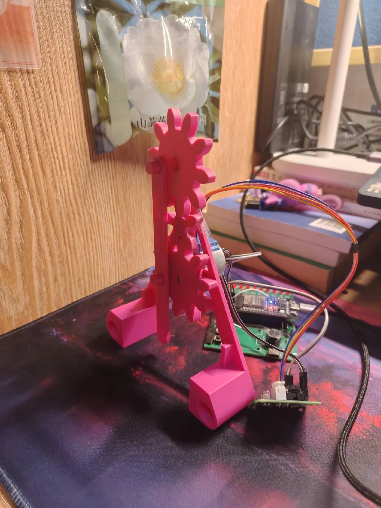
30.非侵入式智能开关遥控模块一款直接附着在宿舍/家庭现有 86 型墙上开关上的外挂式遥控模块：不用更换开关面板、不用布线改造，通过手机 APP 局域网遥控，由步进电机带动机械传动机构模拟手指按压开关翘板，实现躺床上不起身就能开关灯、定时开关等。
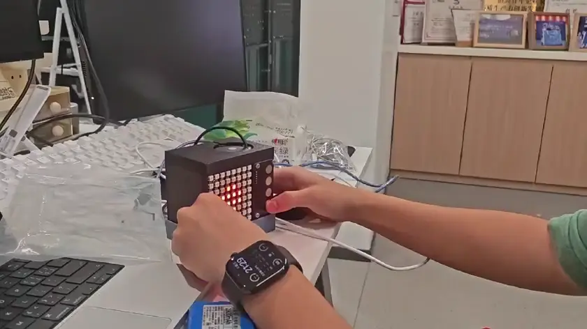
31.智能数据线管理器由触控板输入，用电机驱动机械结构运作，收纳和释放数据线。用oled屏幕来提示运行状态
数据线轻量管理器
顾睿轩
数据线轻量管理器是通过控制数据线的收纳和展开来让桌面更整洁的项目。其机械结构收到b站上一个大佬视频启发，我们新增了电机、触控板和显示屏，来达到更高效、省力的效果
本次项目ai大致使用在以下几个方面
1. 3d打印遇见问题的初步定位（eg：底层会在打印过程中脱落怎么办？deepseek：可能是打印版不干净）
2. 未知硬件的介绍（eg：ws2812是什么？deepseek：WS2812 是一种常见的可编程 RGB LED 灯珠，集成了控制芯片和红、绿、蓝三色 LED，可以单独控制每个灯珠的颜色和亮度。）
3. 程序问题（eg：中断会不会影响millis（）函数的时间计算？deepseek： 中断不会导致 millis() 计数丢失或走慢，只要 Timer0 的溢出中断能被执行，计数就不会丢）
4. 代码debug（这个就不举例子了）
5. 格式转化（eg：将视频转为颜色矩阵，来方便单片机驱动播放）
数据线轻量管理器
顾睿轩
数据线轻量管理器是通过控制数据线的收纳和展开来让桌面更整洁的项目。其机械结构收到b站上一个大佬视频启发，我们新增了电机、触控板和显示屏，来达到更高效、省力的效果
本次项目ai大致使用在以下几个方面
1. 3d打印遇见问题的初步定位（eg：底层会在打印过程中脱落怎么办？deepseek：可能是打印版不干净）
2. 未知硬件的介绍（eg：ws2812是什么？deepseek：WS2812 是一种常见的可编程 RGB LED 灯珠，集成了控制芯片和红、绿、蓝三色 LED，可以单独控制每个灯珠的颜色和亮度。）
3. 程序问题（eg：中断会不会影响millis（）函数的时间计算？deepseek： 中断不会导致 millis() 计数丢失或走慢，只要 Timer0 的溢出中断能被执行，计数就不会丢）
4. 代码debug（这个就不举例子了）
5. 格式转化（eg：将视频转为颜色矩阵，来方便单片机驱动播放）
手机里只有阳志学长激情王者的照片，此处就不放了
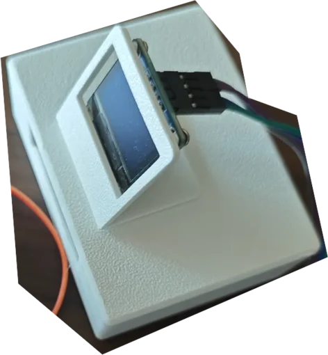
32.自追踪手势识别控制为解决使用电脑处理文档时快捷组合键操作不便与必须接触操作的问题，构想了一个自追踪手势识别控制电脑键盘的摄像头。基于庐山派Lite完成手势识别，并和esp32串口通信实现基本信息传递，通过esp32模拟蓝牙键盘，完成对电脑基本快捷键的输入。外观即为可左右旋转的摄像头，可以主动调整位置追踪手掌，通过特定手势实现快捷键或者自定义输入的操作。


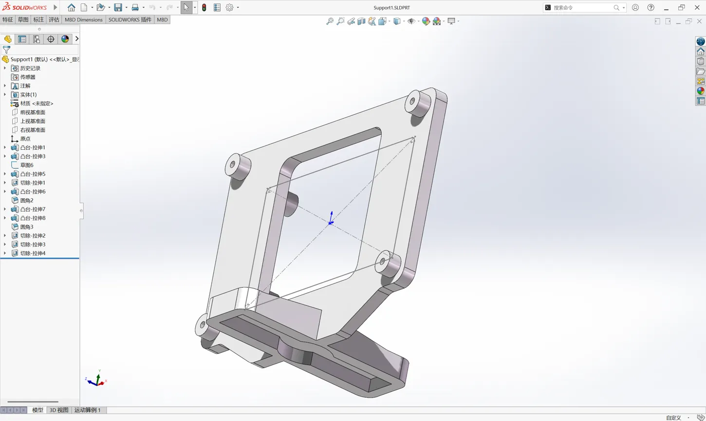
- 项目名称：自追踪手势识别控制
- Mentor：任子桐
由于在使用电脑处理文档或代码时快捷组合键操作不便的问题，并且一定需要进行接触操作，所以构想了一个自追踪手势识别控制电脑键盘的项目。
在项目构思初期，预备分层完成以下任务：
分类 · 具体内容
必须做 · 1. 识别手势并对相应手势进行与按键绑定。<br>2. 与电脑手机正常连接，传输数据。<br>3. 有基本的外壳。
可以做 · 1. 增加可以主动旋转的底座，物理追踪目标（例如掌心），主动复位。<br>2. 远程操控电器。<br>3. 外观进行美化和个性化。
暂不做 · 1. 暂不做与电脑手机连接的APP，可以便捷的自定义按键。<br>2. 暂不加入语音等模块，实现桌面助手功能。
暑期第一版最低目标 · 有合适的外形和支架便于放在桌面上并调整角度，识别手势并控制电脑<br>
按层次依次完成以下模块：
1.在庐山派Lite上完成手势识别，并跑通和esp32的串口通信信息传递
2.esp32模拟蓝牙键盘，和电脑连接，并实现特定按键或者组合键的输入
3.esp32控制舵机，实现特定角度旋转
4.庐山派上增加手势中心与画幅中心偏移量的传输，并设计舵机补偿
5.增加OLED显示，便于后续使用、调试
设计之初，希望用一块视觉识别开发板实现基本的手势识别功能，并通过串口通信与esp32连接，后者通过BLE技术模拟电脑键盘实现控制；而在追踪部分，选用舵机移动摄像头。
经过与mentor的沟通以及查阅相关资料，最终选择了庐山派Lite作为视觉识别主板，MG996R作为控制舵机。选型完成后基本放弃了图传电脑在分析的方案，直接在庐山派上实现图像分析和识别。
后续增加了一个OLED屏幕便于调试和操作。
由于使用庐山派开发板以及esp32，且无其他复杂电路，所以没有设计可以集成所有电路以及开发板接口的电路板，为了解决供电问题，设计了一个简单的typeC 5V供电电路，并用针脚引出+5V和地线，便于测试。
由于后续发现疑似电容过大导致的浪涌电流触发typeC接口断路的问题，尝试直接删掉保护电容，基本能正常工作？
选用solidworks设计外观，用自攻螺丝固定开发板，完成了一个基本功能框架，之后在设计了一个外壳，通过磁吸固定在功能框架外部。
以下为外壳设计，在上方加了一个可拆卸的OLED支架。
用3D打印打印了框架与外壳，并成功组装并固定。
分别在庐山派Lite以及esp32上设计了两部分程序。
在庐山派上的代码主要参考了示例文档，并使用自带的几种简单手势训练集，实现手势识别，通过串口通信，把识别到的手势以及距离屏幕中心的偏转程度传输给esp32，部分核心代码如下。
uart = UART(UART.UART2, baudrate=115200, bits=UART.EIGHTBITS, parity=UART.PARITY_NONE, stop=UART.STOPBITS_ONE)
def run(self,input_np):
det_boxes=self.hand_det.run(input_np)
hand_rec_res=[]
hand_det_res=[]
best_box=None
best_area=0
for det_box in det_boxes:
x1, y1, x2, y2 = det_box[2],det_box[3],det_box[4],det_box[5]
w,h= int(x2 - x1),int(y2 - y1)
if (h<(0.1*self.rgb888p_size[1])):*
*continue*
*if (w<(0.25*self.rgb888p_size[0]) and ((x1<(0.03*self.rgb888p_size[0])) or (x2>(0.97*self.rgb888p_size[0])))):
continue
if (w<(0.15*self.rgb888p_size[0]) and ((x1<(0.01*self.rgb888p_size[0])) or (x2>(0.99*self.rgb888p_size[0])))):*
*continue*
*area=w*h
if area>best_area:
best_area=area
best_box=det_box
if best_box is not None:
self.hand_rec.config_preprocess(best_box)
text=self.hand_rec.run(input_np)
hand_det_res.append(best_box)
hand_rec_res.append(text)
return hand_det_res,hand_rec_res
def draw_result(self,pl,hand_det_res,hand_rec_res):
pl.osd_img.clear()
if hand_det_res:
for k in range(len(hand_det_res)):
det_box=hand_det_res[k]
x1, y1, x2, y2 = det_box[2],det_box[3],det_box[4],det_box[5]
w,h= int(x2 - x1),int(y2 - y1)
w_det = int(float(x2 - x1) * self.display_size[0] // self.rgb888p_size[0])
h_det = int(float(y2 - y1) * self.display_size[1] // self.rgb888p_size[1])
x_det = int(x1*self.display_size[0] // self.rgb888p_size[0])*
*y_det = int(y1*self.display_size[1] // self.rgb888p_size[1])
pl.osd_img.draw_rectangle(x_det, y_det, w_det, h_det, color=(255, 0, 255, 0), thickness = 2)
pl.osd_img.draw_string_advanced( x_det, y_det-50, 32,hand_rec_res[k], color=(255,0, 255, 0))
def send_gesture_command(cmd):
uart.write(f"C:{cmd}n")
def send_position(offset_x):
uart.write(f"P:{offset_x}n")
if name=="main":
display_mode="virt"
display_size=[640, 480]
rgb888p_size = [640, 480]
hand_det_kmodel_path="/sdcard/examples/kmodel/hand_det.kmodel"
hand_rec_kmodel_path="/sdcard/examples/kmodel/hand_reco.kmodel"
anchors_path="/sdcard/examples/utils/prior_data_320.bin"
hand_det_input_size=[512,512]
hand_rec_input_size=[224,224]
confidence_threshold=0.2
nms_threshold=0.5
labels=["gun","other","yeah","five"]
anchors = [26,27, 53,52, 75,71, 80,99, 106,82, 99,134, 140,113, 161,172, 245,276]
try:
pl=PipeLine(rgb888p_size=rgb888p_size,display_mode=display_mode, display_size=display_size)
pl.create()
display_size=pl.get_display_size()
print("手势识别程序已启动，请在IDE的'帧缓冲区'面板查看画面。")
hr=HandRecognition(hand_det_kmodel_path,hand_rec_kmodel_path,det_input_size=hand_det_input_size,kp_input_size=hand_rec_input_size,labels=labels,anchors=anchors,confidence_threshold=confidence_threshold,nms_threshold=nms_threshold,nms_option=False,strides=[8,16,32],rgb888p_size=rgb888p_size,display_size=display_size)
gesture = "other"
lastgesture = "other"
center_x = rgb888p_size[0] // 2 # 画面中心 x（640/2=320）
while True:
with ScopedTiming("total",1):
img=pl.get_frame() # 获取当前帧
hand_det_res,hand_rec_res=hr.run(img) # 推理当前帧
if hand_det_res:
det_box=hand_det_res[0]
cx=(det_box[2]+det_box[4])//2
offset_x=int(cx-center_x)
send_position(offset_x)
else:
send_position(0)
for text in hand_rec_res:
parts = text.strip().split(":")
gesture = parts[0].strip()
confidence = float(parts[1])
if confidence > 0.6:
if gesture == "five" and lastgesture == "other":
send_gesture_command(1)
time.sleep_ms(500)
elif gesture == "yeah" and lastgesture == "other":
send_gesture_command(2)
time.sleep_ms(500)
lastgesture = gesture
hr.draw_result(pl,hand_det_res,hand_rec_res) # 绘制推理结果
pl.show_image() # 展示推理结果
gc.collect()
对于esp32，主要实现接收数据，并通过BLE模拟电脑蓝牙键盘，执行特定组合键。控制舵机，参考偏移量，进行主动追踪。调用了github上写好的BLE键盘库，主要代码如下。
Servo myServo;
//BleKeyboard bleKeyboard;
BleKeyboard bleKeyboard("MyKeyboard", "RXY", 100);
String inputstring = "";
// 舵机补偿参数
const int SERVO_PIN = 5;
const int SERVO_US_MIN = 500;
const int SERVO_US_MAX = 2500;
const int DEAD_ZONE = 80;
const float STEP_GAIN = 0.1;
const int STEP_MAX = 30;
int angle = 1500;
Adafruit_SSD1306 OLED(SCREEN_WIDTH,SCREEN_HEIGHT,&Wire,OLED_RESET);
char str1[] = "Initializing";
char str2[] = "Copying";
char str3[] = "Pasting";
char str4[] = "Waiting";
void centerText(const char *s) {
OLED.clearDisplay();
OLED.setTextSize(1.5);
int16_t x1, y1;
uint16_t w, h;
OLED.getTextBounds(s, 0, 0, &x1, &y1, &w, &h);
OLED.setCursor((SCREEN_WIDTH - w) / 2, (SCREEN_HEIGHT - h) / 2);
OLED.setTextColor(SSD1306_WHITE);
OLED.print(s);
OLED.display();
}
void setup() {
myServo.attach(SERVO_PIN);
Serial.begin(115200);
Serial2.begin(115200, SERIAL_8N1, 16, 17); // 波特率115200, RX=16, TX=17
bleKeyboard.begin();
myServo.write(90);
Wire.begin(SDA_PIN, SCL_PIN);
OLED.begin(SSD1306_SWITCHCAPVCC,SCREEM_ADDRESS);
OLED.clearDisplay();
centerText(str1);
delay(2000);
OLED.clearDisplay();
centerText(str4);
}
// 处理手势命令 C:cmd
void handleGesture(const String &cmd) {
if (cmd == "1") {
centerText(str2);
OLED.display();
bleKeyboard.press(KEY_LEFT_CTRL);
delay(10);
bleKeyboard.press('c');
delay(50);
bleKeyboard.releaseAll();
delay(1000);
OLED.clearDisplay();
centerText(str4);
} else if (cmd == "2") {
centerText(str3);
OLED.display();
bleKeyboard.press(KEY_LEFT_CTRL);
delay(10);
bleKeyboard.press('v');
delay(50);
bleKeyboard.releaseAll();
delay(1000);
OLED.clearDisplay();
centerText(str4);
}
}
// 舵机补偿 P:offset_x
void handleServoCompensation(float offset_x) {
float absOff = fabs(offset_x);
if (absOff < DEAD_ZONE) return;
int step = (int)((absOff - DEAD_ZONE) * STEP_GAIN);
step = constrain(step, 1, STEP_MAX);
if (offset_x < 0) {
angle += step; // 偏负向：增大脉宽
} else {
angle -= step; // 偏正向：减小脉宽
}
angle = constrain(angle, SERVO_US_MIN, SERVO_US_MAX);
myServo.writeMicroseconds(angle);
}
// 解析一行串口指令
void processCommand(String line) {
line.trim();
if (line.length() < 2) return;
if (line.startsWith("C:")) {
String cmd = line.substring(2);
cmd.trim();
handleGesture(cmd);
} else if (line.startsWith("P:")) {
String offsetStr = line.substring(2);
offsetStr.trim();
handleServoCompensation(offsetStr.toFloat());
}
}
void loop() {
if(bleKeyboard.isConnected()) {
if (Serial2.available()) {
char c = Serial2.read();
if (c == 'n') {
processCommand(inputstring);
inputstring = "";
} else if (c != 'r') {
inputstring += c;
}
}
delay(10);
}
}
1.选型时，在和mentor讨论后，综合AI提供的相关分析与建议，完成开发板以及舵机选型
2.完成庐山派Lite视觉识别代码时，采用canmv的示例代码，通过AI辅助完成了大段代码的理解，并完成了单一手势识别、识别手势中心偏移量等拓展功能的实现
3.在esp32部分，使用AI辅助分块完成了控制舵机旋转特定角度代码、BLE模拟键盘代码、串口通信代码，写成相应的函数，便于后续主程序的编写与功能调用
 33.蓝牙寻车器
33.蓝牙寻车器在车库里，手机通过蓝牙信号强度估计与终端的距离。项目组记录了电路板、装配结构和调试界面。


自动寻车装置是一款基于 nRF54L15 的低功耗蓝牙寻车终端，针对大型车库找车难的问题。装置以 CR2450 纽扣电池供电，经三极管驱动无源蜂鸣器，双 LED 提供声光提示，配轻触按键，体积小巧、可固定于车架。
软件采用 10ms 节拍的非阻塞主循环与模块化架构：BLE 常开广播（+8dBm、100ms 间隔），手机通过 nRF Connect 连接后写入命令特征值即可触发寻车；内置广播／已连接／寻车三态状态机，并用消息队列实现协议栈线程与主线程的无锁通信。对外预留 16 条命令与状态特征值，可在线调整音调、响度、闪烁频率与广播参数。
实测上电 0.5 秒内进入广播，1 米处 RSSI 约 -50dBm，10 米内可稳定连接；手机端实时显示信号强度，可依 RSSI 梯度判断车辆方位，并为蓝牙 6.0 信道探测高精度测距预留接口。
名称：BLE蓝牙寻车器
mentor：苗翔宇
目前正在实装调试当中，完成了连接控制！这两天在验收之前会做好整个成品的，敬请期待！
定位：10-20m范围内实现蓝牙连接辅助寻物（主要是自行车）功能，误差控制在3m内，廉价平替AirTag等相似产品。
概况：装置PCB约3*5cm，恰好卡在3D打印外壳中，通过魔术贴固定在自行车车座调节杆上。装置采用纽扣电池CR2450供电，主控SoC采用搭载Nordic的nRF54L15。通过BLE完成手机与装置的连接，通过RSSI实现大致的方位、距离的测定，也能通过蓝牙发送信号使指示灯闪烁、蜂鸣器播放特定的声音。
结构：框架分为主外壳和上盖。正面有正好卡紧PCB的槽，四个角留有通孔，用内径M2的铜柱嵌入，上盖和主外壳之间通过M2螺钉和螺母固定，之间垫一层0.3mm硅胶起到密封防水作用。上盖留有三个开口，两个用作LED透光，一个作为轻触开关控制，开关专门打印了一个零件卡在内部，十分精妙。外壳侧面留有出声孔，用防水透声膜粘贴。外壳背面有直径36的半圆槽，并留出了两个矩形孔，用魔术贴扎带固定于车座调节杆。框架强度足够，连接可靠，具有一定防水性能，拆装较为便利。
电路：以nRF54L15为核心，使用了几个他的GPIO口来控制蜂鸣器和LED。蜂鸣器使用芯片内置的PWM功能，结合SS8050实现特定频率声音的定制播放。两个LED一红一蓝，红色主要用作指示位置，蓝色主要在调试的时候指示蓝牙连接状态，均采用220欧限流电阻。留出470uF，10uF，100nF三个电容进行滤波和去耦。上拉电阻接在VDD和nReset之间，现在采用的是220欧。
软件：烧录最初采用的是JLink，但是因为商家本身固件陈旧等问题卡了很久，后来使用了更为通用的DAP Link加上稳压供电的方式，终于初步完成了编写和烧录。
手机端有现成的nRF Connect软件，能支持RSSI检测，但目前还没有实装测试。嵌入式固件采用Zephyr格式，高度结构化的编程，具体函数由AI实现。目前的大致结构如下。
main.c 10ms 节拍主循环，调度各模块 + 处理手机指令
├─ led_control.c 灯光状态指示（慢闪/常亮/快闪）
├─ buzzer_control.c 无源蜂鸣器：PWM 频率=音调，占空比 50%
├─ button_input.c 按键消抖（30ms），边沿触发
├─ ble_service.c 广播 + GATT 命令特征值 0x1235
└─ find_me_logic.c 寻车状态机，指挥灯光与蜂鸣器
个人比较顾虑的是nRF APP能否通过命令来控制开始寻车，触发蜂鸣器、LED。可能要通过vibe出网页实现，但是本模块好像没有联网功能。还有比较可惜的是BLE6.0的Channel Sounding技术虽然精度非常高，但应该不能在手机APP上使用。只能说先留一个坑，如果入门了程序设计可以再进行探索。
总之对于一套完全陌生的芯片和开发环境，代码格式，我确实比较依赖AI，但是这次漫长迂回的经历对于以后做蓝牙相关的物联网产品都是一次宝贵的经验。
本人在答疑群里发过一个帖子，关于jlink的连接问题求助，讲了比较多的debug心路。
电路设计上，由于整体电学知识的缺乏，在选型、无源元件参数上依赖AI给的意见，但是存在一定的漏洞。最典型的是复位引脚的电平通过更换上拉电阻的值多次调整，卡在阈值2.7V左右。值得一提的是，之前对上拉下拉电阻并没有一个系统的了解，在AI的指导下画成了下拉电阻，后来是强行创造焊盘解决的，采用了220欧的上拉电阻最佳。上拉为0，即短接复位引脚到正极，但是芯片将没办法将复位脚拉到低电平，
焊接上，比较大的难点是主控模块的焊接，有40个引脚，间距只有0.5mm，而且所有焊盘都压在下面，非常难焊接也难以调整。后来采用了焊盘预上锡，涂助焊松香，用290度左右的焊盘熔化，精准定位，用焊锡的表面张力完成复位。另外，由于天线需要留出净空区，在芯片附近1cm左右不设覆铜区，调整了铝电解电容的方位朝向，尽量减少过孔的寄生电容。
机械设计上，由于框架模型非常小，之前倒角为了不出现支撑选择了0.4mm圆角，效果非常差，导致边缘出现毛刺，干脆删去了倒角。一开始希望采用定位销加卡扣的固定形式，但是2mm的定位圆柱在切片的时候竟然直接被忽略掉了！而且2.6mm的孔也变形严重，第一版打印非常失败。后来加厚了外壳的壁厚，采用螺钉螺母的固定方案，解决了这个难点。
嵌入式模块由于时间比较紧，目前完成了功能和程序结构设计和vibe coding，没有实装调试。烧录层面的各种debug见文末。
AI在此次项目当中的作用对我来说更像一个见证者，陪我经历了从一无所有不知所措到稍微画出电路、想出结构。我觉得最大的两个难点一个是电路的设计，一个是实装和手机的连接，都是没有任何系统的知识背景和经验的。
主要使用场景是我用自然语言描述电路连接的确认（虽然上拉还是出问题了），嵌入式程序的编写，以及烧录有关的debug流程。可能是因为最后一项卡了太久，忽略了其他流程中的AI使用，但是能够随时跟AI确认我的思路，学习一点知识，我认为项目的完成肯定是离不开AI的。
此次项目也充分锻炼了我向AI训话的能力，跳脱AI的预设进行理性debug的能力，对于整个功能顶层设计的自主规划能力，对于上下文溢出的管理能力。
马上就要交付了，最终的效果不是很理想，实现的是蓝牙连接指示RSSI，简单的手机发送指令改变LED闪烁状态。蜂鸣器没有能够工作，预期的轻触开关休眠功能没有实现，这两天补焊的时候把板子焊盘都烫掉了，所以基本上砍到最小只剩一个LED了。蓝牙广播功率有点小，连接不是很稳定，而且只有稳压供电的时候才能实现。
回顾这一个月的时间折腾这个蓝牙装置，到现在只完成了最简陋的部分，我在我能做的部分做到了问心无愧。选型、设计电路、建模、打印、装配，乃至报销，都积累了很多失败，对原来走马观花的知识有了真正的了解。也很感谢学长们在我遇到困难的时候给我出谋划策，感谢实验室的DAPlink最后帮我跑通了烧录。
如果还有什么做的不足的地方值得自我批评：
1、前期开源项目调研以及利用不足，当时是了解到有nRF这个芯片就直接准备做了，市面上成熟的产品很多，个体开发者在做的也不少，我没有能够善用搜索，借鉴他们的电路设计，焊接烧录经验等等，纯属自己蛮干。
2、在关键步骤上听信AI之谗言，导致硬件连接出现问题，debug效率低下。比如上拉电阻完全错误和轻触开关接在同一组触点上，分别导致了复位引脚低电平，开关无效且存在看不见的“漏电”。后来采用飞线等小巧思初步解决。
今天应该是我和未来学习中心最后的告别了。即便没有能够留下来，还是要感谢lab和这段燃烧着的生命。
长篇debug流程，慎点！求大佬指点！
背景：
本人暑期项目做的是蓝牙定位器，采用的方案是搭载Nordic nRF54L15芯片的亿佰特 E73-2G4M54LX模块，采用SWD协议完成烧录。
整体的电路比较简单，通过手机与模块的蓝牙连接启动LED和蜂鸣器，使用CR2450电池供电，预留6pin排针供烧录用。天线净空区留了1cm左右。关键难点在烧录。
在学长指导下买到了华强北的JLink调试器。跟客服确认可以通过SWD和nRF芯片握手。我在segger官网下载了JLink驱动flash和commander，仅用3.3V，GND，SWDIO，SWCLK四根杜邦线连接企图完成连接（实际有用的就一根信号线，一根时钟线）。
解释一下6pin的成分，除了上述四根线，还有一个nRESET，本人的理解是芯片在信号传输的时候需要有一个复位引脚作为参考。设置了一个上拉电阻把RESET的电平调整到2.7V左右（纽扣电池总的是3.3V)，应该是比较合理的范围，略高于“高电平”的阈值。
问题：
上电后，JLink指示灯亮起，命令行里面出现了参考电平3.290V并显示了我的JLink的ID。说明硬件连接层面应该是通了。但是！没办法建立与芯片的连接。日志报错出现比较多的包括无法访问CPU，请检查是否支持SWD等等。本人在这一步已经卡了一周了。
debug流程以及可能出现问题评估：
1. 硬件连接首当其冲。是否存在板子虚焊，模块连锡或虚焊的情况？由于模块是邮票式的，焊接难度很大，我采取了预上锡加焊台的方式完成了，个人是比较自信的。虽然目前的状态我无法直接看到芯片焊接的状态并做出调整，但是我已经使用万用表反复检查所有位点的通断情况，确保其他所有的元件不存在连接问题，确认复位引脚电平正常。而且如图所示，我的模块大部分引脚还是悬空的，即使偶然出现连锡，也极大概率不会有影响。
2. AI认为我频繁发送连接指令会导致芯片的DP口变得“不干净”。为此，我抱着虔诚的心态重新焊接了一块PCB，顺便想验证一下到底是不是我PCB的问题。但是“干净”的板子依然不能烧录，同样的报错。至此，我认为基本可以排除我板子本身和焊接的问题。
3. 其次，模块本身的问题，AI告诉我很多模块出厂都会有保护，需要recover方可访问CPU。我按照AI的提示下载了nRF connect for desktop，在cmd管理员身份运行了recover命令依然是报错，如下。问了模块商家，对方称没有出厂保护。
> C:WindowsSystem32>C:UserscyzAppDataRoamingnrfconnectnrfutil-sandboxes8.1.1device2.19.3binnrfutil-device.exe recover --serial-number 17946765 --swd-clock-frequency 100
>
> x Failed to recover 17946765, Device error: Setting the debug port SELECT register failed while powering up sys and debuError: One or more recover tasks failed:
>
> - 17946765: Device error: Setting the debug port SELECT register failed while powering up sys and debug regions (Unknown error in the J-Link DLL (error code =-1)).
>
>
>
> This might indicate that the debug port is unavailable. Double-check device power supply and SWD lines, and ensure that SWD is not disabled (Generic)
>
>
4. 供电问题。可能纽扣电池内阻太大？我用万用表实时监控复位引脚状态重新recover，发现recover过程中reset电压稳定，基本排除供电问题。还用了稳压的3.3V供电，依然是同样的结果。
5. 采用了将reset短接到正极（即上拉电阻为0），一度成功连接过，但是依然无法recover与烧录。
6. SWD lines连接问题。我能想到的是杜邦线40cm有点长，可能影响信号传输。我的解决方案是换用20cm的短线，并将时钟线频率调到100khz（默认是4000khz），recover和连接都不能进行。是否考虑直接把板子的排针焊到JLink排针上？我觉得不是很必要，毕竟杜邦线的接触电阻也才零点几欧。
7. JLink固件和驱动的问题。我一开始下载的是官方最新的驱动程序，担心最新版兼容性差，下载了一个老版本的企图覆盖，重新尝试连接，没有成功。固件已经升级到最新版本了，但是不知道怎么降级。这一点我把我的情况反映给淘宝客服，讨论了半天我又联系了一个他的技术人员，对方坚称如果硬件有问题，再怎么折腾软件都是没有用的。我询问nRF系列的连接实例无果，对方表示，不止我一个客户在用，说明JLink本身没有问题。
其他：
咨询了一个做的内容跟我相近的同学，也是nRF模块和JLink方案，但是她的连接没有出现我这样的问题。
客服技术人员建议我用裸的模块把SWD引脚直接用线焊上拉出来调试，但是0.4mm的焊盘间距让我觉得不太可能。如果焊到板子上再调试，那和我重新焊一块板子何异。
总之可能本人没有足够的耐心来诊断出卡点，但是真的已经在这个问题上把能想到的方案都尝试过了，AI目睹了一切，现在给我的建议就是重开，换一个调试器甚至换一套芯片。眼下开学在即，还有短学期，可能真的来不及等到问题解决，如果未能交稿，请审核的学长学姐海涵！
在放弃之前还有最后的底牌就是群里的大佬们。万望用过JLink的大佬来给我提提建议！！！感谢了
以下是最近使用DAPlink对烧录困难进行攻克的AI总结。说实话本人看不懂其中的很多内容，一心也想要完成烧录进行调试，但是确实还没有完全攻克，我觉得我在选型上难辞其咎，但是最终难以成事，非我之明所能逆睹也。尽力了。我现在的agent已经被我逼疯，输出只有一堆无意义的循环和乱码。
> 生成时间：2026-09-11
> 目标：亿佰特 E73-2G4M54LX 模块（Nordic nRF54L15），自制 PCB
---
烧录已攻克并验证成功（固件确实写进 flash 且逐字节正确），但芯片烧录后不启动——
启动过程中触发异常风暴、栈溢出到 RAM 外、lockup。根因尚未最终确认，
最大嫌疑是 BLE/MPSL 或时钟（HFXO/LFXO）配置与模块不匹配。下一步用"不含 BLE 的最小工程"隔离验证（已完成构建，未完成验证）。
---
项目 · 值
NCS 版本 · v3.4.0
SDK 路径 · D:v3.4.0（west workspace 根）
工具链 · C:ncstoolchainsdcbdc366a1
目标板 · nrf54l15dk/nrf54l15/cpuapp
编译器 · arm-zephyr-eabi（在 C:ncstoolchainsdcbdc366a1optzephyr-sdk 下）
pyOCD · 0.45.1（C:ncstoolchainsdcbdc366a1optbinLibsite-packagespyocd）
bash
TC=/c/ncs/toolchains/dcbdc366a1
export PATH="$TC/opt/bin:$TC/opt/bin/Scripts:$TC/mingw64/bin:$TC/bin:$TC/nrfutil/bin:$TC/opt/zephyr-sdk/gnu/arm-zephyr-eabi/bin:$PATH"
export ZEPHYR_TOOLCHAIN_VARIANT=zephyr/gnu
export ZEPHYR_SDK_INSTALL_DIR="C:/ncs/toolchains/dcbdc366a1/opt/zephyr-sdk"
export ZEPHYR_BASE="D:/v3.4.0/zephyr"
west build -b nrf54l15dk/nrf54l15/cpuapp -d build
> 注意：west 不能在 C: 盘工程目录下直接跑（跨盘 relpath 报错），
> 所以用 ZEPHYR_BASE 指定 SDK 后于工程目录内构建。
---
- 序列号：070000011911320e303018b432303030a5a5a5a597969908（pyOCD 里的 UID）
- 类型：ARM CMSIS-DAP v1，疑似 NUCLEO-F103RB 改造
- 能访问 CTRL-AP、能解锁、能烧录
- 缺点：SWD 连接经常不稳定（时好时坏，偶发 No ACK）
- 序列号：17946765，华强北克隆，固件编译于 2022-09-22
- 现象：Failed to power up DAP / Timed out trying to power up sys and debug region
- 原因：固件太旧，不支持 nRF54L15 的 debug 域上电
- 新版 J-Link 软件（V9.24a，DLL 认识 nRF54L15）也无效，因为固件没更新
- 结论：不刷固件就用不了
- C:Program FilesNordic Semiconductornrf-command-line-toolsbinnrfjprog.exe（v10.24.2，但不认识 NRF54L15，版本太旧）
- 带 JLinkARM.dll 9.24a
---
路径：C:UserscyzDesktoplocationfind_my_bike
find_my_bike/
├── CMakeLists.txt
├── prj.conf
├── boards/nrf54l15dk_nrf54l15_cpuapp.overlay
├── flash_daplink.sh # 一键烧录脚本（见第5节）
└── src/
├── main.c
├── app_config.h
├── led_control.c/.h # LED: P0.02, P0.03（NPN 三极管驱动，高电平亮）
├── buzzer_control.c/.h # 无源蜂鸣器: P1.04 (PWM20)
├── button_input.c/.h # 按键: P1.02（内部上拉，低有效）
├── ble_service.c/.h # BLE 广播 + GATT（设备名 FindMyBike）
└── find_me_logic.c/.h # 状态机
当前 prj.conf 关键点：CONFIG_LOG=n（日志已关闭，原因见第7节）、BLE 相关配置见文件。
功能设计：上电广播 FindMyBike；未连接蓝灯慢闪；连上蓝灯常亮；
手机写命令特征值 0x1235：0x01 寻车（红灯快闪+蜂鸣间歇）、0x00 停、0x02 响一声；
按键 P1.02 切换寻车。
另有最小测试工程：C:UserscyzDesktoplocationtest_boot
—— 只闪 LED、完全不含 BLE，用于隔离验证（已完成构建，烧录后未完成断点验证）。
---
nRF54L15 是新芯片 + TrustZone，pyOCD 0.45.1 对其支持有多处缺陷。
1. pyocd/target/family/target_nRF54L.py
2. pyocd/coresight/cortex_m.py
3. pyocd/target/builtin/target_nRF54L15.py
# · 问题 · 修复
1 · 解锁失败：nRF54L15 的 APPROTECT 需要先禁用 ERASEPROTECT · 在 mass_erase() 开头加 ctrl_ap.write_reg(CTRL_AP_ERASEPROTECTDISABLE, 0x50FA50FA)
2 · mass_erase 读状态时序太早（Unexpected ACK） · 写 ERASEALL 后 sleep(0.5)，且读状态加 try/except 重试
3 · check_part_info 读错地址 0x00FFC31C（nRF54L15 无此映射） · 整个函数包 try/except 容错
4 · ★根因：写 RAM 失败 —— TrustZone 芯片 RAM 属 secure 域，pyOCD 的 AHB-AP 默认 non-secure（CSW bit30 HNONSEC=1），导致 flash 算法加载到 RAM 时 FAULT · 解锁后设 self.dp.aps[AHB_AP_NUM].hnonsec = 0（secure 访问）
5 · smart_flash 回读崩溃：nRF54L15 RRAM 擦除后回读会 fault · FlashRegion(..., are_erased_sectors_readable=False)
6 · 内核 halt 相关：DHCSR 读写容错 · halt() 已 halt 则跳过写；is_halted() 读失败时返回 True；mass_erase 后主动 halt + 清 CFSR/HFSR + 置 VC_CORERESET
AHB_AP_NUM = 0x0
CTRL_AP_NUM = 0x2
CTRL_AP_ERASEPROTECTDISABLE = 0x010, key = 0x50FA50FA
CTRL_AP_ERASEALL = 0x004
CTRL_AP_ERASEALLSTATUS = 0x008 (0=READY 1=READYTORESET 2=BUSY 3=ERROR)
CTRL_AP_APPROTECTSTATUS = 0x014
CTRL_AP_RESET = 0x000
UICR 基址 = 0x00FFD000（secure，需 secure 访问）
APPROTECT.P0 @0x00FFD000 (0xFFFFFFFF = 不保护)
SECUREAPPROTECT.P0 @0x00FFD020
DEMCR.VC_CORERESET = bit0 of 0xE000EDFC
DHCSR = 0xE000EDF0, DBGKEY=0xA05F0000, C_DEBUGEN=1, C_HALT=2
CFSR=0xE000ED28 HFSR=0xE000ED2C MMFAR=0xE000ED34 BFAR=0xE000ED38
---
关键规律：
- 速率必须 1M（100k/250k/500k 会因 SWD 通信问题失败）
- 连接时若芯片已解锁（pyOCD 打印 NRF54L15 is not in a secure state）
→ 跳过 mass_erase → 写入成功
- 连接时若芯片锁定（打印 APPROTECT enabled: will try to unlock via mass erase）
→ 触发 mass_erase → 随后的写入会失败（TransferError / Unexpected ACK）
- 芯片在同一上电周期内会保持解锁；一旦复位/断电就重新上锁
- 建议流程：先 --no-reset 跑一次（解锁且不复位），紧接着再跑一次普通烧录
bash
TC=/c/ncs/toolchains/dcbdc366a1; export PATH="$TC/opt/bin:$TC/opt/bin/Scripts:$PATH"
export PYTHONUTF8=1 PYTHONIOENCODING=utf-8
PROBE=070000011911320e303018b432303030a5a5a5a597969908
HEX=build/find_my_bike/zephyr/zephyr.hex
pyocd flash --no-reset -t nrf54l -f 1M --uid $PROBE "$HEX"
pyocd flash -t nrf54l -f 1M --uid $PROBE "$HEX"
或直接运行 flash_daplink.sh（工程目录下，自动循环直到命中成功路径）。
读回 flash[0x0] = 00540020 f9c90000 c3760100 e5c90000
编译产物 elf rom_start = 00540020 f9c90000 c3760100 e5c90000 ← 逐字节一致
SP = 0x20005400（RAM）
Reset = 0x0000c9f9（= elf Entry point）
固件确实写进去了，这一点可以确信。
> 注意：pyocd flash 结束后会打印 Error during board uninit（收尾断连），
> 这不影响已写入的固件，属正常现象。
---
- 烧录成功、向量表正确
- 但芯片不运行：LED 不亮、手机搜不到 BLE、供电电流≈0
- 已单独验证：LED 电路是好的、电池是好的、nRESET = 3.0V+（正常）
state = HALTED
pc = 0xEFFFFFFE ← lockup 标志
sp = 0x20000010 ← 掉到 RAM 底部
lr = 0xC9F5 ← = z_arm_exc_spurious
xpsr = 0x09000003 ← IPSR=3 = HardFault
CFSR = 0x01148200 ← INVPC + UNALIGNED + IMPRECISERR + BFARVALID
HFSR = 0x40000000 ← FORCED
BFAR = 0x1FFFFFF8 ← 正好在 RAM 起始(0x20000000)下方 8 字节 → 栈溢出到 RAM 外
MMFAR = 0x1FFFFFF8
SystemInit(0x127b8) HIT
z_arm_init_arch_hw(0xca7c) HIT
z_prep_c(0xcb80) HIT
z_cstart(0x133d8) HIT
├─ PRE_KERNEL_1 之后(0x13432) HIT
├─ PRE_KERNEL_2 之后(0x1343a) HIT
├─ POST_KERNEL 之后(0x1343e) HIT ← 三级驱动初始化全过
└─ z_init_cpu 之前(0x13476) MISS ← 崩在 z_sched_init 之后、z_init_cpu 之前
main(0xbde4) MISS ← 从未到达 main
即：崩在 z_cstart 内、创建 main 线程的阶段（z_setup_new_thread/z_ready_thread 附近），
表现为异常风暴导致栈一路下压溢出。
main = 0x76c
z_cstart = 0x306c
---
- 日志崩溃（已修复）：早期固件开启 RTT 日志时，崩在 mpsc_pbuf_alloc
（Zephyr 日志系统）。已改用 CONFIG_LOG=n 重建，CONFIG_MPSC_PBUF is not set。
但这只把崩溃点后移，没有根治。
- 早期误判为"接线/供电/固件没写入"的问题，均已通过读回 flash 排除。
- nRESET：用户人工改为 220Ω 上拉到 3.3V，实测 3.0V+，正常（不是问题）。
- 新做的另一块板子：SWD 完全不通（全速率 No ACK），属该板接线/焊接问题，
与"可用的那块板子"表现不同。
---
1. 完成 test_boot（无 BLE 最小工程）的断点验证
- 若它能到 main → 元凶是 BLE/MPSL/时钟，方向锁定
- 若它也崩 → 元凶在更底层的内存/启动配置
2. 检查时钟配置（首要嫌疑）
- 当前配置：CONFIG_MPSL=y、CONFIG_DT_HAS_NORDIC_NRF54L_LFXO_ENABLED=y、
HFXO_ENABLED=y、CONFIG_CLOCK_CONTROL_NRF_FORCE_ALT=y
- overlay 里 LFXO 负载电容为 DK 默认（load-capacitance-femtofarad = <17000>）
- 模块晶振规格若与之不匹配，可能导致晶振不起振 → MPSL/时钟初始化异常
- 可尝试：调整负载电容，或改用内部 RC 时钟源
3. 对比 nrf54l15dk 与模块的 devicetree 差异（DK 带外部 MX25R64 flash/传感器，
模块没有；确认没有因 DK 专有配置导致的初始化问题）
4. 确认 nRF54L15 上 BLE 是否需要 sysbuild 生成 FLPR/VPR 镜像
5. 若怀疑硬件：直接观察上电电流（≈0 说明芯片没跑起来），
并可在复位后单步执行 z_cstart 内层函数进一步定位
---
bash
west build -b nrf54l15dk/nrf54l15/cpuapp -d build
pyocd flash -t nrf54l -f 1M --uid <PROBE> build/find_my_bike/zephyr/zephyr.hex
arm-zephyr-eabi-objdump -d build/find_my_bike/zephyr/zephyr.elf --start-address=0x1343e --stop-address=0x134a8
arm-zephyr-eabi-addr2line -f -e build/find_my_bike/zephyr/zephyr.elf 0xc9f5
---
1. pyOCD 的补丁是手改的，重装/升级 pyOCD 会全部丢失，届时要重打（见第4节）。
2. 烧录后不要立刻再跑 pyocd flash——若连接时芯片已上锁，会触发 mass_erase 擦掉固件。
3. 判断"是否真的写进去了"，用回读 flash[0..15] 与 elf 的 rom_start 比对，
不要只看进度条（进度条走完也可能写入失败）。
4. 当前唯一"物理层不稳定"的是 DAPLink ↔ 目标板的 SWD 连接（偶发 No ACK），
必要时检查/重焊杜邦线或焊盘。
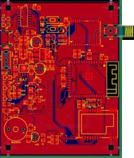
34.雅迪电动车定位器电动车停好后自动上传位置，需要时再让蜂鸣器响起。项目用 LoRa 将车上的定位器、网关和控制端连接起来。

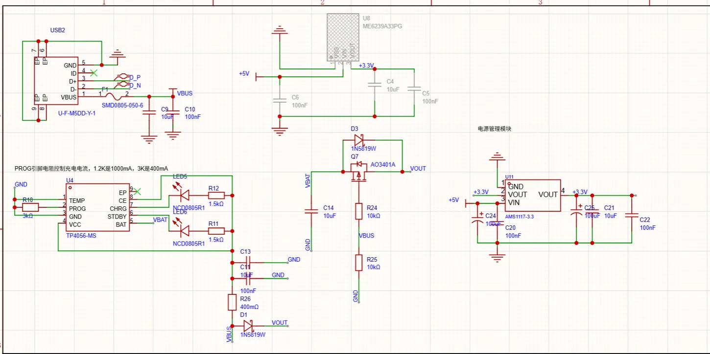

针对雅迪app位置上报存在的蓝牙上报易断联和远程寻车连不上的问题，只做了基于LoRa通信的电动车寻位器。主要功能有：1.停车后自主上报停车位置2.上位机自主下发寻车指令，定位器的蜂鸣器鸣叫并且上传位置。项目由三个部分组成，分别是定位器本体，LoRa网关，以及上位机。为了延长续航时间，定位器与网关的LoRa模块均采用RxDutyCycle以降低功耗，代价是蜂鸣器鸣叫会有5s的延时。定位器本体也采用adxl传感器的静止中断来唤醒单片机，进一步减少功耗。上位机设置状态提示栏，方便了解命令执行状态。并且显示定位器电量和温度值，用于提醒可能的漏水和及时充电。
项目名称：雅迪电瓶车自动定位器
mentor：黄千格
即简单功能介绍，可附图和视频加以说明
雅迪电瓶车自动定位器的功能有两个，一是电瓶车静止后自动上传目前位置。二是收到寻车指令后蜂鸣器鸣叫并且上报位置。
选型：
- 终端：ESP32 S3(N16R8）,E22400M(SX1268芯片)，ADXL362,DS18B20,FATGM
- 网关：ESP32 S3(N16R8), E22400M(SX1268芯片)
选型理由：ESP32是随便选的。LoRa是因为中国民用只能这个芯片。ADXL362是常见的低功耗检测运动芯片，并且有一个int2脚可以映射终端。DS18B20精度较高。GATGM GPS,低功耗并且有轻度睡眠的选项（可以保留上一次的星图）
视频注意看上传时间，用蜂鸣器测试在建筑群中可以达到200m的通信距离。视频中为了方便演示把定位器放在了身边。
第二个功能
第一个功能
---
构建"迭代与改错"记录，可仅截屏展示
电路模块原理说明
USB2用于串口通讯。U8为LDO模块(体积更小)，后来发现电流过小，在初始化过程可能会引发ESP32重启，故后来换成了AMS1117。TP4056为充电芯片，两个LED一个代表充满电一个代表重在充电。中间的电路是为了电源管理，即采用电压更高的电源的供电。
CH340C经典电路。原先采用CH340X是因为体积更小，但是用下来发现启动有问题，故换回来CH340C。
左边为电流测量，通过放大器放大采样电阻的两端电压后通过esp32的adc引脚读取。右边为电压测量，做了低功耗处理，只有在adc_voltage为高的时候才会有电流流过右边的电路。并且对对电压做分压使其落到3.3V的范围里面。
经典电路。ADXL_INT2引出接esp32，做ext1触发脚。
有遗留的LCD脚是因为第一版是MPU6050的高功耗版本。
GPS_EN出高GPS休眠。
RXEN和TXEN做了反向处理。
网络名称写着SX1262实际上模块内部是SX1268。一开始设计的时候没有考虑中国允许的LoRa频段。现在是合法的。
各个部分的介绍同定位器（由下载代码电路+LDO+ESP32+LoRa组成）
无机械结构。
外壳由嘉立创打印，盖子与身体通过螺丝来连接
基本没有调试图片。我会对我记得的几个改动进行说明。
电路
定位器修改历史（再早的应该是找不到了）
主要的改动：
1.原先一直有下载电路一下载就串口丢失的问题。后来发现问题有两处a.原先贪图空间小采用了ch340x，但是电路是照搬ch340c的电路。因为默认引脚是THROW而不是DTR，导致无法上传。还有CH340x的DTR要和RTS相连，而CH340C不用b.LDO限制电流过小（250mA)，初始化电流较大可能突破限制。因此在第二版里改回AMS
2.这样改动后变为有概率串口丢失，通过命令发现如果加入before_noreset可以正常上传。推测是复位电流过大使得电压下降，触发了reset，导致串口反复连上后又消失。用示波器抓取发现确实有电压较大的下降。但是网关采用ch340c没有这个问题，因此觉得ch340x可能鲁棒性不如ch340c。在第三版中加入了两个滤波电解电容，以及换回了ch340c。
3.LoRa无法正常收发，发现是分压计算错误，把电阻阻值换了一下。同时再看了一下LoRa的电路手册，把spi的线改到了背面并且避开金属壳内部减少干扰。
4.DSB加了上拉电阻。
网关
主要改动
1.画电路图脑抽了给gpio46接了上拉，导致无法下载。改为not connected。
2.LoRa电阻阻值问题。
3.烧录ble程序会串口消失。问题有两个，第一个是nimble库版本过低，会与esp32 s3产生冲突。第二个是ble重启电流过大，导致电压波动，串口消失。改版后加了几个电容。
终端部分git图。
Plan b是互联网直接上传坐标的版本（无网关）用于调试程序整体逻辑；Plan A是高功耗版本但是有LoRa上传，有网关。高功耗的运动检测是通过mpu6050；并且LoRa是通过uart连接的。
Tx_done中断是发现LoRa明明发送成功串口却显示发送失败，发现是irq没有加入Tx_done（一开始所有的irqmask和dio1mask用的是同一个，dio1不用映射tx_done)
唤醒原先是全部gpio，但是这样只能通过电位来读取唤醒源（esp32 s3不支持读取gpio唤醒源）。adxl的高脉冲时间太短读不到。因此改为了ext1唤醒。
下一个spi的问题是adxl为软的spi(ai自己写的），lora是硬spi导致如果是adxl唤醒后lora无法传输信息。
gps_update和gps_sensor的问题在于一开始只在要update时候才会调用sensor_read，但是这样会导致读到的gps数据只有当时残留在串口缓冲区的一条（很有可能被截断）。
电压电流测量有问题是指取一次不行，现在是取平均值。
超时计算中增加了两点，是去掉了无关变量（原先用unsigned两数相减溢出了）。
网关部分git图
String 拼接 如字面意思所示，很奇怪的一个问题。ai认为是单片机拼一半做其他事情了。所以用了更快的snpring。另外增加了通信协议以/n为结尾的规定。防止json和csv粘起来。
lora成固件库是将网关与终端的驱动统一为一个程序。ble名字改短是发现有概率名字被截断显示未知设备。
监听改为非阻塞似乎改的是ack的回传机制，之前阻塞的会收不到坐标数据。
两边的驱动统一一下是准备进行网关低功耗设计。现在发现没意义。1是因为网关设计是待在身边2ble低功耗失败了，lora这边单独睡觉没啥用。（ble不能低功耗的原因是因为ble库不支持pm）
终端部分git
前三个commit跑的都是部分测试。
列举在项目内容中的AI使用情况
前期项目完成思路讨论，部分传感器选型，天线布线指导。
大部分的代码撰写。我手搓的只有dsb与gps的读取。
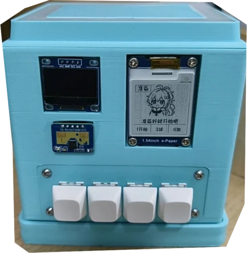
35.寝室智能桌宠桌宠在专注计时的同时记录身边的空气状态。学习结束后，可回顾这段时间的时长、二氧化碳浓度和温湿度。

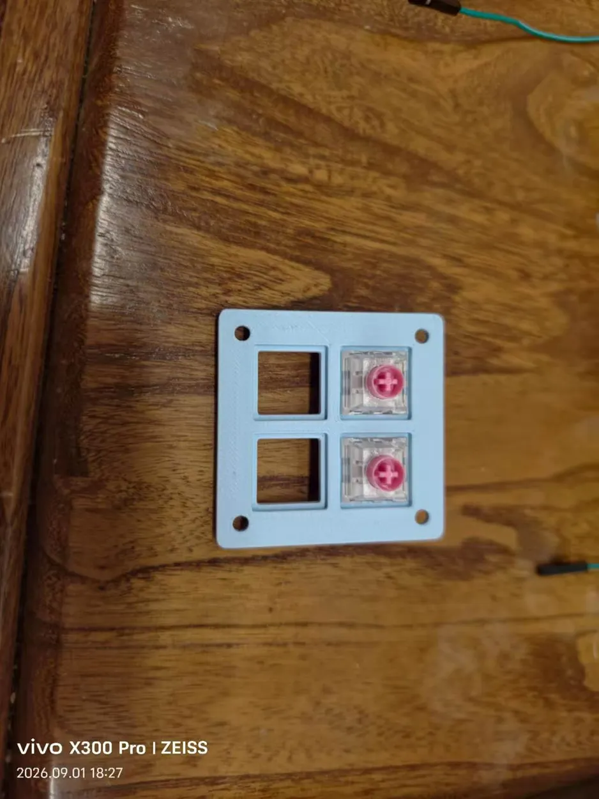

这是一款简易的寝室智能桌宠，面向专注学习场景，通过学习计时、环境检测和低打扰反馈，帮助学生及时关注空气状态与休息节奏。
系统以ESP32为主控，使用SCD41检测CO2、温度和湿度，使用LD2410C毫米波雷达判断用户是否位于桌前。用户到位后，设备进入准备页面，可以通过机械按键选择学习时长，再确认开始。学习过程中，OLED显示倒计时和实时环境数据，墨水屏显示当前阶段、桌宠表情和按键功能，WS2812B灯带使用低亮度颜色表达环境与学习状态。学习结束后，设备进入总结页面，显示本轮学习时长、CO2平均值与峰值、平均温湿度，并给出简短反馈。
项目名称：寝室智能桌宠
Mentor：巩子杰
寝室智能桌宠是一款面向专注学习场景，通过学习计时、环境检测和低打扰反馈，帮助学生及时关注空气状态与休息节奏的学习伴侣。
系统以ESP32为主控，使用SCD41检测CO2、温度和湿度，使用LD2410C毫米波雷达判断用户是否位于桌前。用户到位后，设备进入准备页面，可以通过机械按键选择25、45、60或90分钟的学习时长，再确认开始。学习过程中，OLED显示倒计时和实时环境数据，墨水屏显示当前阶段、桌宠表情和按键功能，WS2812B灯带使用低亮度颜色表达环境与学习状态。学习结束后，设备进入总结页面，显示本轮学习时长、CO2平均值与峰值、平均温湿度，并给出简短反馈。
C++
namespace {
// -----------------------------------------------------------------------------
// Hardware map from the custom carrier PCB.
// -----------------------------------------------------------------------------
constexpr uint8_t PIN_I2C_SDA = 21;
constexpr uint8_t PIN_I2C_SCL = 22;
constexpr uint8_t OLED_ADDRESS = 0x3C;
constexpr int8_t OLED_RESET = -1;
constexpr uint8_t OLED_WIDTH = 128;
constexpr uint8_t OLED_HEIGHT = 64;
constexpr uint8_t PIN_EPD_SCK = 18;
constexpr uint8_t PIN_EPD_MOSI = 23;
constexpr uint8_t PIN_EPD_CS = 13;
constexpr uint8_t PIN_EPD_DC = 27;
constexpr uint8_t PIN_EPD_RST = 26;
constexpr uint8_t PIN_EPD_BUSY = 39;
constexpr uint8_t PIN_LED_STRIP = 25;
constexpr uint8_t PIN_BUZZER = 14;
constexpr uint8_t PIN_BUTTON_START = 34;
constexpr uint8_t PIN_BUTTON_PAGE = 35;
constexpr uint8_t PIN_BUTTON_FINISH = 32;
constexpr uint8_t PIN_BUTTON_DURATION = 33;
constexpr uint8_t PIN_LD2410_OUT = 36;
constexpr uint8_t PIN_LD2410_RX = 16; // ESP32 RX, connected to LD2410 TX.
constexpr uint8_t PIN_LD2410_TX = 17; // ESP32 TX, connected to LD2410 RX.
// -----------------------------------------------------------------------------
// User-tunable settings.
// Set LED_COUNT to the number of WS2812B pixels actually connected.
// -----------------------------------------------------------------------------
constexpr uint16_t LED_COUNT = 8;
// Global WS2812B brightness limit. 72/255 is visible through a diffuser while
// keeping an eight-pixel strip comfortably within USB power capability.
constexpr uint8_t LED_MASTER_BRIGHTNESS = 72;
constexpr bool PRESENCE_ACTIVE_LEVEL = HIGH;
constexpr bool ENABLE_PRESENCE_DETECTION = true;
constexpr bool BUZZER_IS_PASSIVE = true;
constexpr bool ENABLE_LD2410_UART_DIAGNOSTICS = false;
constexpr uint32_t BUTTON_DEBOUNCE_MS = 35;
// Poll data-ready frequently; the SCD41 itself produces a new sample about
// every five seconds in normal periodic measurement mode.
constexpr uint32_t SENSOR_POLL_MS = 250;
constexpr uint32_t LED_FRAME_MS = 30;
constexpr uint32_t OLED_REFRESH_MS = 500;
constexpr uint32_t SCREEN_REFRESH_MIN_MS = 45000;
// Short confirmation times make the LD2410 OUT signal easy to verify. Increase
// PERSON_ABSENT_DELAY_MS to 30-60 seconds after the placement is finalized.
constexpr uint32_t PERSON_PRESENT_CONFIRM_MS = 1000;
constexpr uint32_t PERSON_ABSENT_DELAY_MS = 1500;
constexpr uint32_t PRESENCE_DEBUG_LOG_MS = 1000;
// The SCD41 produces a fresh reading about every five seconds. Requiring two
// matching readings keeps brief spikes from causing an e-paper refresh.
constexpr uint8_t EXPRESSION_CONFIRMATION_SAMPLES = 2;
constexpr uint32_t EXPRESSION_CONFIRMATION_MAX_MS = 12000;
constexpr uint32_t LONG_SITTING_INTERVAL_MS = 45UL * 60UL * 1000UL;
constexpr uint32_t LONG_SITTING_DISPLAY_MS = 3UL * 60UL * 1000UL;
constexpr uint16_t CO2_WARNING_PPM = 1000;
constexpr uint16_t CO2_WARNING_CLEAR_PPM = 900;
constexpr uint16_t CO2_HIGH_PPM = 1500;
constexpr uint16_t CO2_HIGH_CLEAR_PPM = 1400;
constexpr float TEMPERATURE_HIGH_C = 28.0F;
constexpr float TEMPERATURE_HIGH_CLEAR_C = 27.0F;
constexpr float TEMPERATURE_LOW_C = 18.0F;
constexpr float TEMPERATURE_LOW_CLEAR_C = 19.0F;
constexpr float HUMIDITY_LOW_RH = 30.0F;
constexpr float HUMIDITY_LOW_CLEAR_RH = 35.0F;
constexpr float HUMIDITY_HIGH_RH = 70.0F;
constexpr float HUMIDITY_HIGH_CLEAR_RH = 65.0F;
constexpr uint8_t BUZZER_LEDC_CHANNEL = 0;
constexpr uint16_t BUZZER_FREQUENCY_HZ = 2700;
constexpr uint16_t STUDY_DURATIONS_MINUTES[] = {25, 45, 60, 90};
constexpr uint8_t STUDY_DURATION_COUNT =
sizeof(STUDY_DURATIONS_MINUTES) / sizeof(STUDY_DURATIONS_MINUTES[0]);
constexpr uint8_t DEFAULT_DURATION_INDEX = 2; // 60 minutes.
enum class PetMode : uint8_t {
Home,
Ready,
Studying,
Paused,
Summary,
};
enum class ScreenRefreshMode : uint8_t {
None,
BodyFast,
FullScreenFast,
Full,
};
struct EnvironmentData {
bool valid = false;
uint16_t co2Ppm = 0;
float temperatureC = 0.0F;
float humidityRh = 0.0F;
uint32_t updatedAt = 0;
};
class DebouncedButton {
public:
explicit DebouncedButton(uint8_t pin) : pin_(pin) {}
void begin() {
// GPIO34 and GPIO35 are input-only and have external pull-ups on the PCB.
pinMode(pin_, INPUT);
rawState_ = digitalRead(pin_);
stableState_ = rawState_;
}
bool wasPressed(uint32_t now) {
const bool reading = digitalRead(pin_);
if (reading != rawState_) {
rawState_ = reading;
changedAt_ = now;
}
if ((now - changedAt_) < BUTTON_DEBOUNCE_MS
stableState_ == rawState_) {
return false;
}
stableState_ = rawState_;
return stableState_ == LOW;
}
private:
uint8_t pin_;
bool rawState_ = HIGH;
bool stableState_ = HIGH;
uint32_t changedAt_ = 0;
};
GxEPD2_BW<GxEPD2_154_D67, GxEPD2_154_D67::HEIGHT> display(
GxEPD2_154_D67(PIN_EPD_CS, PIN_EPD_DC, PIN_EPD_RST, PIN_EPD_BUSY));
U8G2_FOR_ADAFRUIT_GFX chineseText;
const uint8_t* const CHINESE_FONT = u8g2_font_wqy14_t_gb2312b;
Adafruit_SSD1306 oled(OLED_WIDTH, OLED_HEIGHT, &Wire, OLED_RESET);
U8G2_FOR_ADAFRUIT_GFX oledText;
SensirionI2cScd4x scd41;
HardwareSerial radarSerial(2);
Adafruit_NeoPixel ledStrip(LED_COUNT, PIN_LED_STRIP, NEO_GRB + NEO_KHZ800);
DebouncedButton startButton(PIN_BUTTON_START);
DebouncedButton pageButton(PIN_BUTTON_PAGE);
DebouncedButton finishButton(PIN_BUTTON_FINISH);
DebouncedButton durationButton(PIN_BUTTON_DURATION);
PetMode petMode = ENABLE_PRESENCE_DETECTION ? PetMode::Home : PetMode::Ready;
EnvironmentData environment;
petgfx::ExpressionBitmapId activeExpression =
ENABLE_PRESENCE_DETECTION ? petgfx::ExpressionBitmapId::Waiting
: petgfx::ExpressionBitmapId::Ready;
petgfx::ExpressionBitmapId pendingExpression = activeExpression;
PetMode expressionMode = petMode;
bool scd41Available = false;
bool oledAvailable = false;
bool oledDirty = true;
bool personPresent = !ENABLE_PRESENCE_DETECTION;
bool detailPage = false;
bool screenDirty = true;
bool screenRefreshUrgent = false;
ScreenRefreshMode pendingScreenRefresh = ScreenRefreshMode::Full;
uint8_t durationIndex = DEFAULT_DURATION_INDEX;
uint32_t presenceDetectedSince = 0;
uint32_t presenceMissingSince = 0;
uint32_t lastPresenceDebugAt = 0;
uint32_t lastSensorPollAt = 0;
uint32_t lastLedFrameAt = 0;
uint32_t lastOledRefreshAt = 0;
uint32_t lastScreenRefreshAt = 0;
uint32_t buzzerStopAt = 0;
uint32_t pendingExpressionSince = 0;
uint32_t lastExpressionSampleAt = 0;
uint8_t pendingExpressionSamples = 0;
uint32_t studyStartedAt = 0;
uint32_t studyPausedElapsedMs = 0;
uint32_t summaryElapsedMs = 0;
uint16_t sessionStartCo2 = 0;
uint16_t sessionEndCo2 = 0;
uint32_t sessionCo2Sum = 0;
uint16_t sessionMaxCo2 = 0;
uint32_t sessionSampleCount = 0;
float sessionTemperatureSum = 0.0F;
float sessionHumiditySum = 0.0F;
float sessionEndTemperatureC = 0.0F;
float sessionEndHumidityRh = 0.0F;
bool summaryCompleted = false;
void requestScreenRefresh(bool urgent = true) {
screenDirty = true;
screenRefreshUrgent = screenRefreshUrgent · · urgent;
if (pendingScreenRefresh != ScreenRefreshMode::Full) {
pendingScreenRefresh = ScreenRefreshMode::FullScreenFast;
}
oledDirty = true;
}
void requestExpressionRefresh() {
// A queued full-screen update always wins. Otherwise update only the
// expression body with the panel's differential fast-refresh waveform.
if (!screenDirty · · pendingScreenRefresh == ScreenRefreshMode::None) {
pendingScreenRefresh = ScreenRefreshMode::BodyFast;
}
screenDirty = true;
screenRefreshUrgent = true;
oledDirty = true;
}
void requestOledRefresh() {
oledDirty = true;
}
uint16_t selectedDurationMinutes() {
return STUDY_DURATIONS_MINUTES[durationIndex];
}
uint32_t activeStudyElapsedMs(uint32_t now) {
if (petMode == PetMode::Studying) {
return studyPausedElapsedMs + (now - studyStartedAt);
}
return studyPausedElapsedMs;
}
uint32_t selectedDurationMs() {
return static_cast<uint32_t>(selectedDurationMinutes()) * 60UL * 1000UL;
}
void resetSessionStatistics() {
sessionCo2Sum = 0;
sessionMaxCo2 = 0;
sessionSampleCount = 0;
sessionTemperatureSum = 0.0F;
sessionHumiditySum = 0.0F;
sessionEndTemperatureC = 0.0F;
sessionEndHumidityRh = 0.0F;
}
void recordSessionSample(uint16_t co2, float temperature, float humidity) {
sessionCo2Sum += co2;
sessionTemperatureSum += temperature;
sessionHumiditySum += humidity;
++sessionSampleCount;
if (co2 > sessionMaxCo2) {
sessionMaxCo2 = co2;
}
}
uint16_t sessionAverageCo2() {
if (sessionSampleCount > 0) {
return static_cast<uint16_t>(
(sessionCo2Sum + sessionSampleCount / 2) / sessionSampleCount);
}
return sessionEndCo2 != 0 ? sessionEndCo2 : sessionStartCo2;
}
uint16_t sessionPeakCo2() {
if (sessionMaxCo2 != 0) {
return sessionMaxCo2;
}
return sessionStartCo2 > sessionEndCo2 ? sessionStartCo2 : sessionEndCo2;
}
float sessionAverageTemperature() {
return sessionSampleCount > 0
? sessionTemperatureSum / static_cast<float>(sessionSampleCount)
: sessionEndTemperatureC;
}
float sessionAverageHumidity() {
return sessionSampleCount > 0
? sessionHumiditySum / static_cast<float>(sessionSampleCount)
: sessionEndHumidityRh;
}
uint32_t studyRemainingMs(uint32_t now) {
const uint32_t elapsed = activeStudyElapsedMs(now);
const uint32_t duration = selectedDurationMs();
return elapsed >= duration ? 0 : duration - elapsed;
}
petgfx::ExpressionBitmapId expressionForCurrentState(uint32_t now) {
using petgfx::ExpressionBitmapId;
switch (petMode) {
case PetMode::Home:
return ExpressionBitmapId::Waiting;
case PetMode::Ready:
return ExpressionBitmapId::Ready;
case PetMode::Paused:
return ExpressionBitmapId::Paused;
case PetMode::Summary:
return summaryCompleted ? ExpressionBitmapId::Completed
: ExpressionBitmapId::Paused;
case PetMode::Studying:
break;
}
if (!environment.valid) {
return ExpressionBitmapId::FocusGood;
}
const bool co2High =
environment.co2Ppm >= CO2_HIGH_PPM
(activeExpression == ExpressionBitmapId::Co2High &&
environment.co2Ppm >= CO2_HIGH_CLEAR_PPM);
const bool co2Warning =
environment.co2Ppm >= CO2_WARNING_PPM
((activeExpression == ExpressionBitmapId::Co2Warning
activeExpression == ExpressionBitmapId::Co2High) &&
environment.co2Ppm >= CO2_WARNING_CLEAR_PPM);
const bool tooHot =
environment.temperatureC >= TEMPERATURE_HIGH_C
(activeExpression == ExpressionBitmapId::TooHot &&
environment.temperatureC >= TEMPERATURE_HIGH_CLEAR_C);
const bool tooCold =
environment.temperatureC <= TEMPERATURE_LOW_C
(activeExpression == ExpressionBitmapId::TooCold &&
environment.temperatureC <= TEMPERATURE_LOW_CLEAR_C);
const bool tooDry =
environment.humidityRh <= HUMIDITY_LOW_RH
(activeExpression == ExpressionBitmapId::TooDry &&
environment.humidityRh <= HUMIDITY_LOW_CLEAR_RH);
const bool tooHumid =
environment.humidityRh >= HUMIDITY_HIGH_RH
(activeExpression == ExpressionBitmapId::TooHumid &&
environment.humidityRh >= HUMIDITY_HIGH_CLEAR_RH);
if (co2High) {
return ExpressionBitmapId::Co2High;
}
if (tooHot) {
return ExpressionBitmapId::TooHot;
}
if (tooCold) {
return ExpressionBitmapId::TooCold;
}
if (co2Warning) {
return ExpressionBitmapId::Co2Warning;
}
if (tooDry) {
return ExpressionBitmapId::TooDry;
}
if (tooHumid) {
return ExpressionBitmapId::TooHumid;
}
const uint32_t elapsed = activeStudyElapsedMs(now);
if (elapsed >= LONG_SITTING_INTERVAL_MS &&
(elapsed % LONG_SITTING_INTERVAL_MS) < LONG_SITTING_DISPLAY_MS) {
return ExpressionBitmapId::Stretch;
}
return ExpressionBitmapId::FocusGood;
}
void updateExpression(uint32_t now) {
const petgfx::ExpressionBitmapId desired = expressionForCurrentState(now);
if (petMode != expressionMode) {
expressionMode = petMode;
activeExpression = desired;
pendingExpression = desired;
pendingExpressionSince = now;
pendingExpressionSamples = 0;
lastExpressionSampleAt = environment.updatedAt;
requestScreenRefresh();
return;
}
// Outside a study session, state changes such as pause and summary should
// appear immediately and do not need sensor confirmation.
if (petMode != PetMode::Studying) {
if (desired != activeExpression) {
activeExpression = desired;
pendingExpression = desired;
pendingExpressionSamples = 0;
requestScreenRefresh();
}
return;
}
// Evaluate an environmental expression only once per fresh SCD41 sample.
// This makes the delay predictable instead of counting repeated loop calls
// against the same measurement.
if (environment.valid && environment.updatedAt == lastExpressionSampleAt) {
return;
}
if (environment.valid) {
lastExpressionSampleAt = environment.updatedAt;
}
if (desired == activeExpression) {
pendingExpression = desired;
pendingExpressionSince = now;
pendingExpressionSamples = 0;
return;
}
if (desired != pendingExpression) {
pendingExpression = desired;
pendingExpressionSince = now;
pendingExpressionSamples = 1;
Serial.printf("E-paper expression candidate %u (1/%u).n",
static_cast<unsigned>(pendingExpression),
static_cast<unsigned>(EXPRESSION_CONFIRMATION_SAMPLES));
return;
}
if (pendingExpressionSamples < EXPRESSION_CONFIRMATION_SAMPLES) {
++pendingExpressionSamples;
}
if (pendingExpressionSamples >= EXPRESSION_CONFIRMATION_SAMPLES
(now - pendingExpressionSince) >= EXPRESSION_CONFIRMATION_MAX_MS) {
activeExpression = desired;
pendingExpression = desired;
pendingExpressionSince = now;
pendingExpressionSamples = 0;
if (!detailPage) {
requestExpressionRefresh();
}
Serial.printf("E-paper expression changed to %u.n",
static_cast<unsigned>(activeExpression));
}
}
void setChineseText(uint16_t foreground = GxEPD_BLACK,
uint16_t background = GxEPD_WHITE) {
chineseText.setFontMode(1);
chineseText.setFontDirection(0);
chineseText.setForegroundColor(foreground);
chineseText.setBackgroundColor(background);
chineseText.setFont(CHINESE_FONT);
}
void printChinese(const char* text, int16_t x, int16_t baseline,
uint16_t foreground = GxEPD_BLACK,
uint16_t background = GxEPD_WHITE) {
setChineseText(foreground, background);
chineseText.setCursor(x, baseline);
chineseText.print(text);
}
void printChineseCentered(const char* text, int16_t baseline,
uint16_t foreground = GxEPD_BLACK,
uint16_t background = GxEPD_WHITE) {
setChineseText(foreground, background);
const int16_t width = chineseText.getUTF8Width(text);
chineseText.setCursor((display.width() - width) / 2, baseline);
chineseText.print(text);
}
void printChineseInColumn(const char* text, int16_t left, int16_t width,
int16_t baseline) {
setChineseText();
const int16_t textWidth = chineseText.getUTF8Width(text);
chineseText.setCursor(left + (width - textWidth) / 2, baseline);
chineseText.print(text);
}
const epaperfont::Font& epaperUiFont(uint8_t size) {
if (size >= 21) {
return epaperfont::kFont21;
}
if (size >= 20) {
return epaperfont::kFont20;
}
return epaperfont::kFont18;
}
uint32_t decodeUtf8Codepoint(const char*& text) {
const uint8_t first = static_cast<uint8_t>(*text++);
if ((first & 0x80U) == 0) {
return first;
}
if ((first & 0xE0U) == 0xC0U) {
const uint8_t second = static_cast<uint8_t>(*text++);
return ((first & 0x1FU) << 6) · (second & 0x3FU);
}
if ((first & 0xF0U) == 0xE0U) {
const uint8_t second = static_cast<uint8_t>(*text++);
const uint8_t third = static_cast<uint8_t>(*text++);
return ((first & 0x0FU) << 12) · ((second & 0x3FU) << 6)
(third & 0x3FU);
}
return '?';
}
bool loadEpaperGlyph(const epaperfont::Font& font, uint32_t codepoint,
epaperfont::Glyph& glyph) {
int16_t low = 0;
int16_t high = static_cast<int16_t>(font.glyphCount) - 1;
while (low <= high) {
const int16_t middle = low + (high - low) / 2;
const uint32_t middleCodepoint =
pgm_read_dword(&font.glyphs[middle].codepoint);
if (middleCodepoint == codepoint) {
memcpy_P(&glyph, &font.glyphs[middle], sizeof(glyph));
return true;
}
if (middleCodepoint < codepoint) {
low = middle + 1;
} else {
high = middle - 1;
}
}
return false;
}
int16_t epaperUiTextWidth(const char* text, uint8_t size) {
const epaperfont::Font& font = epaperUiFont(size);
int16_t width = 0;
while (*text != '0') {
epaperfont::Glyph glyph{};
const uint32_t codepoint = decodeUtf8Codepoint(text);
width += loadEpaperGlyph(font, codepoint, glyph) ? glyph.advance : size / 2;
}
return width;
}
void drawEpaperUiText(const char* text, int16_t x, int16_t baseline,
uint8_t size) {
const epaperfont::Font& font = epaperUiFont(size);
while (*text != '0') {
epaperfont::Glyph glyph{};
const uint32_t codepoint = decodeUtf8Codepoint(text);
if (!loadEpaperGlyph(font, codepoint, glyph)) {
x += size / 2;
continue;
}
const uint8_t stride = (glyph.width + 7) / 8;
for (uint8_t row = 0; row < glyph.height; ++row) {
for (uint8_t column = 0; column < glyph.width; ++column) {
const uint16_t offset = glyph.bitmapOffset + row * stride +
column / 8;
const uint8_t packed = pgm_read_byte(font.bitmap + offset);
if ((packed & (0x80U >> (column & 7U))) != 0) {
display.drawPixel(x + glyph.xOffset + column,
baseline + glyph.yOffset + row,
GxEPD_BLACK);
}
}
}
x += glyph.advance;
}
}
void drawEpaperUiTextCentered(const char* text, int16_t baseline, uint8_t size,
int16_t left = 0, int16_t width = 200) {
drawEpaperUiText(text, left + (width - epaperUiTextWidth(text, size)) / 2,
baseline, size);
}
void drawExpressionBitmap() {
constexpr int16_t x = (200 - petgfx::kExpressionWidth) / 2;
constexpr int16_t y = 1;
display.drawBitmap(x, y, petgfx::expressionBitmap(activeExpression),
petgfx::kExpressionWidth, petgfx::kExpressionHeight,
GxEPD_BLACK);
}
void drawExpressionBitmapScaled(petgfx::ExpressionBitmapId expression,
int16_t x, int16_t y, uint16_t width,
uint16_t height) {
const uint8_t* bitmap = petgfx::expressionBitmap(expression);
constexpr uint16_t sourceStride = (petgfx::kExpressionWidth + 7) / 8;
for (uint16_t targetY = 0; targetY < height; ++targetY) {
const uint16_t sourceY =
static_cast<uint32_t>(targetY) * petgfx::kExpressionHeight / height;
for (uint16_t targetX = 0; targetX < width; ++targetX) {
const uint16_t sourceX =
static_cast<uint32_t>(targetX) * petgfx::kExpressionWidth / width;
const uint8_t packed = pgm_read_byte(
bitmap + sourceY * sourceStride + sourceX / 8);
if ((packed & (0x80U >> (sourceX & 7U))) != 0) {
display.drawPixel(x + targetX, y + targetY, GxEPD_BLACK);
}
}
}
}
void printAsciiCentered(const char* text, const uint8_t* font,
int16_t baseline) {
chineseText.setFontMode(1);
chineseText.setFontDirection(0);
chineseText.setForegroundColor(GxEPD_BLACK);
chineseText.setBackgroundColor(GxEPD_WHITE);
chineseText.setFont(font);
const int16_t width = chineseText.getUTF8Width(text);
chineseText.setCursor((display.width() - width) / 2, baseline);
chineseText.print(text);
}
const char* expressionCaption() {
using petgfx::ExpressionBitmapId;
switch (activeExpression) {
case ExpressionBitmapId::Ready:
return u8"u51C6u5907u597Du5C31u5F00u59CBu5427";
case ExpressionBitmapId::FocusGood:
return u8"u73AFu5883u8212u9002uFF0Cu7EE7u7EEDu4E13u6CE8";
case ExpressionBitmapId::Paused:
return u8"u4F11u606Fu4E00u4E0Bu4E5Fu5F88u597D";
case ExpressionBitmapId::Completed:
return u8"u8FD9u4E00u8F6Eu8F9Bu82E6u4E86";
case ExpressionBitmapId::Co2Warning:
return u8"u7A7Au6C14u6709u70B9u95F7";
case ExpressionBitmapId::Co2High:
return u8"u8BF7u5F00u7A97u901Au98CE";
case ExpressionBitmapId::TooHot:
return u8"u6709u70B9u70EDuFF0Cu6CE8u610Fu964Du6E29";
case ExpressionBitmapId::TooCold:
return u8"u6709u70B9u51B7uFF0Cu6CE8u610Fu4FDDu6696";
case ExpressionBitmapId::TooDry:
return u8"u7A7Au6C14u504Fu5E72uFF0Cu559Du70B9u6C34";
case ExpressionBitmapId::TooHumid:
return u8"u6E7Fu5EA6u6709u70B9u9AD8";
case ExpressionBitmapId::Stretch:
return u8"u8D77u6765u4F38u5C55u4E00u4E0B";
case ExpressionBitmapId::Waiting:
return u8"u6211u5728u8FD9u91CCu7B49u4F60";
}
return "";
}
const char* modeLabel() {
switch (petMode) {
case PetMode::Home:
return u8"u5F85u673A";
case PetMode::Ready:
return u8"u51C6u5907";
case PetMode::Studying:
return u8"u4E13u6CE8";
case PetMode::Paused:
return u8"u6682u505C";
case PetMode::Summary:
return u8"u603Bu7ED3";
}
return "";
}
const char* co2Label() {
if (!environment.valid) {
return u8"u7B49u5F85u4F20u611Fu5668";
}
if (environment.co2Ppm <= 1000) {
return u8"u7A7Au6C14u6E05u65B0";
}
if (environment.co2Ppm <= 1500) {
return u8"u5EFAu8BAEu901Au98CE";
}
return u8"u8BF7u5C3Du5FEBu901Au98CE";
}
const char* buttonHint(uint8_t button) {
if (button == 1) {
switch (petMode) {
case PetMode::Studying:
return u8"1u6682u505C";
case PetMode::Paused:
return u8"1u7EE7u7EED";
case PetMode::Summary:
return u8"1u4E3Bu9875";
case PetMode::Home:
return u8"1u7B49u5F85";
case PetMode::Ready:
return u8"1u5F00u59CB";
}
}
if (button == 2) {
if (petMode == PetMode::Summary) {
return detailPage ? u8"2u89D2u8272" : u8"2u6570u636E";
}
if (detailPage) {
return u8"2u8FD4u56DE";
}
return u8"2u8BF4u660E";
}
if (button == 3) {
if (petMode == PetMode::Studying · · petMode == PetMode::Paused) {
return u8"3u7ED3u675F";
}
return petMode == PetMode::Ready ? u8"3u51CF" : "";
}
return petMode == PetMode::Ready ? u8"4u52A0" : "";
}
void drawPageFrame() {
display.fillRect(5, 4, 57, 27, GxEPD_WHITE);
display.drawRect(5, 4, 57, 27, GxEPD_BLACK);
drawEpaperUiTextCentered(modeLabel(), 24, 21, 5, 57);
display.drawLine(0, 163, 200, 163, GxEPD_BLACK);
if (petMode == PetMode::Studying · · petMode == PetMode::Paused
petMode == PetMode::Summary) {
display.drawLine(100, 163, 100, 200, GxEPD_BLACK);
drawEpaperUiTextCentered(buttonHint(1), 191, 18, 0, 100);
drawEpaperUiTextCentered(
buttonHint(petMode == PetMode::Summary ? 2 : 3), 191, 18, 100,
100);
return;
}
display.drawLine(50, 163, 50, 200, GxEPD_BLACK);
display.drawLine(100, 163, 100, 200, GxEPD_BLACK);
display.drawLine(150, 163, 150, 200, GxEPD_BLACK);
for (uint8_t button = 1; button <= 4; ++button) {
drawEpaperUiTextCentered(buttonHint(button), 191, 18,
(button - 1) * 50, 50);
}
}
void drawSummaryMainPage() {
const petgfx::ExpressionBitmapId summaryExpression =
summaryCompleted ? petgfx::ExpressionBitmapId::Completed
: petgfx::ExpressionBitmapId::Paused;
display.drawBitmap((display.width() - petgfx::kExpressionWidth) / 2, 1,
petgfx::expressionBitmap(summaryExpression),
petgfx::kExpressionWidth, petgfx::kExpressionHeight,
GxEPD_BLACK);
drawEpaperUiTextCentered(
summaryCompleted ? u8"u8FD9u4E00u8F6Eu8F9Bu82E6u4E86"
: u8"u4ECAu5929u5DF2u7ECFu5F88u4E0Du9519",
157, 20);
}
void drawMainPage(uint32_t now) {
(void)now;
if (petMode == PetMode::Summary) {
drawSummaryMainPage();
drawPageFrame();
return;
}
drawExpressionBitmap();
drawEpaperUiTextCentered(expressionCaption(), 157, 20);
drawPageFrame();
}
void drawDetailPage() {
drawPageFrame();
if (petMode == PetMode::Summary) {
char line[36] = {};
const uint32_t elapsedSeconds = summaryElapsedMs / 1000UL;
snprintf(line, sizeof(line), "%02lu:%02lu",
static_cast<unsigned long>(elapsedSeconds / 60UL),
static_cast<unsigned long>(elapsedSeconds % 60UL));
printAsciiCentered(line, u8g2_font_logisoso18_tn, 51);
printAsciiCentered("FOCUS TIME", u8g2_font_helvR08_tf, 64);
display.drawLine(18, 70, 182, 70, GxEPD_BLACK);
snprintf(line, sizeof(line), "CO2 AVG %u ppm",
static_cast<unsigned>(sessionAverageCo2()));
printAsciiCentered(line, u8g2_font_helvR08_tf, 84);
snprintf(line, sizeof(line), "CO2 PEAK %u ppm",
static_cast<unsigned>(sessionPeakCo2()));
printAsciiCentered(line, u8g2_font_helvR08_tf, 101);
snprintf(line, sizeof(line), "TEMP AVG %.1f C",
sessionAverageTemperature());
printAsciiCentered(line, u8g2_font_helvR08_tf, 118);
snprintf(line, sizeof(line), "HUM AVG %.0f %%RH",
sessionAverageHumidity());
printAsciiCentered(line, u8g2_font_helvR08_tf, 135);
snprintf(line, sizeof(line), "CO2 %u > %u ppm",
static_cast<unsigned>(sessionStartCo2),
static_cast<unsigned>(sessionEndCo2));
printAsciiCentered(line, u8g2_font_helvR08_tf, 152);
} else {
printChineseCentered(u8"u663Eu793Au8BF4u660E", 50);
display.drawRoundRect(14, 60, 172, 98, 6, GxEPD_BLACK);
printChineseCentered(u8"u5012u8BA1u65F6u4E0Eu73AFu5883u6570u636E", 92);
printChineseCentered(u8"u6B63u5728 OLED u5B9Eu65F6u663Eu793A", 121);
printChineseCentered(u8"u58A8u6C34u5C4Fu4FDDu7559u72B6u6001u9875", 150);
}
}
void drawCurrentScreen(uint32_t now) {
display.fillScreen(GxEPD_WHITE);
setChineseText();
if (detailPage) {
drawDetailPage();
} else {
drawMainPage(now);
}
}
void renderCurrentWindow(uint32_t now) {
display.firstPage();
do {
drawCurrentScreen(now);
} while (display.nextPage());
}
void renderScreen(uint32_t now) {
display.setRotation(2);
ScreenRefreshMode refreshMode = pendingScreenRefresh;
if (refreshMode == ScreenRefreshMode::BodyFast &&
(petMode != PetMode::Studying · · detailPage)) {
refreshMode = ScreenRefreshMode::FullScreenFast;
}
if (refreshMode == ScreenRefreshMode::BodyFast) {
display.setPartialWindow(0, 0, display.width(), 163);
renderCurrentWindow(now);
} else if (refreshMode == ScreenRefreshMode::FullScreenFast) {
display.setPartialWindow(0, 0, display.width(), display.height());
renderCurrentWindow(now);
} else {
display.setFullWindow();
renderCurrentWindow(now);
}
lastScreenRefreshAt = now;
screenDirty = false;
screenRefreshUrgent = false;
pendingScreenRefresh = ScreenRefreshMode::None;
if (refreshMode == ScreenRefreshMode::BodyFast) {
Serial.println("E-paper fast body refresh.");
} else if (refreshMode == ScreenRefreshMode::FullScreenFast) {
Serial.println("E-paper fast full-screen refresh.");
} else {
Serial.println("E-paper full refresh.");
}
}
const char* oledModeLabel() {
switch (petMode) {
case PetMode::Home:
return "WAIT";
case PetMode::Ready:
return "READY";
case PetMode::Studying:
return "FOCUS";
case PetMode::Paused:
return "PAUSE";
case PetMode::Summary:
return summaryCompleted ? "DONE" : "ENDED";
}
return "";
}
void setOledFont(const uint8_t* font) {
oledText.setFontMode(1);
oledText.setFontDirection(0);
oledText.setForegroundColor(SSD1306_WHITE);
oledText.setBackgroundColor(SSD1306_BLACK);
oledText.setFont(font);
}
void drawOledText(const char* text, int16_t x, int16_t baseline,
const uint8_t* font) {
setOledFont(font);
oledText.setCursor(x, baseline);
oledText.print(text);
}
void drawOledTextRight(const char* text, int16_t right, int16_t baseline,
const uint8_t* font) {
setOledFont(font);
oledText.setCursor(right - oledText.getUTF8Width(text), baseline);
oledText.print(text);
}
void drawOledTextCentered(const char* text, int16_t baseline,
const uint8_t* font) {
setOledFont(font);
oledText.setCursor((OLED_WIDTH - oledText.getUTF8Width(text)) / 2,
baseline);
oledText.print(text);
}
void drawOledTextInColumn(const char* text, int16_t left, int16_t width,
int16_t baseline, const uint8_t* font) {
setOledFont(font);
oledText.setCursor(left + (width - oledText.getUTF8Width(text)) / 2,
baseline);
oledText.print(text);
}
const char* oledEnvironmentStatusLabel() {
if (!environment.valid) {
return "WAIT";
}
if (environment.co2Ppm >= CO2_HIGH_PPM) {
return "AIR POOR";
}
if (environment.temperatureC >= TEMPERATURE_HIGH_C) {
return "TOO HOT";
}
if (environment.temperatureC <= TEMPERATURE_LOW_C) {
return "TOO COLD";
}
if (environment.co2Ppm >= CO2_WARNING_PPM) {
return "VENT";
}
if (environment.humidityRh <= HUMIDITY_LOW_RH) {
return "TOO DRY";
}
if (environment.humidityRh >= HUMIDITY_HIGH_RH) {
return "TOO HUMID";
}
return "AIR GOOD";
}
uint8_t oledProgressWidth(uint32_t now) {
const uint32_t duration = selectedDurationMs();
if (duration == 0) {
return 0;
}
uint32_t elapsed = 0;
if (petMode == PetMode::Studying · · petMode == PetMode::Paused) {
elapsed = activeStudyElapsedMs(now);
} else if (petMode == PetMode::Summary) {
elapsed = summaryElapsedMs;
}
elapsed = elapsed > duration ? duration : elapsed;
return static_cast<uint8_t>(
static_cast<uint64_t>(elapsed) * 49U / duration);
}
void renderOled(uint32_t now) {
if (!oledAvailable) {
return;
}
oled.clearDisplay();
oled.setTextColor(SSD1306_WHITE);
uint32_t shownMs = 0;
if (petMode == PetMode::Studying · · petMode == PetMode::Paused) {
shownMs = studyRemainingMs(now);
} else if (petMode == PetMode::Ready) {
shownMs = selectedDurationMs();
} else if (petMode == PetMode::Summary) {
shownMs = summaryElapsedMs;
}
char timeText[12];
if (petMode == PetMode::Home) {
snprintf(timeText, sizeof(timeText), "--:--");
} else {
const uint32_t totalSeconds = shownMs / 1000UL;
snprintf(timeText, sizeof(timeText), "%02lu:%02lu",
totalSeconds / 60UL, totalSeconds % 60UL);
}
drawOledTextInColumn(oledModeLabel(), 0, 68, 8, u8g2_font_5x7_tf);
drawOledTextInColumn(timeText, 0, 68, 28, u8g2_font_logisoso16_tn);
drawOledTextInColumn(petMode == PetMode::Summary ? "ELAPSED" : "REMAIN",
0, 68, 38, u8g2_font_5x7_tf);
oled.drawRect(8, 42, 53, 5, SSD1306_WHITE);
const uint8_t progressWidth = oledProgressWidth(now);
if (progressWidth > 0) {
oled.fillRect(10, 44, progressWidth, 1, SSD1306_WHITE);
}
drawOledTextInColumn(oledEnvironmentStatusLabel(), 0, 68, 59,
u8g2_font_5x7_tf);
oled.drawLine(68, 2, 68, 62, SSD1306_WHITE);
char co2Text[8] = "---";
char temperatureText[8] = "--.-";
char humidityText[6] = "--";
if (environment.valid) {
snprintf(co2Text, sizeof(co2Text), "%u", environment.co2Ppm);
snprintf(temperatureText, sizeof(temperatureText), "%.1f",
environment.temperatureC);
snprintf(humidityText, sizeof(humidityText), "%.0f",
environment.humidityRh);
}
drawOledTextRight("CO2", 93, 7, u8g2_font_5x7_tf);
drawOledText("/", 97, 7, u8g2_font_5x7_tf);
drawOledText("ppm", 103, 7, u8g2_font_5x7_tf);
drawOledTextInColumn(co2Text, 69, 59, 18, u8g2_font_helvB08_tf);
oled.drawLine(74, 21, 123, 21, SSD1306_WHITE);
drawOledTextRight("TEMP", 93, 28, u8g2_font_5x7_tf);
drawOledText("/", 97, 28, u8g2_font_5x7_tf);
oled.drawCircle(104, 23, 1, SSD1306_WHITE);
drawOledText("C", 107, 28, u8g2_font_5x7_tf);
drawOledTextInColumn(temperatureText, 69, 59, 39,
u8g2_font_helvB08_tf);
oled.drawLine(74, 42, 123, 42, SSD1306_WHITE);
drawOledTextRight("HUM", 93, 49, u8g2_font_5x7_tf);
drawOledText("/", 97, 49, u8g2_font_5x7_tf);
drawOledText("%RH", 103, 49, u8g2_font_5x7_tf);
drawOledTextInColumn(humidityText, 69, 59, 61,
u8g2_font_helvB08_tf);
oled.display();
lastOledRefreshAt = now;
oledDirty = false;
}
void updateOled(uint32_t now) {
if (!oledAvailable) {
return;
}
if (!oledDirty && (now - lastOledRefreshAt) < OLED_REFRESH_MS) {
return;
}
renderOled(now);
}
void setBuzzer(bool enabled) {
if (BUZZER_IS_PASSIVE) {
if (enabled) {
ledcWriteTone(PIN_BUZZER, BUZZER_FREQUENCY_HZ);
ledcWriteTone(BUZZER_LEDC_CHANNEL, BUZZER_FREQUENCY_HZ);
} else {
ledcWriteTone(PIN_BUZZER, 0);
ledcWriteTone(BUZZER_LEDC_CHANNEL, 0);
}
} else {
digitalWrite(PIN_BUZZER, enabled ? HIGH : LOW);
}
}
void beep(uint16_t durationMs, uint32_t now) {
setBuzzer(true);
buzzerStopAt = now + durationMs;
}
uint8_t ledBreathingLevel(uint32_t now, uint32_t periodMs,
uint8_t minimum, uint8_t maximum) {
const float phase = static_cast<float>(now % periodMs) *
(6.2831853F / static_cast<float>(periodMs));
const float wave = (sinf(phase - 1.5707963F) + 1.0F) * 0.5F;
return static_cast<uint8_t>(minimum + wave * (maximum - minimum));
}
uint32_t scaleLedColor(uint32_t color, uint8_t level) {
const uint8_t red = static_cast<uint8_t>(
static_cast<uint16_t>((color >> 16) & 0xFFU) * level / 255U);
const uint8_t green = static_cast<uint8_t>(
static_cast<uint16_t>((color >> 8) & 0xFFU) * level / 255U);
const uint8_t blue = static_cast<uint8_t>(
static_cast<uint16_t>(color & 0xFFU) * level / 255U);
return ledStrip.Color(red, green, blue);
}
void showLedColor(uint32_t color, uint8_t level = 255) {
const uint32_t scaledColor = scaleLedColor(color, level);
for (uint16_t pixel = 0; pixel < LED_COUNT; ++pixel) {
ledStrip.setPixelColor(pixel, scaledColor);
}
ledStrip.show();
}
void showLedComet(uint32_t color, uint32_t now, uint16_t stepMs) {
ledStrip.clear();
const uint16_t head = (now / stepMs) % LED_COUNT;
for (uint16_t pixel = 0; pixel < LED_COUNT; ++pixel) {
const uint16_t distance = (head + LED_COUNT - pixel) % LED_COUNT;
uint8_t level = 20;
if (distance == 0) {
level = 255;
} else if (distance == 1) {
level = 110;
} else if (distance == 2) {
level = 45;
}
ledStrip.setPixelColor(pixel, scaleLedColor(color, level));
}
ledStrip.show();
}
void showStudyingLedScene(uint32_t now) {
using petgfx::ExpressionBitmapId;
switch (activeExpression) {
case ExpressionBitmapId::Co2High: {
const uint16_t phase = now % 1600UL;
const bool flash = phase < 130 · · (phase >= 260 && phase < 390);
showLedColor(ledStrip.Color(255, 0, 0), flash ? 255 : 12);
return;
}
case ExpressionBitmapId::Co2Warning:
showLedColor(ledStrip.Color(255, 105, 0),
ledBreathingLevel(now, 1800, 45, 230));
return;
case ExpressionBitmapId::TooHot:
showLedColor(ledStrip.Color(255, 55, 0),
ledBreathingLevel(now, 1300, 55, 210));
return;
case ExpressionBitmapId::TooCold:
showLedColor(ledStrip.Color(35, 105, 255),
ledBreathingLevel(now, 2800, 45, 170));
return;
case ExpressionBitmapId::TooDry:
showLedColor(ledStrip.Color(255, 175, 35),
ledBreathingLevel(now, 2600, 55, 165));
return;
case ExpressionBitmapId::TooHumid:
showLedColor(ledStrip.Color(0, 175, 190),
ledBreathingLevel(now, 2400, 45, 175));
return;
case ExpressionBitmapId::Stretch:
showLedComet(ledStrip.Color(165, 55, 255), now, 150);
return;
case ExpressionBitmapId::FocusGood:
default:
// A very shallow, slow breath remains calm during focused work.
showLedColor(ledStrip.Color(20, 220, 110),
ledBreathingLevel(now, 5200, 95, 135));
return;
}
}
void updateLeds(uint32_t now) {
if ((now - lastLedFrameAt) < LED_FRAME_MS) {
return;
}
lastLedFrameAt = now;
if (petMode == PetMode::Home && !personPresent) {
showLedColor(0);
return;
}
switch (petMode) {
case PetMode::Home:
showLedColor(ledStrip.Color(20, 55, 135),
ledBreathingLevel(now, 4200, 20, 75));
return;
case PetMode::Ready:
showLedColor(ledStrip.Color(20, 145, 255),
ledBreathingLevel(now, 3200, 35, 150));
return;
case PetMode::Studying:
showStudyingLedScene(now);
return;
case PetMode::Paused:
showLedColor(ledStrip.Color(85, 75, 255),
ledBreathingLevel(now, 2200, 30, 125));
return;
case PetMode::Summary:
if (summaryCompleted) {
showLedComet(ledStrip.Color(255, 135, 25), now, 135);
} else {
showLedColor(ledStrip.Color(155, 70, 235),
ledBreathingLevel(now, 3000, 35, 130));
}
return;
}
}
void printScd41Error(const char* action, int16_t error) {
char errorMessage[64];
errorToString(error, errorMessage, sizeof(errorMessage));
Serial.print("SCD41 ");
Serial.print(action);
Serial.print(" failed: ");
Serial.println(errorMessage);
}
void beginOled() {
oledAvailable = oled.begin(SSD1306_SWITCHCAPVCC, OLED_ADDRESS, true, false);
if (!oledAvailable) {
Serial.println("OLED initialization failed at I2C address 0x3C.");
return;
}
oledText.begin(oled);
oled.clearDisplay();
oled.display();
requestOledRefresh();
Serial.println("SSD1306 OLED initialized at I2C address 0x3C.");
}
void beginScd41() {
scd41.begin(Wire, SCD41_I2C_ADDR_62);
delay(30);
const int16_t stopError = scd41.stopPeriodicMeasurement();
if (stopError != 0) {
Serial.println("SCD41 was already idle or needs a moment to wake up.");
}
delay(20);
const int16_t startError = scd41.startPeriodicMeasurement();
if (startError != 0) {
printScd41Error("start", startError);
scd41Available = false;
return;
}
scd41Available = true;
Serial.println("SCD41 periodic measurement started.");
}
void updateEnvironment(uint32_t now) {
if (!scd41Available · · (now - lastSensorPollAt) < SENSOR_POLL_MS) {
return;
}
lastSensorPollAt = now;
bool dataReady = false;
const int16_t readyError = scd41.getDataReadyStatus(dataReady);
if (readyError != 0) {
printScd41Error("data-ready check", readyError);
return;
}
if (!dataReady) {
return;
}
uint16_t co2 = 0;
float temperature = 0.0F;
float humidity = 0.0F;
const int16_t readError = scd41.readMeasurement(co2, temperature, humidity);
if (readError != 0) {
printScd41Error("read", readError);
return;
}
// A zero result is invalid for normal periodic SCD41 measurements.
// Keep the last good result instead of replacing the screen with zeroes.
if (co2 == 0) {
Serial.println("SCD41 returned 0 ppm; keeping the last valid sample.");
return;
}
environment.valid = true;
environment.co2Ppm = co2;
environment.temperatureC = temperature;
environment.humidityRh = humidity;
environment.updatedAt = now;
if (petMode == PetMode::Studying) {
recordSessionSample(co2, temperature, humidity);
}
requestOledRefresh();
Serial.printf("CO2: %u ppm · Temperature: %.2f C · Humidity: %.2f %%RHn",
co2, temperature, humidity);
}
void updatePresence(uint32_t now) {
if (!ENABLE_PRESENCE_DETECTION) {
personPresent = true;
return;
}
const bool detected = digitalRead(PIN_LD2410_OUT) == PRESENCE_ACTIVE_LEVEL;
if ((now - lastPresenceDebugAt) >= PRESENCE_DEBUG_LOG_MS) {
lastPresenceDebugAt = now;
Serial.printf("LD2410 OUT=%un", detected ? 1U : 0U);
}
if (detected) {
presenceMissingSince = 0;
if (!personPresent) {
if (presenceDetectedSince == 0) {
presenceDetectedSince = now;
Serial.println("LD2410: presence candidate detected.");
}
if ((now - presenceDetectedSince) >= PERSON_PRESENT_CONFIRM_MS) {
personPresent = true;
presenceDetectedSince = 0;
Serial.println("LD2410: presence confirmed.");
if (petMode == PetMode::Home) {
petMode = PetMode::Ready;
detailPage = false;
requestScreenRefresh();
Serial.println("LD2410: standby -> ready.");
}
}
} else {
presenceDetectedSince = 0;
}
} else {
presenceDetectedSince = 0;
if (personPresent) {
if (presenceMissingSince == 0) {
presenceMissingSince = now;
Serial.println("LD2410: absence candidate detected.");
}
if ((now - presenceMissingSince) >= PERSON_ABSENT_DELAY_MS) {
personPresent = false;
presenceMissingSince = 0;
Serial.println("LD2410: absence confirmed.");
if (petMode == PetMode::Ready) {
petMode = PetMode::Home;
detailPage = false;
requestScreenRefresh();
Serial.println("LD2410: ready -> standby.");
} else if (petMode != PetMode::Home) {
Serial.println(
"LD2410: current stage kept; pause remains button-only.");
}
}
} else {
presenceMissingSince = 0;
// A summary can be closed while nobody is present. Do not leave
// the device on the ready page in that case.
if (petMode == PetMode::Ready) {
petMode = PetMode::Home;
detailPage = false;
requestScreenRefresh();
}
}
}
if (ENABLE_LD2410_UART_DIAGNOSTICS) {
while (radarSerial.available()) {
radarSerial.read();
}
}
}
void startStudy(uint32_t now) {
petMode = PetMode::Studying;
studyStartedAt = now;
studyPausedElapsedMs = 0;
sessionStartCo2 = environment.valid ? environment.co2Ppm : 0;
sessionEndCo2 = sessionStartCo2;
resetSessionStatistics();
if (environment.valid) {
recordSessionSample(environment.co2Ppm, environment.temperatureC,
environment.humidityRh);
}
detailPage = false;
requestScreenRefresh();
beep(70, now);
Serial.printf("Study started: %u minutes.n", selectedDurationMinutes());
}
void pauseStudy(uint32_t now) {
studyPausedElapsedMs = activeStudyElapsedMs(now);
petMode = PetMode::Paused;
requestScreenRefresh();
beep(55, now);
Serial.println("Study paused.");
}
void resumeStudy(uint32_t now) {
studyStartedAt = now;
petMode = PetMode::Studying;
requestScreenRefresh();
beep(55, now);
Serial.println("Study resumed.");
}
void finishStudy(uint32_t now, bool completed) {
summaryElapsedMs = activeStudyElapsedMs(now);
sessionEndCo2 = environment.valid ? environment.co2Ppm : 0;
sessionEndTemperatureC = environment.valid ? environment.temperatureC : 0.0F;
sessionEndHumidityRh = environment.valid ? environment.humidityRh : 0.0F;
summaryCompleted = completed;
petMode = PetMode::Summary;
detailPage = false;
requestScreenRefresh();
beep(completed ? 280 : 120, now);
Serial.printf("Study finished after %lu minutes. CO2 %u -> %u ppm.n",
summaryElapsedMs / 60000UL, sessionStartCo2, sessionEndCo2);
}
void updateStudyTimer(uint32_t now) {
if (petMode == PetMode::Studying && activeStudyElapsedMs(now) >= selectedDurationMs()) {
finishStudy(now, true);
}
}
void adjustStudyDuration(int8_t direction, uint32_t now) {
const int16_t requestedIndex =
static_cast<int16_t>(durationIndex) + direction;
const uint8_t nextIndex = static_cast<uint8_t>(
constrain(requestedIndex, 0, STUDY_DURATION_COUNT - 1));
if (nextIndex == durationIndex) {
beep(25, now);
return;
}
durationIndex = nextIndex;
requestOledRefresh();
beep(40, now);
Serial.printf("Selected study duration: %u minutes.n",
selectedDurationMinutes());
}
void handleButtons(uint32_t now) {
if (startButton.wasPressed(now)) {
if (petMode == PetMode::Studying) {
pauseStudy(now);
} else if (petMode == PetMode::Paused) {
resumeStudy(now);
} else if (petMode == PetMode::Summary) {
petMode = personPresent ? PetMode::Ready : PetMode::Home;
detailPage = false;
requestScreenRefresh();
beep(40, now);
Serial.printf("Summary closed; returned to %s.n", modeLabel());
} else if (petMode == PetMode::Home) {
beep(25, now);
Serial.println(
"Start ignored: wait for LD2410 presence confirmation.");
} else {
startStudy(now);
}
return;
}
if (pageButton.wasPressed(now) && petMode != PetMode::Studying &&
petMode != PetMode::Paused) {
detailPage = !detailPage;
requestScreenRefresh();
return;
}
if (finishButton.wasPressed(now)) {
if (petMode == PetMode::Studying · · petMode == PetMode::Paused) {
finishStudy(now, false);
} else if (petMode == PetMode::Ready) {
adjustStudyDuration(-1, now);
}
return;
}
if (durationButton.wasPressed(now) && petMode == PetMode::Ready) {
adjustStudyDuration(1, now);
return;
}
}
void updateBuzzer(uint32_t now) {
if (buzzerStopAt != 0 && now >= buzzerStopAt) {
setBuzzer(false);
buzzerStopAt = 0;
}
}
void refreshScreenIfNeeded(uint32_t now) {
if (!screenDirty) {
return;
}
if (!screenRefreshUrgent && lastScreenRefreshAt != 0 &&
(now - lastScreenRefreshAt) < SCREEN_REFRESH_MIN_MS) {
return;
}
renderScreen(now);
}
} // namespace
void setup() {
Serial.begin(115200);
delay(400);
Serial.println();
Serial.println("=== Study Desk Pet MVP ===");
Serial.println("SW1 start/pause, SW2 page, SW3 finish, SW4 duration.");
startButton.begin();
pageButton.begin();
finishButton.begin();
durationButton.begin();
pinMode(PIN_LD2410_OUT, INPUT);
if (BUZZER_IS_PASSIVE) {
ledcAttach(PIN_BUZZER, BUZZER_FREQUENCY_HZ, 8);
ledcSetup(BUZZER_LEDC_CHANNEL, BUZZER_FREQUENCY_HZ, 8);
ledcAttachPin(PIN_BUZZER, BUZZER_LEDC_CHANNEL);
} else {
pinMode(PIN_BUZZER, OUTPUT);
}
setBuzzer(false);
ledStrip.begin();
ledStrip.setBrightness(LED_MASTER_BRIGHTNESS);
ledStrip.clear();
ledStrip.show();
Wire.begin(PIN_I2C_SDA, PIN_I2C_SCL);
beginOled();
beginScd41();
radarSerial.begin(256000, SERIAL_8N1, PIN_LD2410_RX, PIN_LD2410_TX);
SPI.begin(PIN_EPD_SCK, -1, PIN_EPD_MOSI, PIN_EPD_CS);
display.init(115200, true, 2, false);
chineseText.begin(display);
requestScreenRefresh();
}
void loop() {
const uint32_t now = millis();
updatePresence(now);
handleButtons(now);
updateStudyTimer(now);
updateEnvironment(now);
updateExpression(now);
updateOled(now);
updateLeds(now);
updateBuzzer(now);
refreshScreenIfNeeded(now);
}
载板预留USB-C 5V输入，CC1和CC2分别通过5.1 kΩ电阻接地。5V用于ESP32 VIN、WS2812B和蜂鸣器等负载，ESP32提供3.3V逻辑电源，所有模块共地。调试时避免板载USB和载板USB同时供电。
30针ESP32开发板通过两排插座安装在载板上。引脚分配避开启动相关引脚、下载串口和Flash占用引脚，并将GPIO34、35、36、39用于输入功能。
SCD41和OLED共享GPIO21与GPIO22，通过不同I2C地址通信。接口按VCC、GND、SDA和SCL设置，并核对模块自带上拉电阻，避免并联后的总上拉阻值过小。
墨水屏通过SPI连接ESP32，使用DIN、CLK、CS、DC、RST和BUSY信号。BUSY连接输入专用的GPIO39，用于判断屏幕是否完成刷新。
LD2410C使用5V供电，OUT连接GPIO36。模块TX连接ESP32 RX GPIO16，模块RX连接ESP32 TX GPIO17，UART收发线交叉连接。
四路按键分别通过2.2 kΩ电阻上拉到3.3V，按下时连接GND。板载按键与外接五针按键接口并联，便于前期调试和后期安装到外壳正面。
WS2812B使用5V、GND和GPIO25数据线，并在数据线上规划串联电阻。
整体框架如下：分为主体、上盖板、透明板、后盖板、底座、按键板六个模块，连接方式有热熔螺母以及简单的凹凸嵌合模块放置部分尺寸单边预留0.35mm左右，按键轴插口尺寸14mm，结构重点考虑模块固定、线束连接、传感器工作条件和后期维护。
基本同项目成长，简单罗列几个点：
- oled本来是降级方案，后来发现墨水屏刷新频率低，所以选择把数据分散到oled上，这样墨水屏呈现也比较美观；
- 模块的大小以及杜邦线的插口测试了好几版，每次都因为一些微小尺寸比如模块内部电阻而返工；
- 按键部分本来没有外接，看到有个开源项目发现这种蛮好做的就提前设计进去了，显得没那么简陋；
- 灯带最开始一直找不到合适的“灯罩”，后来反复测试采用一层的透明耗材+硫酸纸的形式勉强做到柔光的效果；
- 墨水屏的呈现本来采用数据+简单圆脸表情的形式，后来觉得浪费，选择自己融了一个喜欢的Q版人物创造了一套表情包，相对有趣，后续还可以做更多的功能（比如选人物）
嵌入式部分跪谢AI，80%以上都是AI搞定的，本人只负责了数据的调整以及基本框架的搭建；机械和电路部分只利用AI产生的巧思不断迭代，画板建模基本手搓，从小模块延伸到大模块，最后基本上能一稿完成。
挂一下热心的mentor gzj以及敬爱的lyz学长，一般与学长的交流都在硬件方面的接线或者是结构，问的最多的就是“金工有没有工具”一类，就不列举了
心得：八月初就开始赶工，九月初才做出来第一版，还是很充实忙碌的，机械部分在3D打印店边做志愿边优化弄了十天才打出来一个相对满意的结构，余下的时间不够升级，最近就在研究代码，试图深入理解并找出一些小问题。
没有刚性肘关节，机械臂还能怎样弯曲？团队用多节圆盘、柔性连接和三根驱动绳，研究绳长变化怎样改变末端的位置。


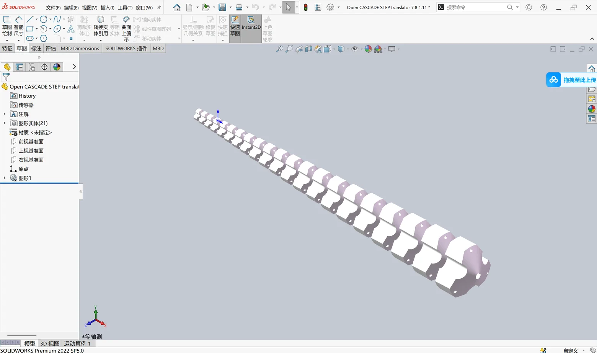
本项目围绕绳驱动连续体柔性机械臂的设计与运动控制展开，主要研究柔性结构的建模、驱动方式及运动特性。
项目参考相关连续体机器人研究，采用多节圆盘与柔性连接结构，通过三根驱动绳的长度变化实现机械臂的弯曲运动。前期利用SolidWorks完成结构建模，对圆盘尺寸、节间距及整体结构参数进行调整，并结合3D打印开展实物制作与装配。在此基础上，使用MuJoCo搭建仿真环境，探索不同绳长组合下机械臂的运动状态，尝试实现末端位置控制及交互操作。
项目研究过程中，逐步将重点聚焦于单根柔性机械臂的结构优化与运动控制，通过建模、仿真与实物制作相结合的方式，分析绳驱动结构的运动特点及存在的问题，为后续进一步优化提供参考。
最开始是看到了中科大有关 SpiRobs 仿生螺旋机器人的文章，做的一个复刻。
最初的设计是做一个由三根触手组成的小型机械臂，通过舵机控制三根绳子的收放，让触手向不同方向弯曲，最好还能缠绕、抓取一些简单的物品，后续从自动化改成摇杆控制，算是一个比较有意思的桌面玩具。
- 第一阶段：阅读中科大SpiRobs相关论文，了解触手的结构原理和绳驱动方式，同时查找相关的开源代码，学习其中的建模方法和控制逻辑。因为之前没有接触过这类机器人，所以前期主要是在补充相关知识。
- 第二阶段：开始使用SolidWorks设计触手的基本结构。首先还是得先了解所需要用到的所有零件，才能真正的高效规划，所以是先进行了很长时间的规划。之后开始尝试根据论文中的螺旋曲线进行建模，后面因为发现了有些参数下触手前端的竹节太小，打印的效果不是特别好，所以调整了好几组参数，同时也设计了确定了舵机的型号，并且规划了安装位置和整体布局。
- 第三阶段： 使用树脂光固化打印制作触手，进行组装和实际测试。这一阶段主要是研究三根绳子的收放与触手弯曲方向之间的关系。通过不断调整舵机的转动角度和绳子的长度，尝试让触手向不同方向弯曲、卷曲。实际制作之后也发现，有些在建模时看起来没有问题的设计，真正组装起来还是会遇到不少麻烦，所以中间又对部分结构进行了一些参数上的调整。
- 第四阶段：主要是项目的推翻重建。在实际测试的过程中发现，虽然能够通过舵机控制触手弯曲，但是要让触手按照预期的方向运动，甚至自动缠绕物品，还是比较困难的。特别是三根绳子之间需要相互配合，不能简单地分别控制。同时，因为控制的函数拟合需要大量的数据，目前的模型不能够实现这个频率的使用性能需求。因此，后面开始使用MuJoCo进行物理仿真，希望先在电脑上研究不同绳长对应的弯曲情况，再考虑如何应用到实体上。
- 第五阶段： 在MuJoCo中尝试搭建多节触手模型，研究三根驱动绳的控制方式，期间决定使用手柄实时控制触手，转向做一个娱乐项目
- 向ai学习实施项目所需要的知识
- 并且整个项目方案也是在与ai讨论过程中设计的，主要是ai能给我提供很多灵感
- 不喜欢写代码……所以基本上所有代码都是ai写的，但是代码逻辑是我提前跟ai确认的，不然我自己用着也不放心
- and，有些文字工作利用ai润色一下
（好久之前交流的了……然后最近忙晕了，下次再回忆补充吧就
*主要的内容还是来自于做项目过程中的收获*
- 如何快速抓住论文的要点：首先肯定是要带着目的去读论文，通过摘要去大致了解一下这篇论文（个人感觉更快的是用ai梳理一下论文的整体论证逻辑、思路啥的……），之后再重点读那些对你有用的部分，论文里面的一些公式和数据可以多注意一下
- 如何选择并精读论文的某一模块：还是针对于你读这篇论文的目的吧🤔
- 关于利用函数建模：首先，导入点的方法是不可以取的！！！然后呢，貌似只有solidworks才支持函数画图，画完图之后再叠一层草稿，之后每次在函数上面画图的时候，要把无关紧要的限制条件去掉（比如自动生成的垂直and平行），有些时候就会莫名其妙的冲突了……很神奇
- 关于装配体与零件的转化：这个……还是去b站上学习一下吧
- 关于零件拆分问题：有时候你零件画完才会发现貌似需要给他拆解成装配件……到时候就用上这个了
- 做一个项目之前一定一定要把整个项目规划好，之后再做会比较顺，这次就是仗着自己只想做一个复刻，就直接动手做，马上就垮掉了
- 要先把各部分的模块关系梳理好，再动手。比如我这次的项目，舵机的选择关系到我整个布局的设计，而布局的设计又关涉到我的触手的尺寸，舵机的选择也涉及了我的控制逻辑，所以，当我最开始的工作是设计触手的时候，就已经注定我会多次反复修改的结局
- 关于光固化误差与极限尺寸：经过实验发现，极限是0.8mm（如果没有记错的话），然后，因为光固化也是一层一层堆叠上去的，所以如果厚度比较大的情况下，这个孔隙的直径至少要增加大概2mm
- 还有3d打印的单价（bushi：才发现，原来3D打印是真的贵，可以找有学生优惠的
- 关于常见视觉模块的一些认识
- 关于视觉模块硬件部分的认识：树莓派的组件其实是很多模块组合起来的，所以，为了节约成本，也可以选择自己组装🤭
- 关于视觉模块的处理代码：这个可以在硬件上实现，也可以在电脑上用python跑出来
- 关于相机的类型和摆放位置：这个还是比较的……麻烦的，因为这个涉及到了整体的布局，还有我的建模。种类比较多，单相机，双相机的，深度相机and各种成像相机。这个布局怎么样不会被遮挡，感觉尝试下来就是……量身定做吧……嗯对
- 主要还是看手册：各种引脚+你的代码咋写的
- 咨询ai（bushi
- 物理仿真的运行原理
- 物理仿真重要的参数设置：硬度、刚度、弹性、还有连接关系……
- 如何构建物理仿真
- 发现一个和ai交互的非常好的办法，指令之后，让ai向我提问，直到他95%确定能理解我的意思
- 项目名称：遥控玩具触手
- Mentor：朱子衡
- 预期完成时间：开学前
---
- 初期目标：参考中科大SpiRobs的研究，复现一个可以自由弯曲、卷曲的仿生触手。最开始设想的是制作三根触手组成的小型机械臂，通过舵机控制触手进行空间螺旋的运动，然后对目标物体进行一个抓取，后面改成了一个触手的自动化抓取。
- 后期目标：在实际制作过程中发现，线下的工具无法实现自动化的数据采集，于是转变为通过MuJoCo仿真，研究绳长变化与触手弯曲形态之间的关系，并尝试实现手柄遥控，以及触手接触物体后调整方向、继续卷曲等功能，然后就从复现转化为做一个桌面玩具。
---
- 实现思路：
- 首先参考中科大SpiRobs的论文和开源项目，了解仿生触手的基本结构和运动原理，在此基础上进行简化和复现。
- 结构建模方面： 使用SolidWorks设计触手的竹节结构，参考论文中的螺旋曲线参数，调整竹节的大小、数量和间距。整体采用多节竹节串联的方式，中间使用柔性连接件，周围布置三根驱动绳，方便控制不同方向的弯曲。
- 实体制作方面： 采用树脂光固化打印制作竹节，完成触手组装。通过舵机收放三根驱动绳，改变各节之间的相对位置，从而实现触手弯曲。
- 电路及控制方面： 最开始计划使用ESP32控制舵机，通过调整舵机的转动角度改变绳长。由于三根绳子不能完全独立地收放，因此需要设计相应的控制逻辑，让三根绳子能够配合运动。
- 整体配合： 原本打算先完成实体触手的制作和测试，再将控制程序应用到三触手组合中。后来调整为先研究单根触手，在仿真中测试不同的控制方式，如果能够实现比较稳定的运动控制，再考虑将其应用到实体上。
- 替代方案（当然，这个是在实践过程中想到的）：
- 结构方面： 如果按照论文参数直接建模，部分竹节尺寸过小，不方便打印和组装，就适当调整螺旋曲线参数和竹节尺寸，优先保证结构能够正常制作和运动。
- 驱动方面： 如果三根绳子难以实现精确的协调控制，可以先分别测试单根绳子的收放效果，再研究两根绳子之间的配合，逐步完善三绳控制。
- 控制方面： 如果暂时无法实现自动缠绕、抓取，可以先实现手动控制触手向不同方向弯曲，或者是转化为遥控。
- 数据收集方面： 线上搭建触手的物理模型，将三根驱动绳的长度作为控制变量，观察不同输入下触手的运动情况，同时尝试获取末端位置等数据，研究绳长与触手运动之间的关系。
- 参考资料：
- 中科大SpiRobs仿生螺旋机器人相关论文（Device，2024），主要参考其结构设计和绳驱动原理。
- SpiRobs/Open-Spiral-Robots相关开源资料，主要学习建模思路和代码结构。
---
需给出每一阶段的具体的实施内容(需考虑线下实践环节[如焊接、打印等可能需要来学校])。
- 前期准备：主要是阅读论文、学习相关知识。因为之前没有接触过柔性机器人，所以需要先弄明白触手为什么能够弯曲、三根绳子分别起什么作用，以及整个结构应该如何设计。同时查找相关开源资料，确定基本的实现方案，并准备后续需要使用的舵机、驱动绳及其他零件。
- 模块开发：
- 硬件：使用SolidWorks完成触手竹节的建模，网上用树脂激光打印，随后进行穿线、组装和舵机安装。测试过程中如果出现尺寸不合适、绳子运动不顺畅等问题，就重新调整零件和装配方式。
- 软件：使用ESP32编写基本的舵机控制程序，研究舵机转角与绳长变化之间的关系。后续使用Python和MuJoCo搭建仿真模型，尝试通过不同的绳长输入控制触手运动，并获取相应的仿真数据。
- 联调测试：首先测试单根驱动绳能否正常带动触手弯曲，然后逐步尝试两根、三根绳子的协调控制。将实体测试中观察到的运动情况与MuJoCo仿真进行比较，检查仿真是否能够较好地反映实体触手的弯曲情况，并根据结果调整控制逻辑。
- 完善优化：重点完善单根触手的运动控制，尝试通过手柄控制触手的弯曲方向，并研究触手接触物体后的运动调整。如果时间允许，再进一步尝试卷曲包覆和简单抓取。最后整理项目的建模文件、代码、实验记录和遇到的问题，方便后续继续改进。
---
主要器件/材料(主要考虑贵的，占整体预算大头的部分)：
预计总预算： ￥____530__
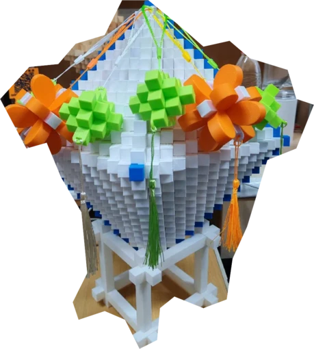
37.菠萝鲁班锁菠萝鲁班锁的木条越多，制作和拼接是否仍有通用的方法？作者从反复动手拼锁出发，推导锁块数量，并用 3D 打印验证不同规模的结构。


鲁班锁是一种常见的益智玩具，本研究选取其中常见的一类——菠萝鲁班锁进行研究。我在大量地制作和拼接菠萝鲁班锁的基础上，总结出了菠萝鲁班锁一般简便的制作方法——“z轴集中法”和通用的拼接方法——“八步法”；运用数列、函数、立体几何等数学知识推导出了菠萝鲁班锁各类锁块根数公式、总根数公式，并研究菠萝鲁班锁的一些数学性质；把计算公式编写成Scratch、Python、C++程序；还将程序转换为人们常用的微信小程序、HTML网页版、电脑应用程序、手机APP；用木工方法和3D打印进行实践验证，设计制作了市面上没有的99、129、289、393、649根菠萝鲁班锁，验证了方法的可行性、普适性；本研究的成果为鲁班锁爱好者提供了制作和拼接菠萝鲁班锁的理论支撑和方法指引，方便了它的普及推广与生产应用。
目前主要实现了两个功能：
1.计算菠萝鲁班锁所需锁块根数、所需材料长度、，辅助制作
2.查询任意位置锁块编号，方便拼接
2.html网页版
3.exe应用程序
4.手机app
5.C++/Python的原装程序
这是算法的流程图。
功能一：计算锁块根数、长度
开始运行程序，点击“计算”图标，软件会询问：“请输入菠萝鲁班锁阶数n”，用户输入后，软件会用变量和列表的形式输出计算结果，包括锁块最大长度、总根数以及每种锁块的根数。我们可以根据需要把列表等数据形式导出为文本文档或者Word文档。用户可以根据计算结果直接画图制作相应的鲁班锁，制作完成后按照“八步法”拼接，就能做出任意阶数的菠萝鲁班锁。
例如，输入阶数为5，可以知道总根数为33根、D2锁块有13根等。
功能二：计算所用木材的总长度
点击“计算”图标，输入阶数n后，软件还会询问“请输入木料宽度（mm）”，用户输入后，软件会用变量形式输出用料信息，包括用料总长度数（以1个柱宽为单位长度）、材料的总长度（mm）。用户可以根据计算结果购买材料、预算成本等。
例如，计算5阶大菠萝锁，输入宽度为14mm，计算出用料长度数为161，用料长度为2254mm。用户可以进一步把这个数据换算成所需一定长度木条的根数、成本价格等。
功能三：查询任意位置锁块的编号和长度系数
点击“查询”图标按钮，开始锁块查询的程序。输入位置坐标，如（0,0,2），程序就会以变量的形式输出长度系数、长度、锁块编号。
例如，在6阶鲁班锁中查询位置（0,0,2），输出结果为编号C4以及其长度系数为4。
样例图片：
通过这里输出的简单的A/B/C/D/E可以判断锁块分类，按照长度系数进行建模制作。
锁块分类图：
进一步改进：
1.输入阶数自动生成全部锁块3D模型
2.拼接过程动画演示
3.拍照自动识别阶数，给出拼接教程
暑假期间按照软件系统指示，计算了15阶393根菠萝鲁班锁的所需锁块情况，solidworks绘制了所有锁块（这一点上还没有实现自动化，是下一步的研究方向。测试AI建模无法制作能拼接的鲁班锁锁块，存在很大误差），并3D打印。
随后不断修改尺寸，使得能拼上，反复练习手法，使得拼接时不松散不垮掉。重复很多次之后拼接完成。
这是总体成品：
这一张是豆包去背景P了一下：
这是照的照片，最大的那一个：
锁块之一，设计难度不大，主要是要设计的太多，以后争取实现自动化：
部分锁块文件，总共是393个：
3D打印：
某一次拼接了95%但是散花了，后来重新拆开再拼接：
鲁班锁的最大最重吉尼斯世界纪录保持者为天津职业大学辛全生师傅。该成果虽然没有我的根数多，是99根的，但是他使用比较粗的实木——缅甸红花梨木进行制作，所以重达一千三百多斤。
辛老师做的鲁班锁（99根），世界上最大鲁班锁吉尼斯纪录：
但是我在学校没有找到过能加工较大型木材的切割机。咨询过阳志和佳朔学长，可能确实没有。后续如果有机会，有带锯机/轮锯等等，并有买木材（木条）的话，可以尝试打破这个吉尼斯世界纪录。
主要是没有加工的机器，不知道金工有没有能加工的，有的话可以更加便捷地打破记录。
下一步计划：
1.制作市面上的鲁班锁36件套，进一步研究鲁班锁结构
2.研读鲁班锁相关文献，撰写《鲁班锁制作与拼接方法研究综述》论文并发表
3.再进一步制作更大的，争取打破吉尼斯世界纪录
4.对鲁班锁计算机建模和生成算法进行研究，结合计算机图形学、CV等
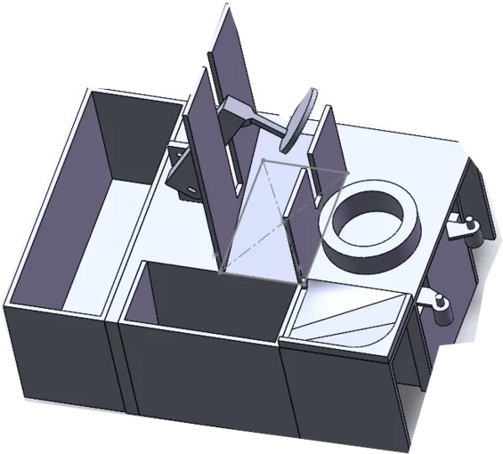
38.制冰机就是一个可以制冰的机器。


项目名称：制冰机
mentor：徐奕
即简单功能介绍，可附图和视频加以说明
制冰机就是一个用来制造冰块的机器。
嗯好像没什么好介绍的，就是一个可以制冰的玩意。
半导体制冷片选择一片12706和一片12712，总功率180W
继电器选择途格斯5V继电器（什么你问为什么12V电压用5V继电器？那你别管，反正又没爆炸
容器选择铝合金茶叶罐（45mm直径）的盖子部分
散热器选择酷冷至尊X99服务器CPU散热器
水泵选择维可思5V水泵和外径8mm软管
步进电机选择28BYJ-48
降压模块选择超LM2596S
还有ESP32进行控制
整体大小长24cm宽16cm高24cm（不包括电路部分）
---
构建"迭代与改错"记录，可仅截屏展示
代码基本上是春夏学期项目的基础上做了一些小修小改得到的，就是加了个控制水泵的功能，以及电机的运动时间和运动方向改了一下。
电路部分（请输入文本）
我电路部分的设计完全遵循“又不是不能用”的原则，没有自己画电路板而是全部飞线解决
以下为各个模块之间的飞线示意图
机械结构设计说明
这是项目的3D建模，右下是制冰结构，上方的装置可以把以及制好的冰提起来，然后冰会被中间竖起来的板子卡掉并且顺着斜坡滑到下方收集冰块的盒子里。左边是水槽，在制冰结束后通过水泵补充水并且进行下一轮制冰。
可附加图片视频
飞线
最初的制冰尝试，失败
成功制出第一块冰
第一版建模
增加esp32进行控制
增加水泵和水槽，最终成品
列举在项目内容中的AI使用情况
选型：AI提供了主流的半导体制冷片以及使用场景。
代码部分：继承了春夏学期项目的代码，而春夏学期代码的部分函数是由AI编写的。
可贴几张与mentor、同学交流的截屏
夜骑锐提供了取冰部分的设计思路，以及提供了棒冰和零食。
⑥🐏☞学长提供了情绪价值。
猫娘学长提供了无人机（但是好像和我的项目没有啥关系。
徐奕学长提供了mentor。
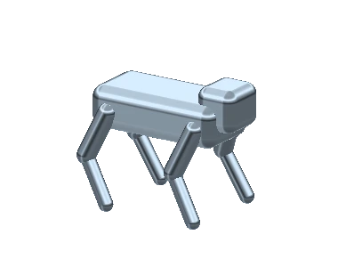
39.四足机器人本项目实现一款可网页端远程控制的仿生四足机器人。系统搭建轻量化Web交互界面，无需安装APP，电脑、手机浏览器接入即可下发指令，通过无线通信传输控制信号，驱动舵机完成前进、转向、站立、匍匐等步态动作。项目融合嵌入式、伺服驱动、前后端通信技术，完成步态解算与实时指令响应，降低机器人操控门槛，可用于室内巡检、科创展示，为后续拓展视觉回传、自主避障功能打下基础。